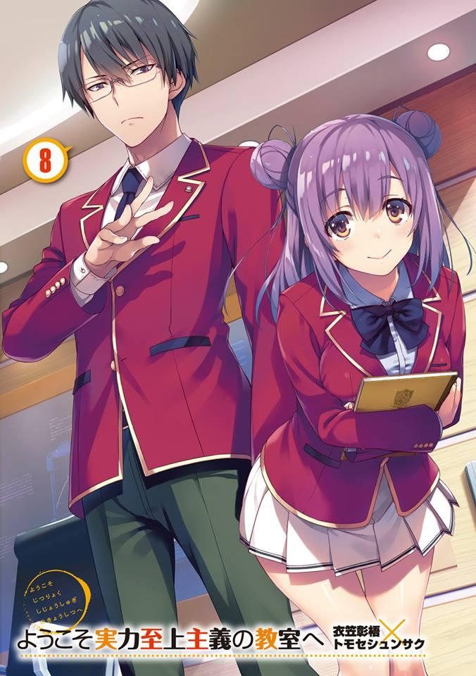
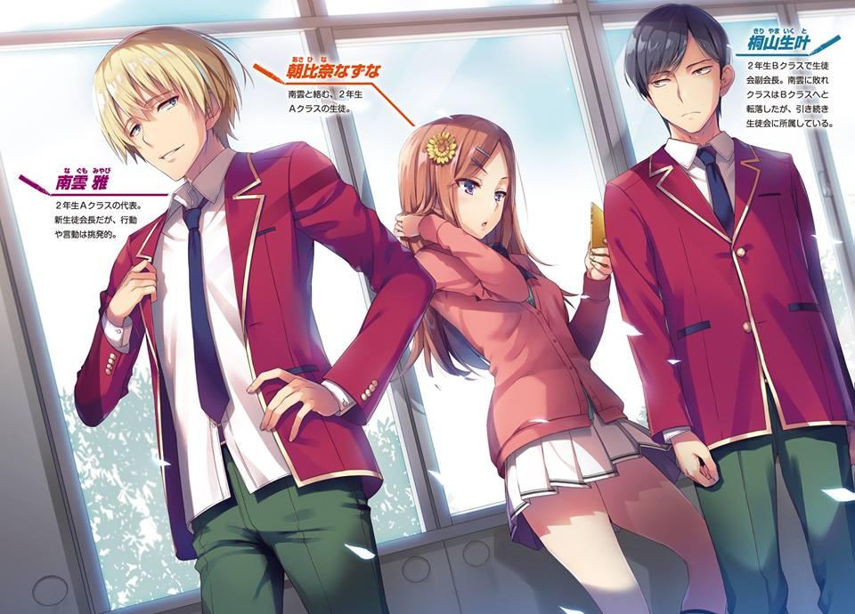
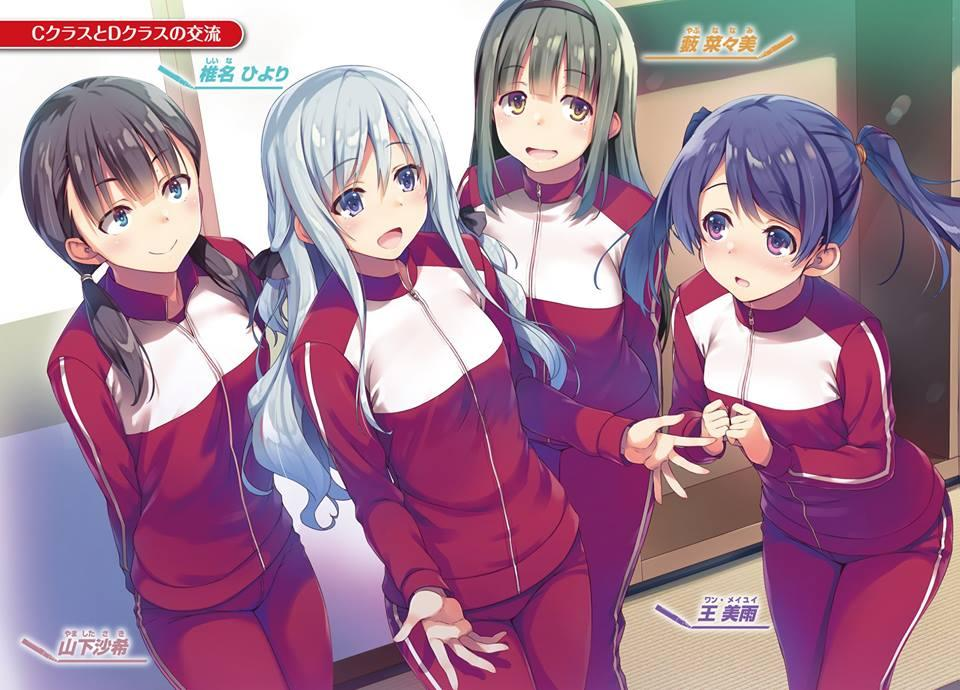
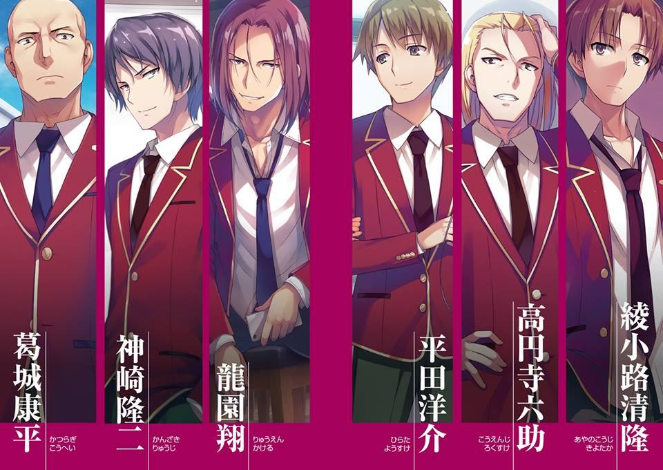
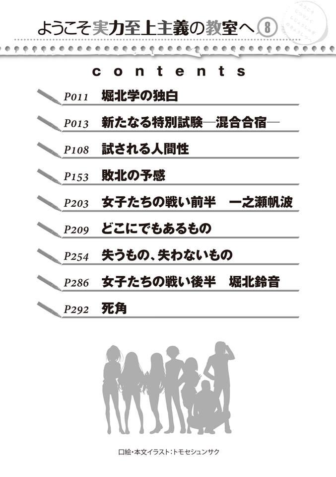
GLADHEIM
TRANSLATIONS
Youkoso Jitsuryoku Shijou Shugi no Kyoushitsu e - Volumen 8
EL MONÓLOGO DE HORIKITA MANABU
Hay algunas cosas que la gente encontraría extrañas si se enterara de ello.
La verdad es que no elegí esta escuela porque tuviera algo que quisiera llevar a cabo o algo así.
Había vivido con intención de convertirme en una persona talentosa, pero no tenía en mente ningún destino en particular.
Político, médico, investigador, no pretendía nada de eso.
Para bien o para mal, he vivido mi vida asegurándome de no perturbar nada.
Con indiferencia completo mis tareas y paso mis días de esa manera.
Ser un “modelo a seguir”. Ser “ejemplar”.
Creía que eso era lo correcto y nunca lo cuestioné.
Sin embargo, Nagumo Miyabi emprendió una acción tras otra para oponerse directamente a mí.
Una persona que se abre paso, así se puede describir a ese hombre.
De hecho, hasta que me graduara, ya había renunciado a la acción.
He fallado en hacer un amigo en el que pueda decir que confió desde el fondo de mi corazón.
Todavía tengo que comprenderlo.
Después de 3 años, finalmente me he dado cuenta. Mi “error” y el arrepentimiento que me produjo. Y que este es el “principio”.
UN NUEVO EXAMEN ESPECIAL - CAMPO DE ENTRENAMIENTO MIXTO.
Un jueves por la mañana, no mucho después de que comenzara el tercer semestre, varios autobuses circulaban por una autopista.
Los de primer año no eran los únicos en los autobuses. El segundo y tercer año también están a bordo. En otras palabras, es una verdadera migración para todo el alumnado de la escuela.
El autobús en el que íbamos nosotros, los de primer año de la clase C, entró en un túnel y poco después, nuestros oídos fueron asaltados por la sensación de estar tapados.
Esta es mi segunda vez en un autobús desde que me inscribí en esta escuela.
A dónde vamos y qué vamos a hacer, hay cosas sobre las que no hemos recibido la más mínima explicación.
En esta etapa, todo lo que puedo decir es que a todos se nos ordenó usar nuestras camisetas y que es muy recomendable que preparemos varias camisetas y ropa interior de repuesto.
Sin embargo, al menos es probable que no sea una excursión.
El tiempo de viaje es de unas 3 horas, un tiempo de viaje bastante largo, por lo que dentro de los límites de lo permitido los estudiantes trajeron consigo sus cosas favoritas.
Cosas como teléfonos, libros y tarjetas o bocadillos y jugo.
También hay entre ellos, estudiantes que traen consigo aparatos de videojuegos.
Como los asientos del autobús están ordenados según nuestros nombres, es Ike Kanji quien se sienta a mi lado.
Tenía la intención de llevarme bien con él después de inscribirme, pero cuando me di cuenta, nos habíamos convertido en “sólo compañeros de clase” y nuestras oportunidades de pasar el rato disminuyeron drásticamente.
Incluso ahora no soy yo, el que está sentado a su lado, con quien habla. Se puso de rodillas en el asiento, se volteó y habló con Sudou, Yamauchi y los demás en voz alta, ya que estaban sentados lejos de él.
De vez en cuando, podía escuchar a las chicas advirtiéndoles que sus voces eran molestas, pero no parecen estar prestando atención a eso.
El interior del autobús es bastante estridente. No es de extrañar que no estén siendo considerados.
Me siento un poco solo, pero no puedo evitarlo.
Afortunadamente, a través de los exámenes pude hacerme amigo de estudiantes como Keisei y Akito.
Nos encontramos dentro de un autobús con un ambiente armonioso, pero me di cuenta de que no será un simple paseo.
Tal vez hubiera podido considerarlo mero ocio si hubiera sido en las vacaciones de invierno, pero el tercer semestre ya está en marcha.
En ese caso, asumir que este va a ser un examen especial como lo fue en la isla deshabitada, es lo mejor para estar tranquilo.
Sin embargo, no es como si Ike y los otros tampoco hayan madurado.
Chabashira-sensei-sensei observó a los estudiantes ocupándose de sus propios asuntos con curiosidad.
Cerca de mi asiento y cerca del asiento del conductor, ella está allí observando a los estudiantes.
Como sería problemático que nuestros ojos se encontraran por casualidad, decidí mirar por la ventana.
Este es un túnel largo.
Han pasado entre 2 y 3 minutos desde que entramos en el túnel. Justo cuando pensaba eso, lentamente pude sentir que mi campo de visión se iluminaba.
Habíamos salido del túnel.
Como si hubiera estado esperando eso, Chabashira-sensei-sensei se movió.
Al mismo tiempo, el dolor en mi oído aumentó.
— Siento interrumpir su diversión, pero cálmense.
Chabashira-sensei-sensei dijo eso a los estudiantes mientras sostenía un micrófono en sus manos.
— Pensé que les gustaría saber adónde va este autobús y qué haremos entonces.
— Por supuesto que tenemos curiosidad sobre eso. No me dirá que es la isla deshabitada otra vez, ¿verdad?
Recibiendo la queja de Ike, contestó Chabashira-sensei-sensei.
— Parece que lo que pasó en la isla deshabitada es difícil de olvidar para ustedes, ya que se quedó en su memoria. Pero cálmense. Un examen de esa escala no es algo que se pueda hacer con frecuencia. Significa que no somos tan crueles como para forzarlos a hacerlo ahora que el verano ha terminado para ustedes. Sin embargo, como ya habrán adivinado, se realizará un nuevo examen especial. Su nivel de vida será extremadamente alto comparado con el de una isla deshabitada.
Ella dijo eso, pero no es algo particularmente digno de confianza. Dejando de lado la isla deshabitada, hasta ahora ha habido exámenes especiales que los estudiantes comunes habrían considerado difíciles.
Lo más importante es que el estudiante se verá obligado a enfrentarse directamente a la amenaza conocida como expulsión que se esconde detrás de los exámenes especiales.
— ¡El examen especial que se les exigirá a los estudiantes de clase D a partir de ahora es…!
Llegó tan lejos y sin embargo Chabashira-sensei-sensei dejó de hablar.
En ese momento, mis compañeros de clase sonreían con orgullo.
Inmediatamente después, Chabashira-sensei-sensei inclinó la cabeza con respeto y se disculpó.
— Mis disculpas. Ya son estudiantes de la clase C. Ahora bien, ya que han sido ascendidos, les explicaré los detalles de los exámenes especiales.
Después de haber superado múltiples exámenes especiales, los estudiantes que finalmente han llegado a la clase C en el tercer semestre parecen estar aceptando su situación actual con calma.
El hecho de que la explicación tendrá lugar en el autobús significa que a partir de este momento, es posible preparar hasta cierto punto contramedidas o, al menos, tendré la oportunidad de hacerlo.
Como todavía estamos en movimiento, está prohibido levantarse descuidadamente de tu asiento, pero en el interior del autobús, la voz de una persona puede llegar fácilmente a todo el mundo. Si usas un teléfono, es posible hablar sólo con una persona específica.
Incluso Ike y los demás, que suelen ser muy ruidosos, se detuvieron inmediatamente para escuchar lo que Chabashira-sensei-sensei tiene que decir.
Aunque sea sólo esto, demuestra que han crecido un poco.
— A partir de este momento, serán llevados a una escuela al aire libre en lo profundo de cierta montaña. Con toda probabilidad, llegaremos a nuestro destino antes de que pase otra hora. Cuanto más corta sea la explicación, mayor será el “período de gracia” que tendrán disponible.
Esto significa que queda aproximadamente una hora para que comience el examen especial.
Aunque se necesiten 20 minutos para llevar a cabo la explicación, aún quedarían 40 minutos. Me quedaría mucho tiempo para formular una estrategia con respecto al examen especial.
Eso es probablemente lo que quiso decir con “período de gracia”.
— ¿No es la escuela al aire libre algo a lo que vas en verano?
Las montañas que podemos ver desde la carretera siguen cubiertas de blanca nieve.
Una pregunta surgió de Ike, que es un experto cuando se trata de montañas de su época como boy scout.
— ¿No puedes callarte y escucharme? Creo que acabo de hablarles sobre el
“período de gracia”.
Dijo Chabashira-sensei-sensei más agradable que enojada.
Ike se disculpó y se rascó la cabeza.
Siguió una breve risa.
Escuela al aire libre.
Como no había oído hablar de esa palabra antes, la busqué en mi teléfono.
— Se celebra principalmente en verano y suele tener lugar en un día con un clima agradable en lugares como montañas u otros donde abunda el verdor. La actividad colectiva se lleva a cabo con el objetivo de promover la salud de los estudiantes. También podría referirse a las instalaciones utilizadas con ese fin.
Ya veo. Como dijo Ike, suele ocurrir en verano. Pero aún así, no es como si definitivamente deba tener lugar en esa temporada o algo así.
— Las oportunidades de conocer a los estudiantes mayores, especialmente a aquellos que no participan en ninguna actividad del club, son limitadas.
Pero en la escuela al aire libre, tomaremos medidas colectivas que van más allá de los años escolares durante 7 noches y 8 días. Es como algo que va más allá de lo que ofrece el festival deportivo. El nombre del examen especial que se llevará a cabo es “Campo de entrenamiento mixto”. Ya que estarán ansiosos si es sólo una explicación verbal, voy a distribuir los materiales ahora.
Chabashira-sensei-sensei comenzó a caminar y entregó un paquete de materiales al estudiante sentado en el asiento de la primera fila.
Cada uno de nosotros tomó uno y pasó el resto atrás.
El material en sí era bastante grueso y constaba de varias páginas.
Como no se nos ordenó que no miráramos, le di la vuelta y le eché un vistazo.
Había fotos de lo que parece ser el campo de entrenamiento debidamente integrado.
Se incluyen habitaciones donde los estudiantes pueden dormir, grandes baños, cafeterías y demás.
Ver todo esto hace que parezca divertido, o mejor dicho, es como leer una guía de viajes.........
Pero es inevitable que cada palabra importante con respecto al examen especial que vemos haga que nuestro estado de ánimo se vuelva sombrío.
Aunque se trate de un examen especial, está el relativamente grueso material que nos entregaron además de la explicación verbal.
Aunque pienses que es lo mismo que la explicación para el Paper Shuffle que recibimos no hace mucho tiempo, este examen especial parece que se está convirtiendo en algo molesto.
No mucho después, todo el mundo puso sus manos en el documento. Después de confirmarlo, Chabashira-sensei-sensei sigue hablando.
— Siéntanse libres de leer, pero voy a seguir adelante con la explicación del campamento de entrenamiento mixto. Ya que voy a recoger los materiales antes de que se bajen del autobús, cerciórense de que entienden bien las reglas. Aceptaré preguntas al final, así que asegúrese de callarse y escuchar. ¿Comprenden?
Dijo Chabashira-sensei-sensei mientras volvía a mirar a Ike. Ike hizo dos o tres movimientos bruscos con su boca.
— Esta vez, el examen especial será un campo de entrenamiento que se centrará principalmente en el desarrollo mental. Para lograrlo, empezaremos con el ABC de la integración en la sociedad y
confirmaremos si pueden o no vivir en armonía con aquellos con los que no interactúan comúnmente. Y todos y cada uno de ustedes lo aprenderán.
Entonces, ¿esa es la razón por la que tendremos que tomar medidas conjuntas junto con los estudiantes mayores? Chabashira-sensei-sensei dijo lo mismo, pero los estudiantes que participan en las actividades del club habrán establecido relaciones entre los estudiantes mayores y los menores, pero aún así, la mayor parte de eso se limitará solamente a las actividades del club.
Los estudiantes fuera de esa categoría no habrán tenido absolutamente ningún contacto con los estudiantes mayores y esos estudiantes no son una minoría.
En esencia, habría sido estupendo que estos intercambios se hubieran llevado a cabo de forma voluntaria, sin necesidad de utilizar las actividades del club como intermediario, pero también es un hecho que la realidad no es tan simple.
Sin embargo, ¿cómo van a involucrar exactamente a los estudiantes mayores en esto? A menos que el contacto entre nosotros no sea una necesidad absoluta, entonces, al igual que durante el festival deportivo, los estudiantes seguramente mantendrán su distancia.
Bueno, es probable que estemos yendo a las montañas para el “campo de entrenamiento” para asegurarse de que eso no ocurra...
De cualquier manera, mientras las reglas para el examen especial no estén establecidas correctamente, es fácil encontrar lagunas.
Hay una enorme brecha entre el primer y el segundo año en términos de desarrollo físico y mental.
Para los adolescentes, el período de un año es muy significativo.
No será por mucho, pero seguramente no podremos luchar contra ellos en igualdad de condiciones.
— En primer lugar, una vez que lleguen a su destino, haré que se separen por género. A continuación, mantendrán un debate con todos los años escolares y luego se dividirán en seis grupos.
— Seis grupos, basados en el género...
Como si quisiera memorizarlo, Ike murmuró a mi lado.
La explicación acaba de empezar, pero Chabashira-sensei-sensei continuó sin parar.
— Se han decidido los límites inferior y superior para el número de personas en un grupo. Miren la quinta página del material en sus manos y vean bien los patrones del número de personas escritas allí.
De repente, los estudiantes voltearon los ojos para mirar la quinta página del material. Parece que las reglas relativas a los grupos en el campo de entrenamiento están escritas allí.
“Cuando se establece un grupo, hay un límite inferior y un límite superior en el número de personas que pueden estar en él. Ese número se ha calculado a partir de la separación de chicos y chicas, así como de los años escolares. Por ejemplo:
- Si hay 60 chicos en el mismo año escolar, entonces 8-13.
- Si hay 70 chicos en el mismo año escolar entonces 9-14.
- Si hay 80 chicos en el mismo año escolar, entonces 10-15.
Serán los límites inferior y superior para un grupo.
Sin embargo, si el número es inferior a 60, por favor, remítase a la sección especial.”
Eso estaba escrito allí.
Si no hay diferencia en la proporción de chicos y chicas en los años escolares, en teoría una clase debe tener 40 y si la proporción de chicos y chicas es de 5:5, entonces el número total de chicos para el primer año sería de 80.
10-15 formarían un grupo y en total, se formarían seis grupos.
El hecho de que se refirieran al número total de estudiantes significa que, dependiendo del número de expulsiones durante todo el año escolar, la cantidad de personas requeridas también cambia.
— Creo que ya lo saben, pero el hecho de que la división en seis se base en el género significa que los estudiantes de otras clases se mezclarán cuando se formen los grupos. Además, en la duración de la escuela al aire libre, tendrán que hacer el examen especial con ese grupo. Significa que sus destinos están atados unos con otros.
— No es razonable pedirnos que formemos un grupo con chicos de otras clases. ¿No son ellos el enemigo?
Quizás no soportaba seguir callado, mientras Ike murmuraba para que Chabashira-sensei-sensei pudiese oírlo.
Pero tal vez tuvo una buena idea, ya que entonces habló como si una bombilla hubiera sido encendida por encima de su cabeza.
— ¿Es eso cierto? Entonces no tenemos que preocuparnos por eso, ¿verdad?
Podemos simplemente dividirnos, la Clase C, en dos grupos y eso será el final de todo. Eso es lo que significa, ¿verdad? Ayanokouji?
Ike me preguntó eso en voz alta.
Ciertamente, es posible ir con el límite inferior de 10 para formar dos grupos de la Clase C y este problema puede resolverse de esa manera. Sin embargo, esa idea de Ike, desafortunadamente, no funcionará.
— Eso suena bien, pero las cosas no son tan sencillas. Las reglas no permiten que un grupo se forme con una sola clase. Mientras el número de personas de tu grupo cumpla la cuota, no importa con qué clase te asocies, pero al menos, tiene que haber dos clases o más mezcladas.
Esa aseveración de Chabashira-sensei-sensei también estaba debidamente escrita bajo el concepto de dividir a la gente.
— Cada grupo debe tener estudiantes de al menos dos o más clases como requisito previo.
— ¿Quiere decir que nos veremos obligados a trabajar con el enemigo?
No es tanto una pregunta, sino más bien el sentido de las palabras que inesperadamente se filtraron de Ike.
Chabashira-sensei-sensei, que parecía un poco exasperada, contestó.
— Eso es lo que significa. Por supuesto, no es imposible intentar formar un grupo compuesto de estudiantes de tu clase tanto como sea posible.
Mientras haya un solo estudiante de otra clase, lo habrás formado.
En resumen, hacer dos grupos e ir con el límite inferior de 10 personas. Y de ellos, 9 serían de la clase C. Si lo hacemos, podemos formar un grupo que sea
“en su mayoría de la clase C”.
Sin embargo, dudo que un grupo así sea reconocido en todos los años escolares cuando se produzca el debate.
No hay muchos estudiantes que se unirían a un grupo que está formado en su mayoría por personas de otra clase. Además, ¿sería mejor tener más gente? ¿O
tener menos gente sería mejor? ¿Y si cambiará o no?
Si este es un examen donde las ventajas y desventajas pueden ocurrir en base a la diferencia entre el número de personas en cada grupo, entonces tener un grupo con pocas personas sería arriesgado.
Pero como las condiciones del examen aún no están claras, es imposible juzgar las ventajas y desventajas del número de personas.
Que sea suerte o desgracia dependerá de la esencia de este examen.
— ¿Es mejor para un grupo tener muchas personas? ¿O pocas personas?
Esto tendrá un impacto significativo en el “resultado” que voy a explicar ahora.
Diciendo eso, Chabashira-sensei-sensei se rió un poco.
Es fácil de entender ya que los pensamientos de todos estaban dirigidos en la misma dirección.
— ¿Podría continuar con la explicación de las reglas? Tengo curiosidad sobre el resultado, pero antes me gustaría saber qué tipo de cosas vamos a hacer como grupo.
Hirata, que se sentía incómodo, lo dijo e instó a Chabashira-sensei-sensei a que continuara.
— Así es. Si respondo a todas y cada una de las dudas de Ike no avanzaremos.
Ike se rascó la cabeza disculpándose.
— Los grupos serán algo parecido a clases temporales formadas sólo para la escuela al aire libre. Sin embargo, aunque sea sólo temporal, su contenido será intenso. Los miembros de un grupo tomarán clases juntos, cocinarán y lavarán juntos e incluso se bañarán y se irán a la cama juntos.
Experimentarán juntos la vida diaria de todo tipo de personas.
Si supieran que se van a bañar e ir a la cama juntos, tanto los chicos como las chicas gritarían.
— No siento que pueda vivir con gente de otras clases...
Puedo entender por qué Ike se quejaría así.
Colaboramos con otra clase durante el festival deportivo, pero eso fue algo temporal.
Apenas se puede decir que pasamos por lo mejor y peor juntos.
Por cierto, después de venir aquí, estuvimos a punto de participar en un examen que cruzaría los límites de la clase.
Dependiendo de las circunstancias, podemos formar un grupo que tenga las cuatro clases mezcladas en él.
— Cómo se decidirá el resultado del examen especial, que dependerá de un examen integral que tendrá lugar el último día de la escuela al aire libre.
En la página 7 se ofrece una idea general del contenido del examen.
Revísenlo.
Nos dijeron que lo hiciéramos, e inevitablemente todos lo comprobaron simultáneamente.
“Moral” “Disciplina mental” “Orden” “Individualidad”
Temas que nunca tendríamos que aprender en una escuela ordinaria estaban agrupados allí.
En otras palabras, debo ver esto como un examen separado de cosas como inglés y matemáticas, que caen dentro de la capacidad académica.
Lo problemático es que no hay una “respuesta clara” en un examen como éste.
Hay información sobre cada tema en los materiales que nos entregaron, pero todos son muy abstractos.
No hay nada acerca de cómo exactamente, a detalle, se llevará a cabo el examen.
Además, miré un horario de muestra. Después de despertarnos, trabajaremos en nuestras tareas matutinas. Luego nos reuniremos en el dojo para hacer Zazen y luego iremos a trabajar (cosas como la limpieza).
Luego desayunamos.
Después, estudiaremos varias cosas en un aula. Después de eso, almorzamos.
Luego recibimos asignaciones para la tarde y una vez más practicamos Zazen.
Luego cenaremos, nos daremos un baño y volveremos a la cama. Es un estilo de vida completamente diferente al que hemos vivido hasta ahora.
Por cierto, a diferencia de nuestras vacaciones habituales, las clases se impartirán durante toda la mañana el sábado.
Parece que sólo podremos descansar el domingo.
— Más detalles sobre su horario serán anunciados a su llegada a la escuela al aire libre. Qué tipo de examen especial se llevará a cabo y en qué orden en el último día, es algo que tampoco puedo decirles en este momento.
Significa que tendremos que ver lo que pasa mientras dure el examen especial.
Puede ser que la asignatura que enumeraron como "Zazen" también forme parte del examen.
Sería mejor si asumiera que pequeñas cosas como la postura y la actitud también influirán en el examen.
Aparte de eso, palabras como “discurso” y “fabricación” también son signos perturbadores.
— Decidir sus grupos es de suma importancia. Los seis grupos deben ser unidos y deben ser capaces de superar una semana de campamento. No importa cuál sea la razón, no se les permite retirarse de su grupo a la mitad o cambiar de miembros. Si un estudiante es forzado a retirarse por enfermedad o lesión, entonces el grupo debe lidiar con esa situación por sí mismo asumiendo que “ese estudiante existe”.
En otras palabras, si hay discordia entre nosotros o si nos enemistamos, entonces no seremos capaces de proceder. Cada vez más parece que además de formar nuestros grupos, tendremos que eliminar las otras clases.
Las lecciones a gran escala comenzarán el viernes por la mañana, eso es mañana, y hasta el miércoles de la semana que viene habrá clases en la escuela al aire libre.
Y también, en el octavo día, que será un jueves, todos los años escolares tomarán un examen simultáneamente y nos evaluarán.
— Después de que el primer año haya establecido sus grupos, se reunirán con el segundo y tercer año que habrán establecido sus grupos al mismo tiempo. En resumen, significa que se habrán formado seis grupos de entre 30 y 45 personas, compuestos del primer año hasta tercer año.
La situación ya es caótica, teniendo que formar grupos entre compañeros de primer año, pero otros años escolares también se añadirán a la mezcla.
Tan pronto como ese hecho fue comunicado, una extraña atmósfera se apoderó del interior del autobús.
— En pocas palabras, los grupos que se formarán en el año escolar son los grupos pequeños y los grupos que se formarán a partir de todos los años escolares serán los grupos grandes.
Todos y cada uno de los grupos que formemos en nuestro curso escolar serán
“grupos pequeños”. Los grupos pequeños se reunirán con grupos pequeños de segundo y tercer año y finalmente terminaremos como seis “grupos grandes”.
— Ahora pasamos al tema importante: el resultado. Eso dependerá del
“promedio de puntos” de los resultados de los exámenes de cada miembro de los seis grupos grandes. Significa que los talentos de los otros años escolares también jugarán un papel importante.
Básicamente, se calculará un punto medio de las 40 personas que componen un grupo grande.
Lo que me preocupa es la diferencia en el número de personas.
Si se trata de un promedio, aunque debería ser difícil que haya desigualdad, dependiendo de cómo se organicen los grupos pequeños, podría haber una diferencia considerable en el número de personas una vez que formemos un grupo grande.
Lo crucial aquí es “cómo formar un grupo grande”.
Si este es un examen en el que simplemente tenemos que competir entre nosotros en términos de capacidad académica, entonces es obvio que ganará el grupo grande en el que se reúnan todos los estudiantes talentosos.
Por el contrario, los estudiantes juzgados sin talento serán inevitablemente expulsados de los mejores grupos y tendrán que formar grupos de bajo rango.
Sin embargo, no es como si tuvieras la garantía de ganar en este examen especial simplemente reuniendo estudiantes talentosos.
— Han captado lo esencial hasta cierto punto, ¿no es así? Y ahora, para terminar, les explicaré lo más importante. Es decir, el resultado de este examen especial.
Así que básicamente lo que vamos a ganar y lo que vamos a perder, ¿eh?
Una vez más, la razón por la que estamos divididos en grupos y no en clases debería estar oculta aquí.
— Para los grupos grandes cuyos puntos promedio los coloquen en el primer lugar hasta el tercer lugar, todos sus estudiantes recibirán puntos privados así como puntos de clase. Para los grupos grandes que ocupen el cuarto lugar hasta el último lugar, digamos que recibirán un demérito.
Los detalles sobre el resultado también están escritos, por supuesto, en los materiales que se nos proporcionaron.
“Recompensas básicas”.
Primer lugar: 10.000 puntos privados. 3 puntos de clase.
Segundo Lugar: 5000 puntos privados. 1 punto de clase.
Tercer lugar: 3000 puntos privados.
Las recompensas mencionadas anteriormente serán distribuidas a todos y cada uno de los estudiantes.
Si en un grupo pequeño de 10, 9 resultaron ser de la misma clase, podrán ganar 27 puntos de la clase al quedar en el primer lugar.
Por supuesto, se trata sólo de describir un escenario ideal, pero lo mejor sería que pudiéramos reunir a estudiantes de la misma clase hasta el máximo de nuestras posibilidades y ocupar el primer lugar.
Sin embargo, cuanta más gente tengamos, mayor será el daño que sufriremos si perdemos. Además, si el número de personas aumenta, será más difícil controlar al grupo.
Por cierto, los factores negativos que me preocupan tienen mucho más peso que los pocos factores positivos que existen.
Cuarto Lugar: 5000 puntos privados.
Quinto puesto: 10.000 puntos privados. 3 puntos de clase.
Sexto lugar: 20.000 puntos privados. 5 puntos de clase.
Los puntos mencionados anteriormente serán descontados de todos y cada uno de los estudiantes.
Los puntos privados y los puntos de clase no caerán por debajo de cero, sino que se quedarán como déficit acumulado y se calcularán cada vez que recibamos recompensas en futuros exámenes.
Se puede decir que este es un elemento que no había estado presente hasta ahora.
La razón por la que uno siente que las recompensas por el primer puesto hasta el tercer puesto son algo escasas es porque hay un gran truco detrás de ello.
Sobre el tema de las recompensas, esta frase estaba escrita. Chabashira-sensei-sensei siguió adelante y lo leyó en voz alta.
— Está configurado de tal manera que dependiendo de cuántos de una clase en particular estén presentes en un grupo pequeño, la recompensa puede ser el doble. Además, mientras más gente forme un grupo pequeño, se ampliará aún más. Estas son las reglas que se aplican desde el primer lugar hasta el tercer lugar y esto no se aplicará para el descuento para el cuarto lugar y por debajo, así que relájense.
Si dos clases forman un grupo pequeño, del primer lugar hasta el tercer lugar serán recompensados como se ha mencionado anteriormente, pero si se compone de tres clases, ambos puntos se duplicarán. Si se compone de cuatro clases, se triplicará.
Además, dado que la amplificación parece cambiar dependiendo del número total de personas, 10 personas harían que se multiplicara por 1, 15 personas harían que se multiplicara por 1,5 como máximo.
Esto es una excepción, pero si se forma un grupo con 9 personas en él, se multiplicará por 0,9 en ese caso.
Según los cálculos, la mayor recompensa por obtener el primer lugar sería el triple si están presentes estudiantes de las cuatro clases y, además, para un grupo con el número máximo de 15, se multiplicaría por 1,5 (redondeado al entero más cercano) y cada persona recibiría 45.000 puntos privados, así como 14 puntos de clase.
Hasta ahora, esto cubre las partes buenas del examen especial y también existe una parte problemática pero interesante.
Sin embargo, se podría decir que lo verdaderamente importante es lo que viene después de esto.
— Además, el grupo grande que ocupe el último lugar será sancionado con una penalización enorme.
— Penalización.... no puede ser.
— Así es. Es la “expulsión”.
Ese castigo, que en sí mismo ya no es una sorpresa, fue revelado.
— Aun así, no es como si fuéramos a expulsar a todos en el grupo grande que ocupe el último lugar. Porque si lo hiciéramos, tendríamos aproximadamente 40 estudiantes expulsados en nuestras manos. El criterio por el cual se producirá la expulsión se limita sólo a los grupos pequeños cuyo promedio esté por debajo del promedio límite establecido por la escuela.
Esta es una disposición bastante problemática. La clasificación general se calculará a partir de los promedios de los grupos grandes, pero cuando se trata de la expulsión, lo que importa es el promedio del grupo pequeño.
— Si un grupo pequeño cae por debajo de esa frontera, su “líder” será expulsado.
— ¿Cómo será elegido ese líder exactamente?
— Lo discutirán en su grupo pequeño con anticipación y elegirán uno. Eso es todo.
— ¿Qué demonios? Quién diablos querría ser el líder cuando la expulsión está sobre la mesa.
En el futuro, me pregunto cuántos estudiantes se ofrecerán como voluntarios.
— También tiene sus ventajas. Los estudiantes que son compañeros de clase del líder recibirán el doble de la recompensa.
— ¿... El doble, dice?
Horikita, que había estado en silencio hasta ahora, murmuró sorprendida.
— Así es. La mayor recompensa por este examen especial sería obtenida por 12 estudiantes de la clase C dentro del grupo. Y los 3 restantes serían extraídos de las clases A, B y D. Encima de eso, si el líder es alguien de la clase C y consigue el primer lugar, entonces...
— ¿Qué pasará entonces?
Yamauchi, incapaz de hacer los cálculos, se frotó la nariz con entusiasmo.
— 1.08 millones de puntos privados. 336 puntos de clase. Es lo que se puede ganar.
— ¡Trescientos treinta y seis!
Si lo conseguimos de golpe, nuestra clase cambiará significativamente.
Depende de la puntuación que obtengan los otros grupos, pero no es imposible llegar a la clase A en este examen.
Cuantos más riesgos corras, mayores serán las recompensas.
Además, las posibilidades de recibir la mayor recompensa no son bajas en absoluto.
— Después de que el grupo pequeño haya sido establecido, tendrán que discutir entre ustedes y decidir un líder antes del amanecer del día siguiente. Si, por casualidad, no pueden decidir un líder para su grupo, entonces su grupo será descalificado inmediatamente. En otras palabras,
todos ustedes serán expulsados forzosamente. Por supuesto, no ha habido un solo grupo en el pasado tan tonto como para no poder decidir un líder y ser expulsado.
Así que la escuela no será la que decida. Es algo que los estudiantes deben decidir por sí mismos.
Naturalmente, terminaremos peleando mientras intentamos decidir un líder. Sin embargo, si al final todavía no hay candidatos, entonces no tendríamos otra opción que decidirlo con una lotería o un juego de piedra, papel y tijera.
Es inevitable teniendo en cuenta que todos saben que pueden ser expulsados.
En una situación en la que ya va a ser difícil unirnos, también hay una alta posibilidad de que la unidad del grupo sea dudosa.
— Además, si el líder va a ser expulsado, pueden elegir a otra persona de su grupo para que asuma la responsabilidad conjunta y sea expulsado junto con él. Se podría decir que es algo como hundirlo contigo.
— ¿Huh? ¿Qué pasa con eso? ¡Eso está muy jodido! Al nombrar a un tipo al azar como líder, ¿significa que podremos aplastar a los líderes de las otras clases de esa manera?
Dudo que algo así se pueda lograr tan fácilmente.
Si vamos a elegir a un líder, entonces naturalmente debemos seleccionarlo y examinarlo hasta cierto punto.
Un estudiante que es claramente un peón desechable no se convertirá simplemente en el líder. Si se permitiera un acto tan irreflexivo, eso es cosa del grupo.
En primer lugar, no hay estudiantes que estén dispuestos a autodestruirse por el bien de sus camaradas y arrastrar a un estudiante de otra clase con ellos.
Sería una historia diferente si ese estudiante estuviera atrapado en la clase D y ya tuviera pensamientos de abandonar la escuela de todos modos, pero la información sobre estudiantes como ese probablemente se esparciría por todas partes.
— Tranquilos, no es como si cualquiera pueda asumir la responsabilidad conjunta. Sólo los estudiantes que son un factor que contribuye a que el grupo caiga por debajo de la frontera, según lo juzgado por la escuela, serán responsables de ello. Como fallar o boicotear deliberadamente el examen, a menos que hagas esas cosas no habrá problema.
Por supuesto, si ese es el caso, se podría decir que tanto el líder como los miembros de su grupo están bien protegidos. Sin embargo, para este examen, uno no puede evitar dudar de la forma en que el líder debe ser.
Las cosas son diferentes esta vez en comparación con los exámenes especiales anteriores.
En lo que debo centrarme es en el hecho de que las tareas para este examen especial se compartirán con todos los años escolares.
Y que la misma explicación seguramente también se está dando ahora mismo en los otros autobuses.
Tengo que suponer que ahora mismo, en este mismo momento, se están elaborando todo tipo de estrategias.
No sólo el primer año sino también el segundo año luchando su propia batalla de segundo año y el tercer año luchando su propia batalla de tercer año.
Para aclarar mis dudas, envié un mensaje a cierto hombre.
Porque quería saber si el “consejo estudiantil” tiene algo que ver con este examen especial.
— Una cosa importante más, la clase del expulsado también recibirá una sanción proporcional. Los detalles de la sanción varían en función del examen, pero para este examen especial, en caso de expulsión, se descontarán 100 puntos por persona. En el caso de que los puntos de la clase sean insuficientes, se calcularán a lo largo del tiempo. Hasta entonces, naturalmente seguirán siendo cero.
La magnitud de las consecuencias sigue siendo la misma que antes, pero el resultado negativo es una importante deducción.
Otra esencia de este examen.
El atractivo de ser líder es que los puntos a ganar se duplicarán, pero por otro lado, tendrán que aceptar el riesgo de ser expulsados.
A menos que sean asignados a un grupo que estén seguros de que le irá bien, no habría una sola persona dispuesta a levantar la mano.
Sin embargo, tampoco podrán entregar una oportunidad tan perfecta a las otras clases.
Además de eso, también hay que considerar la responsabilidad conjunta.
Se han establecido reglas que son como callejones sin salida.
— Y con eso, la explicación termina. Aceptaré preguntas.
Hirata inmediatamente levantó la mano.
— Si ocurre una expulsión.... ¿hay alguna forma de extender una cuerda de salvamento?
— Si te expulsan, te expulsan. No hay nada que hacer al respecto, ¿verdad?
Esas palabras vinieron de Sudou. Pero Hirata las negó.
— Eso no es verdad. De hecho, Sudou-kun casi fue expulsado una vez por Chabashira-sensei-sensei. Pero gracias a la rapidez de Horikita-san, te salvaste. De esta manera, sería extraño si no hay algo que podamos hacer.
Hirata tiene razón.
Chabashira-sensei-sensei contestó con una sonrisa.
— Así es. Como último recurso, puedes comprar una “cancelación de la expulsión” con puntos privados, pero por supuesto, el precio será alto,
¿sabes? Cancelación de la expulsión........en otras palabras, como regla general, una “cuerda de salvamento” tendrá la misma demanda en todos los años escolares. Para extender un salvavidas a una persona, hay que pagar 20 millones de puntos privados y otros 300 puntos de clase. Esto es, a lo sumo, sólo un salvavidas y no se eximirá la pena que se impondrá en caso de expulsión. Por supuesto, si alguno de los puntos requeridos
resulta ser insuficiente, entonces no se puede usar una cuerda de salvamento.
Una línea de vida que requiere una gran cantidad de puntos privados no es algo por lo que se pueda pagar.
Para el examen en curso, un mínimo de “400” puntos de clase son el prerrequisito para una línea de vida.
Los estudiantes que son eliminados a través de la expulsión seguramente no serán rescatados.
Porque para salvar a uno, toda la clase perdería una gran fortuna.
— Esos 20 millones de puntos de los que habló, no importa que toda la clase contribuya, ¿verdad?
Sin embargo, Hirata ha considerado un futuro en el que podría tener que usar esa cuerda de salvamento y no ha descuidado comprobar.
— Eso es cierto. Pero esto no tiene nada que ver con ustedes ya que de ninguna manera no tienen tanto.
Chabashira-sensei-sensei concluye el informe.
— No queda mucho tiempo hasta que lleguemos a nuestro destino. La forma en que decidan utilizar este tiempo depende de ustedes. Una vez que lleguemos, recogeré los materiales que he repartido. Además, el uso de teléfonos estará prohibido durante una semana. Pronto los confiscaré.
Aparte de eso, son libres de llevar consigo lo necesario para la vida diaria y juegos, pero no se les permitirá llevar comida. Las cosas que no se pueden almacenar a largo plazo, como la carne, tendrán que ser consumidas antes de llegar o tiradas en la bolsa de basura cuando se bajen. Eso es todo.
Los estudiantes que no reaccionaron mucho a la explicación del examen especial levantaron la voz.
Aunque ya han experimentado lo mismo en la isla deshabitada, debe ser difícil que les confisquen el teléfono durante una semana.
— ¡Tengo una pregunta!
Ike levantó la mano con entusiasmo. Chabashira-sensei-sensei muestra una sonrisa amarga.
— Dijo que los chicos y las chicas estarán separados, pero ¿exactamente a qué distancia estaremos?
— Hay dos edificios en la escuela al aire libre. El edificio principal será utilizado por los chicos y el otro por las chicas. Los edificios están juntos, pero en teoría, vivirán separados durante una semana. No se permitirá que salgan sin permiso durante el receso y después de la escuela.
— ¿Eso significa que no podremos hablar entre nosotros?
— No, cada día durante una hora en la cafetería del edificio principal, tanto los chicos como las chicas comerán juntos. Es sólo dentro de ese período que la escuela no dará ninguna instrucción. En otras palabras, son libres de hacer lo que quieran. ¿Entiendes?
— ¡Sí!
Quizás es tan feliz de poder hablar con las chicas, Ike se regocijaba.
Me levanté un poco y me di vuelta para mirar a Shinohara, que está sentada cerca. Al hacerlo, me di cuenta de que, a pesar de que parecía exasperada, se mostraba un tanto feliz al escuchar las palabras de Ike.
Tal vez esa cena de Navidad funcionó.
— Si no hay más preguntas, entonces terminaré con esto.
Tal vez decidió que sólo se harían preguntas tontas porque Chabashira-sensei-sensei terminó inmediatamente.
— Sensei. ¿Me presta su micrófono?
Cuando Chabashira-sensei-sensei trató de terminar, fue Hirata quien la interrumpió.
— Por supuesto, haz lo que quieras.
Dijo Chabashira-sensei-sensei mientras soltaba el micrófono y se sentaba.
Hirata lentamente se adelantó para reemplazarla y tomó el micrófono en sus manos.
— Por lo que dijo sensei, no parece que tengamos mucho tiempo, pero antes que nada, me gustaría escuchar la opinión de todos. Sobre cómo superar este examen. Qué tipo de división debemos buscar en los grupos.
— Para algo así, ¿no sería mejor si pudiéramos tener la mayor cantidad posible de nuestros compañeros de clase? Seleccionamos a los mejores y formamos un grupo pequeño de 12 y el resto lo podemos traer de cada una de las otras clases. ¿No es perfecto?
Sudou le dijo a Hirata.
— Eso es lo ideal, pero me pregunto si esos tres estudiantes de otras clases estarán dispuestos a unirse a nuestro grupo pequeño de 12. Naturalmente, estarán en guardia.
Sería un grupo con el objetivo desvergonzado de ganar.
No creo que los estudiantes de otras clases se unan uno tras otro a nuestro gusto.
Y además, si ese grupo no consigue el primer puesto, el daño que recibiríamos también sería considerable.
— Pero... Si los inteligentes terminan formando un grupo, perderemos todas las oportunidades de ganar.
Yamauchi murmuró eso.
Parece que aún no se ha dado cuenta de que no es nuestra capacidad académica lo que se está poniendo a prueba esta vez.
— También nos gustaría tener la oportunidad de obtener puntos privados para nosotros.
Es comprensible que Yamauchi se queje. Este fue un problema que también surgió hace un tiempo durante el examen en el crucero.
El grupo grande en la parte superior ganará puntos privados, pero para los estudiantes en la parte inferior, no habrá beneficios.
Al contrario, perderían sus puntos privados. Si es así, es comprensible que muchos estudiantes quieran ser asignados al grupo ganador.
— En cuanto a eso, si todo el mundo está de acuerdo, me gustaría ir por un camino que permita una distribución equitativa. No sabemos qué grupo grande se impondrá. Una vez que el examen esté en marcha, y podamos confirmar que los puntos privados aumentarán para toda la clase, entonces podremos dividirlos entre nosotros. Dado que la transferencia de puntos está permitida, no debería haber ningún problema.
Incluso si se nos descuentan puntos, si todo el mundo comparte la carga, el riesgo también disminuirá.
— Ohh, ya veo. Está eso.
Por supuesto que eso hace que sea fácil para los estudiantes talentosos quejarse, pero también es fácil llegar a un consenso en este examen especial.
El factor decisivo seguirá siendo un misterio.
— Fufu..........
Después de escuchar a Hirata proponer su plan, Chabashira-sensei-sensei se dio la vuelta y se rió.
— No he podido responder antes porque no me hicieron ninguna pregunta, pero como recompensa por su ascenso a la clase C, les daré un solo consejo.
— ¿Consejo?
En vez de aceptar obedientemente la recompensa, Hirata mostró cautela.
— Siempre que no esté sujeto a las reglas, son libres de transferir puntos privados. Ya sea a mitad del examen o durante su vida diaria, siempre y cuando sea dentro de los límites legales, se pueden transferir de la manera que quieran. Sólo una cosa, los puntos privados no son lo mismo que dinero en el bolsillo. Ténganlo en cuenta.
— Con eso, ¿quiere decir que mientras se ahorren 20 millones de puntos, es posible transferirlos a cualquier clase de tu elección? ¿O se trata de la línea de vida?
— Eso no es lo que quise decir. Hay varias maneras de usar los puntos privados. Incluso un solo punto extra ahorrado podría hacer toda la diferencia cuando se trata de la línea de vida, eso es lo que quiero decir.
No siempre significa que llevarse bien, compartir puntos y apoyarse mutuamente sea lo correcto, ¿saben? Por ejemplo, digamos que Ike cometió un error y será expulsado a menos que se pague un millón de puntos de inmediato. Asumamos que has caído en este aprieto. Y si una transferencia no está permitida en ese momento y en ese lugar y él será expulsado a menos que tenga un millón de puntos privados a su disposición, ¿qué harías entonces? Si adoptan la estrategia de compartir equitativamente entre ustedes, tal vez estén haciendo algo de lo que no puedan retractarse.
Habiendo escuchado que su nombre se usaba como ejemplo, pude escuchar a Ike engullendo a mi lado.
— Además, cuando eso sucede, no hay garantía de que los otros estudiantes te salvarán. Porque puede que sean ellos mismos los que caigan en un aprieto después. El único capaz de protegerte serías tú mismo.
Chabashira-sensei nos aconsejó como si intentara decir que la estrategia de compartir equitativamente entre nosotros es un error.
Puede ser un consejo por el que deberíamos estar agradecidos, pero ahora será difícil unir a la clase.
— Los que trabajan duro serán recompensados con el éxito. Esto es de conocimiento común en la sociedad. Una vez que entran en la sociedad, alguien lo suficientemente benévolo como para compartir su salario y bonos con sus amigos sería un caso raro, incluso entre los casos raros.
Ahora que lo saben, lo que hagan a partir de ahora depende de ustedes —
dijo Chabashira-sensei mientras se reía.
Es muy probable que lo que Chabashira-sensei acaba de decir sea cierto.
No creo que un profesor de esta escuela agite las cosas sólo porque no hay un precedente.
Porque todos los días, ella habla en perfecto acuerdo con el manual. Sin embargo, esto tiene un lado negativo.
Probablemente ha habido casos en los que los individuos han ahorrado puntos privados, pero a la inversa, ha habido personas que han sido salvadas porque sus compañeros de clase han estado ahorrando una gran cantidad de puntos.
En cuanto a cómo lo sé, es porque en el pasado como un tercero, Horikita y yo proporcionamos los puntos privados para un Sudou casi expulsado y eso sentó un precedente.
En última instancia, compartirlo de manera equitativa entre nosotros puede seguir siendo una medida preventiva contra incidentes imprevistos.
Al darle a un individuo una suma de dinero tan grande, se corre el riesgo de que se apropie indebidamente de ella y también es muy posible que se produzca una traición.
Chabashira-sensei-sensei dijo algo perturbador a su propia clase. Por supuesto, no puedo rechazar la posibilidad de que sea simplemente la política de la escuela, pero..........
— Entonces, ¿lo sometemos a votación por mayoría? No es que vayamos a decidir a través de esto, sino más bien, me gustaría saber lo que piensan todos después de escuchar esto. Las personas que prefieran compartir entre nosotros durante el examen especial de ahora en adelante, ¿pueden por favor levantar la mano? Por supuesto, no me importa aunque cambien de opinión más tarde.
Hirata levantó su mano y se convirtió en el primero en hacerlo.
La mayoría de los estudiantes estaban preocupados por eso y sólo podían levantar las manos poco a poco.
Es importante estar unidos como clase y ayudarnos los unos a los otros, pero cuando se trata de esto, también es crucial que preparemos un seguro en caso de que seamos nosotros los que acabemos desechados.
Una vez más, parece que la mayoría de los estudiantes han ahorrado tan sólo unos diez mil o cien mil puntos privados.
En ese caso, habrá bastantes estudiantes que tendrán suficientes puntos ahorrados para emergencias si solo pueden colocarse en el primer lugar.
Los estudiantes que no tienen confianza en sí mismos son los que más desearían una parte equitativa. Había más de lo esperado, pero al final, el número de manos levantadas ni siquiera era la mitad de la clase.
— Gracias.
Esto significa que la mayoría de la clase no desea un reparto igualitario de los puntos.
Sin embargo, ahora que se ha convertido en algo así, ni siquiera Hirata, que pertenece a la facción de reparto equitativo, será capaz de dirigir las cosas en esa dirección con tanta facilidad.
— ¿Fue un consejo innecesario, Hirata?
— No, se lo agradezco. Es una información valiosa para nosotros en esta etapa.
Mi teléfono vibró una vez. Pensé que “él” había contestado y saqué mi teléfono, pero resultó que era un mensaje de la “hermana” Horikita.
Ya lo adiviné, pero tenía que ver con este examen especial.
[¿Tienes alguna idea?]
Una frase que me dejaba todo a mí.
[Ninguna en absoluto.]
Le respondí con eso exactamente.
Pero, lo reconsideré un poco y decidí enviar sólo una cosa más.
[Este examen separará a los chicos de las chicas. No puedo ayudar en nada, por favor, hazlo lo mejor que puedas.]
Decidí dar ese grito de ánimo. Horikita probablemente tiene muchas cosas que le gustaría decirme, pero es imposible hacerlo aquí.
Rápidamente concluí mi charla con Horikita y comprobé otro grupo de charla que está activo en este momento.
Es el chat del Grupo Ayanokouji (aunque no quiero alardear).
Keisei y Akito, así como Airi y Haruka estaban discutiendo alegremente el examen.
Ya lo había leído, pero lo cerré sin hacer ningún comentario en particular.
Así que escuché a Hirata y la conversación de los demás.
— No hay tiempo suficiente para formular una estrategia. Además, si los chicos y las chicas tendrán que formar grupos separados, será bastante difícil aconsejarse.
— De ninguna manera....
Mirándolo desde la perspectiva de las chicas, ya no podrían pedir ayuda a Hirata, el hombre en el que siempre podían confiar.
Es comprensible que se sientan inquietas.
— Como los chicos no podremos ayudarles, creo que las chicas deberían elegir una clara líder. ¿Puedes asumir ese papel, Horikita-san?
Hirata debió pensar en esto desde que escuchó la explicación para el examen.
Le clavó una flecha a esa chica solitaria, Horikita.
Por supuesto, Horikita es la única que puede desempeñar este papel en nuestra clase.
— Muy bien. No me importa, consúltenme en cualquier momento si hay algo que les preocupa.
Horikita contestó así sin mostrar ningún desagrado. Sin embargo, aunque Horikita gradualmente se está convirtiendo en alguien de quien nuestros compañeros de clase pueden depender, su nivel de confianza en ella sigue siendo muy diferente al de Hirata.
Pero si es la Horikita de ahora mismo, ella también lo entenderá.
— Sin embargo, debe haber bastantes chicas que sientan que no seré lo suficientemente confiable como para hacerlo sola. No me gusta decir esto de mí misma, pero no creo que tenga una personalidad que se preste bien para una consulta.
Realmente no es algo que uno quisiera decir sobre sí mismo.
— Por eso me gustaría que Kushida me ayudara como sublíder. ¿Qué dices?
Horikita le dijo a Kushida, que se movió hacia delante.
— ¿Seré de utilidad?
— Por supuesto que lo serás. Confían en ti más que en nadie en esta clase.
— Umm......ok. Si estás de acuerdo conmigo, entonces voy a ayudar.
— Gracias. Ahora será mucho más fácil para las demás personas pedir una opinión. Si les resulta difícil hablar conmigo directamente, no me importa que lo hagan a través de Kushida. Responderé a cualquier consulta, no importa lo trivial que sea.
Dejando de lado hasta qué punto Kushida es digna de confianza, es un hecho inequívoco que éste es el mejor planteamiento en este momento.
Debido a las reglas de este examen, es considerablemente difícil que los chicos y chicas se involucren en los asuntos de los otros.
En primer lugar, es imposible que un chico se una a la lucha de las chicas.
Tanto las lecciones que recibiremos así como el examen que tomaremos, a pesar de estar en la misma instalación, se llevarán a cabo en diferentes lugares.
El único momento en que podemos ponernos en contacto es durante la hora que tenemos para comer.
Más aún si nuestros teléfonos, que podríamos usar para tener un contacto regular, son confiscados.
Aun así, es esencial que recopilemos la mayor cantidad de información posible.
En ese caso, necesitaré cómplices que me ayuden a reunir información de las chicas. Dentro de nuestra clase, los movimientos de Kushida también son ligeramente preocupantes.
Las únicas dos que puedo usar serían Horikita o Kei. La primera está atrapada en una situación bastante problemática. También, necesito tomar en cuenta que ella está pensando demasiado en mis intenciones y también está actuando innecesariamente.
Lo más importante es que si es consultada por las otras chicas, no tendrá espacio para hacer otras cosas.
Por lo tanto, como era de esperar, la única que puedo usar es Kei.
Pero no puedo forzar a Kei a hacer que vea a todo el grupo sola.
Envié los hechos esenciales al teléfono de Kei.
El correo llegó e inmediatamente fue visto por Kei, quien respondió con un correo en blanco.
Los chicos y chicas estarán peleando una batalla mientras están separados por un largo período de tiempo.
Un examen especial único está a punto de comenzar y parece que asumió instantáneamente que me pondría en contacto con ella.
La propia Kei podría querer un consejo ahora mismo.
Teniendo en cuenta el sistema de liderazgo y responsabilidad compartida, no es imposible pensar que hasta Kei pueda convertirse en un sacrificio.
En cuanto a su actitud durante las clases y sus resultados en los exámenes, no puedo decir que a Kei le vaya bien, ni siquiera como halago.
Por eso le enseñaré a protegerse.
No es algo que todos los estudiantes puedan lograr, pero es una manera de reducir el riesgo, aunque sea un poco.
En cuanto a mí, en realidad no podría importarme menos el examen especial que se llevará a cabo.
No tengo intención de ejecutar estrategias ganadoras. Sólo voy a superarlo con éxito.
Aun así, al igual que le estoy dando consejos a Kei, eso no significa que no vaya a hacer ningún movimiento.
El peor de los casos en el examen especial sería si ocurren expulsiones múltiples que en la clase C.
Y es imposible proteger perfectamente a toda la clase por mí mismo.
Tengo que reducir la cantidad de gente que necesito proteger.
En resumen, aparte de mí, me gustaría proteger a Kei, que finalmente se ha convertido en un cómplice prominente, así como a Hirata.
A continuación, considerando mi participación con el consejo estudiantil, tendré que asegurarme de que Horikita también sobreviva.
También están mis amigos Keisei, Akito, Haruka y Airi. Es sólo que, aunque deseo que se queden, no estarán bajo mi protección. Sin embargo, como amigo, definitivamente rezaré para que no sean expulsados.
Aunque no habrá muchas oportunidades para que todos los años escolares se reúnan, debería estar bien si me quedo a vigilar los movimientos de Nagumo.
No tengo ningún interés en las escaramuzas que ocurrirán a mi alrededor.
El autobús abandonó la carretera y comenzó a ascender gradualmente por el camino montañoso que hasta cierto punto está pavimentado. Me pregunto si se
ha convertido en una costumbre para nosotros ir al mar o a ríos o lugares rodeados de naturaleza cada vez que salimos de la escuela.
PARTE 1
De todos modos, a nuestra llegada, comenzará el examen especial.
A juzgar por la forma en que confiscaron nuestros teléfonos, al parecer se trata de un examen problemático en el que tendrás que recopilar información tú mismo o utilizar tus conexiones personales.
Sin embargo, cuanto más descuidadamente actúes, más información se filtrará, se nos exigirá máxima discreción.
— No estoy hecho para esto...
Mis sinceros comentarios.
No importa cuántos exámenes especiales haya hecho, todavía no me he acostumbrado a ellos ni un poquito.
A lo largo de mi vida, rara vez he cooperado con otros.
— Llegaremos a nuestro destino pronto. Inmediatamente después, haremos que formen grupos en el gimnasio. Y luego, dependiendo de si han terminado o no de repartir sus habitaciones, almorzarán. Durante toda la tarde todos serán libres de hacer lo que quieran.
— Eso significa..... ¡hurra! Eso significa que no tenemos que estudiar hoy,
¿verdad?
Ike me miró alegremente y se rió.
Ese probablemente será el caso. Sin embargo, a diferencia de las vacaciones de verano, hoy no son vacaciones.
A pesar del largo tiempo de viaje, ¿no es éste un trato especial? No es tan diferente de una excursión.
Al llegar al destino, el autobús disminuyó la velocidad y se dirigió hacia el estacionamiento antes de detenerse.
— Los estudiantes entregarán sus teléfonos cuando sus nombres sean mencionados y bajarán del autobús. Ayanokouji, Ike--
Chabashira-sensei-sensei pasó lista a los chicos en orden alfabético y les pidió que empezaran a bajar del autobús.
Apagué mi teléfono y lo puse dentro de la caja de plástico al lado de nuestra maestra.
Al descender, se acercó un maestro desconocido. Y luego se nos ordenó que esperáramos un poco más lejos del autobús.
— ¡Ahh.... hace frío!
Después de bajarse del autobús, Ike se abrazó y gritó. ¿Acaso es porque estamos en las montañas?
Hace más frío que cuando dejamos la escuela. Sin embargo, un espectáculo se desplegó ante nuestros ojos que por un momento casi nos hizo olvidar el frío.
— Guau...... ¿qué es este lugar? Esto no está en la escala de una simple escuela al aire libre....
Delante de nosotros había un espacio amplio y abierto que se asemejaba a los terrenos de la escuela. Y detrás de eso había dos edificios escolares antiguos.
Para acomodar los tres años escolares, su tamaño también era considerable.
Parece que pasaremos una semana aquí.
Lo mismo ocurrió durante nuestra estancia en la isla deshabitada, pero no estoy acostumbrado a vivir en medio de la naturaleza de esta manera.
Teniendo en cuenta que este puede ser un examen relacionado con estas cosas, Ike, que fue un boy scout, podría ser útil.
Además, teniendo en cuenta la fuerza física, la presencia de Sudou también es tranquilizadora.
Las chicas también bajaban una tras otra. Horikita, al descender, parecía que quería hablar conmigo, pero desafortunadamente, ya estábamos en fila y como tal, eso resultó ser imposible.
Los chicos y las chicas se separaron y cada uno de nosotros nos dirigimos al edificio de la escuela. Los chicos al más grande, que es lo que llaman el edificio principal.
Una vez que entramos en el edificio, el olor familiar de la madera nos hizo cosquillas en la nariz.
— Es un edificio de madera a la antigua usanza. Su antigüedad parece de varios años, pero su mantenimiento es bastante bueno. Es realmente hermoso.
Hirata dijo eso, por lo visto todos están de acuerdo con él.
En el camino, en una habitación que parece ser un aula de algún tipo, no había aire acondicionado instalado, sino una hornilla colocada en el centro de la misma.
Desde mañana tendremos clases en aulas como esa. Luego pasamos por lo que parece ser un gimnasio.
Los chicos de las clases A y B llegaron y miraron en nuestra dirección.
Después, la clase D ingresó y la siguiente es probablemente la del segundo y tercer año.
Nos ordenaron que formáramos una fila, nos quedáramos quietos y esperamos más instrucciones.
Las clases A y B también parecían tranquilas y no hablaban entre sí. Debería asumir que ya se les ha ocurrido algún tipo de estrategia en el autobús.
PARTE 2
Los chicos de todos los años escolares se reunieron en el gimnasio. Sintiéndose incómodos, los alumnos de primer año inmediatamente se reunieron y esperaron instrucciones adicionales sin hacer un escándalo.
Poco después, alguien que se parecía al profesor de otro año escolar se subió a un escenario con un micrófono en la mano y habló con los alumnos.
— Asumiré que todos ustedes han recibido una explicación previa en el autobús sobre el contenido de este examen y que lo han asimilado. Por lo tanto, no habrá más explicaciones al respecto. Ahora bien, formaremos nuestros grupos pequeños aquí, así que les pediré que reserven tiempo para esto. En cada año escolar se celebrará un debate para crear seis grupos pequeños. Además, en cuanto a la formación de los grandes grupos, tendrá lugar hoy a las 20.00 horas. Eso es todo. Se trata de información complementaria, pero cuando se trata de dividir los grupos, independientemente de su tamaño, la escuela no interfiere. Y tampoco actuaremos como árbitros.
Las instrucciones para que los chicos hicieran lo que quisieran fueron transmitidas. Antes de formar los grupos grandes, tendremos que empezar con los grupos pequeños.
De acuerdo, me pregunto qué tipo de estrategia utilizarán las otras clases y qué objetivos perseguirán. Hasta cierto punto, ya deberían haber ideado una estrategia en el autobús, pero veamos.
Cada año escolar tomó su distancia y dentro del gimnasio, empezamos a dividirnos en grupos. Siento curiosidad por los movimientos de los otros años escolares, pero desde esta distancia no podré conocer los detalles más sutiles.
Mientras observaba a los estudiantes mayores de esa manera, la división de los grupos comenzó y antes de que pasaran unos pocos segundos, hubo movimiento dentro de las clases de primer año.
Pensé que estaríamos hablando un rato más, pero la Clase A empezó a formar un grupo muy numeroso.
Una acción muy llamativa considerando el estancamiento en el que estamos atrapados. Inevitablemente, llamaron la atención de sus alrededores.
Finalmente, la Clase A formó un grupo de 14 personas. Y luego hicieron esta declaración a la clase B e inferiores, es decir, a nosotros.
— Como pueden ver, tenemos la intención de formar un grupo con estos miembros. Y como pueden ver, ahora mismo somos 14. Si una persona más se nos une, cumpliremos con el número del prerrequisito. Ahora bien, estamos buscando gente dispuesta a unirse a nosotros.
El que dijo eso es un estudiante de la clase A llamado Matoba.
Katsuragi también está entre los 14 que se han reunido, pero el que los dirige es el chico llamado Matoba.
¿Significa esto que Katsuragi no es el líder del grupo? De cualquier manera, desde el principio, la Clase A se encargó de formar un grupo integrado en la medida de lo posible por ellos mismos.
— Oye, oye. ¿Por qué diablos se están adelantando? Es injusto si son los únicos que están en él.
Sudou miró enojado a Matoba.
— ¿Es realmente tan egoísta de nuestra parte? Si seguimos con nuestra propuesta, cada grupo estará compuesto, como máximo, por estudiantes de dos clases. Aunque quedemos en primer lugar, la bonificación que obtendremos tampoco será tan significativa. No creo que esta sea una propuesta codiciosa que favorezca sólo a la Clase A.
— No, pero es injusto que haya 14 de ustedes.
— Eso no es verdad. Al contrario, es justo. Las tres clases restantes pueden crear tres grupos de 15 personas. En otras palabras, ¿no estaría bien que formen grupos como el nuestro?
— ¿Ah, sí?
Sudou, que no entendía bien lo que decía Matoba, se dio la vuelta y miró a Hirata.
— Ese sería el caso, sí.
— Si lo entiendes, entonces esto hace que las cosas vayan más rápido. Por cierto, los 6 restantes de la clase A están dispuestos a unirse a sus grupos en la forma que consideren conveniente.
¿Qué te parece eso? Matoba sonrió mientras miraba a Hirata.
También miraba a Kanzaki y Shibata de la Clase B de la misma manera.
— Umm---, veamos, creo que esto no es un mal trato. ¿Qué hay de ti, Kanzaki?
— Lo siento, pero no puedo dar una respuesta inmediata.
— Por supuesto... No creo que los seis restantes de la clase A vayan a llegar tan lejos como para fastidiar a los otros grupos a propósito. Pero supongo que debemos ser cautelosos.
La clase A trató de decidir sobre los grupos de inmediato. Sin embargo, Kanzaki no tomó una decisión inmediata, sino que intentó postergar su propuesta.
Sin embargo, en respuesta a eso, Matoba intervino ferozmente.
— En ese caso te daré 5 minutos. Por favor, toma tu decisión para entonces.
— Un límite de tiempo, ¿eh? La división del grupo no ha hecho más que empezar. Esta es sólo la opinión de la clase A, no es bueno si se decide de forma unilateral. ¿No crees que es indignante que sólo lo pospongas 5
minutos?
Aunque se podría decir que cada clase puede formar un grupo de 14 personas, sería mentira decir que es una propuesta justa para todas las clases.
Los únicos que pueden permitirse el lujo de pensar que no les molesta, aunque los puntos extra estén en un nivel bajo, son los de la Clase A, que actualmente ocupan el primer lugar y que mantienen el liderato.
— Supongo que sí. Puede que no sea bueno para nosotros decidir eso por nuestra cuenta. Sin embargo, por favor, no me malinterpreten, no estamos diciendo que no negociaremos después de que hayan pasado 5 minutos. A lo sumo, sólo decimos que estos 5 minutos ofrecerán un trato especial.
— ¿Trato especial?
Matoba está tomando la iniciativa y continuando la conversación. Es precisamente porque las otras clases aún no han formado sus opiniones y no se han movido, que él es capaz de proponer lo que quiera.
En verdad, lo que llamarías un ataque preventivo.
— Nosotros los de la clase A formaremos un grupo con los 14 y daremos la bienvenida a una persona de otra clase. Dejando a un lado si esta es la estrategia óptima o no, es cierto que estamos forzándote egoístamente a que lo hagas. Por lo tanto, la única persona a la que daremos la bienvenida, en otras palabras, será ahora cuando esa persona reciba un trato especial de nuestra parte.
Matoba transmite con fluidez la estrategia que se les debe haber ocurrido con anticipación en el autobús.
— Si se une a nuestro grupo, nos aseguraremos de que no haya ningún riesgo para el estudiante. Katsuragi-kun será el líder de este grupo, pero aunque por casualidad seamos los últimos, Katsuragi-kun será el único responsable de ello. Te prometo que no te hundiremos por la responsabilidad conjunta. Ahh, por supuesto, eso es sólo si no bajas intencionadamente la puntuación o hieres deliberadamente a nuestros aliados. Si los resultados de tu examen son legítimamente malos, entonces te lo perdonaremos todo.
Así que ese es el trato especial al que se refería.
— ¿Hablas en serio....?
Algunos estudiantes consideraron que esa propuesta de trato especial tiene cierto valor. Tener en cuenta la clase y formar un grupo orientado a obtener el mayor número de puntos de bonificación en caso de victoria y reunir para ello a los miembros del grupo. Estos actos también son necesarios, pero también están los que piensan que son los individuos los que forman el núcleo de la clase.
Para el estudiante promedio, temeroso de ser expulsado, la propuesta de “trato especial” que le permite aprobar este examen con una garantía de seguridad del 100% no es una propuesta tan mala.
Aunque Katsuragi terminó como líder, el que está a cargo aquí es el chico llamado Matoba. A juzgar por su tono de voz, puedo decir que es un estudiante relativamente capaz.
Esto significa que la Clase A todavía posee individuos talentosos que aún no se han revelado.
Sin embargo, me pregunto exactamente por qué Katsuragi no se ha manifestado.
Habiendo perdido su estatus dentro de su clase, ¿se le hace responsable de ello?
— Ya que los 14 tenemos la intención de estar en primer lugar, es muy probable que esa persona también sea recompensada con puntos privados. En cada clase, con respecto a este examen, ¿no debería haber quienes no tengan mucha confianza en sí mismos?
Diciendo eso, miró a todos los estudiantes. Ahora las palabras de Matoba resonaban especialmente en los estudiantes que no tenían ganas de dejar pasar su oferta de tratamiento especial.
— Sin embargo, si no pueden decidir en 5 minutos, retiraremos nuestra oferta de tratamiento especial. Si, por casualidad, nuestra clase recibe una penalización, entonces no dudaremos en hundirte con nosotros.
— Creo que esta es sin duda una propuesta interesante, pero en ese caso, los beneficios de unirse a su grupo después de 5 minutos se desplomarían.
No hay un solo estudiante que quiera unirse cuando la posibilidad de ser hundido es alta.
No hay necesidad de decirlo, añadió Kanzaki.
— Así es. Nadie se va a unir a un grupo sabiendo que van a hacer algo así.
Los estudiantes que, por un breve momento, consideraron el trato especial respondieron así.
— No me importa cómo piensen de nosotros, pero definitivamente no nos hundiremos.
Al decir eso, Matoba arrastró a su grupo y se retiró.
Es una forma de decir que no tienen intención de participar en la discusión.
— Está bien si nos ignoran. Si pasan 5 minutos, no habrá nadie dispuesto a unirse a ese grupo. Con el tiempo, ellos serán los que regresen para discutir.
— Supongo que sí.
Kanzaki y Shibata dijeron eso y decidieron mantener la distancia y la calma. No pude ver ningún movimiento extraño de Kaneda y los otros de la clase D.
Sin embargo, Hirata, que recibió esa oferta de la Clase A, pareció diferir ligeramente en su forma de pensar. Acercándose a mí, Keisei y Akito, dijo en voz baja pidiendo nuestras opiniones.
— ...¿Qué opinan chicos?
— ¿Te refieres a la estrategia de la clase A?
Keisei tomó la iniciativa y preguntó a Hirata.
— Sí. Curiosamente, no creo que su propuesta sea tan mala. La única condición absoluta de este examen es que todos nosotros, la Clase C, lo superemos con seguridad. Porque hemos llegado a la clase C después de todo. No quiero arruinar este buen estado de ánimo y no deseo la expulsión de un estudiante de la misma clase. Sin embargo, el grupo que ocupe el último lugar corre el riesgo de ser expulsado. Si tenemos a la clase A protegiendo a los estudiantes sin confianza, entonces por lo menos podríamos descansar tranquilos, eso es lo que pienso.
Ciertamente, si vamos a la defensiva, entonces la propuesta de la Clase A tiene sus ventajas.
— Sin embargo, es sólo si hay o no alguna garantía de que la Clase A cumplirá su promesa de dar un trato especial hasta el final. Si se encuentran en último lugar, existe la posibilidad de que se vean obligados a asumir la responsabilidad conjunta. Una promesa verbal todavía puede romperse.
La ansiedad de Hirata por eso es comprensible.
Esencialmente hablando, una promesa verbal también puede ser vinculante. Sin embargo, incluso si les gritamos eso, simplemente pueden convertirlo en un argumento sin sentido.
Si la Clase A niega todo conocimiento de lo que estamos hablando, entonces sólo enturbiará las aguas y, lo que es más importante, su promesa de no hundirnos se basa en la suposición de que no sabotearemos “intencionalmente”
a su grupo.
Aunque los resultados de los exámenes de un estudiante estén en el margen inferior, es difícil distinguir entre un acto intencional y uno no intencional.
Sin embargo, en un lugar como éste, sin bolígrafo ni papel, tampoco podemos ponerlo por escrito. Aunque intentemos confiar en los maestros, ellos ya han manifestado que no participarán en la división de los grupos.
No tendría sentido pedirles que recuerden esta promesa verbal. Pero aun así, la promesa de Matoba de un trato especial es algo que ha llegado a oídos de todos los estudiantes de primer año.
Ignorar esto e ir con el enfoque de hundir a los demás sería también una gran desventaja para ellos. En teoría, debería estar bien confiar en ellos.
— .....Podría ser posible hacer que acojan a uno.
Me metí en la conversación de Keisei y Hirata.
— Así es. Si hacemos nuestra jugada entonces el resto es cómo deciden actuar las clases B y D.
Si aceptamos su trato especial, se podría considerar que estamos del lado de la Clase A, después de que utilizaran un método de fuerza bruta.
A pesar de que es poco tiempo, Hirata quiere pensar en ello hasta el último momento. Han pasado aproximadamente tres minutos desde la repentina propuesta.
No sé si están contando cada segundo fielmente, pero Matoba y los demás están a la espera.
Quizás han asumido que alguien levantaría la mano. O tal vez están pensando en una estrategia diferente. Esperamos atentamente los dos minutos restantes para ver si debemos o no esperar a que Matoba y su grupo hagan su jugada.
Eso depende de los líderes de las clases B y demás.
— Kanzaki-shi. Tengo una idea, ¿puedo?
Kaneda de la clase D se acercó a Kanzaki de la clase B. En lugar de susurrar con voz suave, fue un acercamiento audaz que todo el mundo pudo escuchar.
Kaneda también hizo un gesto a Hirata y en respuesta, Hirata se acercó a él.
— He determinado que esto podría ser considerado una oportunidad. Gracias al montaje de la Clase A, aunque su clase sea la ganadora, sólo podrán ganar dos clases de puntos de bonificación. Además, teniendo en cuenta las condiciones que han establecido, podríamos colocar a los estudiantes de la Clase A como queramos. En otras palabras, significa que podemos formar los grupos restantes de las cuatro clases. ¿No se puede decir que cuanto más alto es nuestro rango, más nos acercamos a la Clase A y esta es la oportunidad de hacer justamente eso?
— Eso es si podemos vencer al grupo de la Clase A.
No sé los resultados exactos, pero durante el Paper Shuffle, la Clase A destruyó a la Clase B. Si este examen es una demostración de habilidades académicas, entonces estaríamos en desventaja.
— Claro que hay riesgos. Sin embargo, esto no es una simple demostración de habilidades académicas. ¿Qué les parece? Creo que es mejor que tomemos acciones para derrocar a la clase A. Creo que no es una mala idea.
Dijo Kaneda. Asediar a la Clase A mediante la cooperación de las tres clases B, C y D es el objetivo aquí.
— Bueno, para que nuestras tres clases cooperen, tendríamos que reconocer al grupo de 14 de la clase A. Pero, considerando el valor de las cuatro clases de puntos de bonificación que obtendríamos, ¿no sería eso poco precio? Además, hasta ofrecen un trato especial para que todo salga a la perfección.
— Así es. Creo que la estrategia de Kaneda-kun es sólida.
Hirata dio su apoyo. Kanzaki debe estar más cauteloso, ya que no dio una respuesta inmediata. Parece estar reflexionando a fondo sobre las ventajas de tener cuatro clases.
— Pero, ¿a quién vamos a colocar en ese grupo? Como mínimo, dudo que haya estudiantes de la clase B dispuestos a ofrecerse como voluntarios para un grupo que está formado principalmente por estudiantes de la clase A. Eso me incluye a mí también.
Aunque estemos protegidos por su trato especial, esa persona tendrá que pasar una semana con ese grupo de la Clase A. Una cosa es segura y es que no será cómodo.
— Me gustaría preguntarle a la clase B y a la clase D. ¿Hay algún candidato?
En respuesta a las palabras de Hirata, los estudiantes de esas dos clases se miraron. Sin embargo, nadie levantó la mano.
— Entonces, me gustaría preguntarle a todos los de la clase C también.
¿Tienen algún candidato?
Esta vez pregunta a su propia clase. Sin embargo, la reacción fue la misma que la de las clases B y D. Probablemente hay algunos estudiantes que están considerando el tratamiento especial, pero al estar preocupados por las miradas de todos, así como por la incomodidad, ningún voluntario se presentó.
— Esto es sólo una suposición personal, pero todos ustedes están pensando que la Clase A podría no mantener su promesa.
— ¿Cómo puedes saberlo?
— Porque son de la clase A, supongo. A pesar de haber afirmado que no hundirán a nadie, si hunden por la fuerza a los estudiantes de las clases bajas, entonces en el futuro no podrán hacer más tratos como este.
Todavía estamos en el tercer semestre del primer año, así que si pierden nuestra confianza de cara al futuro, será una gran pérdida para ellos, eso creo.
La opinión de Hirata tiene sentido. Si esta fuera la última y decisiva pelea, a la clase A no le importaría. Sin embargo, aún quedan más de dos años por delante.
Si mantienen sus promesas hasta cierto nivel, entonces podrían usar una estrategia similar en otros exámenes. Con el tiempo, ¿no harían algo absurdo como esto, es lo que Hirata está pensando?
— No quiero alabar al enemigo, pero son de la Clase A. Sus calificaciones son simplemente mejores que las nuestras. En otras palabras, no creo que estén en el último lugar o que caigan por debajo de la línea límite por un gran margen. Por eso quiero que todos ustedes sean conscientes de que no están siendo asignados a un grupo perdedor.
Lo que Hirata está tratando de decir es algo que Ike y los demás también entienden bien.
— Afortunadamente, las clases B y D no parecen tener candidatos, así que me gustaría elegir a alguien de la clase C para que se una al grupo de la clase A. Incluso si ganan, nuestra clase recibirá una recompensa y podremos evitar una expulsión. ¿Qué les parece eso?
Lo dijo y miró a Ike y a Yamauchi en particular.
Quiere proteger a los estudiantes que se sienten inseguros acerca de su capacidad, aunque sólo pueda hacerlo con uno de ellos. Hirata hace un último esfuerzo.
— Incluso si el estudiante que recibe tratamiento especial cae por debajo de la puntuación límite, ¿puedes prometerme que no lo culparás por ello?
Hirata lo confirma con Matoba.
— Por supuesto. Desde el principio, no esperamos nada. Si puedes mantener la condición que establecimos primero, te lo garantizo.
— ... Supongo que yo iré.
El que susurró eso fue Ike.
Al oír eso, Yamauchi también dijo lo mismo.
— Puede que yo también quiera ir.
Además de eso, el Profesor también se ofreció como voluntario. Un total de tres se postularon.
— Entonces, en aras de la justicia, vayamos con piedra, papel y tijera. Haré que el ganador se una al grupo.
Hirata también los está guiando y así de fácil, los tres jugaron piedra, papel y tijera.
Como resultado, Yamauchi se convirtió en el único que se unió al grupo de la Clase A.
Y de esta manera, se formó con éxito un grupo con la Clase A a cargo y dejando atrás a seis estudiantes de la Clase A se dirigieron hacia Mashima-sensei.
Fueron sólo unos minutos.
— Ahora podemos formar los grupos como queramos, pero ¿qué hacemos?
Podríamos hacerlo como clase A y formar tres grupos de 14. Al igual que ellos, podríamos seguir la estrategia de no hundir al que sobra y ayudarnos entre todos. Esa también es una opción. Sin embargo, en cuanto a mí, tal y como he dicho antes, me gustaría proponer que las cuatro clases se unan.
— Así es. Ahora que hemos seguido la propuesta de la Clase A, deberíamos ir con una composición de cuatro clases.
— No hay objeciones, entonces. ¿Qué hay de la clase C?
Kanzaki y Kaneda presentaron una estrategia que ofrecía los puntos de bonificación más altos.
— Si queremos ganar, esto es necesario. No me opondré.
— Espera, Hirata. ¿Está bien estar de acuerdo con eso? No me gustaría estar en un grupo con tipos como Ishizaki en él.
Sudou interrumpió.
Esa no es sólo la opinión de Sudou, sino que Keisei, y muchos otros estudiantes de la clase C, también comparten esa opinión. Y también, pude escuchar algunas quejas de las clases B y D. La composición de cuatro clases ofrece
altos puntos de bonificación como ventaja, pero a cambio, también es fácil que surjan problemas. Si los estudiantes con una mala relación entre sí unen fuerzas, esto podría tener un efecto en nuestras puntuaciones.
— Lo entiendo. No creo que esto sea algo que podamos decidir de inmediato.
La clase A parece haber formado un grupo de 14 en base a algunos criterios, pero probablemente las cosas no serán tan fáciles para nosotros.
A juzgar por la satisfacción de todos los estudiantes de la clase A, probablemente van a repartirse las recompensas de forma equitativa entre ellos.
O quizás, hasta han prometido a los seis restantes mayores recompensas, ya que correrán más riesgos al no unirse a su grupo.
Esta puede ser una estrategia que son capaces de tomar precisamente porque están en una posición de seguridad conocida como Clase A.
— ¿Qué tal si formamos un grupo temporal por ahora teniendo en cuenta las opiniones de todos? Si tenemos problemas, podemos disolvernos inmediatamente
— Así es. También estoy de acuerdo con eso. Aunque sigamos hablando entre nosotros, sólo perderemos un tiempo precioso sin llegar a un consenso. La clase A ya ha resuelto el asunto de los grupos y ha pasado a la siguiente fase.
Han llegado a la conclusión de que no llegarán a ninguna parte peleándose entre ellos. Al parecer los otros estudiantes también lo están dejando en manos de sus líderes, ya que casi nadie se opuso.
— Aquí tampoco hay objeciones.
Kaneda también lo aceptó sin ninguna objeción. La división de los grupos se realizó sin problemas. Sin embargo, los estudiantes que observaron esto, a pesar de no expresar sus objeciones, tenían miradas escépticas en sus caras.
El que originalmente dirigía la clase D no era Kaneda, sino Ryuuen. Y eso es algo que entienden en realidad.
Sin embargo, Ryuuen, a quien veían como su líder, no se unió a nuestra conversación, sino que se mantuvo alejado de todos y ni siquiera parece estar prestando atención.
El tercer semestre ya ha empezado y es sabido que Ryuuen ha dimitido. Por supuesto, entre los estudiantes que no conocen los detalles detrás de esto, hay más de uno que sospecha que lo están fingiendo.
— Me gustaría preguntarte algo. ¿Ryuuen te convenció?
Como incluso Hirata y Kanzaki dudaban en hacer esa pregunta, Shibata fue directo al grano y lo hizo.
Kaneda se quitó las gafas y sopló lo que parecía ser polvo acumulado en ellas.
— No, esta es mi idea. Sus opiniones son irrelevantes. Aunque, por casualidad, estemos confabulados en secreto, sigo siendo yo quien te habla ahora mismo. ¿Tienes algún problema con eso?
Shibata se acercó y pidió disculpas a Kaneda, cuya expresión se había vuelto sombría.
— Sólo quería confirmarlo contigo. Lo siento si te he ofendido.
— Nada de eso. Y lo que es más importante, continuemos nuestro diálogo. Si fastidiamos la división de los grupos, nos llevará bastante tiempo. No podemos permitirnos perder el tiempo hablando sin hacer nada.
La división de los grupos es, en efecto, un asunto difícil. Y cada persona en el grupo, a pesar de actuar por el bien común del grupo, seguirá cuidando de sí misma para no terminar expulsada y debe tomar medidas para asegurarse de que su clase también reciba las recompensas.
Suena fácil, pero puede ser increíblemente difícil. Y más que nada, cuando se trata de formar grupos, la verdadera lucha es no pescar los grandes nombres, sino asegurarse de que no termines sacando la pajita más corta.
La atención debe centrarse en la mejor manera de llevar a otro grupo a los estudiantes que probablemente te retrasen.
Para proceder con la formación del grupo, Hirata de la Clase C, Kanzaki de la Clase B y Kaneda de la Clase D levantaron sus voces como el primero de sus grupos de 15 personas.
Parece que están dejando de lado el asunto de los grupos minoritarios por ahora.
Se comenzó a trabajar en la selección de once personas idóneas de entre las filas de las clases.
Los pocos estudiantes que se ofrecieron inmediatamente para unirse al grupo se acercaron a Hirata. Si uno de los tuyos está a cargo de tu grupo, significa que evitas ser hundido y que también estarás familiarizado con ellos.
La intervención de las otras clases también puede ser minimizada de esa manera. Como si fuera la opción obvia de acción, se reunieron. La Clase B
también mostró una tendencia similar y alcanzaron su cuota más rápido de lo esperado.
Y en cuanto a la clase D, habían comenzado a formar lentamente su grupo.
Probablemente no soy el único que vigila a la Clase D. Dejando de lado a estudiantes prominentes como Kanzaki y Shibata, muchos de los otros estudiantes también los observan. Porque querían saber qué es exactamente Ryuuen Kakeru para esta clase ahora. Ni la Clase B ni la Clase C confían en la Clase D todavía en esta etapa. Es porque el hombre conocido como Ryuuen había puesto trampas demasiadas veces hasta ahora. Comprensible.
— ¿Qué vas a hacer, Kiyotaka?
Keisei y Akito vinieron a comprobarlo conmigo.
— ¿Qué hay de ustedes dos?
Poniendo un rostro pensativo, les devolví la pregunta.
— Estoy pensando en quedarme con Keisei. Usar la cabeza y pensar las cosas no es realmente mi fuerte.
— .... Un grupo compuesto principalmente de la clase C tiene su atractivo. Es sólo que, para ser honesto, no estoy realmente de acuerdo con la forma en que Hirata hace las cosas.
— ¿Y eso significa?
No entendiendo, preguntó a Akito.
— En lugar de dar prioridad a la victoria, Hirata se centra en proteger a sus camaradas. No diré que eso es malo, pero en última instancia significa que nuestras posibilidades de ganar disminuyen como resultado. De hecho, Ike y Onizuka, así como Sotomura, esperan unirse al grupo de Hirata. Si serán útiles o no, por supuesto, depende del contenido del examen. Puede que ellos sean capaces de sacar mejor puntuación que yo. Pero es mucho más probable que no se les dé lo que creo que será el contenido del examen.
— Bueno, supongo que eso también es cierto...
— La clase A no es una muchedumbre desordenada, después de todo.
Incluso si Yamauchi los retrasa, sigue siendo dudoso que el grupo de Hirata pueda o no ganar. Lo único que podemos lograr es evitar ser hundidos. En ese caso, preferiría ser una minoría en otro grupo. Creo que deberíamos aspirar a la victoria con unos pocos de élite.
— Si esto es un enfrentamiento de promedios, entonces sería una forma segura, ¿eh?
De todos los alumnos del primer año, hay 80 varones.
20 en cada clase. Si vamos a dividirlos adecuadamente, entonces: Clase A (14 de A, 1 de C) = 15 personas
Clase B (12 de B, 1 de A, 1 de C, 1 de D) = 15 personas Clase C (12 de C, 1 de A, 1 de B, 1 de D) = 15 personas Clase D (12 de D, 1 de A, 1 de C, 1 de B) = 15 personas Los 20 restantes (3 de la clase A, 6 de la clase B, 5 de la clase C y 6 de la clase D).
— ¡Espera, Hirata! Esto no es gracioso, ¡meter a Ryuuen en nuestro grupo!
Todos los estudiantes que se han unido al grupo de Hirata se oponen.
¿Quién querría cargar con la bomba definitiva? En una estrategia que trata de ascender a la Clase A, Ryuuen Kakeru es una persona innecesaria.
En esta batalla que gira en torno a la plaza de la clase A en esta escuela, los alumnos han alcanzado un cierto grado de comprensión. Sin embargo, al mismo tiempo, sus dudas también se desvanecen.
Es decir, un escenario en el que se gradúan de una clase que no es “la Clase A”.
Por supuesto, entonces no entrarían en ese sistema de ensueño que te garantiza cualquier tipo de educación superior o trabajo. Sino que en ese caso, el punto es cuán alta sería la evaluación que recibirían. Esas dudas son eternas para los estudiantes que se han inscrito aquí. Es como si las buenas y las malas noticias se entremezclaran a la vez. En cuanto a las contras, serías etiquetado como un “estudiante que no pudo pasar el corte”.
Si las universidades y los empleadores los considerarían como tales o no y se rehusarían a admitirlos o emplearlos.
Sin embargo, por otro lado, también hay opiniones de que no hay escasez de personas que tengan una gran opinión de los alumnos de la Advanced Nurturing High School.
El hecho de que hayan tenido tres años de valiosa experiencia en una meritocracia y el hecho de que sea una escuela patrocinada por el gobierno también debe llevar a evaluaciones altas.
En otras palabras, se podría decir que aunque no aspires a la cima y simplemente te gradúes de esa manera, todavía tendrías mucho a tu favor.
En otras palabras, no importa si eres de la Clase D o de la Clase C e incluso si no puedes subir hasta la Clase A, no hay necesidad de ser pesimista.
En cuanto a los de segundo año, Nagumo ya reina sobre la Clase A con una fuerza y un apoyo abrumadores y ya ha dividido a las clases B y menores.
Todavía queda un año y la oportunidad de darle la vuelta a todo, pero es difícil para las clases bajas hacerlo.
Y también, los de tercer año están en una situación similar.
No es tan desigual como el segundo año, pero la clase a la que pertenece el mayor de los Horikita todavía no ha cedido su puesto en la cima ni una sola vez y sigue siendo fuerte.
Como mínimo, es casi imposible hacer un regreso para las clases de segundo y tercer año que han caído hasta la D.
.......A menos que las cosas estén configuradas de tal manera que los puntos que has ganado hasta ahora puedan ser anulados con la pregunta final del exámen, probablemente sea imposible.
Dejando a un lado a los estudiantes de primer año, que todavía no han comprendido completamente el panorama general, puedo al menos descartar que cualquier estudiante esté bien con la expulsión.
Dudo que una universidad o un empleador considere a un estudiante que perdió y fue expulsado.
El sistema de corresponsabilidad que surge del líder está sobre todo ahí como elemento de disuasión.
Es una regla establecida para asegurar que nadie intente forzar una expulsión.
Sin embargo, la cautela sigue siendo crucial.
Existe la posibilidad de que haya un estudiante al que no le importe ser expulsado y, ante la posibilidad de que el líder sea expulsado, probablemente no duden en hundir a alguien más con él.
En otras palabras, es vital que los estudiantes que no sean el líder obtengan mejores calificaciones que dicho líder, aunque sea por un solo punto. Para asegurarnos de que no son susceptibles de ser hundidos.
Y también, es importante no incurrir en el resentimiento del líder.
— ¿No eres un gran problema, Hirata? Acogiéndome y todo eso. Pero no parece que vayas a llegar a un consenso.
Eso es verdad. Mientras haya gente que se oponga, nunca nos uniremos como grupo.
Sudou y los otros nunca aceptarán sólo por la persuasión de Hirata.
— Oye, Keisei. ¿No es arriesgado ser parte de la élite?
Mirando al resto de la gente, Akito susurró.
— ... Más de lo que esperaba, sí.
Eso es algo de lo que Keisei también se ha dado cuenta, y suspira exasperadamente.
Los cinco restantes de la clase C seríamos yo, Keisei, Akito, el Profesor, Onizuka y Kouenji.
El Profesor y Onizuka parecen querer unirse al grupo de Hirata, pero ese grupo está simplemente saturado y desbordante.
En cuanto a Kouenji, siempre va a su propio ritmo y no muestra signos de participar en nuestra discusión.
Podrías agrupar a estos cinco, pero eso dejaría dos grupos de 10 restantes. En otras palabras, las otras clases tampoco podrán hacer algo similar. Además, como no quedan muchos estudiantes tratando activamente de desempeñar el papel de líderes, los estudiantes se han congelado como si el tiempo hubiera dejado de fluir.
— No me importa mientras no esté en un grupo con Ryuuen.
Un estudiante de la clase B lo dijo e insistió en ello.
— Yo también quiero alejarme de Ryuuen.
A mi lado, Keisei también parece compartir la misma opinión y todo el mundo parece querer evitar tener que hacer equipo con Ryuuen.
Debe ser porque no se sabe lo que hará después. Los únicos que podrían haber formado un equipo con él, Ishizaki y los otros, también parecen estar ahora distanciándose de Ryuuen.
La única persona que no estuvo involucrada en la pelea en la azotea y la única persona que probablemente no ve a Ryuuen desde una mala perspectiva, Shiina Hiyori, es una chica, por lo que no puede ejercer mucha influencia aquí.
— No parece que vayamos a llegar a un consenso fácilmente.
— Es mejor ponerlo en el grupo de la clase D.
— Sería genial si pudiéramos hacerlo, pero ahora mismo estamos en una situación difícil.
— ... Tuvieron una pelea, es el rumor que escuché. Pero no hay suficientes pruebas para que lo tomemos en serio.
Es comprensible para Kanzaki, no, casi todos los estudiantes aquí sospechan eso.
Es muy probable que lo vean como una situación en la que la Clase D se está distanciando deliberadamente de Ryuuen para permitirle hacer algo.
— Kanzaki-kun, creo que deberíamos hacer algo si Ryuuen-kun está realmente preocupado por esto.
— Hacer algo, con eso quieres decir que la Clase B y la Clase C le echen una mano a Ryuuen, ¿es eso?
— Sí.
— Incluso si la clase D se salva por eso, significa que dos clases podrían terminar como sacrificios. En última instancia, si sopesamos los riesgos en una balanza, el invitarlo a participar no es una buena idea, ¿verdad?
Kanzaki tiene razón. Si aceptar a Ryuuen significa que habrá algún riesgo que asumir, entonces eso es algo que su clase debería asumir.
No hay necesidad de que soportemos esa carga. Incluso si Kaneda e Ishizaki no quieren, es mucho más irrazonable llevar esto a otra clase.
Si esto fuera un combate de parejas, entonces Hirata se uniría a Ryuuen sin dudarlo.
Sin embargo, esta vez, estamos formando grupos de 10 personas o más. La buena voluntad de una persona no puede hablar por los demás.
El silencio que siguió después pareció como si hubiera prolongado la división de los grupos. Como consecuencia, de los tres grupos que se formaron como resultado de la exclusión de Ryuuen, surgieron sospechas escalofriantes.
PARTE 3
— Me gustaría proponer algo. Ahora mismo el problema es Ryuuen y en qué grupo vamos a meterlo y por eso estamos peleando, ¿verdad? Entonces, en ese caso, no me importa convertirme en el líder del grupo que acoja a Ryuuen.
El que lo dijo fue Akito, que había estado observando cuidadosamente la situación a mi lado. Siguió hablando. Sin embargo, al pedir que se aceptase a Ryuuen cuando nadie más estaba dispuesto a hacerlo, planteó dudas.
— ¿Qué estás tramando?
— Es simple, me gustaría la recompensa que viene con el primer lugar a cambio. Una gran cantidad.
No es que no haya oposición, pero todo el mundo entiende que el acto de acoger a Ryuuen conlleva un alto grado de riesgo.
Es sólo que no esperaba que Akito actuara con la intención de asegurar la recompensa. Me pareció que había encontrado una razón para acoger a Ryuuen ya que ningún otro estudiante quería hacerlo.
— ¿Qué propones exactamente? ¿Estás seguro de que no estás planeando hundir a alguien más cuando llegue el momento de asumir la responsabilidad?
— A menos que nos sabotees descaradamente, no haré una cosa así. En primer lugar, las reglas no me permiten hacer eso, ¿verdad?
Los miembros de los grupos provisionales se callaron al escuchar el razonado argumento de Akito. Y así de fácil, aunque hubo varias complicaciones, los chicos del primer año pudieron formar seis grupos.
Y con eso, mi grupo también estaba decidido.
De la clase C están “Kouenji”, “Keisei” y “yo”. Nosotros tres.
De la clase B están “Sumida”, “Moriyama” y “Tokitou”. Ellos tres.
De la clase A están “Yahiko” y “Hashimoto”. Ellos dos.
Y luego de la clase D están “Ishizaki” y “Albert”. Ellos dos.
10 personas en total.
Es muy diferente a los cuatro grupos compuestos principalmente por estudiantes de la misma clase. Aun así, supongo que el otro grupo del que Akito está a cargo es igual.
Sin embargo, todavía hay un problema con este grupo al que me he unido. Ese es el hecho de que todavía tenemos que elegir a nuestro líder.
No creo que tengamos ningún estudiante de tipo líder que busque activamente el título en nuestro grupo.
Como no hay nadie aquí que tome la iniciativa y nos guíe hacia un consenso, nuestro grupo se vio invadido por la atmósfera de ser incapaz de decir algo.
De cualquier manera, primero tenemos que informar a la escuela que hemos formado nuestro grupo. Podemos darnos el lujo de nombrar a nuestro líder después. Como sexto grupo, los 10 fuimos a hacer nuestro informe.
— Logramos evitar a Ryuuen, pero todavía no es seguro que obtengamos una buena puntuación promedio con este grupo.
Inquietantes palabras de Keisei. Para ser honesto, no puedo decir lo buenos que son los estudiantes de otras clases aparte de la C. Personalmente, me hubiera gustado evitar estar en un grupo con Ishizaki y Albert, pero ahora no se puede evitar.
Ishizaki descaradamente apartó sus ojos para evitar tener que mirarme, pero los demás probablemente no podrán decir nada de eso.
Sólo tendrán la impresión de que él no piensa nada de mí.
— Kouenji también va a ser un problema.
No hay nada que criticar sobre sus habilidades académicas y físicas siempre y cuando lo haga en serio, pero eso es sólo "si lo hace en serio".
— Ni siquiera Kouenji haría algo que lleve a una derrota, ¿verdad? Porque si lo hundimos con nosotros, se acabó para él también.
Sin embargo, siento que sin comprometerse sacará un resultado por encima de la media. Lo único cierto sobre él es que no es del tipo que nos permite incluirlo en nuestros cálculos.
No se puede predecir lo que sucederá si Kouenji no muestra signos de estar motivado. Después de dar nuestro informe, me di cuenta de que el grupo centrado en la Clase A se había quedado atrás, a pesar de que ya deberían haber salido.
Al principio, pensé que era para que pudieran ver la formación de los otros cinco grupos, pero aparentemente no parece ser el caso. Porque los estudiantes de segundo y tercer año también están presentes.
Lo más importante es que Nagumo Miyabi, el presidente del consejo estudiantil que domina el segundo año, también está presente.
Confirmó que todos los de primer año han terminado rápidamente de formar sus grupos y luego se dirigió a nosotros.
— Pensé que se tomarían un poco más de tiempo, pero esto es asombrosamente rápido.
Parece que el segundo y tercer año también han terminado de formar sus grupos pequeños.
— Tengo una propuesta para ustedes de primer año. ¿Por qué no formamos los grupos grandes de inmediato?
— Nagumo-senpai, ¿no se supone que eso tiene lugar esta noche?
— Eso se debe a que la escuela no pensó que podrían formar sus grupos pequeños de inmediato. Casualmente, todos los años escolares acaban de
terminar de formar sus grupos pequeños. Es mejor si nos movemos,
¿verdad?
Al parecer, los profesores tampoco esperaban que las cosas salieran así. Ante la sensación de que se tomaban acciones para formar los grupos grandes, los maestros comenzaron a moverse a toda prisa.
Ya que el presidente del consejo estudiantil hizo esa propuesta, no hay manera de que los otros estudiantes se nieguen a hacerlo.
— Horikita-senpai, no te importa, ¿verdad?
— Claro. Eso también sería conveniente para nosotros.
Después de este breve intercambio, se celebraron conversaciones con Nagumo en el centro.
— ¿Qué hacemos? ¿No creen que sería interesante decidir las cosas en base a algo como un proyecto? Seis representantes del primer año juegan piedra, papel y tijera y deciden el orden. Basándose en ese orden, elegirán los pequeños grupos de segundo y tercer año y así de fácil, se formarán los grupos grandes. Sería rápido e imparcial.
— El primer año no sabe mucho. No suena tan imparcial.
— Es imposible decidir imparcialmente. Al final, hay una diferencia entre la cantidad de información que cada uno de nosotros posee.
Un breve pero importante intercambio entre Nagumo y el mayor de los Horikita.
No hay forma de que alguien de primer año interrumpa.
— ¿Qué hay de ustedes, primer año? Si tienen alguna queja sobre este método, por favor hablen.
Nagumo lo dijo sabiendo que no pueden responderle.
— No tenemos quejas.
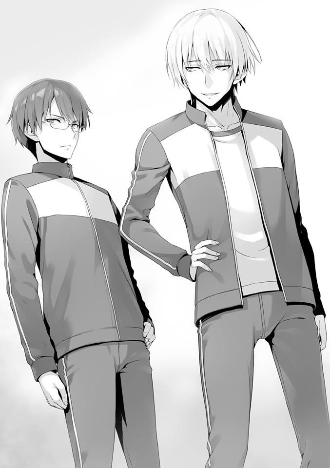
Matoba de la clase A, representando al primer año, respondió así.
— Ya veo. Entonces empecemos de inmediato.
Nagumo sonrió y se unió al grupo pequeño que seguramente formó él mismo.
Y luego, el segundo y tercer año se dividieron en seis grupos para facilitar su comprensión. Los líderes de cada uno de los cinco grupos del primer año se adelantaron para discutir.
Mirándolos, la expresión de Nagumo se volvió amable, casi como si mirase a un niño.
— Ahora todo lo que queda es ese grupo de allí.
Como nuestro grupo aún no ha elegido un líder, nadie tomó la iniciativa de ir a jugar piedra, papel y tijera. Empujé ligeramente la espalda de Keisei mientras me aseguraba de que no me notaran.
Por un momento, puso una cara de escepticismo pero Keisei levantó resignadamente su mano. Los seis representantes de los grupos pequeños se reunieron y formaron un círculo, y comenzaron a jugar piedra, papel y tijera.
Como resultado, Keisei se convirtió en el cuarto en la fila para seleccionar un grupo de estudiantes mayores. El primero en la fila es el grupo de la Clase A liderado por Matoba. El segundo es el grupo de la Clase C liderado por Hirata. El tercero es el grupo de la Clase D, liderado por Kaneda.
— Pueden discutir entre ustedes qué grupo quieren elegir.
Los grupos a los que hay que aspirar a la hora de elegir serían el Grupo Nagumo al que pertenece Nagumo, líder de la Clase A de segundo año y presidente del consejo estudiantil, o el grupo de tercer año centrado en el mayor de los Horikita.
Sin embargo, si eres alguien como Hirata, que conoce a mucha gente que no pertenece a su año escolar, es posible que seas capaz de discernir grupos capaces que no podrías discernir de otra manera a primera vista.
El grupo de Matoba, el primero de la fila, eligió el grupo de tercer año al que pertenece Horikita Manabu sin dudarlo.
Y una vez hecho esto, Hirata, segundo en la fila, observó cuidadosamente a los 11 grupos restantes uno por uno. Su elección no fue el otro grupo al que aspirarías, sino un grupo de tercer año con cuyos miembros no estoy familiarizado.
— Oye, Hirata. ¿Esto está bien de verdad? ¿No es mejor ese grupo del presidente del consejo estudiantil?
Es comprensible que Ike interrumpiera así.
— Sí. Creo que esto está bien. Las personas con talento tienen su atractivo, pero los problemas que traen consigo también serán proporcionalmente grandes. Además, los mayores del grupo que elegí tampoco están nada mal.
Con confianza contestó y asintió. Si esa es la decisión de Hirata, entonces Ike no fue más lejos.
Este es el nivel de confianza que ha acumulado hasta ahora. Luego viene el grupo de clase D.
Kaneda consultó a sus compañeros de clase, o más bien, les informó del grupo que quería elegir. No pareció haber ninguna objeción ya que inmediatamente escogió.
— Me gustaría el grupo de Gouda-senpai de segundo año.
Una vez más, el grupo de Nagumo no fue elegido y otro grupo terminó siendo seleccionado.
— Me pregunto por qué están evitando a Nagumo.
Murmuré esa sencilla pregunta y a mi lado, Akito contestó.
— Eso es porque aparte de Nagumo-senpai, los otros miembros son de una naturaleza cuestionable.
— ¿Ah, sí?
— Bueno, no es que todos sean cuestionables, pero hay muchos de la Clase C y la Clase D allí. El grupo con mucha gente de segundo año de la clase A es el que eligió Kaneda.
En otras palabras, no es como si Kaneda hubiera evitado Nagumo sin ninguna razón. Por el contrario, esto significa que escogió aliados fuertes y confiables.
Pero lo que es curioso es por qué Nagumo no formó un grupo mayoritario de la Clase A. Por supuesto, sé que Nagumo controla la totalidad del segundo año, pero aún así, reunir a su clase en un grupo debería ser mucho más seguro para este examen.
Y luego Keisei, cuarto en la fila, tiene su turno.
— ¿Están de acuerdo en que elija?
Keisei le hace al grupo una simple pregunta.
— Realmente no me importa. No hay forma de saberlo.
Ishizaki y la Clase D por extensión, parecen estar de acuerdo en dejar que Keisei se encargue de ello. La Clase A tampoco tenía ninguna opinión en particular. La clase B, aún sin expresar su opinión, decidió después de pensarlo.
— Por favor, elige el grupo de Nagumo-senpai.
Sus miembros parecen ser principalmente de la clase C y de la clase D, pero su alta evaluación seguramente proviene del propio presidente del consejo estudiantil, que forma parte del mismo.
Habiendo recibido su opinión, Keisei eligió al grupo del que Nagumo estaba a cargo.
Después, la discusión continuó y la segunda ronda de selecciones terminó.
Finalmente, se formaron con éxito seis grandes grupos.
— Horikita-senpai, casualmente estamos en grandes grupos diferentes.
¿Hacemos una pequeña competencia?
Horikita miró fijamente a Nagumo, quien se lo propuso. Por otro lado, pude escuchar suspiros exasperados que venían de los de tercer año que lo rodeaban.
Antes del examen especial, Fujimaki de tercer año se adelantó para quejarse. Lo identifiqué en el festival deportivo hace un tiempo como un estudiante muy elocuente.
— Nagumo. ¿Cuántas veces han sido ya? Ya basta.
— ¿Qué quieres decir con cuántas veces, Fujimaki-senpai?
— Has estado desafiando a Horikita así, pero hasta ahora nunca has hecho nada. Pero esta vez, es un examen especial a gran escala que también incluye al primer año. No podemos darnos el lujo de dejar que actúes como si este fuera tu patio de juegos personal.
— ¿Por qué es eso? No hay algo así como un estudiante de primer o tercer año en esta escuela, no es realmente extraño no importa quién desafíe a quién. Tampoco se considera tabú en el libro de reglas del examen especial.
En vez de acobardarse ante Fujimaki, que tiene un gran físico, Nagumo continuó provocándo.
— Estamos hablando de modales básicos. Aunque no esté expresamente escrito, hay cosas que debes y no debes hacer. Eso es obvio.
— Sin embargo, no creo que éste sea el caso. Por el contrario, ustedes, los estudiantes de último año que parecen desear sólo peleas internas dentro del mismo año escolar, son los que obstaculizan el crecimiento de los estudiantes matriculados aquí, ¿no es así?
— Puede que te hayas convertido en el presidente del consejo estudiantil, pero eso no significa que hayas obtenido permiso para hacer lo que quieras. Debes ser consciente de que eres tú el que está abusando de su autoridad.
— Si eso es lo que piensas, entonces lo tendré en cuenta. En ese caso, ¿por qué no eres tú también mi oponente, Fujimaki-senpai? Para que conste, eres el número dos en la clase A de tercer año.
Asumiendo
descaradamente
una
actitud
despreocupada,
Nagumo
arrogantemente se metió las manos en los bolsillos. Fue una provocación barata, pero algunos estudiantes de tercer año parecen sentirse humillados por ella.
Algunos intentaron dar un paso adelante.
Sin embargo, Horikita los mantuvo bajo control.
— He rechazado tus demandas hasta ahora. ¿Sabes por qué?
— Veamos. ¿No es porque tus amigos tienen miedo de que pierdas contra mí?
Pero por supuesto, eso no puede ser posible. De toda la gente que he visto hasta ahora, Horikita-senpai, eres el mejor. No tienes miedo de perder y ni una sola vez pensaste que perderías.
El segundo año escuchando las palabras de Nagumo casi parecía como si le estuvieran adorando.
Amigo, benefactor, no se limita a eso. Es un rival y un enemigo odiado, pero al mismo tiempo, también respetado. De todos modos, una variedad de emociones parecen estar dirigidas a Nagumo.
En los 2 años que ha estado en esta escuela, este hombre ha logrado cosas que ninguna persona común hubiera sido capaz de lograr y es probablemente por eso.
Hasta qué punto, ni siquiera los de tercer año lo saben. Los de primer año tienen aún menos idea de eso.
— Soy como tú, Fujimaki-senpai. Yo tampoco deseo conflictos sin sentido.
— El conflicto que deseas involucra demasiado a otros.
— Ese es el modus operandi de esta escuela y creo que esa es la verdadera emoción... bueno, esa es la diferencia entre nuestras opiniones. Quiero decir, pensé que podría tener una competencia asegurada contigo, senpai, durante el relevo del festival deportivo, pero lamentablemente no pude realizarla. Todavía estoy frustrado por eso, ¿sabes?
— No creo que este sea un examen en el que una competición entre un estudiante de segundo y tercer año dé resultados.
— Probablemente sea cierto. Senpai es esa clase de persona. Pero en cuanto a mí, sólo quiero una batalla personal entre el ex presidente del consejo estudiantil y el actual presidente del consejo estudiantil. Estás a punto de graduarte y de irte pronto. Antes de eso, quiero ver si te he superado o no.
La demanda de Nagumo es imparable, su ansia insaciable.
— ¿En qué pretendes competir?
Por un momento, los de tercer año parecen sorprendidos. Es porque el mayor de los Horikita parece que aceptará el reto de Nagumo.
— ¿Quién de nosotros puede expulsar a más estudiantes? ¿Cómo suena eso?
Tanto el primer año como el tercer año se agitaron en respuesta a esa única afirmación de Nagumo.
— Deja de bromear.
— Realmente creo que sería interesante, pero esta vez me abstendré. Si quieres que te haga una propuesta seria, entonces será qué grupo obtiene la puntuación promedio más alta. Simple y fácil de entender.
— Ya veo. Si ese es el caso, no me importa aceptar.
— Gracias. Sabía que aceptarías, senpai.
— Sin embargo, esta es una pelea personal entre tú y yo. No involucres a los demás.
— No involucres a los demás, ¿eh? Pero a juzgar por la forma en que se realiza el examen especial, yo diría que incitar a alguien a sabotear el grupo de tu enemigo es una estrategia.
— Eso está lejos de la esencia de este examen. A lo sumo, sólo deberías cuestionar la unión de tu propio grupo. No deberías aprovechar la apertura de tu grupo enemigo para sacudirlos, incluso por error —dijo Keisei.
— ......¿Es decir?
Ishizaki terminó preguntándoselo a Keisei.
— Significa que no se reconocerá nada más que una competencia meritocrática equitativa y justa. Si tengo que decirlo simplemente, significa que no puedes usar estrategias sucias como lo hace Ryuuen.
— ...Ya veo.
Dejando de lado la conversación entre esos dos, el mayor de los Horikita y Nagumo continuaron su conversación.
— Si no cumples las condiciones que he establecido, entonces no tengo intención de aceptar.
Lo que el mayor de los Horikita rechazó fueron las acciones emprendidas para atrapar al enemigo.
Con toda probabilidad, su objetivo aquí es bloquear la fortaleza de Nagumo.
— Lo que esto significa es que para ganar, no puedo atacar a los peones de Horikita-senpai. Estoy bien con eso.
Esperaba que se preocupase por ello, pero Nagumo sorpresivamente accedió.
Sin embargo, el mayor de los Horikita continuó.
— Eso no se limita a este grupo solamente. No reconoceré ningún método que cause daño a los otros estudiantes. En el momento en que confirme que te has entrometido de alguna manera, cancelaré nuestra competencia.
— Como se esperaba de ti, senpai. No se te escapa nada. Consideré solicitar la ayuda de otros grupos que no sean los de Horikita-senpai y hacer que atacaran a los tuyos...
Lo dijo mientras se reía audazmente.
— Entiendo. Parece que soy el único que anhela esta competencia, así que estoy dispuesto a complacer una cierta cantidad de condiciones. A ver cuál de los dos puede obtener más puntos a través de la unión del grupo. Que esa sea nuestra competencia. Lo diré de antemano, pero no hay necesidad de poner sanciones en caso de victoria o derrota, ¿verdad? A lo sumo, que esto sea una lucha con sólo nuestro orgullo en juego.
Al respecto, el mayor de los Horikita no ofreció ni afirmación ni refutación. Con toda probabilidad, eso significa que ni siquiera tiene la intención de apostar su orgullo en esto.
PARTE 4
Esa larga representación de apertura terminó y nuestro grupo fue llamado a un descanso por Nagumo.
— Nuestros mayores se han ido, ¿pero les importaría darnos un poco de tiempo? Porque ustedes parecen no haber elegido a su líder.
Mientras Nagumo señalaba eso, Keisei entró en ligero pánico.
— Ehh, ¿cómo lo sabes?
— Cuando les dije a todos que jugaran piedra, papel y tijera, estaba dolorosamente claro lo incómodas que eran sus acciones. Si se hubiera elegido a un líder en la formación de un grupo, entonces debería haber dado un paso al frente de inmediato. Por cierto, en aquel entonces otro grupo también tuvo una reacción tardía. Si tengo que añadir a eso, diría que los grupos que no eligieron a sus líderes son los grupos equilibrados compuestos de 3-4 clases.
Nagumo probablemente no conoce a todos y cada uno de los del primer año, pero aun así dedujo cómo se dividieron nuestros grupos.
No es una deducción tan difícil de hacer, pero aun así, no es algo que cualquiera pueda decir.
El retraso fue muy pequeño. De hecho, inmediatamente empujé a Keisei por la espalda y le pedí que jugara piedra, papel y tijera. Si hubiéramos tenido discusiones allí, entonces nuestra falta de un líder habría sido revelada.
Lo hice porque sentía que no era necesario que nosotros mismos reveláramos esa debilidad. Sin embargo, mi intento parece haber sido en vano.
— Aunque creo que está bien elegir a un líder después.
— Así es. Pero nos gustaría tener una buena idea de quiénes son los líderes del primer año. Además, quería enseñarles que un líder es un papel que debe ser asumido lo más rápido posible. Cuanto más tarde se asuma ese papel, más tiempo tardará el líder en ser consciente de su posición y la ansiedad de la misma pesará aún más sobre él.
Es cuestionable cuánto de eso es pertinente, pero no hay duda de que Nagumo quiere que elijamos a nuestro líder aquí mismo.
— ... Entonces, ¿qué hacemos?
Keisei le pregunta a nuestro grupo, lo que, excluyéndome a mí, no le resulta muy familiar. El propio Keisei probablemente tampoco quiera desempeñar este papel.
— No importa cómo elijan. Por favor, elijan un líder ahora mismo.
Como es el presidente del consejo estudiantil quien nos da las instrucciones, ni siquiera los delincuentes como Ishizaki y Albert pudieron oponerse.
— Nadie se va a ofrecer voluntario para esto. ¿No deberíamos ir con piedra, papel y tijeras para esto también?
Ishizaki lo dice para acabar con esto y extiende el puño. Le seguí el juego e hice lo mismo.
Nueve personas y nueve puños formaron un círculo.
Una persona falta. Hay un estudiante que no extendió su mano para jugar piedra, papel y tijera.
— Oye, Kouenji.
Keisei llama a Kouenji, que está mirando por la ventana un poco más lejos. Sin embargo, Kouenji ni siquiera nos miró.
— Oye tú, rubiecito. Muévete, muévete.
Una voz enojada vino de entre los de segundo año. Kouenji finalmente se dio cuenta de que estaba siendo llamado y dio la vuelta.
— Fufufufu. Te refieres a la llamativa belleza de mi cabello, ¿no?
— ¿Qué?
No dijo nada sobre piedra, papel y tijera, sino que sólo dio una respuesta sobre su cabello.
— Ponte serio, Kouenji.
— ¿Qué quieres decir con serio? ¿Jugar piedra, papel y tijera es algo serio?
— Oye, primer año.... Kouenji, ¿verdad? ¿Te estás burlando de nosotros, los estudiantes mayores?
Por supuesto que terminaría llamando la atención. Eso es algo que esperaba desde el principio.
— ¿Burlándome de ustedes? No, no me estoy burlando de nada. Desde el principio, no tuve ningún interés en ustedes. Puedes relajarte.
Probablemente quería decir que no se está burlando de nadie, pero terminó fracasando por completo.
— No voy a jugar piedra, papel, y tijera. Porque no tengo ningún interés en ser el líder.
— A mí tampoco me interesa y a nadie más. Pero no hay otra manera,
¿verdad?
Keisei exasperadamente intenta persuadirle, pero Kouenji no mostró signos de ceder.
— Dices cosas extrañas, Boy. Si no hay interés, entonces no hay razón para participar, ¿no es así?
— No. Así es como funciona la regla.
— La regla es que alguien del grupo debe convertirse en el líder. En ese caso, sólo hace falta que alguien más sea el líder.
— Deja de bromear. No puedes actuar así de egoísta.
Ishizaki, que una vez tuvo una pelea con Kouenji junto con Ryuuen, se le echó encima.
— Fufufufu. Entonces, ¿por qué no me haces líder de tu grupo?
Kouenji lo dijo y sacudió su flequillo. Ante esa inesperada propuesta, Ishizaki se quedó inmóvil.
— Entonces, tú serás el líder. No te importa, ¿verdad?
— Eres libre de imponerme ese papel. No tengo intención de oponerme a ello todas y cada una de las veces. Si no tenemos uno, el grupo será castigado,
¿verdad? Si tienes tanto miedo de eso, eres bienvenido a hacerlo.
Pero las siguientes palabras de Kouenji conmocionaron a todos los presentes.
— Haré lo que sea que decida hacer. Sin embargo, si decido no hacer algo, no hay manera de que lo haga. En otras palabras, significa que no importa quién venga a hablar conmigo, mi determinación no vacilará. Por supuesto,
tampoco llevaré a cabo las tareas de un líder. Incluso podría boicotear este examen. Aunque eso resulte en que nuestra puntuación media caiga por debajo del límite, aunque eso signifique hundir a alguien. ¿De acuerdo?
— .... Eso es..... Si haces algo así, ¡te expulsarán!
— Fu. Fu. Fu. Sí, ese sería el caso.
Parecía casi como si no tuviera miedo de ser expulsado.
— Sin embargo, este tipo de tema normalmente se consideraría una pregunta tonta. Incluso si obtengo una puntuación de cero durante todo el examen, mientras ustedes luchen duro, no hay riesgo de caer por debajo de la línea límite. Sólo tienes que seguir adelante y hacerlo sin reprimirte.
Dijo Kouenji mientras deslizaba su pelo hacia atrás.
Pero no hay garantía de que no caigamos por debajo de la línea límite y sus palabras no tienen ninguna base en la que apoyarse. Es sólo la predicción de Kouenji de que este no va a ser un examen tan difícil.
O quizás está diciendo tonterías al azar porque no quiere participar. Sin embargo, lo más probable es que la posición de Kouenji haya sido suficientemente expresada.
— Qué tipo. Debe tener un tornillo suelto ahí arriba.
Murmuró Ishizaki mientras daba un paso atrás y asentía.
Sin embargo, descubrí una contradicción en las palabras de Kouenji. Pero, por supuesto, Ishizaki y los demás aquí definitivamente no serían capaces de detectar esa contradicción.
¿Por qué? Porque no hay falsedad en su comportamiento en sí mismo. Si Kouenji intencionalmente creó esta contradicción entonces.......
Confirmar eso requeriría tomar el enorme riesgo de esperar a que llegue el día del examen.
— Vamos a calmarnos, de todas formas, probablemente no tenga las pelotas para sacar cero.
Si es posible, es muy probable que quisieran imponer por la fuerza el molesto y arriesgado papel de líder a Kouenji.
Por supuesto, mirándolo desde la perspectiva de otra clase, significaría perder la oportunidad de ganar el doble de puntos, así como enfrentarse a la posibilidad de ser hundidos y, por lo tanto, es probable que tengan sentimientos encontrados al respecto......
Pero si Kouenji realmente saca cero, sólo le espera un resultado desastroso.
— Basta, Ishizaki. Si sigues así, serás tú el que caiga.
Hashimoto, en un intento de salvar a un enemigo, detuvo a Ishizaki.
— Pero.... mierda, si se le permite salirse con la suya tomando una línea dura, entonces definitivamente yo tampoco lo haré.
— Bueno, supongo que sí.
A pesar de su exasperación, Hashimoto asintió aceptándolo.
Nadie cree que este grupo vaya a ocupar el primer lugar. Por eso, básicamente, no hay ni un solo estudiante dispuesto a asumir el papel de líder.
Puede ser que nuestro grupo se encuentre en una situación mucho más difícil de lo que esperaba. Si Kouenji se comporta como Kouenji hasta el final, perderemos una cantidad considerable de puntos.
El escenario en el que no conseguimos ni siquiera la “puntuación más baja” es probablemente uno de los que los de segundo y tercer año no han tenido en cuenta en sus cálculos.
Pero entonces surgió alguien en respuesta al extraño comportamiento de Kouenji.
— He escuchado rumores sobre ti, Kouenji.
Una persona inesperada....... Nagumo, que no parece del tipo que ha tenido mucho contacto con Kouenji, se le acercó como si hubiera encontrado algo de gran interés para él.
Los dos que nunca se encontrarían bajo circunstancias normales.
— Yo también te conozco. Eres la persona que asumió el papel del nuevo presidente del consejo estudiantil, ¿no?
Kouenji no muestra ningún temor ni siquiera hacia el presidente del consejo estudiantil, y responde de la manera habitual.
— Eres libre de actuar como un tonto todo lo que quieras, ¿pero no te importa que te expulsen?
Ante Kouenji, que no mostraba ninguna debilidad, Nagumo hizo esa pregunta. Y
continuó.
— Este sistema escolar es problemático. A pesar de eso, has llegado hasta aquí con tu actitud de no comprometerte. Eso es para poder graduarte de esta escuela. Pero, casualmente, aceptarás el riesgo de que el papel de líder te sea impuesto aquí, y además de eso, ¿incluso boicotearás el examen? Mentiroso. Simplemente no quieres esforzarte por llegar a la clase A y realmente no tienes ninguna intención de dejar esta escuela.
— Fufufufu. Estás diciendo cosas divertidas. ¿Cómo puedes saber que estoy mintiendo?
Probablemente sea verdad. Poco después de inscribirse, la clase le preguntó una vez a Kouenji si tenía o no deseos de aspirar a la Clase A y ya nos ha dado su respuesta antes.
Que no tiene ningún interés en hacerlo.
Que sólo quiere graduarse de esta escuela. No quiere ser expulsado, pero tampoco tiene por qué aspirar a la cima.
Es muy similar a lo que espero obtener de esta escuela. En otras palabras, está adoptando una postura en la que no es un problema para él, incluso si se reprime un poco en los exámenes.
Eso explica su seguridad descarada.
— Eso es lo que está escrito en tu cara.
Mientras Nagumo decía eso burlonamente, Kouenji se rió agradablemente.
— Bravo. Bravo.
Clap. Clap. Aplaudió. Y luego dio una respuesta honesta al justo razonamiento de Nagumo.
— Mentí porque no quería ser el líder. Permíteme corregirme. No tengo intención de aspirar a la Clase A, pero tampoco tengo intención de ser expulsado. En pocas palabras, creo que un enfoque sin compromiso como éste es el mejor.
Kouenji contestó así, prácticamente haciendo una confesión. Además, todo el mundo parece haber aceptado eso, pero Nagumo no lo hizo.
— No tienes interés en la clase A, ¿eh? Eso también es mentira, ¿verdad?
— Oh Dios, oh Dios. ¿Ya me están tildando de mentiroso?
— Si eso no es mentira, entonces daría lugar a una ligera ambigüedad, Kouenji. ¿No tienes ya en tus manos una manera segura de graduarte de la clase A?
De repente, Nagumo dijo algo increíble. Los de primer año como yo e Ishizaki no son los únicos sorprendidos, sino que los de segundo y tercer año también se sorprendieron.
— Seguro que dices las cosas más interesantes. Si no te importa, dime la lógica detrás de eso.
— ¿Estás seguro? Si explico la lógica detrás de esto aquí, ese “camino seguro” tuyo se volverá algo inservible. No, lo haré inservible, ¿sabes?
— Fufufufu. No me importa. Sólo quiero saber si realmente puedes comprenderme o no.
En vez de asustarse por el interrogatorio de Nagumo, Kouenji se rió alegremente.
— Ascender a la Clase A mediante el uso de 20 millones de puntos. Es una estrategia que todo el mundo ha pensado e intentado llevar a cabo al menos una vez. En la práctica, sin embargo, no es tan fácil ahorrar tantos puntos. Sin embargo, no es del todo imposible. Inmediatamente después de inscribirte, lo primero que hiciste fue averiguar cómo se manejan los puntos que los graduados de tercer año dejan atrás.
— Continúa.
— Después de la graduación, tus puntos privados son cobrados para que puedas usarlos también fuera de la escuela. Su valor disminuirá, por supuesto, en comparación con cuando todavía eran puntos, pero eso no cambia el hecho de que se trata de un sistema sin precedentes. Tenías la intención de comprarles esos puntos privados a un precio más alto que el que obtendrían con el pago, ¿verdad?
Escuchando la explicación de Nagumo, el resto de ellos estaban comprensiblemente conmocionados y no podían ocultar su sorpresa.
Y Kouenji, a quien se lo habían indicado, asintió con satisfacción y luego abrió la boca.
También Kouenji, contestó con precisión.
— Eso es totalmente cierto. Poco después de inscribirme, concluí que era así y llegué a la verdad. Que no importa lo bajo que caiga durante el tiempo que esté inscrito aquí, siempre y cuando adquiera legalmente esos puntos privados al final, podré graduarme de la Clase A en un abrir y cerrar de ojos. Y como se me ocurrió esta hazaña con demasiada facilidad, la escuela se convirtió de repente en un aburrimiento para mí.
Una estrategia milagrosa que es capaz de llevar a cabo precisamente porque es rico, eso es lo que es.
Comprar puntos privados a un precio elevado a estudiantes que ya han renunciado a aspirar a la clase A, a estudiantes cuyo éxito ya está garantizado o a estudiantes cuya graduación se acerca rápidamente.
Si hay una garantía de que sus puntos serán comprados después de la graduación, no sería extraño, si muchos estudiantes están dispuestos a hacer la transferencia.
Sin embargo, esto es extremadamente difícil en circunstancias normales. Si los compras al mismo valor que después de ser cobrados, serían 20 millones de yenes.
A menos que esté dentro de los medios de un estudiante de preparatoria preparar dicha suma, no sería un asunto digno de confianza aunque digan que van a pagar por ello.
— Afortunadamente para mí, antes de inscribirme en esta escuela, establecí un perfil en la página de inicio de mi compañía con mi foto en ella como el siguiente en la línea para ser el CEO. Significa que poseo el poder de mover fácilmente decenas de millones. Fue muy fácil conseguir que confiaran en mí.
— Sí. De hecho, hay muchos estudiantes de segundo año que planean venderte sus puntos. Hay probablemente también muchos de ellos en el tercer año. Parece que les has sellado los labios, pero hay muchos estudiantes de segundo que han depositado su confianza absoluta en mí.
También me consultaron sobre si debían o no caer en tu seducción. Por supuesto, lo aprobé como un plan. No es que no tenga sus riesgos, pero pareces ser un tipo bastante rico. Pero eso termina hoy.
Nagumo dijo eso y miró hacia el segundo y tercer año.
— Aunque en realidad seas tan rico, Kouenji no eres un hombre de confianza, como puedes ver. Si es necesario, estás más que dispuesto a mentir. Es mejor no hacer ninguna transacción con él con respecto a los puntos, incluso por error.
Dijo eso y añadió una cosa más.
— Por si acaso, informaré de esto a la escuela. Porque la compra de puntos privados antes de la graduación no es algo que debería estar permitido.
— No me importa. Sólo había estado haciendo preparativos para ascender a la Clase A. Todavía no he decidido si lo llevaré a cabo o no.
En el mejor de los casos, Kouenji sólo lo había considerado como una de las muchas estrategias. De todos modos, qué historia tan absurda.
Bueno, en realidad, a menos que se pueda preparar una gran suma de 20
millones, esta es una estrategia exclusiva para Kouenji.
— ... Siempre pensé que eras extraño, pero tu estrategia depende del exterior,
¿eh? Bravo.
Murmuró Hashimoto como si estuviese admirado y exasperado.
— Al tirar esa estrategia por la ventana, ¿qué planea hacer Kouenji?
Muchos ojos se fijaron en los compañeros de clase de Kouenji, Keisei y yo, pero no hay forma de que lo sepamos. No, para ser más precisos, sólo hay una cosa que me viene a la mente.
Eso es que no hay razón para que Kouenji necesite graduarse de la clase A.
Mirándolo desde la perspectiva de Kouenji, ya que sólo quiere “graduarse de esta escuela”, cooperar con sus aliados debe ser un esfuerzo inútil para él.
Aunque haya encontrado algún truco, no hay necesidad de obligarse a usarlo.
Por eso no le importaba que se revelara. O tal vez ha encontrado placer en encontrar algún otro truco.
La perspicacia e información de Nagumo sobre Kouenji es considerable.
— Es la primera vez que veo a Kouenji tener que explicar algo.
También estuve de acuerdo con esos murmullos que vinieron de Keisei. Sin embargo..........
— Pero ahora ya no hay razón para que juegue piedra, papel y tijera. Además de haber confesado todo, permítanme decir que no tengo intención de aceptar el papel de líder.
— ...Ya veo.
Es verdad, Kouenji puede que tuviera una forma de recaudar dinero. Pero no hay ningún cambio en su postura. Al contrario, reveló su única ventaja y la tiró él mismo.
Se podría decir que ahora no hay forma de obligar a Kouenji a asumir el papel de líder. Kouenji es extremadamente rico y aunque sea expulsado, no es como si sus perspectivas de futuro se desvanecieran.
Apenas puedo imaginar a una persona así con miedo a la expulsión. Por supuesto, podríamos tomar medidas drásticas y obligar a Kouenji a asumir el papel de líder, pero dudo que haya estudiantes en nuestro grupo que tengan la valentía de hacerlo.
Porque estarán condenados si son hundidos por Kouenji.
— Saben, podría ser lo mejor si tomo ese papel....
Resignado, Keisei levantó la mano.
A partir de ahí, los estudiantes de las otras clases reaccionaron, pero hay estudiantes en nuestro grupo con los que será difícil tratar, como Kouenji, Ishizaki y Albert.
Y también, las perspectivas de que ganemos contra los otros grupos son bajas.
Por lo tanto, no hay ningún otro estudiante que se ofrezca como si esto fuera una subasta.
— Entonces está decidido.
Nagumo supervisó la elección de nuestro líder y luego despidió al grupo.
Después de eso, de acuerdo con las instrucciones que recibimos de la escuela, salimos del gimnasio.
PARTE 5
— Esto.... se siente mucho más viejo de lo que pensé que sería.
Los grupos pequeños fueron llevados a sus habitaciones. Dentro de cada habitación, hay literas de madera que pueden aumentar o disminuir en número dependiendo de cuántas personas tengamos.
Ishizaki se acercó inmediatamente a la litera del final de la habitación y usó la escalera para subir a la cama de arriba.
— Esta es mía.
— ¿De qué estás hablando? Lo estás acaparando todo para ti, eso es injusto.
Yahiko lo dijo con enfado en respuesta a que Ishizaki la reclamara.
— A quien madruga, Dios le ayuda.
Ishizaki se echó sobre ella mientras reía y miraba a Yahiko.
— Debemos decidir quién se queda con qué después de discutirlo primero.
El líder, Keisei, también advierte que las acciones egoístas no serán toleradas.
Y al igual que hizo con Yahiko, Ishizaki seguramente pretendía ignorarle, pero como estaba junto a Keisei, nuestros ojos se encontraron durante un breve instante.
Había estado haciendo todo lo posible para evitar el contacto visual conmigo, pero como estamos en el mismo grupo, no hay forma de evitarlo para siempre.
— ........
Por un momento, Ishizaki pareció temeroso y aterrorizado. Se llenó de pánico y saltó de la cama.
— Al discutirlo... ¿cómo decidimos exactamente?
Keisei ladeó la cabeza, confundido ante el repentino cambio de opinión de Ishizaki. Puede que haya interpretado la advertencia de Keisei como una advertencia mía.
Si es así, es una cantidad insensata de paranoia.
Porque realmente no creo que sea tan extraño que decidamos nuestras camas por orden de llegada.
Por supuesto, lo mejor sería que pudiéramos decidirlo sin problemas después de celebrar un debate.
— Fufufufu. Si no la necesitas, ¿te la quito?
Kouenji lo dijo y luego saltó a la cama que Ishizaki había estado ocupando.
— Oye, ¿qué demonios estás haciendo?
Ishizaki recobró el sentido común y se lo dijo a Kouenji, que ahora se está relajando en la cama de arriba.
Pero el tipo con el que está hablando es Kouenji y el sentido común no funciona con él. Ni siquiera escuchó y en unos segundos, ya se está poniendo cómodo como si fuera su propia habitación.
— Al carajo con la discusión.
Empezando por Kouenji, algunos de los estudiantes reclamaron sus camas.
Ishizaki también dejó de pelearse con Kouenji y en su lugar reclamó la cama de arriba en una litera diferente.
La única cosa que todos los estudiantes tenían en común es que todos preferían la cama de arriba. Sólo Albert, cuyo gran físico le dificulta subir a la cama de arriba, se sentó en la cama de abajo, debajo de Ishizaki, sin quejarse.
La atmósfera ya ha cambiado a una en la que no hay necesidad de decidir a través de la discusión.
— No tengo más remedio que ir allí entonces.
Lo dijo Keisei mientras reclamaba la cama bajo Kouenji que nadie más quería tomar.
Los otros se tomaron su tiempo para darse cuenta, pero es realmente genial tener un camarada dispuesto a hacer cosas que nadie más quiere hacer.
Por cierto, yo también me quedé en la litera de abajo. Encima de mí está Hashimoto, de la Clase A.
— Es un placer, umm...
Se acercó desde la litera de arriba para saludarme, pero no parece saber mi nombre.
— Soy Ayanokouji. Un placer.
— Soy Hashimoto.
Nos dimos la mano suavemente como si prometiéramos ser muy buenos amigos.
En cuanto a hoy, somos libres a partir de ahora. Por lo tanto, no actuamos como grupo, sino que elegimos hacer lo nuestro.
Si contáramos con un líder como Hirata, puede que nos hubiéramos esforzado por conocernos mejor, pero... en cuanto a mí, tengo sentimientos encontrados sobre el asunto. Es lamentable que no tenga la oportunidad de conocer mejor a los estudiantes de otras clases, pero al mismo tiempo, me siento aliviado de que no habrá ningún problema.
— Oye, esta puede ser una pregunta directa, pero ¿crees que Albert puede hablar japonés? Entiende japonés, ¿verdad?
Hashimoto, desde la cama de arriba, me hizo esa pregunta sobre Ishizaki y el propio Albert.
— Obviamente. ¿Verdad, Albert?
Ishizaki se asomó de la litera de arriba y miró a Albert en respuesta a Hashimoto.
Sin embargo, Albert no respondió y sólo siguió mirando fijamente hacia adelante.
— ... ¿Podría ser que no te entienda?
— ¿No son compañeros de clase?
Hashimoto lo dijo riendo e Ishizaki añadió esto con frustración.
— No se puede evitar, ¿verdad? Después de todo Ryuuen-san es el que normalmente le da órdenes.
— Ryuuen-san, ¿eh?
Ishizaki terminó casualmente con el sufijo “-san” de su nombre. Sin embargo, a partir de ahora, eso llevaría a una extraña contradicción.
— El rumor de que tuviste una pelea con él y lo derrocaste de su posición de líder, ¿es cierto?
— Cállate. Por supuesto que es verdad. Ahora mismo.... fue un viejo hábito.
Lejos de trabajar en la unión del grupo, parece que ya hemos empezado a sondearnos unos a otros. El rumor de que Ryuuen se ha retirado es uno cuyo autenticidad todos dudan.
Dando una mirada a este conflicto que se está gestando rápidamente, decidí dar un paseo por el interior del edificio.
PARTE 6
Ha llegado la hora de la comida del primer día, es decir, la primera oportunidad de hacer contacto con las chicas desde que se bajaron del autobús por la mañana.
La espaciosa cafetería tiene la apariencia de que puede albergar a mucha gente en ella y si subes las escaleras, tienes una buena vista del primer piso.
De una inspección superficial, parece que caben unas 500 personas y también hay un número considerable de estudiantes que la ocupan.
— No es fácil encontrarse con alguien ahora que no tenemos nuestros teléfonos.
Horikita y Kei probablemente me estén buscando, pero yo no hice nada.
En este caso, aunque esas dos me encuentren, sus reacciones serán polos opuestos.
Horikita me llamará sin reservas pero Kei esperará y observará. Porque entenderá que no la estoy buscando, es decir, que no hay necesidad de hacer contacto entre nosotros en este momento.
Desde el primer día, el contacto con varios estudiantes es algo que se puede esperar. No creo que me tengan como a un objetivo en particular, pero hay muchas posibilidades de que atraiga la atención de Sakayanagi y del estudiante llamado Nagumo.
Hirata y Satou nos habían estado acompañando en ese momento, pero Nagumo nos vio a Kei y a mi juntos.
Por eso, me gustaría evitar hacer contacto torpemente. Iré solo y observaré, hasta cierto punto, quién está haciendo contacto con quién.
Sin embargo, la comida es lo primero. La única hora que se nos ha asignado es un tiempo valioso. Sosteniendo una bandeja en mis manos, me senté solo.
Si este fuera un día escolar normal, los diferentes años escolares se habrían dividido en diferentes áreas hasta cierto punto, pero esta vez, ya que estamos divididos en grupos, los estudiantes de todos los años escolares se mezclan y comen juntos.
La mayoría se reúnen en grupos, pero también hay bastantes estudiantes que se desplazan para recoger información.
También hay muchos que lo están haciendo porque este es el único lugar donde también se puede hacer contacto con las chicas.
También hay parejas que están pasando tiempo juntos porque dicho tiempo está limitado a este período también.
— Haaaafuuuuuuuuuuuuuu.
Escuché una linda voz cerca que sonaba exhausta.
Es la líder de la clase B de primer año, Ichinose Honami. Había muchos chicos y chicas a su alrededor.
Me senté en una silla vacía cercana y decidí escuchar a escondidas. Ahora mismo, estoy seguro de que mi entorno no se dará cuenta de mí, más o menos.
— ... Es patético que esté orgulloso de no tener mucha presencia.
De todos modos, Ichinose y los otros no reaccionaron en absoluto, aunque estoy sentado no muy lejos. Bueno, hay unos 500 estudiantes en la cafetería, así que probablemente no se esfuercen por identificar a todos y cada uno de los alumnos que están cerca de ellos.
— Buen trabajo, Honami-chan. ¿Fue difícil?
— Nyahaha. Si me preguntas si fue difícil o no, entonces diría que fue difícil.
Pensé que podríamos decidir sobre nuestros grupos más fácilmente. Pero cuando hay que pelear, hay que pelear, supongo.
— No se puede evitar. Después de todo, las otras clases son enemigas.
— Pero según lo que Kanzaki-kun dijo antes, fue bastante bien para los chicos.
— ¿Ehh~? ¿De verdad~? Pero nos llevó más allá del mediodía.
No es como si hubiera ido bien para los chicos tampoco, pero parece que las chicas habían discutido aún más. ¿Quizás los profesores no programaron ninguna clase hoy por esa misma razón?
— Oye, ¿crees que alguien será expulsado en este examen....?
— Definitivamente estará bien, es lo que me gustaría decir, hasta ahora no ha habido ni un solo expulsado entre el primer año. Aun así, no creo que debamos bajar la guardia.
Parece que es capaz de tomar este examen especial con una conciencia apropiada del peligro.
— ¿Qué deberíamos hacer si nos hunden....?
— Estará bien, Asako-chan. Mientras te esfuerces seriamente, no llegarás a eso.
— ¿Eso crees....?
— Además, si alguna vez llega a eso, podemos salvarte.
Ichinose dijo eso para consolar a la abatida Asako. De todos esos miembros, Ichinose parecía ser la más agotada, pero era la más resuelta de todos.
— Estoy exhausta.
Ichinose apoya la parte superior de su cuerpo sobre la mesa. Catastróficamente, eso terminó cuando ella se dio cuenta de que yo estaba sentado no muy lejos de ella.
— Ayanokouji-kuuuuun, yaho~.
¿Ichinose? No me di cuenta de que estabas allí. Responder así lo haría sentir poco natural.
Considerando que, a pesar de la distancia, podía oír su voz lo suficientemente bien, sería mejor que diera una respuesta honesta.
— Te estabas divirtiendo.
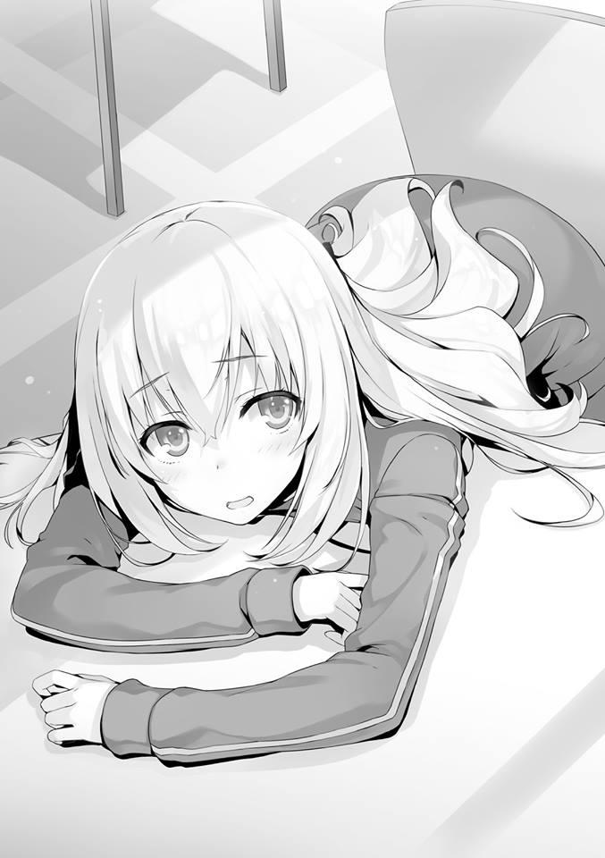
— Las charlas de las chicas pueden o no ser su fuente de poder.
Diciendo algo que realmente no entiendo, Ichinose una vez más se apoyó en la mesa. Como normalmente no muestra su lado indefenso, fue un espectáculo inesperado.
— Ahh, ¿no puedo hacer esto?
Lo dijo mientras intentaba enderezarse y la detuve.
— Es normal hacer algo así cuando estás cansado.
— Lo siento... Por hacerlo un poco incómodo.
No es nada incómodo. Lo dije internamente ya que no podía expresarlo con palabras.
— Se ha convertido en un grupo bastante difícil, ¿no?
— Fue difícil hasta que formamos el grupo actual, tal vez sea lo que yo debería decir. Las chicas saben muy bien lo que les gusta y lo que no les gusta, o más bien, hay más de unas cuantas chicas que están dispuestas a decir que no les gusta otra chica directamente en su cara. En ese sentido, cuando se trata de sentimientos personales, ¿no son muchos los chicos a los que les gusta enturbiar todo?
— Pero Ryuuen es abiertamente desagradable.
— Es malo reírse de eso, pero no se puede evitar, ¿verdad? ¿Pero no está Ryuuen-kun cansado también? Ser odiado por todos debe ser agotador.
Esa forma de verlo no está mal, pero probablemente no se aplica a Ryuuen.
Porque me pareció que es capaz de relajarse ahora que ya no tiene nada que cargar.
— No te entusiasmes demasiado.
Llegué a la conclusión de que no tiene sentido quedarse más de lo debido, así que me levanté de mi asiento.
— Está bien, está bien. Ser enérgica es lo único que tengo a mi favor. Hasta luego, Ayanokouji-kun.
Ichinose me hizo señas y me despidió. Una hora al día. Esa es la regla esta vez en lo que se refiere a las oportunidades de hacer contacto con las chicas.
Los chicos y las chicas no pueden inmiscuirse directamente unos con otros, pero imagino que esta hora está claramente destinada a permitirnos compartir información entre nosotros.
Con toda probabilidad, estamos destinados a reunir información aquí, dar instrucciones y pelear nuestra lucha.
Aquí es donde brillarán los estudiantes en los que se confía y que poseen una gran capacidad de comunicación.
— No soy apto para esto en absoluto.
Al igual que aquella vez en la isla deshabitada, básicamente no hay nada que pueda hacer aquí.
LA NATURALEZA HUMANA PUESTA A PRUEBA
Son poco más de las seis de la mañana. Una ligera melodía resonó por la habitación. Viene de los altavoces instalados en ella, así que ni siquiera hay que pensar en ello para saber que es la señal para que nos levantemos de la cama.
La habitación aún está oscura y no puedo ver la luz del sol entrando desde más allá de la delgada cortina.
— Qué demonios.... silencio.
Fueron las primeras palabras de la mañana de Ishizaki.
Hay estudiantes que no se despertaron ni siquiera después de escuchar ese tono, pero en algunos lugares empiezan a ponerse las gafas, a sentarse erguidos y a despertarse lentamente.
— Seguramente vamos a empezar con lo que sea que esté programado para este período hoy, ¿no?
Escuché a Hashimoto susurrar eso desde arriba de mi cama mientras suspiraba.
— Por ahora, todos deberíamos levantarnos. Si uno de nosotros llega tarde, puede que todos recibamos una sanción.
Keisei lo dijo mientras se ponía su camiseta.
Mientras vivamos en la misma habitación, la corresponsabilidad es algo que no podemos evitar.
— Oye, Kouenji no está aquí.
— Buenos días, caballeros. ¿Estaban a punto de salir a buscarme?
Con un poco de sudor en la frente, Kouenji apareció con una agradable sonrisa en la cara. Parece que se despertó antes que nosotros.
— ¿Al baño? No parece ser así.
— Fufu. Es un buen día y por eso he estado haciendo mi entrenamiento matutino.
— ¿Qué entrenamiento? No se sabe lo que nos espera hoy. No puedo aprobar que te canses inútilmente.
Incluso si Keisei le da una advertencia como esa, no es el tipo de hombre que le escucharía. Por el contrario, dio su réplica con una sonrisa.
— Esto no es nada. A pesar de una sesión de entrenamiento, tengo una resistencia incomparable. Además, si no puedes aprobar este consumo de energía, ¿no crees que debiste avisar al grupo ayer?
— Eso es......porque no esperaba que hubiera algún entrenamiento.
— No, no. Cuando se trata de ti, eso no funciona. Recuerdo que compartí habitación contigo en el crucero. Deberías tener al menos un ligero recuerdo del hecho de que soy el tipo de hombre que nunca se salta el entrenamiento, ¿no es así?
No es posible que olvides algo así. Como si dijera eso, Kouenji pronunció esas palabras.
— Deja de actuar tan arrogantemente todo el tiempo, Kouenji.
No es como si estuviera intentando proteger a Keisei o algo así, pero Ishizaki se paró frente a Kouenji. Desde la elección del líder de nuestro grupo hasta ahora, Kouenji ha estado actuando egoístamente. Es comprensible que el grupo se oponga firmemente a ello. Ya debe estar siendo tratado como un elemento negativo. No hay tiempo para eso.
Lo único que me gustaría evitar es llegar tarde el primer día. Habitualmente sería alguien como Hirata quien tomaría esa decisión y guiaría al grupo.
Sin embargo, viendo que nuestro grupo claramente carece de un líder, eso no sucedió.
— Prométeme aquí mismo que colaborarás.
— ¿Qué quieres decir con la promesa de colaborar? ¿Significa eso que sientes lealtad hacia este grupo improvisado? Difícilmente lo veo de esa manera.
— Yo tampoco quiero cooperar.
Ishizaki mira a su alrededor. La razón principal para eso soy yo y nadie más. Sin querer terminó mirándome fijamente.
— Por la clase A. ¿No te satisface esa razón?
Hashimoto, que bajó a mi lado, terminó recibiendo esa mirada.
— Tch. No es sólo la Clase A, son todos ellos.
Juntándonos a todos así, Ishizaki se volvió una vez más a enfrentar a Kouenji.
— Igual que Pelirrojo-kun, parece que vas por mal camino. Es una sensación agradable sólo mirarte, pero se está volviendo insoportable ahora que tengo que interactuar contigo directamente. En vez de preocuparte por mí,
¿no deberías ir al punto de reunión? Antes de que se revele tu incompetencia.
Kouenji puede ser el único que ha captado bien la situación, pero teniendo en cuenta la coyuntura, es como echar leña al fuego.
Al usar palabras provocadoras como esa, está claro que ha avivado la ira de Ishizaki.
— ¡Bien por mí, bastardo!
Gritó Ishizaki. Y entonces Keisei, que se dio cuenta de ello por los comentarios de Kouenji, miró el reloj y sintió pánico.
— No quedan ni cinco minutos para la asamblea. Por favor, deja la discusión para más tarde.
— No es mi problema. ¡Si llegamos tarde, es su culpa!
Parece que un poco de agua ya no será suficiente para apagar las llamas de la ira de Ishizaki.
Por el contrario, parece que está ganando fuerza. Keisei está vigilando la situación hasta cierto punto y también puede hacer comentarios al respecto.
Sin embargo, no está tomando ninguna medida que tenga en cuenta sus sentimientos.
— Eres una persona de mente simple. Es por eso que has caído a la clase D.
Comentarios que sólo están añadiendo combustible al fuego son lanzados esta vez por Yahiko. En cuanto al resto, los estudiantes de la clase B están manteniendo un perfil bajo y esperando a que toda esta situación se calme.
— Qué desafortunado. No sé si podremos lograrlo con este grupo o no.
A mi lado, Hashimoto suspiró y lamentó la situación.
— Bueno, supongo que no se puede evitar.
Lo dijo Hashimoto. Pensé que seguiría haciendo el papel de observador, pero golpeó la cama de madera con el puño cerrado. Todos los demás estudiantes, excepto Kouenji, reaccionaron a ese sonido.
— Vamos a calmarnos. No voy a decir que es algo malo discutir y pelear, pero este no es el lugar ni el momento para ello, ¿verdad? Por supuesto, si los muebles que estamos usando se dañan, también se convertirá en una cuestión de responsabilidad. Si nuestras caras empiezan a hincharse, es posible que también nos pregunten qué pasó. ¿Cierto?
Creando silencio al hacer un sonido sin usar su voz, Hashimoto dijo lo que había que decir. Ishizaki, que había estado gritando que no era su problema, ahora entiende que este no es el lugar para eso.
— Gafas-kun de allí, ¿cómo te llamas?
— Yukimura.
— Así es, es exactamente como Yukimura-kun dijo. No hay tiempo para esto.
Por ahora, aleja tu ira y vamos a la asamblea, ¿de acuerdo? Luego, tomaremos nuestro desayuno y si tu enojo aún no se ha calmado para entonces, eres libre de decidir si quieres o no golpearlo. Eso es lo que significa estar en un grupo, ¿verdad?
— ...¿No estás contento, Kouenji? Puedes vivir un poco más de tiempo.
— Sí, me alegro mucho. Porque resulta que soy pacifista.
A pesar de todo, esto es lo que se espera de la Clase A, supongo. No sé cuál es la posición de Hashimoto en la jerarquía de la clase, pero ha resuelto la situación de forma brillante.
El combate ha sido disputado, pero al menos no llegó tan lejos como una explosión. Mientras llevábamos una bomba con la mecha encendida, salimos de la habitación.
Y así, los estudiantes de todos los años escolares, separados en grupos, se reunieron en una sola aula.
Aproximadamente 40 personas. Se podría decir que es casi como si hubiéramos creado una clase. El primer año extiende el saludo matutino al segundo y tercer año.
No mucho tiempo después, un profesor entró en el aula.
— Estoy a cargo de la clase B de tercer año. Me llamo Onodera. Voy a hacer un pase de lista ahora y luego saldrán a limpiar sus áreas designadas.
Después de eso, limpiarán el edificio de la escuela. Esto será rutinario todas las mañanas. Si llueve, quedarán exentos de la limpieza exterior, pero como eso significa que pasarán más tiempo limpiando el edificio de la escuela, no es como si el tiempo para esto fuera a disminuir. Y también, en cuanto a las lecciones de hoy en adelante, no serán los profesores de la escuela los que enseñen, sino individuos que enseñan varios temas. No se olviden de darles la bienvenida y actuar con cortesía.
Después de esa breve explicación, nuestro grupo se dirigió a hacer un poco de limpieza.
PARTE 1
El olor a hierba que venía del tatami se extendió ante nosotros y nos hizo cosquillas en la nariz.
Una habitación que, por alguna razón, me parecía nostálgica se extendía ante mis ojos. El lugar al que nos acompañó el maestro es un área espaciosa que parece un dojo.
Al parecer vamos a completar esta tarea junto con algunos estudiantes de los otros grupos.
— A partir de hoy, aquí es donde se practicará Zazen por la mañana y por la noche.
— Esta será la primera vez que haga Zazen en mi vida.
El profesor lo dijo casualmente desde el otro lado, pero al oír esas palabras, el hombre a cargo de esta tarea se acercó a él.
— ¿Pasa algo?
El profesor, sorprendido por la presión desbordante del silencio, preguntó mientras miraba hacia arriba.
— ¿Es ese dialecto algo con lo que naces? ¿O tal vez está relacionado con tu ciudad natal?
— Ese no es el caso...
— Entonces no eres del período Muromachi ni del período Edo, ¿verdad?
— ¿Eh? Por supuesto que ese no es el caso tampoco...
— Ya veo. Entonces no sé por qué hablas así, pero eso es un demérito para ti. Aprovecha esta oportunidad para arreglar ese ridículo dialecto tuyo y madurar.
— ¿Qué?
— ¿Qué pensará alguien si les hablas así en tu primera reunión? ¿O quizás te gustaría que te lo explicara también desde ese ángulo?
No sé por qué el profesor elige hablar así, pero incluso yo puedo decir que es intencional por su parte.
En la sociedad.... o al menos en un ambiente estricto, seguramente no se le permitirá hablar de esa manera.
No tiene nada que ver con normas u obligaciones, sino que se sitúa en el territorio de la “moral” y de los “modales”. Por supuesto, es posible que te niegues a hacerlo alegando que es una idiosincrasia tuya, pero sólo una minoría de gente podría salirse con la suya.
— Muy bien, escuchen. Ser reconocido, ser conocido, demostrar que eres especial y actuar con indiferencia hacia los demás. Hay mucha gente así.
No sólo los jóvenes, sino también los ancianos, de vez en cuando hay gente así.
El hombre a cargo aconseja a todo el grupo en un estricto tono de voz.
— No estoy diciendo que descarten su individualidad por completo ante la sociedad y son libres de expresarse. Pero lo que estoy tratando de decir es que una vez que entran en la sociedad, nunca deben olvidar ser considerados con los sentimientos de los demás. Aquí estaremos impartiendo lecciones que tendrán un efecto en ese tipo de mentalidad.
Una de esas lecciones es Zazen. Al mantener sus palabras y sus acciones en ustedes, se integrarán en el todo colectivo y serán absorbidos. Sean considerados con los demás y finalmente piensen en ello. Qué clase de persona son, de qué son capaces.
¿Lo entienden? Como diciendo eso, el hombre a cargo dirigió atentamente su mirada hacia el profesor y luego se fue.
— He sentido miedo... no, necesito tener cuidado.
Puede que no sea capaz de deshacerse de su dialecto de inmediato, pero de ahora en adelante, a través de la práctica repetida de Zazen, el profesor puede ser capaz de reflexionar sobre sí mismo. De por qué se ha metido en este dialecto.
Cada uno de los grupos toma sus asientos y recibimos una explicación sencilla en esta misma sala.
En este lugar, conocido como Zazendo, tenemos que cerrar el puño, ya sea el izquierdo o el derecho, y agarrarlo con la otra mano en todo momento, ya sea que estemos caminando o de pie.
Y tendremos que mantenerlo alrededor de la altura de nuestro plexo solar. Es una postura conocida como Shasyu.
Dependiendo de la escuela de la que estamos hablando, es posible que necesites usar una mano específica para hacer el agarre, pero esas escuelas y las demás probablemente no se aplican aquí.
Entonces recibimos una explicación más sobre Zazen. Ese Zazen no es más que una forma de meditación. Practicar Zazen no se trata de vaciar la cabeza sino de formar una imagen.
Que hay algo conocido como los Diez Toros que actúan como un método a través del cual se visualiza la imagen.
Es una serie de diez ilustraciones que representan el camino hacia la iluminación Zen. Como para mí también es la primera vez practicando Zazen, no lo había experimentado antes.
— Después de sentarse con las piernas cruzadas, coloquen las piernas sobre los muslos. Debido a que el resultado del examen también depende de qué tan bien puedan realizar la posición del loto, asegúrense de hacerlo lo mejor que puedan.
— Oww....... ¿lo dice en serio? Pero no puedo levantar una pierna...
— Si no pueden hacerlo desde el principio, entonces pueden optar por la posición de medio loto que realizan con una pierna.
El hombre a cargo lo demostró él mismo para darnos una muestra de eso. Pude cruzar las piernas sin mucha dificultad, así que opté por la posición de loto.
Por lo que puedo ver, no parece que muchos estudiantes sean capaces de lograrlo. En cuanto a Kouenji, que me ha despertado cierta curiosidad, está cruzando las piernas despreocupadamente para el Zazen.
Una pequeña sonrisa en la cara, parece que se ha adelantado y ha entrado en un estado Zen solo.
Como no parece que haya nada en su postura que valga la pena corregir, el hombre a cargo no le dio mucha importancia al hecho de que siguiera adelante.
— Ese tipo puede hacerlo si se lo propone.
A mi lado, habiendo logrado realizar la posición de loto él mismo, Tokitou susurró eso.
— Parece que no le desagradan este tipo de cosas. Por ahora es un alivio.
— No hay duda de eso.
El hombre al mando es un hombre duro, pero si se trata de Kouenji, no sería extraño que se negara a actuar sin una pizca de miedo en él.
Como los estudiantes entendieron en general, comenzó la hora de Zazen. Ya que se dedicó bastante tiempo a la explicación, la primera sesión se limitó a unos cinco minutos.
PARTE 2
La limpieza y el Zazen se hacen por la mañana y como ya son las 7 en punto, es hora de desayunar. Pero en lugar de la gran cafetería que usamos anoche, nos llevaron afuera.
Allí se ha preparado una amplia y espaciosa zona para comer e incluso hay varias cocinas. Varios grupos ya están allí.
— La escuela ofrecerá la comida para hoy, pero a partir de mañana, siempre que el tiempo esté despejado, tendrán que cocinar sus propias comidas con su grupo. En cuanto a la cantidad y a cómo repartirla, tendrán que discutirlo entre ustedes.
— ¿En serio? Nunca antes he cocinado una comida.
Murmuró Ishizaki pero no hay forma de esquivar esto ya que esa es la regla. Los preparativos para el desayuno continuaron mientras recibíamos instrucciones sobre cómo cocinar a partir de mañana.
El menú del desayuno ya ha sido confirmado y aparentemente se distribuirán manuales sobre cómo cocinarlos. Parece que no tendremos que preocuparnos por no saber qué cocinar.
— Geh, ¿esto es todo....?
El menú es sencillo, un desayuno japonés a base de arroz, sopa y platos principales. Pero los estudiantes con gran apetito lo verán como algo insuficiente.
Para que conste, parece que podemos sustituir esta comida por otra cosa, pero en ese caso tendremos que preparar el sustituto nosotros mismos.
— Gracias a Dios por la experiencia de la isla deshabitada. Comparado con eso, lo tomaría cualquier día.
Como si estuviera en paz, Keisei come el desayuno.
— Si vamos a hacerlo justamente, ¿qué tal si cada año escolar lo intentamos?
En medio del desayuno, un chico de tercer año que parecía un líder se volvió hacia Nagumo e hizo su propuesta para las rotaciones del desayuno.
— Así es. No hay objeciones aquí. Me gustaría empezar con el primer año.
— ¿Qué les parece, primer año? ¿Alguna objeción?
No hay forma de que alguien pueda decir que se opone en una situación como ésta.
Suponiendo que los días restantes tengan el tiempo despejado, el número de veces que necesitaremos cocinar el desayuno es de seis.
El orden en que cocinaremos es diferente, pero eso no es motivo de descontento.
Es algo que no se acepta naturalmente como un kouhai, pero en realidad tampoco es algo que se deba callar y aceptar.
— Entendido. Por favor, vayamos con eso.
Nuestro líder, Keisei, lo aceptó.
— Ya que vamos a hacer el desayuno, ¿a qué hora tenemos que levantarnos mañana?
— ...Por si acaso, deberíamos despertarnos dos horas antes.
Ishizaki rechaza enérgicamente la propuesta de Keisei. Despertarse con dos horas de anticipación significa despertarse a las 4 de la mañana y prepararse para salir.
— Aun así, no tenemos más remedio que hacerlo. Será desastroso si no preparamos el desayuno.
— Entonces háganlo ustedes. Yo estaré durmiendo.
Ishizaki normalmente no tenía mucha autoridad bajo Ryuuen pero aquí en este grupo se ha elevado a la cima de la jerarquía. Es interesante que esté haciendo afirmaciones como esta en el momento en que su posición cambió.
Ser célebre como una de las personas que derrocó a Ryuuen también puede ser una causa de ello. No tengo ganas de enfrentarme a Ishizaki, que siguió actuando altivamente a pesar de saber la verdad. Porque también está el hecho de que por casualidad fue colocado en mi grupo, lo que lo dejó bastante perturbado mentalmente. Cada vez que toma una decisión, no sólo lastima a otras personas, sino también a sí mismo.
Ishizaki y Albert no están hechos para ser líderes o estrategas.
Son más aptos para ser los terceros en el mando y para reunir a los otros estudiantes. De hecho, Ryuuen debería haberles dejado en esa posición.
Keisei y Yahiko también son similares en ese aspecto. No son tan temerarios como Ishizaki, pero en realidad no están hechos para una posición en la que tengan que liderar a otros.
Esperaba que la Clase B participara más activamente, pero han estado inusualmente callados hasta ahora y siguen vigilando. Tal vez les falta iniciativa.
Más de lo que esperaba. Con la excepción de estudiantes como Kanzaki o Shibata. En cuyo caso, como sospechaba, Hashimoto es el más adecuado para unir a este grupo.
Posee tanto el prestigio de estar en la clase A como la capacidad de evaluar la situación. Además, el hecho de que sea capaz de tomar decisiones teniendo en cuenta a los demás hasta cierto punto puede ser crucial para este grupo. Sin embargo, no creo que esté dispuesto a liderar el grupo por sí mismo.
PARTE 3
El desayuno sencillo de la mañana, no, saludable, ha terminado y las lecciones comenzaron en serio. Los grupos grandes se reunieron en un salón de clases que es un poco más espacioso que los de la Advanced Nurturing High School.
Me pregunto si está hecho para parecerse a un aula universitaria. En particular, no hay ningún orden en nuestros asientos y somos libres de sentarnos donde queramos, al lado de quien queramos.
Inevitablemente, todos terminaron sentados con sus grupos pequeños del mismo año escolar. Podrías sentarte solo en el rincón del aula si quisieras, pero hacerlo atraería la atención de los otros años escolares y, dependiendo de las circunstancias, podrías incluso recibir una advertencia.
Como los grupos pequeños de segundo y tercer año aún no han llegado, nosotros los de primer año tenemos libertad para elegir nuestros asientos.
— En este caso... ¿sería mejor que nos sentáramos adelante?
— No, nos ahorraremos problemas si esperamos antes de sentarnos. ¿No deberíamos esperar a que los de mayor edad tomen asiento primero y luego sentarnos donde esté libre?
Parece que Keisei no quiere correr el riesgo de ocupar egoístamente los asientos traseros y ser regañado por ello después.
— Será mejor que no te vayas y hagas tus propias cosas, Kouenji. No puedes sentarte donde te plazca.
— Mientras los asientos estén libres, creo que puedo sentarme donde me plazca.
A pesar de decir eso, no mostró ninguna señal de tomar asiento en algún lugar de forma egoísta. Así que después de todo no es el tipo de hombre que ignora todas las reglas.
También suele estar tranquilo en nuestras lecciones diarias. Kouenji probablemente tiene sus propias reglas.
— Parece que tienen problemas, primer año.
Al vernos, uno de los de segundo año nos llamó.
— Si tienen problemas, ¿quieren que les eche una mano?
— No, estamos bien....
Keisei se inclinó un poco en respuesta a la presión de uno de nuestros mayores que ofrecía su ayuda.
— ¿Por qué tengo que ser yo el líder?
Saludar a todos y cada uno de los estudiantes de segundo y tercer año es también una de las cosas que un líder debe hacer. Como resultado de ello, parece estar bajo una inmensa presión.
Si lo dejo así.... podría ser sólo cuestión de tiempo.
PARTE 4
Las clases de educación física se imparten por la tarde, o mejor dicho, debería decir que el acondicionamiento físico básico tiene lugar por la tarde.
De acuerdo con la información, el enfoque principal será el adiestramiento para el maratón y también parece que la carrera de relevos de larga distancia está programada para el último día.
Probablemente será una de las cosas probadas. Parece que vamos a estar practicando al aire libre durante unos días y luego en la pista de carreras.
— Hah, haah.
Keisei está jadeando.
Había muchas tareas, desde la mañana hasta el amanecer, que nos agotaban físicamente y por eso está en apuros.
Si hubiera sido algo como estudiar, que es más orientado al conocimiento, entonces puede ser que haya sido capaz de ofrecerle algún consejo, pero cuando se trata de algo como el acondicionamiento físico básico, no hay mucho que pueda hacer sino mirar.
Por otro lado, Ishizaki y Albert no son realmente del tipo delincuente que fuma cigarrillos y son físicamente más fuertes que el estudiante promedio, por lo que son capaces de realizar estas tareas sin muchos problemas.
— ... Sólo he estado analizando cosas desde la mañana.
De alguna manera, siento que me estoy cansando de mi estado actual. Dejando de lado si voy a tomar alguna acción o no, seguramente es porque siento que al menos debería elevar los estándares del grupo para que no terminemos siendo candidatos a la expulsión.
Si terminamos en último lugar y caemos por debajo del límite establecido por la escuela, entonces Keisei será expulsado. La probabilidad de que me hunda con él es muy baja, pero eso no es una garantía.
Porque puede que me guarde rencor por no haber echado una mano a pesar de saber de su lucha.
¿Debo proporcionar el mínimo de respaldo requerido para evitar que reciba una tarjeta roja? ¿O debería tomar cierto grado de acción para hacer que este grupo se eleve?
¿O quizás debería simplemente esperar que este problema se resuelva por sí solo y seguir observando?
Rápidamente descarté la opción de observar dentro de mi cabeza.
La presencia de Kouenji también causará ansiedad en el futuro. Supongo que debería darme prisa y hacer un movimiento. Bajé la velocidad y me uní a Kouenji, que está corriendo indiferente detrás de mí. Incluso cuando me acerqué a él, Kouenji ni siquiera me miró.
Parece que no dará ni un paso fuera de su mundo a menos que le dé un golpe.
— Hola, Kouenji. ¿Te importaría tratarlos un poco más amablemente?
— Por ellos, ¿te refieres al grupo, Ayanokouji Boy?
— Sí. Los otros estudiantes están desconcertados. No todo el mundo es tan increíble como tú.
— Ja. Ja. Ja. Sin duda, soy una existencia singular y única. Sin embargo, ¿no crees que es el colmo de la estupidez que disminuya la velocidad sólo para que las masas puedan seguir el ritmo?
— Bueno... no sé lo que está bien y lo que no...
— ¿Qué estás pensando hacer?
— Creo que sería estupendo que el grupo lograra una puntuación relativamente buena. Me gustaría evitar la expulsión.
— Si lo deseas, no tendrás más remedio que trabajar por ello, ¿verdad?
— Para que conste, estoy hablando contigo ahora porque tengo la intención de trabajar para ello.
Nuestros pies. Podía oír el sonido de ellos pisando el suelo. Kouenji parece haber regresado inmediatamente a su mundo y por eso no respondió.
Como pensaba, es imposible.
Cuando se trata de Kouenji, las amenazas y los llamados a la acción no tienen sentido. Al mirar retrospectivamente nuestra vida escolar hasta ahora, eso está claro.
Aunque todos los estudiantes, o quizás los profesores, traten de persuadirlo, si su respuesta es un “No”, entonces es un “No” definitivo.
Es de ese tipo.
PARTE 5
Quizás sea porque este es el primer día de clase, ya que a pesar de nuestro agotador entrenamiento de maratón, el resto de las clases consistían únicamente en explicaciones sobre esta escuela y sobre lo que sucederá durante el resto de la semana. La mayoría de las lecciones consistían en algo parecido. Sin embargo, ha quedado muy claro que lo que vamos a aprender es
“sociabilidad”.
Pero incluso si se les dice de esa manera, los estudiantes de primer año probablemente no lo entenderán. Los estudiantes mayores están actuando con calma. Aparentemente, la brecha de experiencia entre el primer y el segundo año es insuperable.
— Uuu........
Nuestra lección final de la tarde, Zazen, acaba de terminar, pero Keisei se derrumbó allí mismo, incapaz de moverse.
— ¿Estás bien?
El primer día. Llegó a su fin con Zazen.
— Estoy bien, es lo que me gustaría decir, pero mis piernas están entumecidas... por favor, dame un momento.
Parece que esta ha sido una lección inesperadamente dura para Keisei. Durante unos dos minutos, permaneció rígido y quieto mientras esperaba que pasara el adormecimiento de sus piernas. Entre los otros estudiantes, parece que Ishizaki también lo pasó mal con Zazen mientras se inclinaba hacia delante con dolor.
— Mierda, comer y bañarse. Sí, un baño. Échame una mano, Albert.
Albert se acercó en silencio y levantó a Ishizaki por el brazo.
— ¡Geh! ¡Hazlo con más cuidado! Suéltame.
Slam. Ishizaki se derrumbó.
— ¡Gaaaah!
Al ver que esa pequeña interacción se desarrollaba, terminé pensando que me parecía divertido. Sin embargo, los otros estudiantes de nuestro grupo sólo podían ver a Ishizaki y a ellos como parásitos. Keisei también, los ignoró y se movió para irse, así que me atreví a mantenerme firme.
— Son un grupo divertido, ¿no?
Me atreví a decirlo y llamé la atención de Keisei.
— Es mejor dejarlos en paz, Kiyotaka. Sólo están haciendo el tonto. Si no quieres llamar su atención, es mejor no mirarlos.
Eso dijo Keisei, intentando obstruir mi campo de visión.
— Puede que no sea tan malo como Sudou, pero Ishizaki también es el tipo de hombre que golpea primero y hace preguntas después. Podría terminar convirtiéndose en Ryuuen de nuevo, ya sabes.
— Aun así, estamos en el mismo grupo. Estoy seguro de que estarán bien con un cierto grado de contacto, ¿no?
Lo señalé. E Ishizaki, al vernos, nos miró fijamente. Keisei se agachó un momento pero Ishizaki rápidamente arrastró a Albert y dejó el dojo.
— ¿Qué?
— ... Eres sorprendentemente valiente, Kiyotaka.
En realidad, es porque ya sabía todo sobre el verdadero estado de cosas entre Ishizaki y su grupo, pero me gustaría hacerles saber, indirectamente, que no es aconsejable llamar la atención sobre esto aquí. Mientras Keisei sea el líder, controlar a los estudiantes de otras clases será esencial, hasta cierto punto.
— Keisei, puede que tengamos que quitar otra capa aquí en esta escuela al aire libre.
— ¿Una capa? ¿Qué quieres decir?
— Significa que tendremos que ser amigos de Ishizaki y Albert. Al menos hasta cierto punto.
— Eso es absurdo. Admito que estamos en el mismo grupo, pero somos esencialmente enemigos. Pase lo que pase, hacerme amigo de ellos no es algo que pueda hacer. Porque este no es el último examen especial por el que pasaremos.
No hay razón para que nos llevemos bien con ellos. Eso es lo que Keisei está diciendo. Yo también me sentí de la misma manera al principio después de inscribirme aquí. De hecho, esta escuela prospera a través de ese tipo de conflicto. Sin embargo, recientemente he empezado a sentir que puede haber otra manera además de eso.
— He oído que el presidente del consejo estudiantil Nagumo ha logrado unir a las clase.
— Eso es.... sólo su carisma. Es porque es especial. Yo no tengo ese tipo de talento.... no, no creo que sea una hazaña que cualquiera de las otras clases pueda hacer tampoco, ¿verdad? En primer lugar, todavía no sabemos si el método de Nagumo-senpai resistirá hasta la graduación o no. No sé lo que tiene en mente, pero por mucho que se lleven bien, los únicos que se van a reír a última hora son los estudiantes que se gradúen de la clase A al final. Las otras clases acabarán llorando.
Keisei dijo eso y abandonó el dojo.
PARTE 6
Sucedió después de la cena, cuando decidí volver a mi habitación antes que los demás.
Tal vez haya algún tipo de problema en el pasillo, ya que pude ver a varios chicos y chicas amontonados.
— Lo siento, lo siento. ¿Estás bien?
— Sí... no hay necesidad de preocuparse.
Yamauchi, de nuestra clase, extendió la mano disculpándose. La persona que cayó es Sakayanagi Arisu de la clase A de primer año.
Sakayanagi no cogió la mano de Yamauchi, sino que intentó volver a levantarse sola.
No parece que pueda volver a levantarse sola, ya que agarró su bastón.
Luego, apoyada en la pared, se levantó lentamente. Fue sólo un corto período de tiempo entre su caída y el momento en que se puso de pie.
Sin embargo, en una situación como ésta, en la que atraía la atención de su entorno, Sakayanagi debe haber sentido que ha pasado un tiempo extremadamente largo.
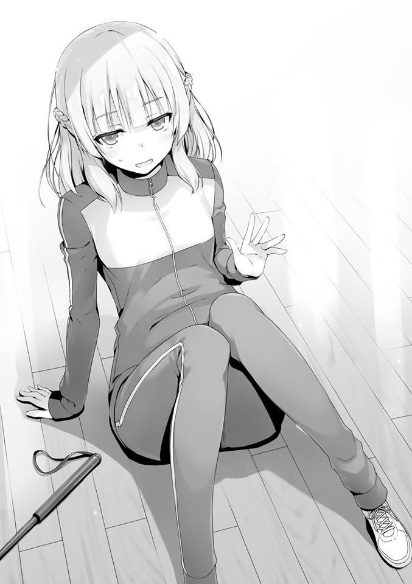
Yamauchi retiró torpemente su mano y dejó atrás estas palabras.
— Entonces, umm, ¿me voy?
— Sí. Por favor, no te preocupes por mí.
Sakayanagi sonrió un poco y apartó la vista de Yamauchi.
Tanto los chicos como las chicas sintieron alivio por el hecho de que no se convirtió en un problema antes de dispersarse.
— En serio, Sakayanagi-chan es linda, pero ¿no es muy torpe?
Yamauchi ni siquiera consideró la posibilidad de que fuera su descuido lo que causó la colisión.
— ¿Estás bien?
De alguna manera, como nuestros ojos hicieron contacto, me acerqué a Sakayanagi y la llamé.
— Gracias por tu preocupación, pero no es gran cosa.
— Le daré a Yamauchi un sermón más tarde.
— No es como si lo hubiera hecho a propósito, sólo me caí una vez como mucho.
Sakayanagi se rió un poco de eso, pero sus ojos no se rieron ni un poquito.
— Bueno, entonces, por favor, discúlpame.
Como estaban en diferentes grupos, Kamuro, que suele estar siempre a su lado, no está aquí.
No tengo forma de saber qué tipo de batallas están teniendo lugar en el bando de las chicas y tampoco tengo ningún interés en ello.
Pero Sakayanagi, que se había marchado, se detuvo y miró hacia atrás.
¿Se dio cuenta de que la había estado mirando?
— Acabo de recordar que tengo algo que discutir contigo, Ayanokouji-kun.
Golpeando su bastón una vez, sonrió débilmente.
— La clase B es ciertamente una clase unida. Se podría decir que esto se debe a que Ichinose Honami-san se ha ganado la confianza de sus camaradas dándolo todo hasta ahora. Sin embargo, ¿está bien confiar tanto en ella?, es lo que estoy pensando.
— Esto suena como algo que no tiene nada que ver conmigo.
Pero Sakayanagi continuó sin ni siquiera un indicio de prestar atención a lo que tenía que decir.
— Hace un tiempo, había una especie de rumor sobre ella. Que posee una tremenda cantidad de puntos. Que a pesar de que todavía no ha logrado nada significativo en los exámenes especiales hasta ahora, posee suficientes puntos para justificar una investigación de la escuela. Eso me sorprendió sinceramente. Sin embargo, ¿es normal que uno gane tantos puntos? Con toda probabilidad, ¿no crees que está actuando como la caja fuerte de la clase B?
— No lo sé. Los únicos que lo sabrían con seguridad serían Ichinose, o sus compañeros de clase. ¿Qué sentido puede tener contarme algo así?
— Lo que estoy tratando de decir es.... si está bien o no confiarle todos esos puntos privados a ella. Por ejemplo, si debido a un error que ha cometido, cae en un aprieto en el que es necesaria una suma enorme de puntos y los utiliza para protegerse, o utilizar esos puntos para salvar a algún compañero de clase. Estas son acciones por las que nadie podría culparla con toda probabilidad. Se podría decir que el que ella actúe como su caja fuerte es para ese propósito.
— Probablemente es eso.
— Sin embargo.... si ella usara esa enorme suma de puntos egoístamente para su propio beneficio, entonces la escuela podría hacer un movimiento en base a que es un fraude.
En cualquier caso, esto es algo que es relevante para los estudiantes de la clase B que no sean Ichinose y no para mí.
Si realmente está actuando como su caja fuerte, los únicos que tienen el derecho de quejarse de eso son los estudiantes que depositaron sus puntos con ella.
— Dudo que Ichinose use los puntos privados por su propio bien.
— Sí, eso es cierto. Al menos, por ahora nadie duda de ella.
En otras palabras, a partir de este momento, habrá sospechas sobre ella, es lo que está tratando de decir.
— Estoy deseando que llegue el momento en que volvamos a la escuela después de que termine este examen.
Quizás está satisfecha después de decir lo que tenía que decir, Sakayanagi se fue sin siquiera mirar atrás.
PARTE 7
Queda una hora hasta que se apaguen las luces a las 10. En nuestra habitación compartida, sin mucho que decirnos, pasamos el tiempo en silencio. El detonante para que todos se lleven bien es difícil. Incluso si de repente empiezas a hablar con alguien de otra clase, ellos se preguntarán por qué estás esforzándote y por qué es tan difícil entablar una conversación.
Sería estupendo que alguien tomara la iniciativa de darnos un tema para conversar, pero eso parece imposible.
En ese momento, alguien golpeó ligeramente a la puerta. Parece que tenemos una visita.
— ¿Quién es? En un momento así.
No parece que nadie lo sepa y todos miraron la puerta con curiosidad.
— Podría ser un profesor.
Ishizaki lo dijo con indiferencia. Desde luego, es una posibilidad. Keisei se levantó y empezó a caminar mientras preguntaba quién llamaba a la puerta. La persona del otro lado es realmente alguien inesperado.
— ¿Siguen despiertos?
— Presidente Nagumo, ¿podemos ayudarle en algo?
— Vine a ver cómo se encuentran ya que estamos en el mismo grupo.
¿Puedo pasar?
No hay un solo alumno de primer año lo suficientemente valiente como para decir “no” después de haber escuchado eso. Keisei inmediatamente dio su consentimiento y dio la bienvenida a Nagumo a la habitación. Pero al parecer no vino solo. Lo acompañan el vicepresidente Kiriyama y dos estudiantes de tercer año.
Uno de ellos es un estudiante de la Clase B llamado Tsunoda y el otro, Ishikura, también de la Clase B. Al entrar en la habitación, Nagumo inspeccionó sus alrededores.
— Como era de esperar, prepararon la habitación de la misma manera que tú, senpai.
Nagumo sonrió y se lo dijo a Ishikura.
— Eso parece. ¿Y bien? ¿Cómo planeas profundizar los lazos entre nosotros arrastrándonos hasta la habitación de primer año?
Preguntó a Nagumo pero Keisei, sin haber comprendido bien la situación, preguntó a Nagumo.
— ¿Profundizar los lazos?
— Te lo dije, ¿no? Vine a ver cómo están ya que estamos en el mismo grupo.
No tenemos televisiones, ni computadoras, ni teléfonos. Para ser honesto con ustedes, no hay nada remotamente similar al entretenimiento aquí.
Pero no es que no tengamos absolutamente nada con lo que divertirnos.
Diciendo eso, Nagumo sacó una pequeña caja del bolsillo de su jersey.
— ¿Cartas?
— ¿Jugar cartas en estos tiempos? Estoy seguro de que eso es lo que estás pensando. Pero este es un elemento básico de los campos de entrenamiento muy parecido a este.
Nagumo se sentó despreocupadamente en un lugar vacío. Y luego quitó la cinta de vinilo de la caja sellada, abriéndola.
— Por favor, tomen asiento también, senpai. Lo siento primer año pero como no hay mucho espacio, por favor vuelvan a sus camas.
Nagumo detuvo a los de primer año que estaban tomando asiento y dijo eso.
— No voy a hacer esto.
Tsunoda declinó y se dio la vuelta.
— Por favor, no digas eso, hagámoslo. Podemos hablar de cosas que no podemos discutir en ningún otro lugar.
Al ser detenido de esa manera, Tsunoda resignadamente tomó asiento.
Después de él, Ishikura también se sentó.
— Para animar el juego, creo que deberíamos apostar algo. Estoy buscando buenas ideas.
El primer año, ya de por sí nervioso, ya que se trata de un estudiante mayor, no pudo dar ninguna idea de inmediato. Probablemente se deba a que no saben lo que deben y no deben decirle al presidente del consejo estudiantil.
Nagumo también sabe que naturalmente el primer año se encogería de esta manera.
— Hemos decidido el orden en el que prepararemos el desayuno, ¿verdad?
¿Por qué no volvemos a eso como punto de partida y apostamos? Si siguen perdiendo repetidamente, en el peor de los casos, tendrán que preparar el desayuno hasta el día en que termine este campamento de entrenamiento. Por otro lado, si no pierden en absoluto, no tendrán que hacer el desayuno ni una sola vez. Eso es lo que estoy tratando de decir.
— Oye, Nagumo. ¿No es algo que deberíamos discutir con todo el grupo?
Le reclamó Ishikura.
— Es sólo el orden en el que preparamos el desayuno. Por favor, dame al menos un poco de libertad de acción con esto.
Como es el presidente del consejo estudiantil de esta escuela, expresó sin reservas sus deseos incluso a sus mayores. Por otro lado, no parece que el
tercer año pueda actuar demasiado duro cuando se trata de Nagumo.
Conociendo el enfrentamiento entre él y Horikita Manabu, probablemente no quieran enturbiar las aguas interviniendo torpemente.
— Entendido. Juguemos a las cartas y decidamos.
— Estamos bien con esto también, ¿verdad?
Keisei, con alguna pequeña reserva, se volvió hacia los de primer año en la habitación y preguntó.
Ishizaki, Hashimoto y los demás asintieron con la cabeza ligeramente estando de acuerdo. Yo también hice lo mismo. Y luego los demás estudiantes asintieron con la cabeza, con un ligero retraso. Con la única excepción de Kouenji.
— Kouenji, ¿te opones a usar las cartas para decidir?
Habría estado bien ignorarle, pero Nagumo habló con valentía a Kouenji. En el gimnasio, por la tarde, su pequeño intercambio puede tener algo que ver con esto.
— No apruebo ni desapruebo. La mayoría de los votos ya parece haberte dado la respuesta.
— No tiene nada que ver con los números. Quiero que me digas lo que piensas.
— Entonces permíteme responderte, presidente del consejo estudiantil. No tengo el más mínimo interés en esta interacción. Aceptar u oponerse. Ni siquiera he pensado en esas cosas. ¿Te satisface esto?
Los comentarios de Kouenji suenan como si fueran a causar problemas de nuevo. Sin embargo, Nagumo dio una agradable risa e inesperadamente respondió a Kouenji.
— ¿Por qué no te unes al consejo estudiantil, Kouenji? Me gustaría darle la bienvenida a alguien tan interesante como tú. Por lo que he escuchado, también eres muy capaz cuando se trata de temas académicos y deportivos.
Todos los presentes en la sala, incluso los de tercer año, estaban conmocionados por esto. No, Kouenji es el único cuya expresión no cambió.
— Es desafortunado. No tengo ningún interés en el consejo estudiantil.
— Supongo que sí. Pero debes saber que eres bienvenido en cualquier momento. Si el consejo estudiantil capta su interés, no dudes en llamarme en cualquier momento.
Parece que desde el principio Nagumo no esperaba que Kouenji aceptase inmediatamente.
— Ahora bien, ¿jugamos a las cartas?
Nagumo apartó la vista de Kouenji y una vez más nos lo propuso.
— ¿Qué vamos a jugar exactamente?
— Veamos, ¿por qué no jugamos a Old Maid? El último que tenga al comodín pierde. Dos de cada año escolar participarán. Seis de nosotros en total para esta competición.
No estoy muy familiarizado con las cartas, pero Old Maid es algo que incluso yo conozco.
— Los estudiantes participantes son libres de intercambiarse. Pero, por favor, no lo hagan cuando estemos en medio del juego.
Nagumo dijo eso y empezó a barajar las cartas. Y una vez que terminó de hacer eso, las entregó a los de tercer año. Para asegurarse de que no haya trampas, también las entregó al primer año.
Keisei, mientras barajaba las cartas, buscó a otro estudiante que estuviera dispuesto a participar. Como nadie se ofreció, Hashimoto levantó la mano y se bajó de la cama.
PARTE 8
Y así de fácil, empezó el juego de Old Maid. Los jugadores son de primer, segundo y tercer año. El hecho de preparar el desayuno implica que te levantes temprano. Ya que cada año escolar está programado para dos turnos cada uno, el poder ganar 5 rondas y perder sólo 1 conduciría a un resultado favorable. En el peor de los casos, ganar 4 rondas y perder 2 sería aceptable.
— Jugar a las cartas en silencio no es divertido, así que hablemos.
Nagumo propuso eso.
Habiendo recibido la baraja que Keisei había barajado, Nagumo empezó a repartir las cartas.
— Yo repartiré las cartas de la primera ronda, pero a partir de la segunda, el perdedor tendrá que barajar y repartir las cartas.
Todos asintieron con la cabeza. Desde el momento en que entró en esta habitación hasta ahora, Nagumo aún no me ha mirado ni una vez.
Probablemente significa que a pesar de haber hecho contacto conmigo durante las vacaciones de invierno, Nagumo no piensa mucho en mí.
— Además, los de primer año que no están jugando deben sentirse como en casa. Estar nervioso con tus mayores todo el tiempo tendrá un impacto en ti mañana.
Eso dijo, pero de todas formas, no podemos relajarnos como hasta hace poco.
Kouenji solo dormía, sin prestar atención.......
Desde la cama de abajo, decidí observar el juego que se estaba desarrollando.
— Aunque esto sea sólo un juego, no es como si el primer año pudiera permitirse perder, senpai.
— Desafortunadamente, no soy del tipo afortunado. No cuentes conmigo demasiado.
— Estará bien, senpai. Porque creo que todos ustedes son relativamente fuertes. No eres tan malo como para perder la primera y la segunda ronda.
A pesar de que se trata de un juego de cartas en el que no se sabe en qué mano se repartirán, Nagumo sigue rebosando de confianza.
La primera ronda se desarrolló sin contratiempos y en poco tiempo ya estaban a la mitad del juego.
— Hecho.
El estudiante de tercer año, Ishikura, logró deshacerse de todas sus cartas. El Vicepresidente Kiriyama fue el siguiente y luego Nagumo terminó tercero. La victoria del segundo año se decidió al principio, presionando más al primer año.
— Hecho.
Hashimoto se inclinó hacia los de tercer año y sacó dos cartas del mismo valor.
Ahora los únicos jugadores que quedan son Keisei y Tsunoda de tercer año.
Sentí que el ambiente era bastante tenso para un juego, pero a pesar de ello, procedieron con calma. Dos cartas en la mano de Keisei y una carta en la mano del de tercer año. En otras palabras, Keisei es el que tiene al comodín. Si el de tercer año termina eligiendo al comodín, entonces eso significaría que Keisei gana. Sin embargo... la carta que Tsunoda escogió después de alguna deliberación resultó ser la carta ganadora.
— Muy bien, esto lo resuelve.
— Perdí.
La primera ronda terminó con la derrota de Keisei y con eso, los alumnos de primer año están ahora cargados con la tarea de hacer el desayuno una vez.
— Vamos a calmarnos. Perder una o dos veces no significa nada.
Hashimoto se lo dijo a Keisei animándolo. Keisei responde asintiendo con la cabeza, pero parecía arrepentido por haber perdido. Puede que esté pensando en la posibilidad de perder otra ronda.
— Te lo dije antes, ¿no? El perdedor tiene que recoger las cartas y repartirlas.
— Lo siento.
Keisei, que olvidó eso, entró en pánico y cogió las cartas. La segunda ronda comenzó poco después. Desde mi posición, pude ver la mano de uno de los de tercer año. Tiene un comodín.
Mantuvo el comodín hasta la mitad del juego, pero después de un tiempo, pasó a otro estudiante.
Y entonces....los dos restantes terminaron siendo Kiriyama y Keisei. Ahora que está comprometido en un mano a mano por segunda vez consecutiva, parece
que Keisei no pudo evitarlo y terminó poniéndose nervioso. Para colmo, a juzgar por el número de cartas que quedan, puedo decir que Keisei es el que tiene el comodín. Vacilante, el de segundo año, Kiriyama, tomó lentamente una carta.
Keisei hizo todo lo que pudo para mantener una cara de póquer, pero al ver la carta que le estaban quitando, se le cayó la cara. Y en el lapso de unos pocos minutos, el de primer año sufrió derrotas consecutivas.
Yahiko, que había estado evaluando la situación, hizo una señal a Keisei para que cambiase.
— Tal vez sea mejor que te cambies.
Después de que esas palabras vinieron de Nagumo, Keisei obedientemente cambió con Yahiko.
— No soy muy bueno jugando juegos como este. Lo siento, pero te lo dejo a ti.
Keisei, que es responsable de las derrotas consecutivas, observó la batalla del primer año desde atrás. Por supuesto, incluso Yahiko se pondría nervioso cuando se enfrentara a sus mayores. Sin embargo, tal vez tenga algo que ver con que trate a Katsuragi como un anciano, parece bastante tranquilo. Aún así, eso podría no tener mucho efecto en el resultado del juego. No sé cuántos factores de habilidad hay en un juego como éste, pero se necesitará una tremenda cantidad de suerte para no sacar al comodín.
— Empiezo a tener ganas de darle al primer año este.
Dijo Nagumo, quizás sintiendo pena porque había ganado consecutivamente.
— Por cierto, Ishikura-senpai, ¿cómo va el club?
— No tienes ningún interés en el baloncesto, ¿verdad?
— Nada de eso. Por supuesto, mi interés en él no es tan grande como mi interés en el fútbol.
— Este año tuvimos algunos atletas de primer año que se han unido, así que podemos esperar grandes cosas el año que viene. No hemos conseguido mucho este año después de todo. Es patético admitirlo como capitán.
Hay varios de primer año que se han unido al club de baloncesto, pero lo más probable es que se refiera a Sudou cuando habló de los atletas de primer año.
El arduo trabajo de Sudou parece haber llamado la atención incluso de un retirado de tercer año.
— Estoy deseando que llegue ese momento.
— Parece que te concentras sólo en el consejo estudiantil. ¿No tienes ningún sentimiento hacia el fútbol?
— No es como si estuviera tratando de hacerlo como profesional. Además, puedo seguir jugando al fútbol donde quiera. Es sólo que el papel de presidente del consejo estudiantil en esta escuela es muy atractivo para mí.
— Es genial que estés trabajando duro en el consejo estudiantil, pero tengo mis dudas acerca de que busques pelea con Horikita.
— Buscar pelea no es mi intención. Quiero ser reconocido por mi senpai a quien he idolatrado durante mucho tiempo. Esos sentimientos puros son todo lo que tengo.
Ishikura miró a Nagumo, pero inmediatamente se volvió hacia sus cartas.
— Esta vez soy el primero.
Perdiendo sin problemas todas sus cartas, Ishikura terminó siendo el primer vencedor.
— Yo también he terminado.
Inmediatamente después, Yahiko también parece haber puesto sus cartas en orden, ya que felizmente descartó sus dos últimas cartas.
Para que gane el primer año, todo depende ahora de Hashimoto. Sus cartas parecen estar disminuyendo constantemente, pero al final, lo que realmente importa es el comodín y quién lo tiene.
— Muy bien.
Después un estudiante de segundo año que terminó tercero, Hashimoto también terminó.
— Oh, los de Primer Año han ganado por primera vez. Felicitaciones.
— Muchas gracias, Nagumo-senpai.
Los que quedan al final son el presidente del consejo estudiantil, Nagumo, y Tsunoda de tercer año. Sin embargo, Nagumo tiene la ventaja. Hay un 50% de posibilidades de que esto concluya el juego.
— Bueno, entonces, discúlpenme.
Nagumo dijo eso mientras agarraba la carta de la derecha sin dudarlo.
Sin embargo, lo que terminó agarrando fue el comodín.
— Lástima.
El de tercer año, Tsunoda cogió la carta de la derecha igual que Nagumo hizo antes cuando éste extendió las dos cartas de su mano.
— Esto lo resuelve.
Como resultado, el comodín quedó en posesión de Nagumo y los de segundo año terminaron sufriendo una derrota.
— Me han vencido. Entonces, ¿vamos por un cuarto asalto?
Nagumo, sin amargura alguna, se preparó para una cuarta ronda.
— Los de primer año han ganado por primera vez con esto. ¿Qué tal si te hago perder de nuevo? Después de todo, ustedes son nuestros kouhais, así que me gustaría que asumieran nuestros deberes.
Diciendo eso, Nagumo empezó a repartir las cartas.
— Si mal no recuerdo, Sudou es de la clase D, ¿no? ¿Quién es de la clase D?
Mientras se reparten las cartas, Ishikura preguntó eso y miró hacia el primer año.
— Ahh, somos compañeros de clase de Sudou.
Dijo Keisei mientras me miraba. Y luego inmediatamente añadió esto.
— Sólo una cosa, a partir de este mes hemos sido ascendidos a la Clase C.
Uno normalmente no se preocuparía mucho por los asuntos de un año escolar diferente al suyo. Pero cuando Keisei dijo eso, Ishikura quedó impresionado mientras se veía sorprendido.
— Así que han pasado de la clase D a la clase C, ¿eh? Eso es impresionante.
— Por supuesto, no mucho después de matricularse, la clase D de este año se quedó sin puntos de clase.
— Y aun así los ascendieron a la clase C. Bien hecho. ¿Qué tan grande es la distancia entre ustedes y la clase B?
Cuando Ishikura preguntó eso, Keisei dejó de responder.
— Por favor, olvídalo. Este es un grupo compuesto por todas las clases. Es mi culpa por traer un tema tan explosivo a este asunto.
Se disculpó. Sin duda, este no es un tema para sacar a relucir en un lugar como este. Para Ishizaki y los otros de la Clase D que se quedaron atrás, y para la Clase B, este no es un tema divertido de discutir.
Como resultado, el primer año apenas se unió a la conversación y la mayoría giraba en torno a Nagumo y el tercer año. El cuarto asalto. Cuando cuatro de seis personas terminaron, Nagumo pidió que se detuvieran.
— Los jugadores restantes son dos de primer año, ¿eh? No hay necesidad de seguir con esto hasta el final, ¿verdad?
No importa quién gane, eso no cambia el hecho de que el primer año perderá.
Yahiko y Hashimoto vuelven a poner las cartas restantes en la baraja. A pesar de que hemos conseguido vencer en una ocasión al segundo año liderado por Nagumo, el primer año ha perdido tres veces. Inicialmente, sólo teníamos que hacer el desayuno dos veces. Pero gracias a este juego de Old Maid, ese número ha aumentado.
Si volvemos a perder, nos veríamos agobiados con más.
— ¿Cambiamos?
Hashimoto pidió un cambio con otro estudiante de primer año y se retiró.
Probablemente no hay muchos estudiantes dispuestos a jugar con este sombrío estado de ánimo.
— No quiero perder el tiempo. No importa quién, sólo únanse. Tú, el de ahí.
Había estado observando el juego cuando Nagumo me miró y me hizo una seña.
Por supuesto, me gustaría negarme, pero esta no es exactamente una situación en la que pueda permitírmelo.
Independientemente de si me eligió intencionalmente o al azar, debería aceptar.
— Lo siento, Ayanokouji. Cuento contigo.
— Claro.
Tres de los de Primer Año ya han jugado, así que no es muy extraño que me hayan elegido.
Además, esto es sólo por diversión, sólo un juego y se trata de quién gana y quién pierde. Mientras cambiábamos, Yahiko me pidió que repartiera las cartas.
Mezclando las cartas, las repartí torpemente.
— Muy bien, entonces, este es el quinto asalto. A mí también me gustaría vencer a los de tercer año. Vamos a dar lo mejor de nosotros en esto, primer año.
Nagumo pronunció fuertes palabras de aliento. Miré las cartas en mi mano y evalué la situación. Cuando lo hice, varias de esas cartas tenían el mismo valor pero también terminé sacando el comodín.
Mientras no haga algo para que esto llegue al segundo o tercer año, no tengo ninguna posibilidad de ganar.
No estoy muy familiarizado con las cartas, pero hay algo que me da curiosidad.
En cierto modo, haber sacado el comodín de inmediato puede ser algo bueno.
Después de la verificación, el juego comenzó de inmediato. El juego procedía turno a turno, pero no hay señales de que nadie haya cogido el comodín de mí.
Ocasionalmente, un mayor agarraba el comodín pero luego lo soltaba inmediatamente. Sin embargo, en la quinta ronda, el comodín fue finalmente
arrancado de mi mano. El mayor que lo sacó me miró durante un instante, pero de inmediato recuperó la calma y continuó con el juego.
Esta vez, Yahiko es el primero en terminar y yo soy el segundo después de él.
— Así que el primer año se nos escapó, ¿eh? Tal vez las mareas han cambiado.
Al final, se redujo a dos de tercer año y se enfrentaron entre sí. O debería decir, todo salió como Nagumo esperaba. Queda una bala. Como estudiante de primer año, me gustaría evitar perder más de lo que ya hemos perdido.
— La próxima ronda es la final.
— Empezaré a repartir.
Cuando Ishikura empezó a repartir las cartas, Kouenji llamó a Nagumo.
— Presidente Nagumo.
— ¿Qué pasa, Kouenji? ¿Finalmente te apetece unirte?
— Siento un poco de curiosidad. Supongo que veré cómo se desarrolla este último juego.
Dijo con arrogancia pero Nagumo no le prestó atención a eso y solo escuchó lo que tenía que decir.
— ¿Cómo se desarrollará?
Nagumo, mientras miraba las cartas que se repartían, miró una vez a los participantes.
— Esto puede ser un juego, pero siguen enfrentándose a estudiantes experimentados. Hay muchas posibilidades de que el primer año pierda.
Él contestó. Y con eso, Kouenji se rió y cerró los ojos como si estuviese satisfecho.
Es muy probable que la mayoría de los presentes no entendieran el significado de la pregunta de Kouenji. Sólo los estudiantes de mayor edad parecen haber comprendido la situación. Me devané los sesos pensando en lo que debería hacer con respecto a esta batalla. Si dependo sólo de la suerte, entonces estoy
prácticamente seguro de que perderé. Pero si tomo medidas para evitar ese resultado, podría acabar llamando la atención de Nagumo. Revisé mis cartas.
Una de esas cartas es una carta que definitivamente tendré que perder si quiero ganar. Es el comodín que significa la derrota.
— En cuanto al primer año, me gustaría terminar con tres derrotas. Pero cuatro derrotas también me sirven.
Las palabras de Nagumo no suenan como si las estuviera diciendo al azar. La ronda final comienza en el sentido de las agujas del reloj. Los jugadores descartan dos cartas cada uno.
En aproximadamente 1-2 minutos, el resultado se decidirá.
PARTE 9
— Lo siento primer año, pero he terminado.
El primero en terminar es Tsunoda. Kiriyama terminó después de él. El resto de jugadores son los dos de primer año y los mayores, Nagumo e Ishikura. El comodín ha estado en mis manos desde el principio. Al final, decidí dejar de intentar ganar. Simplemente continué jugando el juego en silencio sin hacer mucho.
Yahiko terminó y dio un respiro de alivio. Y poco después de eso, Ishikura también terminó dejándome en un mano a mano contra Nagumo.
— No pareces estar divirtiéndote, Ayanokouji.
— Eso no es verdad. Sólo tengo problemas para expresarme.
— ¿En serio? Te has visto pálido desde el principio. Has estado sujetando el comodín todo este tiempo, ¿no?
Los comentarios de Nagumo no son nada fuera de lo común. Como se trata de un mano a mano, si no está sosteniendo al comodín, obviamente entiende lo que eso implica.
— Ese podría ser el caso.
Conversar con él sería problemático, así que lo dejé pasar.
Porque sé que eso no es lo que Nagumo quiere sonsacarme. En resumen, creo que quiere que le responda como lo hizo Kouenji. Silenciosamente extendí dos cartas hacia él. Una de ellas es el comodín y la otra es la carta ganadora para Nagumo.
Con toda probabilidad, Nagumo tomará la carta ganadora. No, no entiendo la expresión que está haciendo. Nagumo sonrió mientras se acercaba. Y entonces-
— Bien por ti, Ayanokouji. Ahora tienes una salida.
Nagumo eligió el comodín.
— Esto es inusual. Pensé que seguramente serías capaz de elegir la correcta.
Lo dijo Ishikura al lado de Nagumo.
— Un juego de cartas se reduce a la suerte después de todo. Perderé cuando pierda.
Barajando las cartas en sus manos, extendió dos hacia mí.
— Ahora bien, elige.
Desde la perspectiva de un tercero, hay un 50% de posibilidades. Pero eso no se aplica a este juego. Estas cartas vinieron de una caja sellada pero Nagumo fue el primero que barajó estas cartas y en ese momento, debe haber marcado el comodín. Ha usado un truco.
No te darías cuenta a primera vista, pero hay una pequeña marca en el comodín.
No te darías cuenta normalmente. He desentrañado este misterio basado en algo parecido a una predicción.
Hasta ahora, en las cinco rondas que ha jugado, Nagumo ha estado acertando en los resultados anteriores. Por supuesto, ya que también hay alumnos de primer año que no saben nada de lo que está mezclado, no hay una verdadera sensación de certeza. Por eso habló ambiguamente y sólo adivinó el resultado en términos de equipos con una alta probabilidad de ganar y equipos con una baja probabilidad de ganar.
Pero los estudiantes mayores que se han dado cuenta......no, a quienes se les ha contado sobre este truco, poseen una ventaja abrumadora. De cualquier manera, esto es asqueroso.
La carta de la derecha, desde mi punto de vista, tiene una marca que indica que es el comodín. No hay duda, ya que se trata de una marca improvisada y apresurada que no se aplicó a las otras cartas. Si cojo la otra carta, me pregunto qué pasará. La respuesta es simple. No va a pasar nada. Sólo significaría que obtuve la mitad ganadora de la oportunidad del 50%.
— Realmente no puedo decir cuál es cuál, así que elegiré una al azar.
Lo dije y me acerqué, pero Nagumo sacó las cartas.
— Por favor, piénsalo un poco antes de elegir.
— No creo que sea posible saberlo con sólo pensarlo.
— De todos modos, insisto.
Me obligó a pensarlo un poco a la mitad.
— Entendido, lo pensaré.
Lo dije mientras miraba las cartas. Por supuesto, ya no pensé más en las cartas.
Me quedé en silencio durante unos dos segundos y luego busqué la carta ganadora.
— Me gustan mis oportunidades con la de la derecha. Voy a escoger esa.
Una razón tan buena como cualquier otra.
Esta vez, Nagumo no me detuvo. La última carta ganadora llegó a mis manos.
— Por favor, discúlpenme.
Lo dije al juntar las dos cartas y declarar mi victoria.
— Has perdido, Nagumo.
— Eso parece. Quiero decir, primer lugar, teníamos previsto hacer el desayuno dos veces, así que no me importa.
Dijo eso y luego reunió las cartas esparcidas por todos lados.
— De todas formas, fue bastante divertido. Como pensaba, Ishikura-senpai y yo nos llevamos bien.
— ... Eso me pregunto.
Haciendo a un lado las palabras de cortesía de Nagumo, Ishikura abandonó la habitación.
— No hay problema en empezar el orden en el que cocinamos el desayuno con el primer año, ¿verdad? Por favor, encárguense de ello mañana.
— Entendido. Gracias por esta noche.
Keisei agradeció a Nagumo. Los estudiantes mayores que han terminado de jugar a las cartas se levantaron y salieron de la habitación del primer año.
— No parece que hayamos interactuado mucho con ellos.
Podía entender por qué Ishizaki musitó eso.
En última instancia, sólo se trataba de un juego que aumentaba la carga del primer año un poco.
PREMONICIÓN DE LA DERROTA
En un sábado, que hubiera sido como un día festivo en nuestra vida escolar, hay clases que se imparten durante la duración de la escuela al aire libre.
Pero aunque yo las llamo lecciones, el horario en sí difiere un poco de los días de semana.
Lo que podríamos llamar lecciones terminaron en la mañana y después de eso es nuestro tiempo libre.
El examen especial que comenzó el jueves también, ya está en su tercer día.
La discordia comenzaba a producirse dentro del grupo.
Comenzó alrededor de las 5, temprano en la mañana.
— ¡Aaaaah, tengo sueño!
En la cocina exterior cerca del edificio de la escuela, Ishizaki gritó.
— Todos están en el mismo barco. Ahh, por favor mídelo para no estropear la cantidad de miso.
Keisei le advierte mientras echa un vistazo al papel en el que está escrito el menú del desayuno que los profesores nos habían dado.
— Cállate. ¿Por qué tengo que participar en la preparación de las comidas?
Mientras movía las manos para agitar el miso, Ishizaki no paraba de maldecir.
— No se puede evitar, ¿cierto? Existe la posibilidad de que incurramos en una penalización si no se reúnen todos aquí.
— No me importa, mierda... ahh.
— ¿Qué pasa con ese “ahh” justo ahora?
— .......Nada.
— De ninguna manera eso fue nada. ¿Dónde está la sal que tenías en las manos?
— La he añadido toda.
Al parecer, a la sopa de miso de la que Ishizaki estaba a cargo se le añadió un poco de sal.
Keisei entró en pánico, apagó el fuego y comprobó el sabor. Y luego tosió.
— Pusiste demasiada en ella, ¡ugh! No es comestible......
Si le dieras esa sopa de miso a los estudiantes mayores, te golpearían severamente por ello.
En primer lugar, es malo para tu cuerpo.
— No hay más remedio que hacerla de nuevo.
— No me jodas. Si la hacemos de nuevo, entonces empiezas de cero. Quiero decir, ¿qué hay de Kouenji?
— Al diablo si lo sé.
— Están en la misma maldita clase.
Mientras miraba a los dos discutiendo por la sopa de miso, Hashimoto manejaba hábilmente una sartén encima de la estufa mientras cocinaba un omelette.
— Eres muy hábil....
— Es porque siempre cocino mis comidas.
Lo dijo Hashimoto sin un atisbo de orgullo, y siguió cocinando enérgicamente.
Albert se acercó a Hashimoto en silencio. En sus manos llevaba un cuenco con huevos revueltos.
— Gracias. Si no te importa, ¿puedo pedirte que cortes las verduras también?
A pesar de su gran complexión, Albert comenzó a mover hábilmente un cuchillo de cocina sobre la tabla de cortar.
Como hay muchas bocas que alimentar, Hashimoto cocina los huevos uno tras otro.
Parece que, en lo que respecta a la cocina, estos dos son nuestros ases.
Por otro lado, logré adquirir la tarea extremadamente poco exigente de preparar las verduras crudas y la vajilla.
Sin embargo, como tengo que preparar las verduras de todo el mundo, sigue siendo mucho.
No puedo ayudar con la vajilla, pero siento que también debería ayudar con el corte de las verduras.
Mientras estaba junto a Albert, él me miró en silencio y traté de comunicarme con él a través del contacto visual.
“¿Puedes manejarlo? Me refiero a cortar las verduras”.
“Probablemente”.
De alguna manera, logramos entendernos lo suficiente y me entregó un cuchillo de cocina.
Me alegro de haber utilizado uno antes, aunque sea un poco, desde que empecé a vivir en el dormitorio.
Corté las verduras, manteniéndome a la par con la habilidad de Albert.
Aun así, me pregunto exactamente a dónde se fue ese Kouenji.
Ya han pasado más de 30 minutos desde que dijo que iría al baño. Los estudiantes de las clases A y B enviaron a un estudiante a buscarlo, pero viendo que aún no han regresado, parece que no lo han encontrado.
Al final, Kouenji no regresó hasta el desayuno e incluso después de su regreso, ni siquiera intentó insistir en la excusa de que estaba atrapado en el inodoro debido a un dolor de estómago.
Por lo tanto, debo suponer que la relación entre Ishizaki y Kouenji se ha deteriorado por completo.
PARTE 1
A las 3 de la mañana de ese mismo sábado, sucedió mientras estudiaba moral en el aula. Pude oír la voz alegre de una chica desde fuera. Cuando miré por la ventana desde el tercer piso, vi la figura de Ichinose corriendo enérgicamente
por el campus. Parece que el primer día le costó mucho armar su grupo, pero lo importante es que ahora se ve muy alegre. (Nota: la verdad la hora se me hace extraña, pero así viene.)
Sakayanagi había declarado su intención de aplastar a Ichinose, pero hasta ahora no hay señales de que eso ocurra. Por supuesto, eso sólo puede ser en la superficie.
Mirando desde arriba, pude ver quiénes son los miembros del grupo de Ichinose hasta cierto punto. Sorprendentemente, sólo vi a una persona de nuestra clase C entre ellas. En cuanto a la clase B, Ichinose es la única que reconocí. Tal vez como los chicos lo han hecho, están formando grupos compuestos de una clase mayoritaria para mantener el status quo de las cuatro clases y la escogieron de la clase B para cumplir con el requisito mínimo.
Realmente no conozco a las estudiantes de las clases A y B en detalle, pero también vi a la chica que chocó con Horikita durante el festival deportivo y sufrió una lesión como parte de la táctica de Ryuuen.
Afortunadamente, parece que se ha recuperado completamente, ya que ahora corre sin mucha dificultad. Por cierto, la estudiante de nuestra clase C que forma parte de ese grupo es una chica llamada Wang Mei-Yu.
La primera vez que vino de China fue cuando era estudiante de primaria y ha permanecido en este país desde entonces. Eso es lo que escuché de alguien en clase. Su apodo es “Mii-chan”.
Un sobrenombre con el que difícilmente la llamarían los que no son cercanos a ella. En cuanto a lo demás que sé de ella, sus notas son nada menos que extraordinarias y es particularmente buena en inglés... es la imagen que tengo de ella.
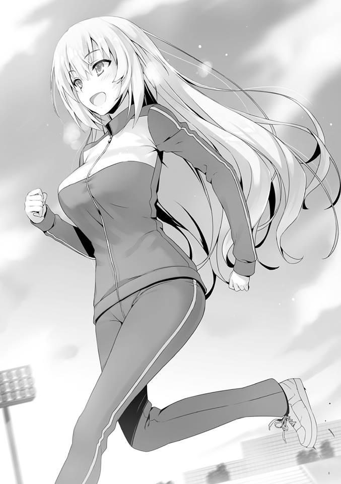
Sus calificaciones generales pueden variar un poco, pero no importa cómo se mire, ella es tan buena como Keisei cuando se trata de estudios académicos. Y
también, curiosamente, es similar a Keisei cuando se trata de practicar deportes.
Está tratando desesperadamente de seguir el ritmo del resto de los miembros de su grupo, pero es con mucho la peor. Incluso ahora, respira con dificultad mientras mira al cielo como si estuviera a punto de colapsar. Cojea y se balancea.
Ichinose notó que Mii-chan se quedaba atrás y disminuyó la velocidad. Y
mientras la apoyaba con ánimo, decidió correr a su lado. Y después de un ligero retraso, otra chica, Shiina Hiyori, de la Clase D, también se unió a ellas.
Ella no parece exactamente del tipo atlético, pero con una sonrisa en la cara, se mantuvo a la par de las otras dos chicas. Según lo que Ryuuen y los que le rodean han dicho, Shiina ha estado actuando como la líder de las chicas de la clase D. Si ese es el caso, entonces el grupo que estoy viendo ahora mismo tendría a las líderes de dos clases en él.
Teniendo esto en cuenta, no sería extraño que Horikita y Sakayanagi estuvieran en el mismo grupo, pero no parece ser el caso.
Ahora, sintiendo un poco de curiosidad por saber exactamente cómo surgió este grupo, quité los ojos del texto que se supone que estoy estudiando y miré por la ventana. Me di cuenta de que el ambiente en el aula se había vuelto pesado debido a las palabras del profesor.
— Haré que todos ustedes se presenten ahora. Sin embargo, quiero que tengan en cuenta que esto no es simplemente una presentación personal lo que harán, sino que es parte de su lección. A partir de ahora, cada día darán un discurso. El tema del discurso variará de un año escolar a otro, pero los cuatro criterios principales por los que se les evaluará son:
“Volumen”, “Postura”, “Tema” y “Comunicación”.
La palabra discurso había sido escrita en los materiales que se nos habían dado en el autobús.
Sin duda es una de las asignaturas que se examinan aquí en la escuela al aire libre. Es muy probable que todos los miembros de este grupo grande tengan que
dar un discurso propio. Para aquellos que tienen pocas habilidades de comunicación, este tema en particular puede parecer un infierno.
A los alumnos de primer año se les pide que den su discurso basándose en lo que han aprendido hasta ahora a lo largo de este año y en lo que desean aprender en los años siguientes. El segundo y tercer año darán su discurso basado en temas como su futuro rumbo y empleo. Básicamente, cosas que tienen que ver con su futuro.
— ¿En serio? Qué examen de mierda...
Puedo entender por qué Ishizaki dijo eso con asco, pero sus murmullos son demasiado fuertes. Parece que el maestro también escuchó eso, pero no pronunció ninguna palabra de reprimenda.
Ya sea que decidas tomar esto en serio o hacer el tonto, al final tus decisiones afectarán al grupo. Significa que somos libres de hacer lo que queramos.
Después de las clases, cierto hombre se acercó al grupo del primer año. Ishizaki había estado descansando sus piernas sobre la mesa, pero al ver a ese hombre, instantáneamente corrigió su postura.
Es Kiriyama de la clase B de segundo año, así como el vicepresidente del consejo estudiantil de Nagumo.
Solía estar en la Clase A, pero después de haber sido destruido por Nagumo, ha caído. Sin embargo, todavía desea la caída de Nagumo en lo más profundo de su ser, ya que se ha puesto en contacto conmigo a través del Horikita mayor.
— Creo que deberías corregir tu actitud con respecto a estas lecciones.
— S-Seguro. Quiero decir, no estaba haciendo ningún ruido ni nada.
— No estoy hablando sólo de Ishizaki. También estoy hablando de ti, Kouenji.
A pesar de desear su caída, en la superficie tiene que actuar como el obediente vicepresidente. Posiblemente quiera arreglar lo que pueda tener un efecto en la forma en que se evalúa a todo el grupo grande.
— En este examen especial sólo nos evaluarán por el examen del último día,
¿no? Que nos tomemos en serio o no estas lecciones no es realmente tan importante, eso creo.
— El examen escrito no es todo lo que hay en este examen especial. ¿No has pensado en el hecho de que tu actitud durante todo el campamento y la impresión que transmites puede tener también un efecto en él? Además,
¿cómo exactamente vas a obtener una calificación alta en el examen si no tomas estas lecciones en serio?
— La respuesta es “lo simple es lo mejor”, ¿verdad? Porque estamos hablando de mí.
— Ya veo. Entonces, ¿estás diciendo que es fácil para ti obtener una buena calificación? Sin embargo, después del examen veremos si has logrado o no obtener una calificación alta. Mientras seas parte de un grupo, ¿no crees que es importante que actúes para aliviar las preocupaciones de los que te rodean?
— Si este es un grupo que realmente se preocupa por cómo actúo, entonces tendría que decir que este grupo no vale mucho.
— No puedes juzgar eso, Kouenji.
— Entonces, ¿quién puede hacer ese juicio, si puedo preguntar?
— El todo colectivo. Eso es algo que cada estudiante debe decidir aquí.
Ishizaki se ríe mientras soporta las palabras del vicepresidente. Seguramente se regocija al ver cómo aplastan a Kouenji. Sin embargo, Kouenji no es alguien en quien el “sentido común” funcione.
— Aunque todos ustedes estuvieran apilados uno encima del otro, yo valgo mucho más como ser humano individual. Lo que quiero decir es que la gente que no tiene buen ojo para las cosas no puede esperar emitir un juicio como ese.
— Parece que eres demasiado inmaduro para ser un estudiante de preparatoria. Qué infantil.
Kiriyama utiliza el sentido común como arma contra Kouenji, que no se acobardó ni un poquito ante él. Para cuando me di cuenta, casi la mitad de los estudiantes de segundo año se están amontonando alrededor de donde estamos sentados los de primer año.
Ishizaki tampoco podía permitirse reírse eternamente y endureció su expresión.
Podía escuchar palabras que sonaban un poco amenazantes viniendo de nuestro alrededor.
— Además, no es sólo Kouenji. Veo a otros estudiantes por doquier que también causan problemas.
Por supuesto, si estamos hablando de estudiantes problemáticos naturalmente incluyen a Ishizaki, pero honestamente no puedo pensar en nadie más. Todos los demás debieron tomar en serio las lecciones a su manera. Kiriyama seguramente agrupa a todos los chicos de primer año con el objetivo de que nos concentremos. Es probable que nos esté presionando recordándonos que si seguimos actuando arrogantemente de esta manera nos convertiremos en enemigos de los estudiantes mayores.
Kouenji es la gota que derramó el vaso.
— Déjalos en paz, Kiriyama.
El estudiante de tercer año, Ishikura vio la situación y ofreció su ayuda.
— La guía que va demasiado lejos puede ser interpretada como intimidación.
Si se difunden rumores como ese, tú eres el que va a tener problemas. Los de primer año tienen un buen control de la situación, ¿no?
Cuando Ishikura nos hizo esa pregunta, todos, aparte de Kouenji, incluido yo, asintieron.
— Bravo, Ishikura-senpai. Has entendido muy bien la situación.
Nagumo, que había estado observando en silencio esta escena sin unirse a la conversación, ahora felizmente empezó a hablar.
— Estás desperdiciado en la clase B. En primer lugar, Ishikura-senpai no tiene mucha suerte.
— ¿No tengo suerte, dices? No quiero admitirlo, pero es que no soy lo suficientemente bueno.
— No creo que ese sea el caso. Senpai, la única razón por la que no pudiste subir a la Clase A es porque hay un genio como Horikita Manabu allí. Soy
consciente de que has luchado bien durante estos tres años. La diferencia de puntos de clase entre la clase A y la clase B es de 312. La graduación no está tan lejos, pero creo que te estás acercando a ellos.
— Entonces, ¿estás diciendo que vas a llevar a este grupo a la victoria?
— Sí. Si Ishikura-senpai está dispuesto a confiarme todo, entonces venceremos en este examen especial. Y eso es una tontería porque te ayudaré a subir a la clase A. Quizá hasta podamos hacer que expulsen a Horikita-senpai de esta escuela, ¿sabes?
— Qué pena, Nagumo. Horikita no es el líder esta vez. Pero tú también estás igual, por supuesto. No hay manera de culparlo de algo que sea lo suficientemente bueno como para hundirlo.
— No importa si es el líder o no. Tampoco importa si puede ser hundido o no.
Hay muchas maneras de aplastarlo.
Nagumo lo dijo así y se rió.
— Lo siento, pero no puedo confiar en ti. No en la medida de que te confíe el destino de la clase B.
— Eso es desafortunado.
Nagumo habló todo eso delante de todo el grupo. Inocentemente indefenso. ¿O
tal vez se está haciendo ver indefenso a propósito? No hay forma de que sea lo primero.
PARTE 2
Durante la cena, decidí actuar. Digo “actuar”, pero todo lo que hago aquí es tratar de averiguar la situación del lado de las chicas. Porque el hecho de que Ichinose y Shiina estén en el mismo grupo me llamó la atención. Sería mejor si pudiera indagar qué está pasando con los otros grupos. En cuanto a Kei, está cenando en el mismo lugar que los días anteriores para que me sea más fácil acercarme a ella.
A pesar de que no ordené nada de eso. Qué confiable de su parte. Por otro lado, había estado escogiendo al azar asientos vacíos y no me limitaba a un solo lugar para comer.
Eso es porque elegí evitar hacer contacto abierto con Kei, por si acaso. No hay muchos estudiantes que sepan de la relación entre yo, Ryuuen y algunos otros estudiantes de la clase D, el vicepresidente Kiriyama y Kei.
Además, también hay un enemigo interno del que tengo que estar atento. Revisé la hora y me senté cerca de Kei. Y cuando empecé a pensar en una forma de hacerla consciente de mi presencia—
— …hnn---
¿Kei me saludó con un chillido? Me saludó con algo parecido a eso. Kei se dio cuenta de que venía, a pesar de que había estado charlando con sus amigas. Si es así, debo esperar pacientemente hasta que se deshaga de las molestias.
Kei continuó cenando tranquilamente y manipuló a sus amigas para que se fueran con la excusa de volver a su habitación temprano. Había estado considerando posponer nuestra reunión si eso significaba que otro estudiante pudiera irrumpir en ella durante la misma, o si sus amigas decidían quedarse, pero parece que ha tenido éxito en manipularlas.
Eventualmente, no queda nadie a nuestro alrededor que nos preste atención a ninguno de los dos y así comenzó nuestra conversación.
Por supuesto, si alguien se interpusiera en nuestro camino, esta conversación se interrumpiría instantáneamente.
— ¿Y? ¿Por fin tienes ganas de confiar en mí al tercer día?
— Así es, más o menos. Hay muy poca información sobre las chicas.
— Bueno, no se puede evitar, ¿verdad? Para alguien con un trastorno de comunicación como tú, sólo hay unas pocas chicas con las que podrías hacer contacto.
Me ha ignorado desde el principio.
Por supuesto, si eso es algo que Kei puede aprovechar para mantener nuestra relación, entonces es un precio barato de pagar, pero me apetecía molestarla.
Sólo un poco.
— Entonces, incluso sin mi consejo, ¿puedes aprobar este examen especial?
— Por supuesto. ¿Quién te crees que soy?
— Ya veo. Entonces no hay nada que temer.
— .... Más tarde, al menos analiza mi situación para ver si hay algún peligro o no, ¿sí?
Quizás se sintió ansiosa por eso, ya que Kei me lo dijo.
— Por ahora, escuchemos a partir de la división de los grupos de chicas.
— Ahh, antes de que hablemos de eso hay algo que me ha estado molestando.
— Seamos breves.
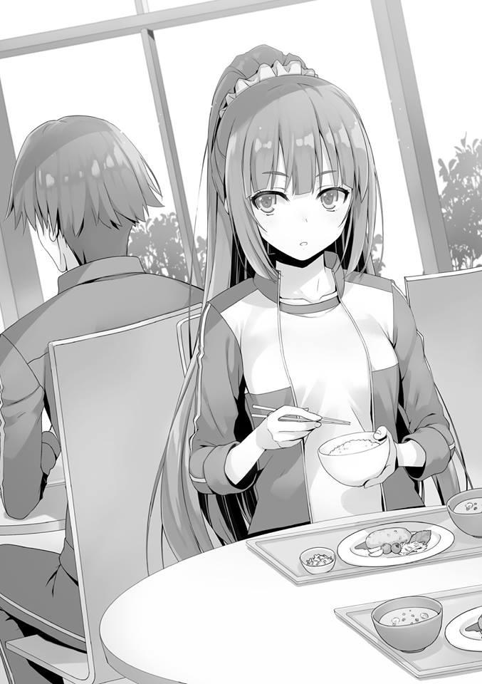
Si la conversación entre nosotros toma demasiado tiempo, puede haber estudiantes que sospechen.
— Es algo muy importante.... o más bien, ¿qué está pasando con ese tipo Ryuuen?
— ¿Estás preocupada?
— Quiero decir, sí. Se ha convertido en un tema incluso entre las chicas. Por qué ese tipo dejó de ser el líder, pero no parece que nadie sepa la verdad.
— Siendo tan manso como un cordero, esa expresión no le queda muy bien a Ryuuen pero ahora mismo parece que está actuando muy maduro.
— ¿Significa eso que tu escarmiento funcionó?
— Escarmiento, ¿eh?
Detrás de las duras palabras de Kei yace su lado vulnerable, que a veces se muestra. Su curiosidad por él probablemente proviene de su ansiedad, que a su vez es el resultado del hecho de que Ryuuen la ha visto en su momento de mayor debilidad.
— No te preocupes por Ryuuen. No actuará descuidadamente. Como mínimo, puedo decir que no le hará nada a Kei de ahora en adelante.
Lo dije para tranquilizarla. Sin embargo, no obtuve respuesta de Kei.
Tenía toda la intención de ser cauteloso, ¿así que tal vez sea porque alguien vino? Eso es lo que había supuesto, pero no parece ser el caso. Inmediatamente me di cuenta de la situación.
— .... Lo siento, eso no fue nada.
Intentó engañarme con eso.
— Eso no parecía nada, Kei.
— Te estoy diciendo que no es nada.
— ¿Es eso cierto, Kei?
— .... Detente ahí mismo. ¡Lo estás haciendo a propósito!
No se dio la vuelta, pero lo dijo amenazadoramente.
Tal vez la fastidié demasiado.
— Ahh, cielos. En realidad, no debería haberte dado permiso para que me llamaras por mi nombre......
— Tú eres la que me llamó aquí en primer lugar.
— Sí. Eso no se puede evitar.
Y lo que es más importante, si hemos terminado de hablar de Ryuuen, me gustaría pasar a los negocios. Aunque nos estamos mezclando con el ajetreo, si alguien familiarizado con nosotros se topa con esta escena, sospecharían de la relación entre nosotros.
— Para que conste, he reunido toda la información que he podido... ¿Puedo hablar de ello?
— Sí.
— Para que lo sepas, no pude conseguir información de todos los grupos como tú querías.
— Lo sé. No espero todo eso de ti.
— Es una forma muy irritante de decirlo. Incluso alguien como tú no sabría a qué grupo pertenece cada uno, ¿verdad?
— Tal vez. No lo sé
— ..... ¿Qué?, seguramente no estarás diciendo que has memorizado todo eso, ¿o sí?
— Nunca dije eso.
— ¿A qué grupo pertenece el Shibata-kun de la clase B?
— Un grupo de clase B liderado por Kanzaki.
— ¿Qué hay del Tsukasaki-kun de la clase A?
— También es de esa forma. Pertenece a un grupo de la clase A establecido por un estudiante llamado Matoba.
— ¿Y qué hay de Suzuki-kun?
— La persona que lleva ese nombre fue asignada a un grupo pequeño diferente.
— ¡Así que lo has memorizado todo!
— Sólo la gente cuyos nombres conozco. Pero si puedo ver sus caras, puedo decir a qué grupo pertenece cada estudiante.
Lo único que debo agradecerle a este examen especial es que me hizo decidir memorizar los nombres de todos los estudiantes de primer año. Para cuando
este examen termine, estoy seguro de que podré hacer coincidir cada nombre con una cara con una precisión cercana al 100%.
Siempre y cuando no haya pasado por alto a nadie ni haya malinterpretado nada.
— Haa.... ¿qué tuviste que hacer exactamente para tener tan buena memoria?
¿Eres tal vez del tipo nerd-kun de cuatro ojos?
Desafortunadamente, no entiendo muy bien lo que Kei está diciendo.
— Lo más importante es que vayamos al grano. ¿Qué pasa con el grupo de Sakayanagi y Kamuro?
— Las dos están en el mismo grupo compuesto de tres clases con nueve de la clase A. La clase A fue la primera en juntarse, ¿sabes?
Recibí esa explicación de Kei. Al igual que los chicos de la clase A, también siguieron la misma estrategia de reunirse de inmediato, ¿eh? Pero se conformaron con nueve en vez de doce, ¿no?
— Una composición de tres clases significa que alguien ha sido excluido. ¿O
quizás Sakayanagi no les dejó unirse?
— No aceptaron a nadie de la clase B, por lo que fueron rechazadas desde el principio. Dijeron algo sobre que Ichinose-san no era de confianza y qué no. Por supuesto, quien dijo eso fue Kamuro-san en lugar de Sakayanagi-san.
— No es de confianza, ¿eh?
— Es decir, ningún alumno de otra clase es digno de confianza por defecto, pero Ichinose-san es la única persona a la que se le llama por su nombre de esa manera. ¿Pero no es eso extraño? He oído lo popular que es.
Si tuviéramos que nombrar a un solo estudiante de primer año de otra clase que sea digno de confianza, entonces sin duda yo también habría nombrado a Ichinose. Por supuesto, si son las otras clases las que se encargan de nombrar a Kushida, entonces habría muchos estudiantes que la elegirían. De todos modos, Ichinose debe ser la número uno o dos cuando se trata de ser el estudiante más confiable en nuestro año escolar. Sin embargo, la recompensa será menor si el grupo está formado por el número mínimo de personas de tres clases.
Una estrategia en la que no hay victoria total. Pero al mismo tiempo también una estrategia en la que no hay una derrota total.
— Injusto, ¿no es así? La clase A debería haberse cuidado por sí misma.
Fueron demasiado arrogantes en la formación de grupos.
— Supongo que sí.
Una estrategia sólida y segura. Sin duda alguna, Sakayanagi debe ser quien ha elaborado este plan. Es sorprendente que alguien tan agresiva como ella decida adoptar una estrategia defensiva como ésta.
— ¿Y? ¿Qué debo hacer ahora? ¿Debería intentar algo?
— Los trucos no funcionarán en este examen especial. Pero hay algunas personas a las que me gustaría que echaras un vistazo.
Le dije eso y nombré a varias personas que podrían convertirse en los actores clave.
— Sí, suena bastante duro, pero lo intentaré.
Seguir obedientemente las órdenes que se le dan. Ese es el punto fuerte de Kei.
— ¿Pero qué pasa con este examen? ¿Son tan necesarios los modales y la moral?
— No lo sé. Si tengo que poner esto en términos de una historia, entonces podría ser algo así como un MacGuffin.
— ¿Ehh? Maguga--------
— No estoy hablando de una taza, ¿sabes?
— Yo... yo lo sabía. ¿Y bien? ¿De qué se trata todo esto?
No parece que tenga la menor idea.
— Es un “algo” importante para los personajes, pero no es algo vital para la historia en sí. Eso es lo que significa.
— No entendí nada de eso. Sé que Kiyotaka es inteligente, así que explícalo en términos simples
— Lo que estoy diciendo es que aunque las cosas como los modales y la moral pueden ser necesarias, no son importantes en sí mismas.
El tiempo asignado para la cena casi ha terminado y los estudiantes están empezando a dispersarse.
— Pero este examen... podría ser un poco tormentoso.
— Tormentoso.... ¿qué quieres decir? ¿Eso significa que si las cosas van como Kiyotaka predijo, algo terrible va a suceder?
— Relájate. Por lo menos puedo decir que no te pasará nada malo.
Esta vez, la tormenta no golpeará al primer año. Tomé mi bandeja y me levanté.
— Si te necesito de nuevo, te lo haré saber.
— Entendido.
Después de nuestro pequeño intercambio, decidí volver a la habitación común.
PARTE 3
Aproximadamente fue en el momento en que entré en el tercer gran baño público en la noche del tercer día.
Dentro de la gran bañera, había un par de muchachos agachados en una esquina.
Yamauchi e Ike, y no sólo ellos, sino también algunos estudiantes de la clase B, como Shibata.
Terminé intercambiando miradas con Kanzaki, que casualmente entró en la bañera al mismo tiempo que yo.
— Esta parece una reunión inusual.
Kanzaki también, mira a ese grupo con sorpresa.
— Eso parece.
— ¿Qué hay de tu grupo? ¿Algún problema en particular?
— No sé, no creo que pueda decir que va bien.
Como respondí francamente, Kanzaki parecía estar convencido de ello sin una pizca de sorpresa.
— Si sólo hay unas pocas personas en él y las cuatro clases no están representadas de manera uniforme, tiende a ser así.
— No me importaría que fuera sólo eso.
— Me enteré por Moriyama y los demás. Parece que tienes las manos llenas con Kouenji.
Supongo que algo así se supondría obviamente.
— Está contribuyendo como compañero de clase, pero no puedo controlarlo en absoluto.
— Hablando de controlar.... ¿has oído hablar de Ryuuen?
— No, no he oído nada sobre él.
Han pasado tres días desde que Akito fue reclutado en el grupo de Ryuuen. Lo veo a la hora bañarse y en los descansos para ir al baño, así como durante las comidas, pero seguimos sin tener contacto entre nosotros.
— Si está tramando algo, deberían aparecer algunos rumores, pero no he recibido ningún informe.
Como Kanzaki, que es el sublíder de la Clase B, está diciéndolo entonces, debe ser así.
Desde mi punto de vista, considerando que estoy al tanto de toda la historia, no hay forma de que Ryuuen haga nada más que levantar sospechas sobre él por lo que le rodea y espero que por fin se haya calmado.
Sin embargo, por el momento, no le quitarán los ojos de encima.
Porque se puede predecir que hay una alta posibilidad de que libere algún tipo de trampa al final del examen.
— Si hay algo que te preocupe, no dudes en consultarme. Me gustaría mantener buenas relaciones con la clase C también. Por supuesto, Ichinose también se siente así.
— Eso es algo por lo que estar agradecido.
— Ichinose parece tener una alta opinión de Horikita. Pero es por su honestidad más que por su talento.
— Honestidad....... ¿eh?
Si me preguntas si Horikita tiene o no una personalidad directa, para ser honesto, no me atrevo a llamarla honesta.
Sin embargo, creo que lo que Kanzaki llama “honestidad” y lo que yo considero
“honestidad” tienen significados totalmente diferentes.
Asegurándose de cumplir sus promesas, ese tipo de integridad es probablemente a lo que se refiere.
No puedes contar con Sakayanagi o Ryuuen en ese sentido.
— ¡Oye, Kanzaki! ¡Por aquí, por aquí!
Shibata vio a Kanzaki de pie cerca de la entrada hablando conmigo, así que hizo un gesto con la mano.
— Ayanokouji, ven con nosotros también.
Y más o menos al mismo tiempo, Yamauchi me atrapó a mí también y me hizo una seña para que fuera.
Como el estado de ánimo aquí no me permite rechazarlo, me acerqué.
— ¿Qué pasa?
Le pregunta Kanzaki a Shibata.
— No, hombre, la cosa es que me estoy divirtiendo con Yamauchi y los demás con algo extraño.
— ¿Algo extraño?
— Estamos hablando de quién tiene el más grande en nuestro año escolar.
— ¿El más grande? ¿Con eso te refieres a?
— ¿No es obvio? Esto, esto.
Shibata se rió mientras señalaba al centro de la toalla que cubría su ingle.
— ....Ya veo, te estás divirtiendo.
Diciendo eso, Kanzaki suspiró exasperadamente ante la infantil competición en la que Shibata está participando.
— No, yo también creo que es infantil, ¿sabes? Pero verás, esto es inesperadamente divertido.
Tanto Kanzaki como yo no vimos qué es exactamente lo divertido de todo esto.
Intercambiamos miradas y decidimos mantener la distancia teniendo en cuenta el momento.
Cuando Shibata y los demás continuaron su conversación, Kanzaki se fue.
Después de un ligero intervalo, yo también hice un movimiento para irme. Sin embargo—
— ¿Quién es el alfa por ahora?
Tal vez ha escuchado su conversación, ya que Sudou apareció con una actitud tranquila y serena.
Me agarró de los hombros y así, ya no pude escapar.
— ... No tengo ni idea.
Esquivé la pregunta.
Mientras que la mayoría de los estudiantes tenían toallas que cubrían su entrepierna, él se mostraba atrevidamente.
— Ohh... como se esperaba de Sudou.
Pude ver a Shibata aguantar la respiración.
— El alfa actual es Kaneda de la clase D.
— ¿Kaneda? ¿Ese cuatro ojos?
Apártate, como si le dijese eso a Shibata, Sudou lo aparta y se une a Yamauchi y a los demás.
Kaneda no parece tener ninguna intención de participar en la competición y parece incómodo.
— ¡Así que viniste, Ken! ¡Eres el único de confianza aquí!
— Déjamelo a mí.
Sudou participa como representante de la Clase C. Sudou se enfrenta a Kaneda, que se ha quedado perplejo por haber sido arrastrado a esta contienda.
— Así que llevas las gafas incluso dentro de la bañera, ¿eh?
— Si no lo hago, no puedo ver lo suficientemente bien como para caminar...
— ¿De verdad?
Por supuesto que no es como si esto fuera un acto de violencia. Son sólo ellos parados uno a lado del otro.
La victoria y la derrota casi siempre se deciden en un instante.
— ¡Muy bien!
Sudou hace una postura enérgica en el baño. Su voz resonó por todas partes.
Por fin este juego ha terminado, es la expresión que tenía Kaneda mientras huía.
Sólo puedo decir que es una verdadera desgracia que lo arrastraran a esto.
— Entonces eso significa que soy el alfa.
No hay muchos estudiantes que desafíen a Sudou después de conocer su fuerza.
Esta competencia sin sentido termina con esto, es lo que pensaba, pero...
— ¿Alfa? No me hagas reír, Sudou.
Yahiko se acercó al sonriente Sudou.
Sin embargo, Sudou solo echó un vistazo al cuerpo desnudo de Yahiko antes de ignorarlo. Ya que Yahiko no cubría su frente, la contienda terminó sin pelear.
— No eres rival para mí.
— Eso puede ser.... pero no soy tu oponente aquí.
— No importa quién sea mi oponente. El alfa es de la Clase D...
— No, Ken. Somos la Clase C, la Clase C.
— ...Así es. ¡Sudou Ken-sama de la clase C es el alfa aquí!
— Sólo estás un poco por encima de la media. ¡No creas que puedes vencer a Katsuragi-san de la Clase A!
Aparentemente no es a Yahiko a quien va a pelear, sino al hombre que Yahiko admira tanto: Katsuragi.
Dicho Katsuragi estaba en una silla y en proceso de alcanzar el champú con el que lavarse la cabeza.
Tenía curiosidad por saber a qué parte exactamente va a aplicar el champú, pero este no es el lugar para preguntar eso.
— Basta, Yahiko. No tengo ningún interés en esta competición inútil.
— No puedo permitirlo. Se trata del orgullo de un hombre, no, tenemos que ganar ya que la dignidad de la clase A está en juego.
— Esta es una competencia sin sentido...
— Eso no es verdad, ¿o sí, Katsuragi?
Hashimoto se acerca. Yahiko dio una descarada muestra de repugnancia hacia él.
— Como dijo Yahiko, el orgullo de la clase A está en juego. Esa cosa tuya es la única que puede ir en contra de Sudou, ¿no es así?
Hashimoto personalmente comprobó lo que él llamaba la cosa de Katsuragi.
Y probablemente estimó que tenía una oportunidad de ganar mientras se reía descaradamente y aceptaba la posibilidad de una victoria.
Por otro lado, Katsuragi no hizo ningún movimiento para ponerse en pie.
— Adelante, Katsuragi.
Katsuragi se mantuvo en calma en respuesta a las provocaciones de Sudou. Sin embargo, todos los demás se entusiasmaron con eso.
Incentivaron a Katsuragi para que se enfrentara a Sudou.
— Honestamente. Tal y como están las cosas ahora, no podré lavarme la cabeza en paz.
Eso significa que realmente pretendía aplicarse el champú en la cabeza.
— El combate sólo durará un momento, Katsuragi.
— ...Que sea a tu manera.
Habiendo juzgado que la solución óptima es aceptar el desafío, se levantó lentamente.
Todo el mundo dio un suspiro de admiración por esa gran estructura suya. Y así los dos poderosos rivales se enfrentaron.
— ¿Esto es....?
Yamauchi, que se acercó para actuar como juez, se agachó.
Comprobó los activos de ambos a derecha e izquierda, pero parece que la diferencia entre ambos es imperceptible.
Mientras esperaba que se dictara la sentencia, Sudou elogió la decisión.
— No está mal, Katsuragi. Me has convencido de que hay una razón por la que eres la carta de triunfo de la Clase A.
— Esto es estúpido...
— El veredicto es...
Yamauchi se levantó.
— ¡Un empate!
En un combate en el que un empate es un resultado improbable, el juez dictaminó que era exactamente eso.
Ike, Shibata y los otros se apiñaron alrededor del juez para objetar. Sin embargo, parece que el juicio de Yamauchi es acertado, ya que tampoco pudieron decidir quién es más grande.
— ...¿Es esto suficiente?
Harto de ser exhibido, Katsuragi regresó a su posición original por la fuerza.
— No quiero reconocerlo, pero los dos compartiremos el primer puesto por ahora.
Dudo que alguien se oponga a eso, pero las cosas no terminarán así.
— Vi su duelo fracasar. Qué ingenuos.
El que dijo eso fue Ishizaki de la clase D.
— Já. No me hagas reír, Ishizaki. No eres rival para mí.
Sudou se ríe como si dijera que ni siquiera es una competencia.
Ishizaki está más o menos al mismo nivel que Yahiko.
— Yo no soy tu oponente.
— ¿Qué?
— ¡Idiota! Nosotros, los de la clase D, tenemos la mejor carta de triunfo.
— ....No puede ser, ¿Ryuuen?
— ¡No! —Ishizaki grita ruidosamente el nombre de ese hombre—. ¡Albert, es tu turno!
En el momento en que gritó ese nombre, todos los muchachos a su alrededor se alborotaron.
A pesar de que todos habían pensado en él al menos una vez, habían dejado a Albert fuera de la ecuación. Ahora esa regla tácita ha sido rota.
— ¡Eso es hacer trampa!
Incluso Sudou, que actuaba como un alfa, no pudo ocultar su malestar.
— Vamos. Si es una competencia para determinar quién es el número uno en nuestro año escolar, entonces hasta Albert es un amigo.
Bueno, considerando el flujo de la conversación hasta ahora, la afirmación de Ishizaki ciertamente ha sido correcta.
Sin embargo, nadie puede negar el hecho de que una competencia que va más allá de los países nos pondría en desventaja.
Los jugadores profesionales de béisbol de Japón son de alto nivel, pero si echamos un vistazo a las grandes ligas, la diferencia entre ambos en cuanto a capacidad física no podría ser más obvia.
Probablemente se sorprenderán por los cuerpos de los extranjeros que poseen diferentes físicos e incluso diferentes genes.
Albert aparece en silencio.
Sudou y Katsuragi también están bendecidos con un buen físico, pero no son rivales.
Además, a pesar de estar en la bañera, todavía lleva puestas sus gafas de sol.
Normalmente se nublarían y no se podría ver nada, pero quizás les ha aplicado un gel antiempañante, ya que Albert se mueve sin dudarlo un ápice.
— Kuu, es enorme...
Albert tenía una toalla de baño alrededor de su cintura.
Al parecer, los murmullos de Sudou se referían a su físico. Ahora entiendo que hay un contraste directo.
La diferencia entre ellos es como la diferencia entre un estudiante de secundaria y un estudiante universitario.
Por lo tanto, la diferencia entre sus “armas” también debería ser la misma.
O quizás aunque sea un poco, todo lo que Sudou puede hacer es rezar para que el arma no fuera muy grande.
— ¡Adelante!
Sin mostrar miedo, Sudou se adelanta.
Como alfa, no puede permitirse el lujo de huir.
Albert simplemente permaneció en silencio. Y luego, con suficiente intimidación, hizo que Ishizaki se encargara de desnudarlo.
El velo que ha sido abierto. Todo el mundo, no sólo el alfa Sudou, miraba.
Ahora bien, ¿se mostrará un arma digna de un último jefe? ¿O quizás será un resultado completamente inesperado donde es sorprendentemente pequeño?
Ahora mismo, ha comenzado un choque de machos.
— ¡Go---Albert!
Ishizaki probablemente tampoco lo sabe. El poder de Albert es finalmente revelado.
— ¡¿Esto es....?!
La primera aparición ante los ojos del alfa, la verdadera forma oculta de Albert.
Y el silencio cayó sobre nosotros.
— Yo... perdí.
Una sola frase del alfa, Sudou.
Cayó de rodillas y sintió una abrumadora sensación de desesperación.
A diferencia de la contienda que tuvo con Katsuragi, esta vez no había necesidad de un juez.
La diferencia entre ellos era así de grande.
— ¿Este es el poder de Albert, el último jefe?
Yamauchi, Shibata y los otros también perdieron toda su voluntad de luchar y cayeron como Sudou.
Ya no hay un retador capaz de ganar.
Las corrientes de desesperación comenzaron a soplar.
Albert lentamente dobló su gran estructura, cogió la toalla y se marchó sin más.
Y al igual que Sudou, los otros chicos también cayeron de rodillas.
Habiendo reconocido su derrota, justo cuando todos estaban a punto de rendirse.
— Ja. Ja. Ja. Parece que ustedes son como los niños que se divierten.
En un instante, atravesando la melancolía, se escuchó la voz de Kouenji.
Parece que ha estado observando la pelea desde dentro de la bañera.
— ¿Qué demonios, Kouenji? ¿No estás frustrado también? ¡Mira este estado patético en el que está Sudou ahora!
Gritó Yamauchi. Debido a su angustia, Sudou todavía era incapaz de levantarse.
— Lo sé. Pero el pelirrojo-kun peleó bien a su manera.
— Y una mierda, cabrón. ¿Intentas decir que puedes ir en contra de Albert?
Era una pregunta de Sudou, que ahora tenía los ojos sin vida.
Pero la actitud habitual de Kouenji no cambió.
— Soy, en todo momento, una existencia perfecta. Incluso como hombre, poseo el cuerpo supremo.
— No eludas la pregunta. Cuéntamelo en detalle.
Kouenji se deslizó el pelo hacia atrás sin siquiera salir de la bañera.
— No hay necesidad de pelear. Precisamente porque sé que no hay nadie mejor que yo, no hay necesidad de derramar sangre por asuntos tan insignificantes.
— Dices eso, ¿pero ese podría no ser el caso?
Yamauchi intentó pincharle.
Sin embargo, la actitud de Kouenji no sufrió ni un solo cambio.
— Eres un verdadero tonto. Sin embargo, supongo que es divertido jugar con ustedes de vez en cuando.
Parece que tiene la intención de aceptar el reto cuando Kouenji se deslizó de nuevo el pelo hacia atrás.
— Ahora bien, ¿debo asumir que Albert-kun es mi oponente en esta competencia?
¿Por qué se agarró la vara?
— ¡No, es Katsuragi-san!
Yahiko grita.
— No, no tengo nada que ver con esto Yahiko...
— ¡Kouenji no puede ganar si va contra Albert! Como representante del pueblo japonés, te lo ruego, Katsuragi-san, ¡por favor, derrótalo!
Después de todo, Yahiko y Kouenji también están en el mismo grupo, así que debe tener sus propias ideas sobre el hombre.
Aunque él también había estado en el baño, no hay forma de que Kouenji se entere de los activos de Sudou y de los demás en detalle.
Si es Katsuragi, que igualó a Sudou, todavía hay muchas posibilidades de que gane.
— ....De verdad....sólo esta vez, ¿de acuerdo?
Exasperado, el representante del pueblo japonés se puso de pie. Su cosa se balanceaba hacia la derecha y hacia la izquierda.
En ese momento, los muchachos comenzaron a mirarlo como si fuera algo divino.
— Como pensaba, es enorme. No puede ir contra Albert, pero si es Kouenji, entonces...
— Fufufufu. Ya veo. Así que no terminaste como el alfa una vez para nada, eso es lo que significa entonces.
— Por favor, termina rápido.
— Sin embargo, no eres rival para mí.
Después de ver eso, Kouenji ni siquiera intentó levantarse de la bañera.
— Oye, oye. No tienes miedo, ¿verdad, Kouenji? ¿Estás sólo para el show, ahora escondido en esa bañera?
Ishizaki también intentó incitarlo.
— No soy tan tonto como para apuntar con mi espada a alguien que no es rival para mí.
— Heh. Entonces te romperemos el espíritu hasta que no quede nada para demostrarlo. ¿¡Cierto, Albert!?
El representante extranjero, el hombre conocido como Albert, también se puso de pie junto a Katsuragi.
Y cuando lo hizo, ocurrió un fenómeno en el que incluso el de Katsuragi parecía pequeño en comparación.
Por primera vez, se produjo un cambio dramático en la expresión de Kouenji.
— Bravo.
¡Pan! Aplaude con las manos.
— Ya veo, ya veo. Como se esperaba del representante del mundo, parece que después de todo no son sólo palabras.
— ¿Lo entiendes, Kouenji? Qué payaso has sido, quiero decir.
— Ya es suficiente para mí.
Habiendo terminado de lavarse el cuerpo, Katsuragi entró en una bañera para alejarse de Kouenji.
Ya nadie está interesado en Katsuragi, ya que todos estaban absortos en la pelea Kouenji vs. Albert.
— Normalmente mi política es no mostrársela a los hombres. Pero este es un servicio de una sola vez.
Kouenji cogió la toalla que tenía a su lado en la mano, se la envolvió en la cintura como escondiendo su arma y se puso en pie.
Y luego salió lentamente de la bañera.
— ¿Finalmente estás a la altura del desafío, Kouenji?
La confrontación se produjo entre el máximo excéntrico y el alfa.
— El resultado es algo que puedo decir desde el principio. Tendré a todos aquí como testigos vivientes.
Kouenji posó mientras quitaba el velo de la toalla que le cubría.
En ese instante, una luz deslumbrante llenó mis ojos.
Una espada cubierta por la melena rubia de un león.
No, es demasiado grande para que la llamen espada.
Pude escuchar a Albert susurrar suavemente a mi lado.
『Oh mi God』
— Y con esto he demostrado de una vez por todas que mi existencia es perfecta.
Los muchachos que fueron utilizados como testigos vivientes no pudieron ni siquiera hacer ruido.
— ¿Eres realmente humano?
Ante el poder abrumador que va más allá de la nacionalidad, todo lo que Sudou podía hacer era ofrecer esas palabras.
Si Sudou y Katsuragi son rifles y Albert es una bazuka. Entonces Kouenji sería un tanque.
Nadie podía ir en contra de esa potencia de fuego abrumadora.
Su tamaño colosal, su armadura y su potencia de fuego derribarían a cualquiera.
Es muy probable que nadie capaz de detener a Kouenji aparezca ahora.
En cuanto al por qué, es porque en esta gran bañera no hay otro estudiante capaz de vencer a Albert.
Fue cuando todos estaban a punto de admitirlo.
— Kuku. Quieto ahí, Kouenji.
Una voz gritó. Vino de la bañera en la que Kouenji había estado hasta hace poco.
— R-Ryuuen...
Alguien lo reconoció.
Es el hombre que se mantenía calentito en la bañera de hidromasaje cerca de Kouenji. El antiguo líder de la clase D, Ryuuen Kakeru.
El hombre que debe de haber observado la batalla de Albert y Kouenji tenía ojos vivaces.
— ¿No estarás diciendo que eres rival para mí?
— No. Ni siquiera yo puedo vencer a esa cosa tuya. Sin embargo, puede que haya alguien aquí que podría dar una buena pelea, ¿sabes?
Hizo una declaración que insinuó algo y, de repente, los estudiantes miraron a su alrededor.
Sin embargo, no hay manera de que esa persona pueda existir.
Y entonces me di cuenta.
El hecho de que ahora mismo, Ryuuen me ha atrapado en su trampa.
— ¿En serio? ¿Quién podría ser?
Quizás eso también despertó un poco el interés de Kouenji, ya que le pregunta a Ryuuen.
— Ni idea. Pero si no me equivoco, todavía hay una persona más aquí que se está cubriendo con una toalla y escondiendo su verdadera fuerza.
Dejando atrás esa bomba que realmente deseo que no hubiese plantado, Ryuuen entró en la bañera y se dio la vuelta.
Afortunadamente, solo había unas pocas personas escuchando lo que Ryuuen decía, pero sus miradas se intensificaron.
Con toda probabilidad, sentí que no eran sólo los hombres en la bañera, sino también gente de todo Japón que estaba prestando atención.
— De ninguna manera, ¿un tipo como tú? Vamos, de ninguna manera.
Diciendo eso, Yahiko se acercó y me miró fijamente.
— ....¿Realmente estás tomando sus palabras en serio?
— No tengo intención de hacer eso.........es sólo que tengo curiosidad por saber cómo es que sólo tú te has estado escondiendo.
— Curioso o no, no tenía intención de unirme desde el principio.
Me negué a participar mientras daba un paso atrás.
— Puede ser, pero por favor, déjame comprobarlo, por si acaso.
Yamauchi y Yahiko se me acercaron y me flanquearon.
En ese mismo momento, vi a Ryuuen riéndose con audacia.
“Te haré saborear la derrota”.
Era lo que su mirada y su sonrisa transmitían.
Como me temía...
Ryuuen, que no tenía forma de saber cómo era la mía, instigó esto a propósito.
Al tener que lidiar con Kouenji, parece que quiere hacerme "perder" de una forma u otra.
Una forma de lucha muy maliciosa, como la de Ryuuen.
Podía salir a toda prisa y escapar del baño, pero eso equivaldría a rechazar la hora del baño en la escuela al aire libre. Tarde o temprano, este velo se abriría.
Si todavía hay una manera de salvarme, sería derribar a cada estudiante que se me acerque.
Pero eso ya no se puede considerar una estrategia viable.
De cualquier manera, he sufrido algo parecido a una derrota.
En otras palabras, ya no me queda ningún medio para evitar esta situación incomprensible.
Después de ver que no me movía, Kouenji se rió.
— Ja. Ja. Ja. No hay nada de qué avergonzarse Ayanokouji Boy. Aunque lleves puesto un protector, es algo que hacen muchos chicos japoneses.
Es algo precioso para protegerte.
— Tú tampoco tienes mucha protección, Kouenji.
— Porque ya poseo una fuerza abrumadora. No necesito armadura.
No, todavía debe haber una forma de que pueda escapar.
Piensa, tengo que encontrarlo, un medio de escape.
— Ustedes hagan el cántico, el cántico.
A pesar de haber abandonado ya la escuela, Ryuuen dirige a los estudiantes desde el interior de la bañera.
Ha tendido una trampa, aplastando mi estrategia y asegurándose de que ya no pueda escapar.
— ¡Quítatela! ¡Quítatela! ¡Quítatela!
Comenzó a elevarse a mi alrededor, el cántico que los chicos desataron todos a la vez.
No les importaba a los chicos quién lo promovió. Ryuuen y todos los demás chicos me encajonaron completamente.
Vine aquí para reponerme después de un día agotador.
— .... Ya entiendo.
No puedo negar el hecho de que a veces tienes que luchar.
No tengo más remedio que admitir que ahora es uno de esos momentos.
Como hombre con un arma, si debo luchar, debo hacerlo.
Lo importante aquí no es ganar o perder, ni tampoco el orgullo.
— Hazlo a tu manera.
— ¿Quieres que te ayude en tu suicidio, Ayanokouji?
Sudou se me acercó.
Lo detuve con mis manos.
Me golpeaban esos cánticos implacables y me quité la toalla de la cintura.
El cántico que se escuchaba en ese momento se fue desvaneciendo poco a poco.
Y casi como si el ruido de antes nunca hubiera existido, un silencio cayó sobre nosotros.
— Tienes que estar bromeando, este tipo Ayanokouji...
— No puedo creerlo...
Susurrando, alguien en algún lugar habló de mí.
— Bueno, bueno, estoy sinceramente impresionado, Ayanokouji Boy. Y
pensar que hay un japonés capaz de luchar contra mí. Si me preguntas, la diferencia de unos pocos milímetros puede ser también inexistente.
— ......Es casi como si dos T-Rex se enfrentasen....
Los chicos nos miraban con admiración desde el interior de la bañera.
— Es como si ustedes se hubieran convertido en testigos vivientes de cómo se hace historia.
Kouenji tiró la toalla sobre su hombro, riendo mientras se dirigía a todos.
— Sin embargo, en sentido estricto, yo gano. Si utilizan un T-Rex como ejemplo, la diferencia está en el número de presas que nos hemos comido.
En otras palabras, la diferencia entre nosotros radica en nuestra experiencia.
Ya ni siquiera hace falta que nos cuente los detalles, Kouenji se volvió a meter en la bañera.
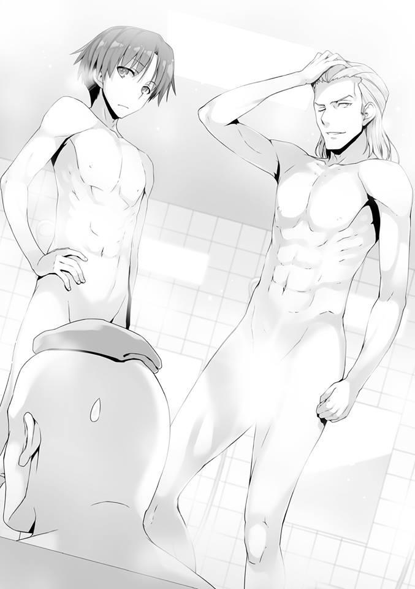
PARTE 4
En medio de la noche, me acosté en la cama de nuestra habitación compartida.
Es la una de la mañana, ya se han apagado las luces. Obviamente significa que todos están dormidos. Hay una razón por la que estoy despierto en un momento como éste en el que debería estar durmiendo para prepararme para lo que vendrá mañana. Esa razón está en el pequeño papel que tengo debajo de la almohada. El número “25” está escrito en él.
Es precisamente porque es tan simple que no deja mucho a la imaginación. Es un aviso que indica que son las 25:00 horas. No tengo la menor idea de quién lo dejó aquí, pero la razón por la que estoy despierto ahora es para averiguarlo.
Si esto es sólo una broma o algo que tiene un significado completamente diferente, entonces eso será el final de todo esto. Entonces podré usar este tiempo para relajarme y pensar dónde se encuentra la verdadera esencia de este examen especial.
Poco a poco estoy empezando a ver el panorama general detrás del contenido de este examen especial. Por supuesto, puesto que no obtuvimos exactamente una explicación detallada sobre cómo funciona la puntuación, esto va a implicar algunas conjeturas, pero hay varias cosas que este examen especial casi con toda seguridad implica.
“Zen”.
Por la forma en que actuaban antes de Zazen, parece que hasta nuestras posturas durante Zazen están siendo calificadas. Cosas como el comportamiento inapropiado o ser golpeado con un palo Zen son todas causas probables de un demérito.
“Carrera de relevos de larga distancia”.
Este probablemente va a tener un sistema de evaluación simple basado en el orden y el tiempo.
“Discurso”.
Cada persona en cada grupo grande debe dar un discurso de forma individual.
Los criterios de puntuación ya han sido revelados.
Son los siguientes cuatro: “Volumen”, “Postura”, “Tema” y “Comunicación”.
“Examen escrito”.
Espero que este sea un examen que se centre principalmente en el tema de la moral. Al igual que un examen común y corriente, éste también debe determinarse por lo buenas o malas que sean tus notas.
También hay otras cosas a tener en cuenta, como “limpiar” y “cocinar”, pero todavía no puedo sacar conclusiones al respecto. Los problemas que surgen dentro de un grupo que llega tarde están fuera de la jurisdicción del examen, pero dependiendo del contexto, también pueden ser parte de lo que se está evaluando.
Tal vez muchos estudiantes están preocupados por cómo aprobar este examen multifacético. Una estrategia necesaria que sólo se puede ver después de comprender la verdadera esencia del mismo.
Para unir adecuadamente al grupo, cubrirnos unos a otros y asegurar una calificación promedio alta. En otras palabras, el enfoque simple. Parece fácil pero con obstáculos considerablemente difíciles en su camino. Esto se puede deducir de la formación de los grupos. Es extremadamente difícil cooperar completamente con estudiantes con los que normalmente se tiene una relación antagónica.
Sería una estrategia que Horikita y Hirata de nuestra clase, o Ichinose y Katsuragi de las otras clases habrían elegido. Ser influyente en el grupo propio y poseer habilidades de liderazgo hace toda la diferencia.
Elegir miembros para su grupo es, por supuesto, importante. Pero en esta etapa, es casi imposible determinar qué estudiantes son capaces de rendir bien en un examen como éste.
Keisei, que sobresale académicamente, tuvo problemas con cinco minutos y dos series de Zazen en el primer día y hubo estudiantes que ni siquiera pudieron cruzar las piernas.
En esta etapa, no se puede usar la excelencia académica o atlética para medir nada y en el futuro van a ser los estudiantes con mayor adaptabilidad los que se destaquen.
Y definitivamente hay más de unos pocos estudiantes que optaron por otras estrategias. También me di cuenta desde el momento en que me explicaron las reglas de este examen que incluso la escuela tuvo dificultades para preparar este examen poco ortodoxo.
Este ha sido el caso desde nuestro primer examen especial en esa isla deshabitada, pero en cada caso siempre ha habido una laguna que se puede explotar en las reglas.
Porque siempre hay un punto ciego, como cuando Horikita e Ibuki se pelearon en la isla deshabitada a pesar de que cualquier tipo de violencia estaba prohibida. Por supuesto, si el juego sucio es expuesto entonces las consecuencias también son extremas. Ya que la expulsión inmediata está sobre la mesa, la mayoría de los estudiantes no harán su movimiento. En primer lugar, no es como si cometer juego sucio fuera una forma segura de ganar. Disparar con las pocas lagunas y puntos ciegos que tienes o no. Necesitarás superar ese difícil obstáculo.
He ejecutado varias estrategias en todos los exámenes especiales hasta ahora.
En la isla deshabitada, hice que Horikita se retirara y se cambiara de líder. En el crucero, hice el truco del teléfono. Hice un movimiento audaz durante el festival deportivo y durante el Paper Shuffle, paralizé a Kushida.
Pero esta vez, al principio decidí no hacer nada. Reuniría información y sólo desempeñaría el papel de observador. Esto se debe a que he considerado que este es un paso necesario si voy a desvanecerme y graduarme como un estudiante ordinario.
Aunque eso signifique que la Clase C sufrirá una enorme derrota ahora, no haré nada. En parte porque quiero mostrar a Sakayanagi y Nagumo, que han mostrado cierto interés en mí, que no tengo intención de luchar. Sin embargo, soy escéptico sobre la efectividad de dicha acción.
De esa forma, ya que estoy observando cuidadosamente, el mayor de los Horikita no tendría motivos para culparme a mí tampoco.
Sin embargo, si hay una acción que pueda tomar, esa sería la defensa. Si hay un estudiante que quiera expulsarme, es natural que reaccione en defensa propia. Ya son más de las 25:00. Parece que no ha pasado nada fuera de lo normal. Si es así, debería dormir. Pero justo cuando pensaba eso, la puerta que conectaba esta habitación con el pasillo exterior se abrió ligeramente y entró un poco de luz.
Es código Morse. Utilizar luces parpadeantes como forma de comunicación. En medio de la noche en el campo de entrenamiento, el pasillo estaba muy oscuro y por eso se habían colocado varias luces de linterna en nuestra habitación.
Con toda probabilidad, eso significa que tendré que traer una conmigo.
Comprendí que esto es una señal que me llama. La luz no hace ruido. Me levanté en silencio. Nuestra habitación no tiene baño. El acto de ir al baño en medio de la noche no es sospechoso.
PARTE 5
Salí de la habitación. El pasillo está cubierto de oscuridad, pero pude escuchar débiles pasos. Los seguí. La persona que sostenía la luz resultó ser Horikita Manabu.
— Pensar que tú serías el que iniciaría el contacto. ¿No es un poco notorio?
Para poner un aviso así en mi cama, tiene que saber dónde duermo. En ese caso, sólo hay una persona que me viene a la mente. Es Ishikura o Tsunoda, el estudiante de tercer año que Nagumo trajo con nosotros para jugar a las cartas el primer día.
Si le pregunta a alguno de ellos, sabrá qué cama estoy usando.
— No hay escasez de estudiantes que se reúnen en secreto en una noche como ésta. Porque al menos dos o tres estrategias están siendo implementadas para este examen especial.
Los de primer, segundo y tercer año utilizan los conocimientos que poseen para ganar. Pero aun así, no hay forma de que la gente que se encuentre de la forma en que nos estamos encontrando ahora sirva para algo bueno.
— ¿Sabes por qué te llamé a esta hora?
— Porque Nagumo está tramando algo. Esa es la única razón que se me ocurre.
— Es exactamente eso. Te llamé porque pensé que sabrías algo de eso ya que estás en el mismo grupo grande que él. Además, quería responder al correo que me enviaste en el autobús.
— Déjame decir esto de antemano. Estás equivocado. No hay señales de que Nagumo esté tramando nada.
Hay varias cosas de las que preocuparse en ese sentido, pero le mentí y le dije que aún no había comprendido nada. Nagumo había desafiado al mayor de los Horikita. Mientras ese desafío se desarrollara frente a un gran número de personas, la derrota de Nagumo fácilmente sería un mal ejemplo para el segundo año y en el futuro, él quedará en entredicho tanto por sus mayores como por sus menores. Si vas a luchar, debes hacerlo sólo después de estar absolutamente seguro de tu victoria. Pero no puedo sentir eso aquí. Como el mayor de los Horikita le había ordenado que peleara de manera justa, yo esperaba que se esforzara durante las clases y que nos dirigiera estrictamente, pero tampoco hay señales de que eso ocurra.
Eso debe haber preocupado a Horikita Manabu. Si no fuera así, no se habría arriesgado a llamarme aquí.
— Entonces, ¿estás diciendo que Nagumo va a hacer el examen sin intentar nada?
— No lo sé. No creo que sea posible lograr mucho sin involucrar a un tercero.
Incluso si uno no habla o no se duerme durante la clase, aunque nunca llegue tarde y aunque se asegure de mantenerse sano, no es así como eso haría que los resultados de sus exámenes subieran dramáticamente.
En el mejor de los casos, sólo estarían actuando para asegurarse de que uno no reciba ningún tipo de sanción.
— En este momento, he evaluado que nuestro grupo grande es el más unido.
El mayor de los Horikita hizo su análisis con calma. Desde luego, también tiene el grupo enfocado en la Clase A del primer año. Si realizan el examen en este estado, sus posibilidades de ganar son extremadamente altas.
Precisamente por eso está preocupado por Nagumo, que aún no ha dado un paso.
— ¿Cuáles son las posibilidades de que rompa su promesa? No importa la forma que adopte, puede que quiera dejar una mancha en ti.
— Nagumo ciertamente no tiene piedad de los que van en su contra. Y
también ha usado métodos sucios de una manera similar a la de Ryuuen en más de una ocasión. Y esa es la causa de la anormalmente alta tasa de deserción escolar en el segundo año. Sin embargo, ni una sola vez ha roto una promesa que ha hecho. Ni siquiera una vez.
— ¿Así que estás diciendo que va a mantener su palabra de no involucrar a un tercero en esto?
— Así es.
En lo que a eso se refiere, el Horikita mayor asintió sin dudarlo en absoluto.
Probablemente es una de esas cosas que él sabe precisamente porque han estado juntos en el consejo estudiantil durante dos años. Después de haber escuchado esas palabras de absoluta certeza, sentí dudas al principio. Pero entonces llegué a la respuesta para eso. Eso es algo que se aplica al Horikita mayor que tengo ante mí ahora mismo y probablemente a todos los estudiantes de segundo y tercer año también. Quizás pueda ofrecerle al Horikita mayor otro consejo.
Sin embargo, puede que no tenga mucho sentido. Porque ya ha determinado que sólo podrá protegerse de los ataques si toma las palabras de su enemigo en serio.
— Parece que esto ha sido una pérdida de tiempo.
Dándome la espalda, el mayor de los Horikita comenzó a caminar de regreso a su habitación.
— Se trata de esa cosa que has querido saber, pero... el consejo estudiantil puede influir en los exámenes especiales. Cosas como modificar las reglas y las sanciones. Porque se supone que representan el punto de vista de los estudiantes y sus opiniones. Pero no es que puedan hacer lo que quieran.
— Ya veo.
Después de responder a mi pregunta, el Horikita mayor se fue.
— Él podría perder.
Antes de darme cuenta, terminé murmurando eso. No, supongo que “perder” no es la mejor manera de decirlo. El Horikita mayor no cometerá ningún error.
Manejará bien su grupo y superará esto. No se equivocará.
Es sólo que... aun así, está claro que esto por sí solo no es todo lo que hay.
Empezando con este examen que inició el tercer semestre, un cambio importante podría estar cerca.
PRIMERA MITAD DE LA BATALLA DE LAS CHICAS - ICHINOSE HONAMI Y así de fácil, al tercer día, muchas cosas parecían haber sucedido en el lado de los chicos, pero yo, Ichinose Honami, no tenía forma de saber de esas circunstancias.
Permítanme volver al día en que comenzó el examen especial en la escuela al aire libre y empezar desde allí.
— Por ahora, ya hemos decidido cómo dividir a los grupos, así que vamos a llevarnos bien.
Antes de acostarme, se lo dije a los miembros de mi grupo.
Repetidamente a lo largo de altibajos, a medida que se repetían los eventos tormentosos y dramáticos, al menos por ahora mis compañeras con las que voy a enfrentarme a este examen ya han sido decididas.
Wang Mei-Yu-san, Shiina Hiyori-san, Yabu Nanami-san, Yamashita Saki-san, Kinoshita Minori-san, Nishino Takeko-san, Manabe Shiho-san, Nishi Haruka-san, Motodoi Chikako-san, Rokkaku Momoe-san y yo formamos un grupo.
Soy la única de la clase B, y también hay sólo una de la clase C, el resto son estudiantes de la clase A o de la clase D.
Las chicas llamadas Manabe-san y Nishino-san parecen ser chicas problemáticas incluso dentro de su clase. En resumen, se trata de una reunión de marginadas.
Porque cuando se trata de cosas como esta, las chicas pueden ser muy directas.
Mei-Yu-san y yo sólo somos estudiantes que nos trajeron para llenar el espacio sobrante en el grupo, por lo que no tenemos mucha conexión entre nosotras.
Necesito apresurarme y forjar una relación.
— Llevémonos bien, Ichinose-san.
— Igualmente, Shiina-san. Siempre he querido llevarme bien contigo.
— ¿Es eso cierto? Es un honor.
Pero en cuanto a la clase C... no, en cuanto a la clase D, la mayoría de sus estudiantes no se prestan realmente para una plática como esta.
Ya que Ryuuen-kun está detrás de ellas, llevarse bien con ellas realmente resultó ser imposible.
Bueno, todavía no está muy claro si realmente ha dimitido o no.
De cualquier manera, finalmente hemos hecho un grupo de chicas, así que me gustaría llevarme bien.
Lo único que tengo que evitar por encima de todo es que este grupo no llegue al mínimo y que ocurra una expulsión. En otras palabras, alguien que tiene que asumir la responsabilidad y hundir a alguien más junto con ella.
Aunque mi principal prioridad fueran mis camaradas de la clase B, ahora que hemos formado este grupo no puedo tener favoritos aquí.
Me dije eso a mí misma.
Wang Mei-Yu-san no participaba activamente. O para ser más precisos, sentía que era incapaz de hacerlo aunque quisiera participar.
Por supuesto, es fácil para mí simplemente acercarme a ella.
Pero este grupo está formado principalmente por chicas de las clases A y D.
Además, hay bastantes chicas con egos relativamente grandes.
Si empiezo a empujarlas sin cuidado, pueden empezar a sospechar de mí.
Por eso decidí esperar un rato.
Y si esas dos clases siguen sin tomar la iniciativa y no se ponen en contacto con Wang Mei-Yu para echarle una mano, entonces haré algo al respecto.
— Eres......... Wang Mei-Yu-san, ¿verdad?
— S-Sí.
Shiina-san se acercó a ella por un costado y gentilmente la llamó.
Ella es una persona extremadamente confiable que tomó la iniciativa y aceptó el papel de líder incluso para un grupo como éste.
Esta vez, no me postulé para el papel de líder.
En parte porque Shiina levantó la mano de inmediato, pero también porque no creía que pudiéramos conseguir el primer puesto teniendo en cuenta a nuestros miembros.
— Esto es muy angustioso, ¿no es así? Estar rodeada de gente desconocida.
— Umm, ummmm, eso no es realmente...
— Es comprensible que te confundas si de repente te dicen que te lleves bien o que derribes paredes.
— Sí, sí. Es exactamente lo que dice Shiina-san.
Las paredes que existen entre los extraños y los amigos no son algo que se pueda derribar con sólo querer hacerlo.
Son algo que ya se ha superado con el tiempo.
Si sigues pensando demasiado, perderás de vista tu rumbo y caerás.
— Hola, Ichinose-san. ¿Has tenido novio antes?
Una chica de la clase A me hizo esa pregunta.
— No....vergonzosamente no tengo ninguna experiencia cuando se trata de amor.
— Ya veo. Aunque parezca que eres súper popular, ¿podría ser que eres del tipo muy exigente?
— No creo que lo sea.... pero no lo sé.
— Muy bien, ¿hay algún chico en el que estés interesada ahora mismo?
— ¿Eeeeeeeeeehhhhhhhhhh~?
De repente, cuando me preguntaron algo así, no pude evitar el pánico.
— Sabes, hay rumores de que te han visto a solas con Nagumo-senpai, bastante a menudo también...
Es verdad que desde que me uní al consejo estudiantil, he estado actuando mucho junto al presidente Nagumo.
No esperaba que fuera a tal punto que aparecieran rumores como este.
— Antes de entrar en detalles sobre si me gusta o si lo odio, no pienso en el presidente del consejo estudiantil de la manera en que lo estás diciendo.
— De ninguna manera eso es verdad, ¿cierto?
— Sí, sí. Si es Ichinose-san, no sería extraño que salieras con Nagumo-senpai.
— De cualquier manera, no hay nadie que me guste ahora mismo, creo...
— ¿Con “ahora” quieres decir que te gustaba alguien?
Todas las chicas se alborotaron al mismo tiempo.
Este es un tema peligroso si no se tienen las palabras para ello.
— Ese no es el caso... Umm, ciertamente había un senpai que solía admirar pero antes de que pudiera verle como un miembro del sexo opuesto, terminó graduándose....
Lo negué desesperadamente, pero las chicas se miraron entre sí antes de reírse.
— ¿Qué? ¿Qué? ¿Dije algo extraño?
— No. Es sólo que, cómo decirlo, estás respondiendo a todo tan seriamente.
— Ichinose-san, eres demasiado honesta. Puedes olvidarte de todo lo que no quieras responder, ¿de acuerdo?
— Ahh, ¿significa esto que esquivaste esa pregunta hace un rato, Chikako-chan?
— Ugh.
Y con eso, la reunión nocturna de sólo chicas se volvió muy animada una vez más. Cómo decirlo, es un estado de ánimo que podría mantenerte sin parar y sin pestañear de sueño.
— Ni siquiera yo responderé lo que no puedo responder, ¿de acuerdo?
— Muy bien, ¿cuántas veces se te han confesado hasta ahora?
— ¿Ehh? Umm, 3 veces..........ahh, si incluyo la primaria entonces serían 4
veces, supongo. Y si incluyes ese caso, serían 5 veces.
— ¿Ves? ¡Estás respondiendo!
— ¡Nyaa---!
No soy muy buena hablando del amor. Es porque no estoy familiarizada con eso que me equivoco.
— ¿Podría ser que Ichinose-san es el tipo de persona que no dice mentiras?
— Puede ser...
Hasta con eso, las chicas armaron un escándalo. Pero probablemente sea mejor que lo niegue.
— Eso no es verdad. De verdad.
— ¿Ehh---?
— Por ejemplo, cuando se trata del examen especial, ¿no necesitaría hacer una apuesta una o dos veces? Puedo tratar de desorientar o mentir en un momento así.
— Entonces te parece bien decir mentiras.
— ....Hmm. Eso tampoco es del todo cierto, supongo. Creo que todos son iguales, nadie quiere decir mentiras. Por eso, en la medida de lo posible, trato de evitar decir mentiras, supongo que sería lo más exacto. No, supongo que eso tampoco está bien. Soy muy mala mintiendo con la intención de herir a la gente, ¿creo?
— ¿No es eso extraño? ¿No dirías mentiras normalmente para no herir a la gente?
— Así es. Creo que las mentiras que se dicen para evitar herir a la gente son definitivamente gentiles.
Pero.... ese no es el caso cuando se trata de mí. Eso es verdad. Esta es una terrible experiencia que he preparado para mí y sólo para mí.
— Una mentira destinada a evitar herir a la gente sólo retrasará lo inevitable, así es como debo decirlo.
De esa mentira, van a surgir más y más cosas malas, eso es lo que creo.
No quiero volver a pasar por eso. Esos días dolorosos. Esa época cruel.
COSAS OMNIPRESENTES
El domingo pasó en un abrir y cerrar de ojos y finalmente es lunes, el quinto día del examen. Las cuatro horas de clases de la mañana están dedicadas al ejercicio físico. Tenemos que caminar y correr 18 kilómetros en total a lo largo del recorrido que se va a utilizar para la carrera de relevos de larga distancia y terminar a tiempo para las lecciones de la tarde. El examen de relevos de larga distancia no es tan largo, ya que cada estudiante sólo correrá una distancia de uno o dos kilómetros, pero es un camino sinuoso de montaña. Seguimos caminando unos cinco kilómetros, agotándonos. Hasta hace poco, sólo habíamos sudado un poco, pero la diferencia es asombrosa.
— ¿Hasta dónde llega esta pendiente? ¿No es ridículo? Es demasiado difícil.
Más allá de una señal que nos advertía de jabalíes, Ishizaki continuaba escupiendo estas palabras.
— Hablando de jabalíes, ¿son grandes? Como este tipo de aquí.
Diciendo eso, volvió sus ojos desagradablemente hacia mí.
— Eso fue increíble. Te juzgué mal, Ayanokouji.
Hashimoto, seguido de otras personas, me felicitó. Pero si me preguntas, esto es incómodo.
Me sentí preocupado, pensando que este tema sería usado para jugar conmigo por un tiempo. Albert llegó hasta el punto juntar sus manos aplaudiendo ligeramente. Pero muy pronto, el tiempo de las bromas terminó. El sinuoso camino a la cima, aunque pavimentado para permitir el acceso de los coches, tiene una pendiente extrema. Es hasta el punto en el que el sólo hecho de caminar hacia arriba nos causa tensión en las piernas.
Además, como también nos levantamos temprano para preparar el desayuno, estamos perdiendo más energía que los estudiantes mayores. El descanso del domingo es porque la escuela está siendo considerada.
— ¿Cuánto tiempo va a llevar volver....?
— La velocidad media de una persona es de unos cuatro kilómetros. La distancia total es de dieciocho kilómetros, así que si vamos a caminar todo el tiempo, nos llevará unas cuatro horas y media.
— Tienes que estar bromeando. Si es así, ni siquiera tendremos tiempo de almorzar.
— Entonces eso significa que tenemos que correr, Ishizaki. Cuanto más corramos, menos tiempo nos llevará.
Moriyama de la clase B lo dijo claramente. De hecho, empezamos como parte de nuestro grupo grande, pero la mayoría de los alumnos de segundo y tercer año avanzan a un ritmo más rápido.
— No seas ridículo. Como si pudiera correr 18 kilómetros.
— No se cansen por hablar.......están todos aquí porque están de acuerdo con mi estrategia, ¿verdad?
Mientras jadea pesadamente, Keisei advierte a Ishizaki y a los demás. Los estudiantes que no tienen problemas con su resistencia y las carreras de larga distancia podrían haber empezado a correr desde el principio, pero correr 18
kilómetros ciertamente no es la mejor de las ideas.
La estrategia de Keisei es que caminemos los primeros nueve kilómetros y luego lleguemos al punto de regreso y comencemos a correr. El hecho de que iríamos cuesta abajo si retrocediéramos también es algo que tuvo en cuenta cuando propuso eso.
— Ni siquiera hemos empezado a correr. Como si fuéramos capaces de aguantar hasta el punto de regreso.
— Cállate... sólo cállate y camina.
Keisei, que nunca ha sido bueno en el ejercicio físico, parece que ya ha sufrido algunos daños en las piernas, ya que claramente está perdiendo la calma. No es que nos sea imposible recorrer los 13 kilómetros restantes dentro del tiempo establecido para nosotros. Es la forma natural de actuar para mantener la conversación al mínimo y concentrarse en caminar.
Aun así, gracias a esta lección siento que estoy empezando a ver quiénes son los atletas. No hay duda de que Yahiko y Keisei, ambos sufriendo en este momento, no son adecuados para ello.
Siento que Kouenji, que camina detrás de nosotros, sería de fiar, pero dudo mucho que corra en serio.
— ¿Callarme y que camine? Suenas muy arrogante para alguien que está sin aliento, Yukimura.
Parece que Ishizaki va a seguir adelante. No creo que podamos dejar de hablar pronto.
— Como líder, lo digo pensando en el grupo... por favor, no hables.
— ¿Cómo líder? No me jodas.
Quizás la razón por la que Ishizaki está atacando a Keisei sin fin ahora mismo, es porque está bajo una cantidad excesiva de presión.
Los estudiantes que ya no pudieron dejar pasar esto, Moriyama y Tokitou, dieron a conocer su disgusto a Ishizaki.
— Ya basta, Ishizaki. Yukimura tiene razón esta vez.
Al sentir que la señal detrás de nosotros se distanciaba, miré hacia atrás. Y
cuando lo hice, me di cuenta de que Kouenji había abandonado el camino y se había adentrado en el bosque. Los otros estudiantes no parecen haberse dado cuenta, sólo miran hacia adelante y caminan hacia adelante.
Ishizaki no es el único chico problemático que tenemos. Esto seguramente no es un mero desvío. Ya no podía verlo y no hay señales de que vuelva en un futuro cercano.
— No hay forma de evitarlo...
Pensé en perseguir tranquilamente a Kouenji, pero al final pensarán que yo también dejé el camino.
— Kouenji se metió en ese estrecho sendero de ahí atrás. Iré y lo traeré de vuelta.
— ¿Ahh? ¿Qué demonios está haciendo ese chiflado?
Como no hay muchos estudiantes capaces de detener a Ishizaki, parece que se está volviendo cada vez más ruidoso.
— No te distraigas demasiado con eso, Ishizaki. Serás tú quien pierda si no tratas a Kouenji como algo que no está ahí.
La estrategia de Keisei es tratar a Kouenji como una presencia invisible. Aun así, será difícil ignorarlo por completo. Mientras surgían problemas por doquier, Keisei se disculpó.
— ....Lo siento, Kiyotaka. Te dejaré esto a ti.
Podía ver que Keisei ya no tiene la energía para dar marcha atrás e ir a buscar a Kouenji. Le contesté inmediatamente.
— Si es Kouenji, ¿no será un problema para ti? ¿Quieres que te ayude?
Ofreció Hashimoto. Pero educadamente lo rechacé.
— Puede que no podamos traerlo de vuelta, no importa cuántos de nosotros estemos allí. En ese caso, mantener al mayor número posible de personas en la ruta daría una buena impresión a la escuela. Tampoco parece que esté perdido.
— Ya veo. Tal vez sea así. Es mejor que vuelvas en el momento en que sientas que no podrás traerlo contigo.
Asentí al consejo de Hashimoto y decidí seguir a Kouenji.
No pensaba hacer un movimiento de forma activa, pero también está el hecho de que no es precisamente fácil tener la oportunidad de estar a solas con Kouenji. Si voy a tener una charla con él, este es el único lugar donde puedo hacerlo.
PARTE 1
El estrecho camino, lejos de estar pavimentado, no es más que un camino de tierra. A pesar del terrible relieve, aceleré mi ritmo. Si Kouenji también va a pie, creo que puedo alcanzarlo en uno o dos minutos.
Sin embargo, parece que también ha acelerado su ritmo, ya que no hay señales de él.
— Qué problemático...
Una cosa es que él acelere su ritmo por su propia cuenta, pero es problemático si lo hace en un camino sin pistas como éste.
Mientras buscaba cualquier rastro que Kouenji pudiera haber dejado atrás, aumenté mi ritmo aún más. Y después de otros 100 metros, vi la espalda de Kouenji. Mirando su espalda, recordé cómo una situación similar se desarrolló en la isla deshabitada.
Por supuesto, Airi había estado conmigo entonces y Kouenji terminó dejándonos a un lado.
— Kouenji.
Lo llamé y cerré la distancia entre nosotros como si lo estuviera apresurando.
— Vaya, pero si es Ayanokouji Boy. No creo que esta sea la ruta correcta.
— Después de todo, aún queda la cuestión de la responsabilidad conjunta.
¿Por qué decidiste tomar un desvío como éste?
— He visto un jabalí. Eso me llamó la atención y por eso lo perseguí.
Esa es la razón más inesperada. Decidí no preguntarle qué pretendía hacer con él si lo encontraba.
— Puedes relajarte. Con el tiempo, volveré. Si soy yo, ni siquiera me llevará 30 minutos.
Parece que voy a tener que creer en su palabra.
— Por cierto, ¿todavía tienes algún asunto conmigo?
Dijo Kouenji.
Tal vez se ha dado cuenta de que todavía no he dicho lo que tenía que decir ya que no me he marchado todavía.
— Es sobre el día del examen. Quiero que le eches una mano al grupo.
— Eso es algo que estoy harto de escuchar.
Sin duda Keisei y los demás han estado intentando persuadirle también si que me diera cuenta. Aun así, Kouenji seguramente no cedió ni un centímetro.
— No tienes que conseguir resultados espectaculares. Sólo hazlo normalmente.
— No tienes que decidir eso. Lo hago. Lo sabes, ¿verdad? Entonces, si me disculpas.
Kouenji dijo eso y se fue, pero le cogí del brazo y lo detuve. Como intentó dar un paso adelante sin admitirlo, no tuve más remedio que intensificar mi juego y mantenerme firme.
Esperaba que se resistiera con más fuerza, pero por alguna razón, Kouenji se relajó.
— Fufufufu. Ya veo. Así que así son las cosas, Ayanokouji Boy.
Kouenji, con su brazo aún en mis manos, se rió en silencio.
— ¿Qué quieres decir con “así son las cosas”?
— Hablo de la identidad de la persona que domesticó a Dragon Boy.
— Dragon...... ¿de qué estás hablando?
— Estoy hablando del chico travieso llamado Ryuuen.
— ¿Qué tengo que ver con ese tal Ryuuen?
— Parece que eres muy bueno haciéndote el tonto. No dejas que nada se te escape cuando finges indiferencia.
— No sé cómo llegaste a esa conclusión.
— Ahora mismo, me estás tocando el brazo de esta manera. Lo sé por el calor transmitido por este contacto.
Me imaginaba que estaba lejos de ser normal, pero parece que Kouenji es aún más raro que yo. Así que me está diciendo que el agarre que tengo en su brazo es lo que lo llevó a esa conclusión, ¿eh?
— Lo siento, pero esto es un gran malentendido.
— ¿En serio? Por la forma en que Delincuente-Kun te ha estado mirando, actuando hacia ti y la forma en que su entorno reacciona ante eso, creo que esto es un hecho fuera de toda duda.
Kouenji no tiene pruebas sólidas, pero parece tener una confianza abrumadora en sus observaciones. Más ardides probablemente no ayuden.
— Fufu. Puedes relajarte. No tengo intención de revelar lo que intentas mantener en secreto. Incluso si eres “relativamente talentoso”, sigues siendo una existencia infantil en lo que a mí respecta. Sólo uno entre muchos. En otras palabras, si esto es verdad o mentira, no importará mientras no hable de ello, ¿verdad?
— Quiero aclarar este malentendido, pero ¿qué podría lograr?
— Es desafortunado, pero tendrás que renunciar a eso. Incluso si varios otros responden por ti, diciéndome que Ayanokouji Boy no tuvo nada que ver, esta respuesta no cambiará mientras yo esté seguro de ello.
— Ya veo........entonces, ¿volvemos al tema?
— Supongo que se trata de intentar que trabaje como parte del grupo.
— ¿Aceptarás?
— Ya lo he dicho una y otra vez y me niego.
Su respuesta no cambió. Lo dijo con decisión.
— Actuaré como me plazca. Esa es mi filosofía. Si tomo este examen o no, o cuál será mi calificación. Todo esto dependerá de mi estado de ánimo en ese momento.
— ...Ya veo.
Había considerado varios medios de persuasión, pero intentarlos con torpeza podría ser contraproducente para mí. Tendré que dejar esto al azar. Pero en última instancia, hay una alta posibilidad de que esto pueda llevar a que se sufra la mínima cantidad de daños.
Está claro que Kouenji quiere evitar el castigo conocido como expulsión. Tendré que apostar por eso. Todo lo que pude hacer fue despedirme de Kouenji cuando se fue a cazar el jabalí.
— Parece que nadie puede manipular a ese hombre.
No importa si es el mayor de los Horikita o Nagumo o sus camaradas.
Esa es mi honesta opinión del compañero de clase con el que he pasado aproximadamente un año.
PARTE 2
Dejando a Kouenji en el bosque, volví a la ruta. Sólo he estado fuera menos de 10 minutos, pero seguro que ahora estamos en el último lugar. No vi a ningún estudiante de mi grupo ni delante ni detrás de mí, así que decidí adelantarme y perseguirlos. Después de un rato, vi a Keisei y a los otros caminando. Tokitou se fijó en mí primero y después el resto se volteó para mirarme.
— Para que conste, lo encontré, pero...
— Como pensaba, no funcionó, ¿verdad?
Hashimoto, que predijo que esto pasaría, sonrió amargamente. Los otros estudiantes tampoco me culparon, sino que se quejaron de la ausencia de Kouenji. Mientras insultábamos a Kouenji durante todo el camino, nos las arreglamos para llegar al punto de regreso en el que Chabashira-sensei nos esperaba con los brazos cruzados. No la he visto en unos días, parece que ha ayudado con varias lecciones en forma regular.
— El segundo y el tercer año han regresado. Ahora es su turno.
— ¿Qué hora es, sensei?
— Aproximadamente a las once.
Esto significa que aún nos queda una hora para el descanso de la tarde.
Si este hubiera sido un camino plano y uniforme, no habría sido difícil.
Tendríamos mucho tiempo de sobra. Pero este es un camino sinuoso de nueve kilómetros de largo con una pendiente abrupta y empinada. Nos agotaremos bastante.
Si no corremos al ritmo adecuado, esto nos va a quitar un poco de tiempo del almuerzo.
— Voy a seguir adelante. No quiero llegar tarde a mi almuerzo.
— Espera. Ya hemos decidido que tiene que haber un pase de lista antes de que lo hagas. Cada persona dice su clase y nombre.
Se sacó una tabla. Los estudiantes que han llegado con éxito al punto de regreso serán registrados en ella. Una vez hecho esto, Ishizaki abandonó el grupo y corrió.
Parece que esto va a ser cada hombre por su cuenta en lugar de un esfuerzo de grupo. Albert también lo siguió.
— Vamos, Kiyotaka.
— Por favor, continúa. Me gustaría esperar y ver si Kouenji regresa o no.
— Está bien, pero.... sólo tenemos una hora, ¿sabes?
— Estoy seguro de que soy lo suficientemente rápido. Todo saldrá bien.
— Correr distancias cortas y largas son dos cosas diferentes, ¿sabes?...
bueno, supongo que no me corresponde a mí decirlo.
Riéndose burlonamente de sí mismo, Keisei empezó a correr torpemente.
— Entonces voy a seguir adelante.
— Claro.
El último que quedaba, Hashimoto, se estiró y también corrió. Chabashira-sensei y yo somos los únicos que quedamos aquí ahora.
— Supongo que no tienes algo que quieras discutir conmigo.
— Sólo estoy esperando a Kouenji. Y además, será problemático si no me voy pronto porque ya soy el último de la fila.
— ¿Problemático, dices?
No es gran cosa. Si un estudiante tan en forma como Ishizaki se adelanta y termina, los estudiantes que parecen retirarse a mitad de camino ni siquiera lo notarán. No estamos siendo cronometrados. Sólo tenemos que terminarlo en el tiempo que se nos ha asignado. No importa si terminamos esto en una hora o en cuatro horas, seguiremos siendo evaluados de la misma manera.
Keisei no es la persona más apta, pero se presiona para no ser una carga. Y
luego, unos 20 minutos después, ese hombre regresó.
— Esto parece el punto de regreso.
Tiene hojas y suciedad pegada a su camiseta. Evidencia de que se ha estado moviendo bastante.
— Eres el último, Kouenji. Te quedan 40 minutos.
— Ese parece ser el caso. Debería haberme tomado mi tiempo, pero mi encuentro con el jabalí terminó antes de lo que esperaba.
— ¿Jabalí?
Chabashira-sensei cuestionó esa repentina y absurda palabra, pero Kouenji rápidamente se dio la vuelta y corrió.
— Kouenji. Pase de lista. De lo contrario serás descalificado.
Cuando Chabashira-sensei le llamó, Kouenji se nombró sin mirar atrás.
— Mi nombre es Kouenji Rokusuke. No lo olvide, Maestra.
Una risa majestuosa resuena por las colinas.
— ¿Está de acuerdo con eso, sensei? Sin embargo, no dijo nada sobre su clase.
— Ya que se ha nombrado, pasemos por alto el resto.
— Entonces yo también volveré.
Ya que me fui muy tarde, me pregunto cuánto tiempo ha pasado.
Vi el letrero que nos advertía de los jabalíes de nuevo y alrededor de ese punto, vi las espaldas de dos estudiantes varones. Uno de ellos es Keisei, que está dentro del rango de las expectativas.
En lugar de haberse agotado más allá de sus límites, está caminando mientras se agarra al estudiante a su lado, con su pierna izquierda aparentemente adolorida.
Y el otro es Hashimoto, a quien esperaba que hubiera superado ya a Keisei.
Cuando corrí hacia ellos, la situación se hizo evidente.
— ¿Te torciste?
— Ayanokouji, ¿eh? Sí, eso parece. El punto de regreso fue el límite para sus piernas.
Explicó Hashimoto en lugar de Keisei.
Debe ser una carga para él tener que sostener a otra persona, pero no mostró ninguna señal de que le importara. Caminaba despacio mientras lo apoyaba sin ningún disgusto.
— Esto es patético... ¿por qué no puedo hacer algo como esto...?
Parece frustrado, pero ya está pensando de forma diferente al viejo Keisei.
Pensé que le resultaba difícil entender los deportes y otros exámenes diversos, ya que creía que lo académico era el objetivo de un estudiante.
Parece que su razón para hacer estiramientos y correr el último es la misma que la mía.
— Yo también ayudaré.
Dos es mejor que uno. Fui al lado opuesto de Hashimoto y apoyé a Keisei.
— ...Por favor, espera. Si haces algo así, los dos llegarán tarde al almuerzo.
— Si te dejamos solo, correrás imprudentemente, ¿no? Te lastimarás las piernas aún más y eso es un problema para el resto de nosotros en este examen. Si podemos reducir la magnitud de tu lesión perdiendo un almuerzo, entonces es un precio barato de pagar, ¿no es así, Ayanokouji?
— Así es, puede ser verdad.
— Pero...
— Es una coincidencia que los dos nos hayamos quedado atrás, así que no te contengas.
Después de decir eso, Hashimoto corrigió algo.
— Mejor dicho, tres. Ese Kouenji también está descendiendo muy rápido. Ese tipo es un monstruo.
— Tengo la imagen de que tiene una fuerza física ilimitada. Sin duda es el número uno en nuestro año escolar.
No es como si le estuviera halagando. Sólo estoy hablando honestamente del potencial de Kouenji.
— Tal vez nuestra Clase A se salvó de Kouenji por su terrible actitud. En lugar de ser útil, este examen me ha dejado claro que es un obstáculo para la clase C.
Sin duda, si Kouenji utiliza su potencial al máximo, sería una amenaza. No puedo decir si es bueno contarlo como arma secreta o no si no podemos hacer uso de él.
Finalmente, trajimos al herido Keisei de vuelta a la escuela al aire libre alrededor de las 12:40. Después de eso, Keisei recibió tratamiento en la enfermería.
Hashimoto y yo esperamos en el pasillo. Después de unos 10 minutos, Keisei regresó.
— ¿Cómo te fue?
Mientras Hashimoto le preguntaba eso, Keisei sonrió amargamente y contestó.
— Es sólo un ligero esguince. No fue gran cosa, gracias a que ustedes dos me ayudaron.
Por lo visto, está compensando un poco su pierna izquierda, pero parece que puede caminar normalmente.
— No queda mucho tiempo para el examen. Hay que tener cuidado de no dejar que empeore.
Hashimoto dijo eso y golpeó ligeramente a Keisei en el hombro.
— Sé que me ayudaste y todo pero...
Después de oír eso, Hashimoto recibió inmediatamente el mensaje.
— No te preocupes por eso. Lo mantendré en secreto. Eso es más conveniente para ti, ¿verdad?
Hashimoto parece haber entendido incluso sin tener que escuchar lo que tenía que decir y por eso Keisei se dio una palmadita en el pecho.
PARTE 3
Como me perdí el almuerzo, estaba más entusiasmado que de costumbre con la cena de hoy. Después de conseguir mi asiento, inmediatamente comencé a comer.
— Kiyopon, ¿está libre el asiento de al lado?
Escuché la voz de Haruka. Cuando me giré para mirar, todos los miembros del Grupo Ayanokouji se habían reunido.
— Por Dios, Kiyopon ha sido difícil de encontrar estos últimos días.
— ...Lo siento. Realmente no sabía qué hacer en una cafetería tan espaciosa.
Como se supone que todos debemos actuar juntos en grupos, debe haber sido difícil reunir a los miembros habituales del Grupo. Como no hay suficientes asientos donde estoy sentado, me cambié a un lugar que podría acomodarnos a los cinco.
— Ha pasado un tiempo, Kiyotaka-kun.
Dijo Airi tímidamente. Ciertamente es inusual que no nos hablemos en absoluto durante una semana. Porque incluso durante las largas vacaciones, nos llamábamos o nos reuníamos.
— Lo más importante, ¿está Miyachi bien? Estás con Ryuuen-kun, ¿verdad?
Haruka interrogó a Akito sobre eso. Tal vez ella también oyó hablar de él en alguna parte.
— Bueno, de alguna manera, supongo. Mantengo la guardia a su alrededor, pero en realidad no parece muy diferente de lo habitual. Incluso está tomando nuestras lecciones muy en serio.
— ¿Incluso durante Zazen y el relevo de larga distancia?
— Sí. Es tan normal que casi da miedo. Al contrario, aguanta mucho mejor que los más torpes. Es sólo que intenté hablar con él unas cuantas veces, pero no me pareció que quisiera convivir con nadie.
— ¿Quizás el shock de perder una pelea lo volvió loco?
— No estoy seguro de eso. No es realmente el tipo de persona que viva en el pasado.
Akito se sujetó, como diciendo que no podía permitirse bajar la guardia.
— Más importante, ¿qué hay de ti? ¿Te llevas bien con las demás?
— ¿Yo? No me pasa nada. No soy muy cercana a nadie y tampoco me peleo con nadie. Airi y yo estamos en el mismo grupo, así que me parece bien.
— Me alegro de que Haruka-chan esté ahí para mí.
Aparentemente las dos están en el mismo grupo. Debe ser muy tranquilizador tener una amiga íntima contigo.
— Parece que nuestro grupo es el mayor problema, Kiyotaka.
— Tal vez sí.
— Ehh, ¿en serio?
Haruka y Airi se miraron como si dijeran que no habían oído ningún rumor en particular.
— Está Kouenji, que no escucha a nadie, e Ishizaki, que ataca a casi todo el mundo. Tampoco podemos controlarlo. Tal vez porque Albert está ahí con él. Realmente son una molestia.
— Así que Kouenji-kun está contigo también... ¿estás bien, Kiyotaka-kun?
— No es exactamente tan dañino.
— En todo caso, Ishizaki es el problema, ¿verdad? ¿Quizás está actuando con fuerza porque Ryuuen-kun fue derrotado? Hasta hace poco, no era más que un lacayo.
En cuanto a Ishizaki, siento que el hecho de que esté en el mismo grupo que yo es la causa principal de ello. Sintiendo ira y frustración sin ninguna salida, puede estar desquitándose con cualquiera que no sea yo.
— En cualquier caso, yo también tengo que trabajar duro como líder...
Keisei, con una bomba atada a él, está intentando desesperadamente unir al grupo de alguna manera.
— Ustedes también lo tienen difícil.
— Siento que somos nosotras las que estamos fuera de lugar.
— ¿No está bien eso? Si a ustedes les va bien, eso también nos tranquiliza.
¿Verdad?
Lo que dice Akito es correcto.
Aunque estoy recibiendo información de Kei, todavía hay partes de la situación de las chicas que no puedo vislumbrar. Si Haruka y Airi están en el mismo grupo, avanzando constantemente sin ningún problema, entonces eso significa que podemos permitirnos centrarnos más en nosotros mismos.
PARTE 4
Por fin es martes, el sexto día de nuestro campamento de entrenamiento. Y así, empecé a escuchar algunas quejas bastante extrañas de los chicos. Que están empezando a extrañar a las chicas. Quejas como esa. De alguna manera, siento que el número de chicos que esperan con ansias la cena ha aumentado.
Estar rodeado de hombres como tú es ciertamente relajante, pero no es exactamente encantador.
— Ahh, mierda. Siento que estoy empezando a perder la cabeza rodeado de chicos.
— Ya estaría muerto si esto fuera una escuela de chicos.
Esta opinión fue expresada por igual por todos los miembros del grupo.
— De todos modos, está empezando a apestar con sólo hombres alrededor.
Es inevitable que con el tiempo, él obtenga la imagen de que somos un grupo muy sudoroso. Pero la verdad es que no hay muchos estudiantes que estén sudando. Estoy agradecido de que no sea verano.
Pero personalmente, me siento bastante a gusto estando con los chicos. Vale la pena repetirlo ya que es importante.
— Ahh, mis caderas...
Mientras estábamos en medio de la limpieza, Keisei chilló y se agachó en ese mismo instante. Todos los días, sin importar las lecciones que se impartan, debemos limpiar y preparar el desayuno.
Los estudiantes que no están en buena forma están llegando a su límite. Keisei, que ha admitido no tener mucha confianza en sus capacidades físicas, se queja del dolor. El área que vamos a limpiar es grande y por lo tanto nuestro grupo, que ya es pequeño, debe trabajar más duro que los demás, ya que incluso perder a un hombre nos haría daño.
— ¿Qué quieres decir con que te duelen las caderas? Hazlo bien.
Ishizaki se acercó a Keisei y le tiró a la fuerza del brazo.
— Yo... yo lo sé. Lo haré bien, así que, por favor, suéltame.
— Entonces hazlo bien.
Ishizaki escupió eso y volvió a su propio trabajo.
Keisei inmediatamente intentó volver a limpiar, pero su cuerpo no se movía correctamente. En particular, estaba claro que no puede mover demasiado bien la pierna que se torció.
— Kuu.
Keisei gimió en voz baja. Parece que está soportando el dolor, pero si se presiona demasiado, tendrá un efecto mañana.
— Tómate un descanso, yo puedo tomar tu lugar.
Como no hay nada que hacer, decidí limpiar el lugar que Keisei limpiaba.
— Lo siento, Kiyotaka.
— Nos ayudamos cuando uno está en problemas.
Y esto debería resolver el problema. Sin embargo...
— Acabas de decir que lo harías tú mismo, ¿no?
Puede que no le gustara que yo le echara una mano, Ishizaki interrumpió de esa manera. Pero sin hacer contacto visual conmigo.
— Puedo manejarlo.
Le contesté. Pero Ishizaki no parece estar satisfecho con esa respuesta. Sigue hablando duramente hacia Keisei mientras me ignora decididamente.
— Tú eres el líder, ¿no? No te quejes de algo como limpiar.
— ... Ya lo sé.
Keisei se siente responsable. Es inevitable que responda así cuando lo presionan.
— No lo entiendes. Ahora mismo estás tratando de imponérselo a alguien más. No me gusta que estés haciendo eso. Di que lo harás tú mismo.
— ... Lo entiendo. Yo lo haré.
— De eso es de lo que estoy hablando. Hagas lo que hagas, no le eches una mano, Ayanokouji.
Ishizaki me habló por primera vez. Y luego se distanció inmediatamente de mí como si estuviera escapando.
— ¿Incluso si eso significa que Keisei se hará daño en el proceso?
— Si se lesiona lo suficiente como para no poder seguir, se acabó.
Por lo visto, Ishizaki no reconocerá ningún intento de ayudar a Keisei aunque sea a expensas del grupo.
Albert se acercó en silencio a Ishizaki y trató de decir algo, pero no parece que esté dispuesto a escuchar.
— Lo siento, Kiyotaka. Parece que tendré que aguantar.
Puede ser porque pensó que el estado de ánimo del grupo empeoraría si no lo hacía. En los últimos días, Ishizaki no ha estado muy contento con la actitud de Keisei.
Quizás no podía dejar pasar el hecho de que Keisei viniese aquí solo para confiar en alguien más. Y Keisei también lo entendió, por lo que se tomó muy en serio la advertencia y decidió hacerlo él mismo.
Sin embargo, presionarse demasiado puede tener consecuencias más adelante.
Incluso si aguanta por hoy, no hay forma de saber qué pasará mañana. El examen incluye evaluaciones físicamente exigentes como Zazen y el relevo de larga distancia.
Cuando llegue ese momento, puede que sufra aún más de lo que está sufriendo ahora. Me gustaría informar a Ishizaki de eso de alguna manera, pero no parece que vaya a ser tan sencillo.
— Oye, Ishizaki. Eso es ir demasiado lejos.
Yahiko, habiendo visto la situación, reprendió a Ishizaki.
— Es su culpa por no poder limpiar bien, ¿no?
— Ya lo sé. Pero en ese caso, ¿qué pasa con él? Ve a advertirle a él también.
Yahiko dijo eso y señaló a Kouenji, que aún no había mostrado ningún signo de que estuviera limpiando desde el primer día.
— No puedo comunicarme con ese tipo en japonés. No tengo tiempo para persuadir a un gorila.
No es que ni siquiera le haya advertido una vez, ya que Ishizaki ya le ha advertido a Kouenji muchas veces. A pesar de todo eso, no muestra señales de hacer algo, así que Ishizaki se rindió.
En ese sentido, la diferencia entre Keisei y Kouenji es que puedes comunicarte con uno de ellos.
— Si tienes un problema con eso, entonces ve y convéncelo tú mismo. Pero será una pérdida de tiempo.
— Está... bien, sólo tengo que intentarlo, ¿verdad?
Yahiko cogió una escoba cercana y caminó hacia Kouenji.
— No tiene sentido. Sólo espera y verás.
Ishizaki se rió con burla. Yahiko empujó la escoba hacia Kouenji e intentó convencerle de que limpiara también. Pero después de unos minutos de hacerlo, huyó mientras parecía completamente exhausto.
Aunque llevamos unos días en el mismo grupo, al final seguimos siendo enemigos. No hay forma de que salga bien. La mayor parte de los estudiantes quieren disolver este grupo lo antes posible. Sin embargo, lo importante aquí es que no todos los grupos son como el nuestro. Aunque sólo sea superficial, también es cierto que hay grupos que están profundizando los lazos entre ellos hasta el punto de que son casi como verdaderos compañeros de clase.
Esto no se limita al primer año, sino que se puede observar el mismo fenómeno en los estudiantes mayores que han estabilizado las relaciones entre sus clases.
Es porque todos entienden que colaborar también es por su propio bien.
Estudiantes que son capaces de pensar con anticipación y estudiantes que actúan únicamente por maldad.
A menos que haya una diferencia abrumadora en la habilidad, no es tan difícil predecir el resultado.
— Ahh, no puedo hacer esto. Esto es demasiado estúpido. ¿Por qué tengo que hacer de amigo de los chicos de las otras clases? ¿Verdad, Albert?
Albert no estuvo de acuerdo con eso ni lo negó, pero Ishizaki siguió hablando solo.
— Odio a este grupo desde el fondo de mi corazón. Ese gorila Kouenji y también ese hablador de Yukimura que ni siquiera puede hacer un buen entrenamiento de maratón. Esa tonta clase B y la clase A que no hace nada. Tan malditamente estúpido.
Slam. Ishizaki patea la escoba.
— Eres libre de hablar mal de nosotros todo lo que quieras, pero por favor haz la limpieza.
— Cállate. Kouenji no lo está haciendo, así que, ¿por qué debería hacerlo yo?
— Entonces no tienes derecho a advertir a Yukimura, ¿verdad?
Hashimoto intentó explicarlo, pero Ishizaki ya no está escuchando. Abandonó por completo la limpieza. “Baño” fue todo lo que dijo antes de irse. Incapaz de detenerle, Keisei se mordió los labios, frustrado.
— Keisei, es mejor que dejes de intentar cargar con todo. No puedes cambiar nada en uno o dos días. Puede que te arrepientas más tarde si cometes un error en tu juicio ahora mismo.
Le di ese consejo. No, intenté confirmarlo de nuevo con él.
— Lo entiendo, pero no hay otra manera, ¿verdad? Si confío en alguien más, Ishizaki se distanciará cada vez más del grupo. Pero si no hago nada, la probabilidad de que nuestro grupo quede en último lugar es alta. En ese caso, tengo que hacerlo sin importar si es imprudente o no, ¿no?
Si no hay otra forma, excepto lo que Keisei acaba de decir, entonces la opción de hacerlo imprudentemente sería sin duda la mejor de las opciones disponibles.
Si no hay opciones disponibles, entonces uno debe de alguna manera forjar un nuevo camino.
Sin embargo, por el momento no parece que Keisei esté a la altura de la tarea de forjar ese nuevo camino o, en otras palabras, de crear una opción.
PARTE 5
Después de eso, no puedo decir que a mi Grupo le vaya bien, ni siquiera como un cumplido. A pesar de sentirse responsable, Keisei fue incapaz de dar las órdenes correctamente como nuestro líder e Ishizaki dejó de hablar con todos los demás excepto con Albert. Incluso durante la hora de la comida, que es la única oportunidad que tenemos para compaginarnos, nuestro grupo no se reunía.
Supongo que dejaré a los chicos a un lado por ahora.
Porque no hay nada que pueda hacer por este grupo. Porque aunque vaya a dar consejos a Keisei, que está en problemas, y a ese antagonista Ishizaki, no tengo intención de actuar directamente para salvarlos.
Como primer paso para abandonar el escenario, involucrarme a fondo en esto iría en contra de mis intereses. Entonces recordé a Haruka y a Airi y decidí investigar los movimientos de las chicas una vez más.
Sin embargo, no es fácil volver a contactar con Kei. Es muy probable que también tenga asuntos que atender y es posible que surjan sospechas sobre nuestra relación si nos ponemos en contacto repetidamente de esa manera.
Además, la información que quiero obtener no es información sobre las chicas de primer año, sino sobre las de segundo y tercer año. Las verdaderas intenciones de Nagumo, que desafió al mayor de los Horikita a un enfrentamiento. Me gustaría confirmarlo.
En ese caso, el número de personas a las que puedo dirigirme se hace aún más limitado. Por esa razón, intenté hacer contacto con Kiriyama dejando un rastro del que podía obtener una pista, pero Kiriyama sigue formando parte del grupo de Nagumo. Incluso si está resentido con ese hombre, probablemente no me dará ningún consejo esta vez.
Me gustaría atacar desde una dirección diferente, más allá de las expectativas de Nagumo. Y eso me llevó a darme cuenta de la existencia de cierta persona.
Hice que Kei investigara a una chica de segundo año.
Esa persona es “Asahina Nazuna”.
Una persona que pertenece a la misma clase que Nagumo Miyabi y que también es cercana a él. He visto a Asahina comer en esta gran cafetería con sus amigos muchas veces.
Y hoy, observé de cerca sus movimientos desde una pequeña distancia. No es parte del consejo estudiantil, pero es considerablemente influyente en su clase y aparentemente es incluso una gran influencia en Nagumo.
Hay varios otros chicos y chicas que están cerca de Nagumo pero hay dos razones por las que elegí a Asahina como mi fuente de información.
La primera razón es que a pesar de su apariencia ruda y sus gestos, ella es muy diligente y nunca olvida una deuda. Y también que no adora a Nagumo.
Y la otra razón es que los dos hemos tenido una reunión “casual”.
El problema con la obtención de información sobre Nagumo es que la totalidad de los estudiantes de segundo año están a su servicio. Si me pongo en contacto torpemente, corro el riesgo de dar información sobre mí.
En cuanto a eso, necesito escoger a alguien con menos posibilidades de filtrar información. Es por eso que nuestro encuentro “casual” se convertirá en un arma poderosa.
Información que sólo yo podía saber. Información que solo Asahina podía entender. Pensé en usar los resultados de esa coincidencia.
Coincidencia. Con eso, me refiero al amuleto. Es algo que se le cayó hace un tiempo y que casualmente se me ocurrió recoger. En ese momento no pensé mucho en ello antes de entregarlo, pero es algo inesperadamente preciado para ella.
La prueba de ello es el hecho de que trajo ese objeto con ella incluso a este campo de entrenamiento. También pude confirmar que lo mantiene cuidadosamente en su cuerpo en todo momento.
Ocasionalmente, una conexión que se forma a través de una coincidencia puede resultar más fuerte que una conexión forjada intencionalmente.
Usando esa coincidencia, al menos debería averiguar si puede o no convertirse en una existencia de la que pueda sacar información sobre Nagumo. También es precisamente porque estamos en pleno campo de entrenamiento que hacer contacto con ella es fácil.
Ahora el único problema que queda es cómo convertir ese encuentro indirecto en un encuentro directo. Si me acerco abiertamente a Asahina, ella o alguien a su alrededor puede informar de ello a Nagumo.
Me gustaría evitar eso. He estado buscando una oportunidad todo el tiempo, pero durante la cena, Asahina casi siempre pasa su tiempo con alguien más. No pude encontrar una apertura para estar a solas con ella.
Y hoy, esa oportunidad de oro surgió.
— Voy al baño.
Justo así, Asahina se detuvo a la mitad de su cena. Aunque parezca extraño para una chica, nadie más la acompañó, así que inmediatamente seguí a Asahina. No sería bueno que le impidiera ir al baño, así que decidí esperar pacientemente a que volviera. Lo más probable es que sólo tenga unos cinco minutos para hablar con ella.
Y lo que es más importante, la propia Asahina puede mostrarse renuente.
No sé qué tanto puedo acercarme a ella en esos cinco minutos. Hay una absoluta necesidad de enfatizar la parte de “coincidencia”. No mucho después de eso, Asahina volvió.
Como siempre, lleva su amuleto en la muñeca izquierda. Fingí que la pasaba de largo.
— ¿Hmm?
Susurré de una forma que hacía que pareciese que podía estar diciéndomelo a mí mismo o llamando a Asahina. Y cuando lo hice, Asahina se detuvo de forma inesperada y se dio la vuelta.
Si no respondo a eso, Asahina probablemente asumirá que solo estaba hablando conmigo mismo y se irá. En este breve espacio de tiempo, tomé medidas.
— Ahh, lo siento. Sólo pensé que había visto ese amuleto hace un tiempo.
Por favor, no te preocupes por mí.
Lo dije y me fui. Si ella no reacciona a eso, también estoy preparado para empezar la conversación yo mismo.
— Este amuleto ya no está disponible en la escuela.
Ya que ella me contestó apropiadamente, continuaré sin dudarlo.
— ¿Es eso cierto? Por casualidad, ¿se te cayó este amuleto en algún lugar hace un tiempo?
Si digo eso, Asahina debería entenderlo inmediatamente.
— ¿Podría ser.... tú eres el que recogió mi amuleto?
— No lo sé. Lo recogí en mi camino de regreso durante las vacaciones de invierno, aunque.... ¿cuándo fue exactamente?
No dije exactamente “cuándo” fue detalladamente. Fingí no recordarlo.
— No creo que me equivoque. Ya veo, así que eras tú —Asahina se rió alegremente y se acercó a mí—. Gracias. Después de darme cuenta de que se me cayó en alguna parte, realmente me ha estado preocupando.
Desde entonces me he sentido asustada, así que empecé a usarlo siempre así.
Miró tímidamente su muñeca.
— Este amuleto es algo que compré en esta escuela. Así que no es como si tuviera un fuerte apego a él en particular. Es sólo que, ¿cómo debería decirlo, es como mi apoyo mental? Cuando tengo esto en mis manos me siento realmente en paz. Por eso, cuando lo pierdo, siento como un presagio de que van a pasar cosas malas y eso me pone nerviosa. Por eso estaba muy contenta de saber que alguien lo había recogido y entregado.
El propósito de un amuleto, en primer lugar, es hacer exactamente eso.
— Pensar que la persona que lo recogió eres tú.
— ¿Me conoces?
— Llamaste mucho la atención durante el relevo contra Horikita-senpai. Hace un tiempo, Miyabi. No, el Presidente Nagumo también habló contigo,
¿verdad?
— ¿Podría ser que estuvieras allí?
Por supuesto, eso ya lo sabía. Ichinose también estaba allí ese día.
— Bueno, supongo.
Haré que parezca que no he visto a Asahina hasta hoy. Porque si lo estropeo y le digo que ya la he visto desde hace un tiempo, creo que es del tipo que se volverá más cautelosa conmigo.
Ya que recoger el amuleto no es más que una coincidencia, esta reunión también debe ser una coincidencia.
— Estoy bastante seguro de mi velocidad, pero a decir verdad, eso es lo único en lo que soy bueno. Quizás he llamado la atención del Presidente Nagumo debido a algún malentendido.
Lo dije como si eso me preocupase y Asahina asintió repetidamente como si lo entendiese.
— Ese tipo respeta a Horikita-senpai. O mejor dicho, lo ha convertido en un objetivo suyo, así que cuando no lo tomó en serio en ese relevo, debe haberse puesto celoso de ti.
No podía sentir ningún motivo oculto tras las palabras de Asahina.
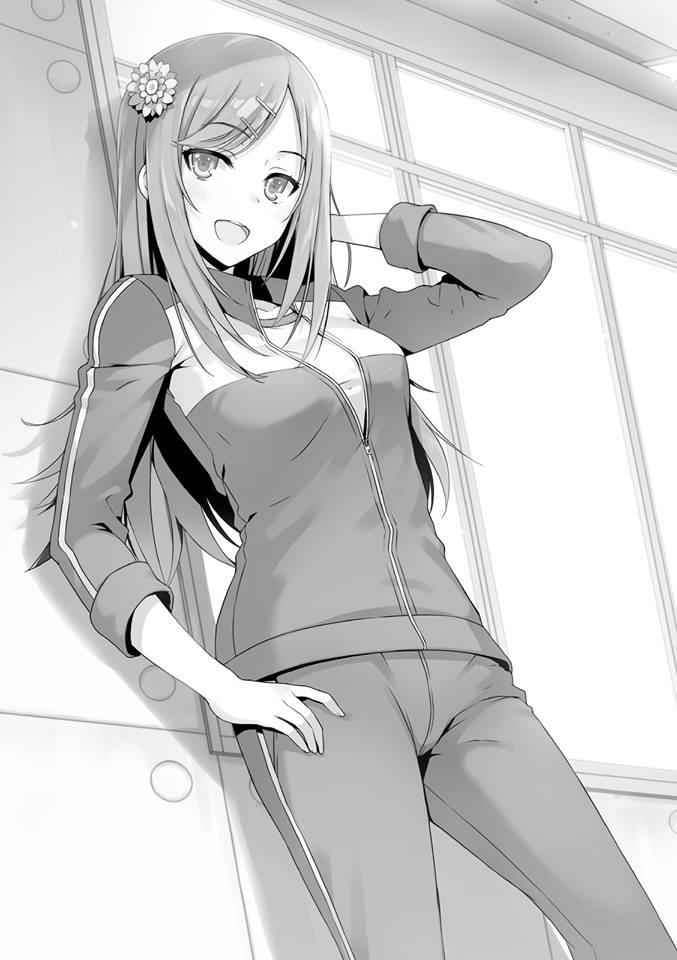
Para bien o para mal, tiene una personalidad honesta. Decidí dar un paso adelante.
— ¿Cómo puedo quitarme la atención de Nagumo-senpai de encima?
— Entonces, ¿qué tal si lo golpeas? Como bajarle los humos a ese arrogante Miyabi un par de veces. A mí también me gustaría que Miyabi perdiera un poco.
Lo dijo mientras se reía. Por supuesto, es probable que sólo sea una broma sin ninguna intención seria detrás. Sin embargo, me he dado cuenta de ello.
— Ya veo, esa también podría ser una opción.
Cuando contesté así, Asahina inmediatamente pareció estupefacta y me miró.
Después de unos segundos, estalló en carcajadas.
— ¡Jajajajajaja! Vamos, sólo estaba bromeando. ¿No te diste cuenta?
Asahina se rió casi hasta las lágrimas y me golpeó en el hombro.
— Si Nagumo cae, ¿te causaría problemas?
Ya que Asahina aún cree que estoy bromeando, decidí tomar un tono más fuerte con ella.
Si Asahina es el tipo de persona que debe informar de esto a Nagumo, entonces de cualquier forma, eso es todo para mí. Aunque ella se lo informe ahora mismo, terminará pensando que soy un insolente de primer año.
— ¿Hablas en serio?
— Estabas bromeando, ¿verdad, senpai?
— Mira, eso no es algo que un estudiante de primer año pueda hacer.
Dijo eso y se disculpó por bromear. Pero seguí con el mismo tono.
— Entre los de segundo año que he visto hasta ahora, Asahina-senpai parece la más sincera.
— .... ¿La más sincera?
— Porque es muy difícil conseguir información de los de segundo año sobre los que “Nagumo Miyabi” gobierna, ¿sabes?
— Estás diciendo algo bastante escandaloso. También soy de segundo año.
Miyabi y yo tenemos una “profunda relación”, ¿entiendes?
— No se trata de algo superficial o profundo, sino de cuánto te ha influenciado. Esa es la parte importante.
De cualquier manera, ya que están en la misma clase, no hay manera de que puedan ser enemigos. No importa lo que piense de Nagumo, no querría que su clase estuviera en desventaja.
— Pero creo que son similares.
— Bueno, por favor, piénsalo como una tontería de alguien de primer año —Y
con eso incliné la cabeza—. Por favor, discúlpame.
— Ahh, espera un momento. De alguna manera, esto me hace sentir como si yo fuera la villana.
Ella exhala y luego sonríe.
— Entiendo que no estás bromeando. Por eso, como disculpa, déjame pagarte por recoger mi amuleto. Si hay algo que quieras preguntarme, te responderé.
— ¿Estás de acuerdo con eso? Puedo dirigir una flecha hacia Nagumo-senpai, ¿sabes?
— Para ser completamente honesta contigo, no creo que la situación cambie sólo porque hable contigo.
Parece estar segura de que incluso si me da información sobre algunos de los de segundo año, no tendrá una gran influencia.
En otras palabras, es información que no tendría sentido aunque se conozca. Si así es como ella ve esto, entonces estoy muy agradecido por ello.
— Entre las chicas de segundo año, ¿cuántas son particularmente íntimas con Nagumo-senpai?
— ¿Chicas que tienen intimidad con él? Todas ellas. Porque confían en Miyabi más que en cualquier otro chico, ¿entiendes?
Sé que no es el tipo de enemigo contra el que los métodos ordinarios funcionarán, pero tiene una gama muy amplia.
— ¿Qué hay de la gente más propensa a actuar como peones de Nagumo-senpai?
— ¿Crees que te lo voy a decir?
— Como senpai, no te importaría darle un poco de crédito a los alumnos de primer año, ¿verdad?
— ¿Estás diciendo eso? Eres un descarado.
Lo dijo y se rió. Pero no parecía estar en contra.
— Bueno, no me corresponde a mí decir esto ni nada parecido. El segundo año tiene un fuerte sentido de camaradería. Honestamente, el segundo año nos dividimos en grupos mucho más rápido que el primero y el tercero,
¿no es así? Después de recibir la explicación en el autobús, inmediatamente compartimos información entre las clases bajo el mando de Miyabi.
Técnicamente deberían ser enemigos, pero como sospechaba, parecen estar en un estado de colaboración.
Asahina me dijo los nombres de los representantes de cada clase. Manteniendo el contacto entre los cuatro autobuses, pudieron decidir sobre sus grupos pequeños hasta cierto punto. Parece que las chicas también hicieron algo similar.
— ¿Qué hay de cuando te uniste a los grupos de primer y tercer año?
¿También los eligieron al azar?
La propuesta de Nagumo para los chicos fue un sistema basado en el borrador realizado en el primer año.
— ¿Ehh? Más o menos.
— ¿Más o menos? ¿Eso significa que hay una excepción?
Asahina pareció muy pensativa mientras cruzaba los brazos.
— ... ¿Por qué exactamente?
Podía decir que Asahina ahora alberga dudas. Tal vez no encontró una solución de inmediato, ya que el silencio continuó.
— ¿No me lo vas a decir?
— No, no es eso. Hubo una petición hecha por las chicas de segundo año al formar los grupos grandes. O mejor dicho, hicieron algunos ajustes. Ese grupo pequeño estaba formado por gente con la que Nagumo podía contar.
Si los grupos se forman por orden de Nagumo, existe la posibilidad de que se les haya confiado un papel especial. Es una conclusión que no podrías sacar a menos que conozcas los asuntos internos del segundo año.
Desde la perspectiva del primer y tercer año, sólo parecerá que son amigos que se juntan unos con otros.
— ¿Hay alguna alumna destacada de primer o tercer año de ese grupo grande al que pertenecen esas chicas?
— Aunque me preguntes eso, no sé mucho sobre el primer año. Pero supongo que del tercer año, está Tachibana-senpai, que solía ser la secretaria de Horikita-senpai. Ahh, pero la líder es otra persona. Así que no va a pasar nada extraño, te lo aseguro. En primer lugar, Miyabi ya ha dicho que quiere luchar limpio, ¿no?
— Tienes mucha fe en Nagumo-senpai.
El mayor de los Horikita también parecía tener algo de fe en las palabras de Nagumo. Si tengo que creer las palabras del Horikita mayor y Asahina, entonces toda esta cadena de sospechas sería etiquetada como “falsa”. Que intenta usar la sospecha de que usará algún otro método mientras promete luchar limpio para despistarnos y arruinar nuestra concentración.
— Siempre cumple sus promesas. Por eso no peleará sucio. En primer lugar, aunque el grupo de chicas caiga en algún tipo de trampa, no tendrá ningún efecto en la lucha de Horikita-senpai y Miyabi, ¿verdad?
— Así es. Eso es, sin duda, irrelevante.
Las dudas de Asahina son bastante acertadas. La propuesta de Nagumo era que su grupo y el grupo del Horikita mayor tuvieran una competencia. No tiene nada que ver con las chicas. Por eso, aunque las chicas que son especialmente cercanas a Nagumo estén en el mismo grupo que Tachibana, sigue siendo irrelevante.
Significa fingir que luchamos abiertamente mientras planeamos algo turbio pero que al final resulta ser una lucha abierta.
Eso quiere decir que las palabras significativas que pronunció al hacer contacto con Ishikura-senpai del tercer año también eran falsas. Si estamos hablando de sondear normalmente a alguien, sería algo así como hacer aparecer varias piezas antes de que se caigan y desaparezcan. Una forma bastante interesante de hacerlo.
A diferencia de Sakayanagi o Ryuuen, esta es una estrategia con un estilo propio y único.
— Ahora bien, si hay algo que tengo en particular que decir es que es tu derrota si te preocupas por eso.
— Fuiste de gran ayuda.
Debería dar las gracias a Asahina por escuchar mi petición irrazonable y por contarme sobre sus asuntos internos. Por supuesto, mirándolo desde la perspectiva de Asahina, no cree que lo que hizo aquí se interponga en el camino de Miyabi.
Porque no cree que alguien como yo pueda convertirse en enemigo.
— Bueno, haz lo mejor que puedas y ve a asustar a Miyabi. Te estaré apoyando, sólo un poco.
— Ahh, y también hay una cosa más.
— ¿Hmm?
Combinando esto con la información que obtuve de Kei, la precisión aumenta aún más.
Decidí acelerar un poco más.
PARTE 6
La noche del sexto día llegó con el grupo de mal humor. Si dejamos que este día termine así, es probable que el grupo ni siquiera se forme mañana. Me imagino que esta terrible relación se prolongará.
Y si es así, será difícil obtener una calificación alta en el examen que nos espera dentro de dos días. Aún después de que regresé a la habitación después de bañarme, el ambiente aquí está tan asqueroso como siempre.
Ishizaki está levantando una pared a su alrededor, sin hablar con nadie más.
Keisei también se culpa severamente a sí mismo y está atrapado en su propio caparazón, ni siquiera habla. Los estudiantes de la clase B, en un intento de animarnos, continuaron charlando con entusiasmo en repetidas ocasiones, pero ya no son capaces de soportar la atmósfera opresiva que los envuelve, y finalmente se callaron también.
Finalmente, después de confirmar que casi se apagan las luces, Yahiko apagó la luz en nuestra habitación. Para poner fin rápidamente a este día.
— Oye, Ishizaki. ¿Me das un poco de tu tiempo?
En la oscuridad, fue Hashimoto quien rompió ese largo silencio.
— No, no se puede.
Hashimoto le llamó desde lo alto de su litera pero Ishizaki le rechazó. A juzgar por el sonido de las sábanas, supongo que nos ha dado la espalda.
— Si seguimos así, nuestro grupo estará en serios problemas. Podemos tener algunas ventajas porque sólo somos unos pocos, pero a cambio, tenemos varias desventajas cuando se trata del contenido del examen. En el peor de los casos, Yukimura y otra persona pueden ser expulsados.
Si es así, ¿no sería Ishizaki el que sería hundido? es la implicación de esa observación.
— Cállate. No me importa si es la expulsión o lo que sea.
— Maldición...
Parece que aunque Hashimoto le echó una mano, Ishizaki lo rechazó.
Hashimoto suspiró como si se rindiese.
— .......Fuu---.
No podía ver la cara de Hashimoto en la oscuridad. ¿Significa esto que nuestro grupo ya no puede volver a un estado funcional? Ya es hora de que nos rindamos.
— Jugué al fútbol en la primaria y secundaria. Era una escuela muy prestigiosa, así que cada año nuestro equipo jugaba en las nacionales. No éramos los mejores, pero jugábamos partidos con regularidad y lo hicimos relativamente bien para nosotros mismos.
Hashimoto dijo esas palabras no a ninguna persona en particular, sino a todos los presentes en la habitación.
— No estás en el club de fútbol, ¿verdad? Tampoco me pareces lesionado.
Yahiko señaló eso en la oscuridad.
— Sí. Sé que no es muy popular hoy en día, pero hubo un tiempo en que solía fumar.
— ¿Así que te echaron cuando se enteraron?
— No. Me aseguré de fumar en secreto. Sólo mi familia lo sabía.
— Aunque fumar no sea bueno, no es una razón para dejar de jugar fútbol.
Las dudas de Yahiko son evidentes. Si no se revela a nadie, entonces no habrá ningún problema.
— Me sentía distanciado. Mientras todos estaban unidos en su objetivo de ganar las nacionales, yo solo observaba eso con frialdad. Sentía que no pertenecía a ese lugar. Y además, es probable que tampoco me gustara mucho el fútbol. Es por eso que podía dejarlo fácilmente y estudiar. En primer lugar, era muy capaz, así que no me resultaba tan difícil seguir con mis estudios.
— ¿Estás alardeando? No puedo escuchar esto.
Ishizaki interrumpió de forma desagradable.
— Para bien o para mal, todo lo que podía hacer era hacerlo bien. Pero a veces me arrepiento. Cuando veo a Hirata y Shibata, practicando duro en el campo, termino pensando que podría haber sido yo. Aunque no me gustaba tanto. ¿No es extraño?
Hashimoto se rió de sí mismo con desprecio.
— ¿Qué hay de ti? ¿Cómo fue tu infancia, Ishizaki?
— ¿Eh? ¿Por qué me lo preguntas?
— Por ninguna razón en particular.
— Hah... no tengo nada que decir.
Se negó a hablar diciendo que no tenía nada de qué platicar. Entonces Keisei abrió la boca para unirse a la conversación que estaba teniendo lugar en la oscuridad.
— Desde que era pequeño, estudiar era todo lo que hacía. Tal vez fui influenciado por mi hermana mayor que aspiraba a ser maestra, siempre actué como el estudiante modelo. Desde la primaria, me daba problemas que eran absurdamente difíciles de resolver. Es una hermana bastante irracional.
— ¿Así es como te volviste tan buena estudiando?
Hashimoto, como si estuviese alargando la conversación, le preguntó a Keisei.
— Sí. Y además, no soy bueno para los deportes. No importaba lo que hiciera, apenas podía soportar la mayor parte del tiempo. Decidí no superar mi debilidad y en cambio mejorar mis fortalezas. Porque pensaba que, con la excepción de los que pretenden convertirse en atletas profesionales, mejorar tus habilidades físicas no tenía ningún sentido. Después de inscribirme en esta escuela, me enfrenté a varias dudas. Nunca dudé de que alguien como yo, que podía estudiar mejor que nadie, fuera el más adecuado para la clase A.
Como si estuviese recordando, Keisei dejó de hablar y pensó durante un rato. La clase a la que se asignó a Keisei era la Clase D. La desesperación que sintió en ese momento debió ser inconmensurable.
— Después de eso, cosas que no podía aceptar sucedieron una tras otra. No podía aceptar el sistema de responsabilidad conjunta de la clase y no podía comprender el estilo de vida que teníamos que vivir en la isla deshabitada... en nuestra clase, Sudou es mi polo opuesto. Aunque se destaca en los deportes, no puede estudiar. Al principio pensé que me
habían asignado una carga absurda. Pero en la isla deshabitada y durante el festival deportivo, Sudou fue mucho más útil que yo. Vi esa brillante figura suya a mi lado.
Había cierta frustración en sus palabras.
— Para ser honesto, todavía hay algunas cosas que no puedo aceptar. Pero poco a poco estoy empezando a darme cuenta también. Que si estudiar es lo único que puedes hacer o si los deportes son lo único en lo que eres bueno, eso no sirve. Esto se aplica también a este examen. Si no podemos hacer ambas cosas, no podremos obtener una buena puntuación. ¿Me equivoco, Ishizaki?
Keisei entonces volvió la conversación hacia Ishizaki.
— Entonces, ¿por qué...?
— Al igual que durante el festival deportivo y la isla deshabitada, estoy lleno de sentimientos de humillación. Estoy siendo una carga para el grupo. Me lastimo y termino aumentando la carga de otra persona. Y lo más importante, terminé bajando nuestra moral. No pude mostrar nada a Ishizaki, que a pesar de sus quejas contribuyó al grupo más que la mayoría de las personas.
Ishizaki, que estaba a punto de burlarse de él, se detuvo. No puedes ver nada.
Es precisamente porque estamos en la oscuridad, donde no podemos ver la cara de la otra persona, que somos capaces de exponer cosas como esta.
— Lo siento, Ishizaki....que el líder que debería dar el ejemplo esté en una condición como esta.
Intentó reprimirlo, pero pude darme cuenta de que Keisei estaba llorando. Pero nadie es tan grosero como para interrumpir. No es que esté llorando porque quiera, son lágrimas de frustración.
— No jodas, ¿por qué te disculpas...? Quiero decir, yo soy el que te culpó...
—Ishizaki se rió desdeñosamente de sí mismo y continuó—. En primer lugar, aceptaste el papel de líder cuando nadie más lo hizo.
Incluso si se lo hubieran impuesto, se habría negado. De hecho, el propio Ishizaki lo rechazó.
Ishizaki se dio cuenta de la buena voluntad de Keisei al aceptarlo.
— No me gusta recibir órdenes de ti, pero sin esas órdenes, el grupo seguramente estaría peor. Tanto a la hora de preparar el desayuno como en los entrenamientos de maratón.
— No hay duda de eso.
Lo dijo Hashimoto mientras se reía.
Estudiantes que sobresalen en lo académico, estudiantes que no sobresalen en lo académico. Estudiantes que sobresalen en deportes y estudiantes que no sobresalen en deportes. Todos los diferentes tipos de estudiantes se reúnen para formar una clase o un grupo.
Hay problemas que se pueden encontrar allí también, así como enemigos y aliados. Yahiko y los otros estudiantes empezaron a charlar entre ellos.
En este día y esta noche, por primera vez, nuestro grupo comenzó a actuar como un grupo de verdad. Eso es lo que sentí.
COSAS QUE ESTÁN PERDIDAS, COSAS QUE NO ESTÁN PERDIDAS.
Es temprano en la mañana del séptimo día del campamento de entrenamiento.
Nuestro grupo dejará de existir después de hoy. El examen se realizará mañana a primera hora. Aunque las acciones de Hashimoto salvaron al grupo del colapso total, este grupo unido y las relaciones que hemos construido como parte de él también terminarán junto con el examen.
Seguramente hay más de un estudiante que se siente triste por ello. La mayoría de los estudiantes de nuestro grupo, a pesar de su antipatía hacia Kouenji, se llevan bien entre sí.
En cuanto a Ishizaki, puede que me odie más de lo que odia a Kouenji, pero está haciendo todo lo posible para que no se note. Para ser honesto, es probable que quiera acosarme, pero Ishizaki sabe muy bien lo que sucederá en ese caso. Esa brusca conducta suya puede parecerse a la de Sudou, pero cuando se trata de leer la atmósfera, Ishizaki es muy superior. Tengo la impresión de que respeta a sus oponentes y reconoce lo que no se puede negar. Probablemente es por eso por lo que Ryuuen lo mantuvo a su lado. Pero eso no significa necesariamente que Sudou sea inferior a Ishizaki.
Sudou es muy superior cuando se trata del aspecto físico de las cosas y, con toda seguridad, también lo supera en capacidad académica. Como Horikita lo está guiando, es muy posible que continúe desarrollándose lentamente. Aunque son de una especie similar, las armas que cada uno de ellos posee son fundamentalmente diferentes.
— Me gustaría repasar el relevo de larga distancia que haremos mañana. Por favor, escúchenme.
Todos, mientras aún están en sus camas respectivas, se giran para mirar a Keisei.
— Sólo somos 10 personas, por lo que cada una tiene que soportar una carga enorme, pero dependiendo de las circunstancias, eso puede resultar ser nuestra ventaja.
— ¿Qué quieres decir? ¿No es mejor tener más gente? Entonces la distancia que tenemos que correr disminuye.
— Sin duda, si tuviéramos 15 para repartir el trabajo de manera equitativa, entonces cada persona no tendría que soportar toda esa carga, pero también existe una alta probabilidad de que los estudiantes lentos también se mezclen. Por un lado, se puede contar el número de estudiantes que sobresalen a larga distancia en nuestro año escolar.
— ...Eso es cierto.
— En otras palabras, esta es nuestra oportunidad de cerrar esa brecha.
— Pero eso asumiendo que todo nuestro grupo sea muy atlético, ¿no?
Ishizaki miró a su alrededor.
Me considera uno de los deportistas, pero mientras no cuente a Kouenji, Hashimoto será la única persona con la que podremos contar para correr bien.
No puedes llamar a esto un grupo particularmente atlético. Y lo más importante...
— Esto es patético, pero después de hablar de esa manera, no seré de ninguna utilidad.
Keisei se conoce mejor a sí mismo. Porque de todos los de este grupo, Keisei es el que tiene una resistencia y una velocidad dudosas. Sin embargo, como líder, nos habló de su estrategia.
— El relevo de larga distancia será de 18 kilómetros. Eso implica que cada persona debe correr al menos 1,2 kilómetros, lo que significa que en un grupo de 15, todos deben correr alrededor de la misma longitud de 1,2
kilómetros cada uno. Pero en un grupo de 10, podemos hacer cambios significativos en la duración de la asignación de una persona.
— Pero no podemos limitarnos a denunciar una lesión y hacer que alguien más corra por ti, ¿verdad?
— Cualquier lesión o enfermedad en ese día será penalizada, de modo que no sólo nos pondría en desventaja, sino que también nos costaría más tiempo. Eso no es lo ideal. Y también, es importante notar que a menos que estemos hablando de 1.2 kilómetros, puede que no seamos capaces de obtener ningún punto por cambiar.
La escuela está haciendo todo lo que puede para cerrar cualquier vacío legal.
Los estudiantes tienen que hacer lo que se les exige. Keisei y Yahiko, que no confían en su velocidad, deben correr al menos un mínimo de 1,2 kilómetros.
Es posible que tengamos que incluir a los tres de la clase B en esa categoría mínima también.
Albert es bastante rápido, pero tiene problemas con su resistencia. Si hacemos que todos los demás corran sólo el mínimo, significa que los cuatro restantes tendrían que correr una longitud de 2,7 kilómetros o más. Si estamos hablando de un estudiante cuya resistencia es su fuerte, entonces es muy posible que puedan cubrir esa distancia. Le conté a Keisei lo que pensaba sobre esto.
Los miembros de nuestro grupo escucharon lo que tenía que decir.
— En ese caso, correré 3 kilómetros... no, haré 3,6 kilómetros.
Declaró Ishizaki. No hay duda de que es uno de los de nuestro grupo capaz de correr eso. Y otra persona levantó la mano siguiendo el ejemplo.
— Bueno, entonces, supongo que tampoco tengo otra opción. No soy malo para correr largas distancias o cualquier otra cosa.
Hashimoto fue el que dijo eso.
Los dos representantes de nuestro Grupo se comprometieron con entusiasmo a asumir esta gran carga. Esto significa que hemos recorrido 7,2 kilómetros hasta ahora.
— Gracias.
Keisei bajó la cabeza en gratitud y les dio las gracias con palabras honestas.
Siguiendo el ejemplo, supongo que también debería cubrir al menos hasta cierto punto.
— Entonces... haré lo que pueda. No sé en cuánto tiempo puedo hacerlo.
— ¿Estás de acuerdo con eso, Kiyotaka?
— Por favor, no esperes demasiado.
Pero lo realmente importante es lo que viene después. Es la existencia del hombre con el mayor potencial de todos los demás, Kouenji, contra el que ni siquiera Sudou puede compararse a pesar de que se enorgullece de su destreza atlética.
Cuanto más corra Kouenji, más fácil será para los otros estudiantes.
Probablemente correrá la distancia mínima de 1,2 kilómetros, pero todavía tiene que prometer que correrá más que eso.
Lo más importante es que no se sabe si va a correr en serio o no. Aunque los nueve, entre ellos yo, demos lo mejor de nosotros, si Kouenji simplemente camina sin tomárselo en serio, entonces será inútil.
— Kouenji. Me gustaría que tú también corrieras.
Precisamente porque es consciente del eslabón débil de la cadena, Keisei se acercó a Kouenji con una actitud indiferente y bajó la cabeza.
Kouenji estaba ocupado admirando sus uñas mientras sonreía sobre su cama.
— Kouenji.
Keisei tranquilamente dijo su nombre una vez más.
— Por supuesto que yo también correré. Pero a diferencia de ellos, no quiero correr largas distancias.
Supongo que no hay forma de que acceda a hacerlo con una respuesta inmediata.
Ishizaki miró con ira a Kouenji pero no hizo mucho más. Después de pasar unos días con él, empezó a comprender que la mayoría de las acciones de Kouenji no tienen sentido.
— Me gustaría evitar correr el riesgo de que nuestro grupo sea el último.
— Así es. Sé lo que quieres decir, Gafas-kun.
Apartando la vista de sus uñas, Kouenji miró a Keisei.
— Incluso si las largas distancias son imposibles, me gustaría que corrieras al menos 1,2 kilómetros en serio.
Todos en nuestro grupo miraron hacia Kouenji.
— No puedo prometer nada. Aunque nuestro grupo sea el último en la general, eso no significa que me expulsen. Sólo tú, el líder, serás expulsado. Y seguramente no harás algo inhumano como hundir a un compañero como yo, ¿verdad?
Si el líder no hubiese sido Keisei, sino alguien como Ishizaki o Yahiko, quizás Kouenji habría corrido.
Pero como estamos hablando de Keisei, un compañero de clase, se imagina que no será hundido. Quizás si lo amenazáramos con hundirlo ahora mismo, podríamos conseguir que Kouenji corriera, pero a cambio, nunca más podremos obtener la ayuda de Kouenji.
— .... Entonces por favor, dímelo. ¿Qué tenemos que hacer para que nos ayudes? Si darte puntos privados te hace correr, entonces no me importa pagar.
Es precisamente porque Keisei sabe que va a ser una carga que pretende compensarlo por su cuenta.
— No lleves esa carga solo, Yukimura. No es mucho, pero yo también tengo puntos.
— Yo también pagaré.
Ishizaki y Hashimoto después de él, luego Yahiko y los otros también lo apoyaron. Muchos hacen ese ofrecimiento. Si los nueve juntamos nuestros puntos privados, entonces terminaremos con una suma relativamente grande.
En respuesta a la presión de la demanda del grupo, Kouenji---
— Desafortunadamente, no tengo ningún problema en lo que respecta a los puntos privados. Además, aunque no tenga ningún punto, puedo llevar una vida escolar satisfactoria.
Ni siquiera los sentimientos de un grupo unido le alcanzaron. Como temía, Kouenji no se moverá sólo ofreciéndole una miserable suma. Aún así, decirle que lo haga por el bien de la clase sería aún menos efectivo.
Durante los últimos días, el resto del grupo y yo hemos aunado esfuerzos para intentar obligar a Kouenji a entrar en acción. Más allá de los límites de los años escolares. Y todos ellos terminaron en fracaso.
— Entonces, ¿nos estás diciendo que no correrás?
— Exactamente, así es.
Como si lo hubiera pensado un poco, Kouenji dijo esto.
— No parece que me vaya a convertir en un recurso para ustedes.
Después de decir eso, Kouenji se negó.
Ya no podía soportarlo, Ishizaki intentó ponerse en pie pero Keisei le detuvo.
— Sin embargo, puedes relajarte. No tengo la intención de hacer nada más de lo que se requiere de mí, pero haré lo mínimo requerido. Yo también tengo mi propia manera de hacer las cosas.
— En otras palabras... ¿al menos producirás resultados promedio?
— Exactamente, así es. En primer lugar, cuando se trata de mí, es muy probable que termine obteniendo un resultado relativamente sobresaliente, aunque sólo esté haciendo lo mínimo. Bueno, son buenas noticias para ustedes, ¿no?
Con toda probabilidad, los nueve comprendimos las palabras de Kouenji.
Aunque sea poco, nos dimos cuenta de que somos un grupo y empezamos a cuidarnos los unos a los otros.
Pero en la práctica no es así en absoluto. Mi análisis de Kouenji es que sólo actuará por su propio bien. En todos los exámenes anteriores, Kouenji actuó en repetidas ocasiones de una manera sin precedentes. Sin embargo, ninguna de esas acciones puede utilizarse para expulsarlo.
Kouenji está un 99% seguro de que Keisei no lo hundirá, pero aún existe la posibilidad de que eso ocurra. Obviamente, si él produce malos resultados, entonces la escuela se asegurará de señalar eso.
Y también está claro que una vez que has sido elegido como objetivo para ser hundido, ya no hay espacio para que escape. Este hombre no cometerá ese tipo de error.
— ¿Qué resultado sobresaliente? ¿Puede alguien como tú que tiene problemas con Zazen hacer algo así?
— Fu. Fu. Fu. Eso es porque ya dominaba el simple Zazen cuando era niño.
No hay problema.
— ¿Qué clase de infancia fue esa?
Aún después de que se lo señalaran, Kouenji continuó riendo agradablemente.
Sin embargo, esto puede ser suficiente para Keisei. Kouenji no tiene intención de cooperar, pero prometió hacer lo mínimo.
Esto es muy significativo. Precisamente porque somos compañeros de clase, soy consciente de lo alto que es el potencial de Kouenji.
Hay algunos factores desconocidos como Zazen y el examen escrito, pero puedo confiar en él en lo que respecta a la condición física y la resistencia.
PARTE 1
Un problema se ha resuelto y ahora es el momento de la limpieza matutina.
Cuando Keisei intentó empezar a limpiar como siempre, Ishizaki cogió un trapo.
— Descansa un poco. Si hacer esto significa que no podrás correr en el relevo de larga distancia, entonces eso sería mucho más problemático.
— No, pero—
— Descansa. A cambio, haz lo mejor que puedas con el examen escrito.
Consigue al menos el 120 por ciento, ¿de acuerdo?
— ...sí, el 120 por ciento es imposible, pero intentaré aspirar al 100 por ciento...
Ishizaki entiende lo que es dar y recibir.
Keisei, después de darle las gracias, se sentó.
— Esa es una buena actitud, Delincuente-kun.
— Cállate, Kouenji. ¡No has hecho nada desde el primer día!
— ¿Es eso cierto? JAJAJAJAJAJAJA.
Kouenji no cogió ni un trapo ni una escoba, sino que fue a dar un paseo por la naturaleza.
A pesar de que está llamando la atención del segundo y tercer año, está actuando con audacia.
— Es como una enfermedad. ¿Pueden ascender a las clases superiores con un tipo así en su clase?
Incluso la clase D terminó preocupándose por nosotros.
— ...No puedo decir que tenga mucha confianza en eso.
Keisei siempre ha tenido la firme intención de aspirar a las clases superiores, pero parece que Kouenji está más allá de lo normal. La forma en que Kouenji actuará mañana también es un factor importante. Durante nuestra discusión matutina, logramos que nos prometiera que haría lo mínimo, pero no es como si eso fuera una garantía absoluta. Puede que no lo dé todo cuando esté fuera de nuestra vista.
Si se niega a hacer algo como limpiar, hay muchas posibilidades de que acabemos en el último lugar. Hasta los estudiantes mayores que pasan por alto esto ahora pueden pelear con nosotros.
Aunque también creo que Kouenji es del tipo calculador que no hará algo así, sigo desconfiando del hecho de que esté más allá del sentido común y pueda traicionar mis expectativas.
Quizás notó la ansiedad de Keisei, Ishizaki se acercó a él.
— No te preocupes por eso. Sólo tenemos que compensarlo.
— Esa línea no te queda bien. Has madurado bastante en un solo día.
— Cállate, Hashimoto. ¡¿Tienes un problema con eso?!
— No hay problema. La posición del grupo también tendrá un impacto en mi plan, así que me gustaría que nos clasificáramos lo más alto posible.
¿Verdad, Yahiko?
— ...Bueno, supongo que sí. Ya que estamos en este grupo problemático, no hay otra opción. Si actuamos mal, Katsuragi se sentirá decepcionado con nosotros.
Hashimoto se ríe amargamente de Yahiko, cuyo único objetivo es Katsuragi, y le pega en el hombro una vez.
Yahiko también sabe que será una carga cuando se trate del aspecto físico como nuestro entrenamiento de maratón. A pesar de todo eso, ha estado actuando con modestia desde el principio.
— He actuado contra Katsuragi varias veces por orden de Sakayanagi. Creo que me despreciarás por eso, pero en este caso, somos verdaderos aliados. Por favor, olvídate de la mala sangre entre nosotros por ahora.
— Hmm. Eso me sorprende.
Yahiko no levantó la voz pero no parecía confiar mucho en Hashimoto.
Probablemente no podía perdonar el hecho de que Katsuragi había sido obstaculizado por sus propios compañeros de clase hasta ahora.
— ¿No fuiste tú quien hizo de Katsuragi-san el líder esta vez?
— No tuve nada que ver con eso. Ese era el plan de Matoba.
Yahiko no parecía convencido, a pesar de que Hashimoto negó esas afirmaciones.
Aun así, se contuvo y actuó como un miembro más de todo el grupo. Me gustaría elogiarlo en ese sentido.
PARTE 2
Nuestra última cena antes del examen de mañana. Vi a Ichinose caminando mientras llevaba una bandeja y la llamé. No es como si esto fuera un intento de extraer información de ella o algo así.
Pero algo se sentía mal con Ichinose.
— ¿Tienes algún problema?
— ¿Ehh? Ayanokouji-kun. No, en realidad no. Es que estaba pensando en varias cosas.
— Estás lidiando con un problema difícil, ¿no?
Ichinose estaba a punto de irse, pero eso la detuvo.
— El examen finalmente se llevará a cabo mañana. ¿Qué opinas de este examen, Ayanokouji-kun?
— Esa es una pregunta bastante imprecisa.
— Quiero que me des una impresión sincera.
— Es un poco más difícil que los exámenes que hemos tenido hasta ahora, supongo. Siento que hay un alto riesgo de expulsión.
— Supongo que eso es cierto.... pero ya estamos en nuestro tercer semestre, así que ¿no es natural que el nivel de dificultad también aumente?
— Tal vez.
— Hablando de riesgos, está el sistema de “líder”, ¿está bien? convertirse en el líder de un grupo.
— Sí.
— Convertirse en líder es algo muy arriesgado, pero... convertirse en el líder por el bien de la victoria. Eso también es importante, ¿verdad?
No negué eso y presté atención a lo que Ichinose tiene que decir.
— Incluso si dices que existe el riesgo de expulsión, eso todavía está en el aire y no se sabe. Honestamente, hay muchos factores que no se pueden ver. Pero lo que realmente me asusta no es perder puntos de clase o puntos privados. Al menos eso es lo que pienso.
— .... ¿Estás hablando de tus compañeros?
— Sí. El riesgo de perder a un amigo es inconmensurable.
— Si, por casualidad, un compañero tuyo está a punto de ser expulsado,
¿qué pretendes hacer entonces?
— Lo que haré, ¿eh? —Ichinose lentamente levantó la cabeza y se rió un poco—. Ayanokouji-kun, eres realmente inteligente.
— ¿Por qué dices eso?
— Quiero decir, normalmente no hay nada que puedas hacer si ocurre una expulsión, ¿verdad? Pero sabes que hay un “después” de eso.
— Era sólo una pregunta hipotética...
— Si realmente fuera una pregunta hipotética, no habrías usado la palabra
“pretendes”, ¿verdad? o en un sentido diferente, hubieras preguntando:
“¿Estará bien tu clase?”
— Lo siento, pero me estás sobreestimando. Es sólo que no lo puedo expresar bien.
— Aun así, creo que es una respetable “intuición” la que tienes ahí.
Dije demasiado, eso fue lo que dijo antes de irse. Porque después de todo, Ichinose también tiene cosas en las que pensar a solas. Al despedirme de Ichinose, otros estudiantes también la llamaron. Ser popular debe ser difícil.
Aunque intentes pensar solo, la gente que te rodea no te dejará en paz.
Por lo general, Ichinose siempre tiene una sonrisa en la cara, pero no parece ser el caso hoy.
— Sí... lo siento, es que hoy no me siento bien...
Ichinose, que claramente ya no tiene energía, ignoró a dos de las chicas con las que está muy unida y se fue.
— Lo siento. Tengo un par de cosas que hacer ahora mismo y quiero estar sola por hoy.
También está claro que ella no está limitándose a actuar.
Es casi al extremo de que se podría decir que es una persona completamente diferente a la que era cuando comenzó el campo de entrenamiento. Me di cuenta después de ver eso.
Esa Sakayanagi ha hecho su jugada.
La tormenta que se producirá en este examen especial puede que no se limite sólo a los chicos, sino también a las chicas.
PARTE 3
Ya que hoy es el día anterior al examen, la situación también ha cambiado significativamente. El ambiente de la cafetería no ha cambiado mucho de lo habitual, pero ahora hay una clara división entre los que ríen y los que se muestran melancólicos.
En otras palabras, ha quedado claro qué grupos han sido capaces de hacer que funcione y qué grupos no han hecho lo mismo.
Cuando salí al pasillo, Kei estaba apoyada contra la pared de la cafetería.
Casualmente, como si sólo pasáramos de largo, recibí un trozo de papel de ella.
Entonces entró inmediatamente en la cafetería. Seguramente se encontrará con sus amigas allí para comer. Después de que Kei y yo nos separamos, miré el trozo de papel antes de romperlo en muchos trozos pequeños y tirarlo en los muchos cubos de basura instalados en toda la escuela.
Ha aguantado bastante bien durante esta semana, pero parece que finalmente ha llegado a su límite. Salí de la cafetería y me dirigí a una esquina del edificio de la escuela.
Porque la persona que le pedí a Kei que vigilara está ahora deambulando por ahí con la esperanza de pasar un tiempo a solas.
Y el tiempo a solas en este campo de entrenamiento es difícil de conseguir. Es medianoche, pero si desaparece durante mucho tiempo de su habitación, los demás lo notarán. En ese caso, la opción ideal sería usar este tiempo cuando todos los demás se reúnen en la cafetería.
Mientras caminaba en la dirección en que estaba esa persona, la vi agachada como si se estuviera escondiendo.
Ella no me vio allí mientras seguía llorando y se acurrucaba. Y por un momento, dudé. Sin embargo, no importa lo difícil que sea este lugar para la gente, no hay forma de saber cuándo otro estudiante podría encontrarse con este lugar.
En ese caso, debería terminar esto rápidamente.
— Si estás en problemas deberías consultar a Horikita......... el ex presidente del consejo estudiantil, ¿no?
— ¿¡…!?
La chica que levantó la cara era Tachibana Akane de la clase A de tercer año.
Aterrorizada por haberme mostrado su patética figura, se secó las lágrimas.
— ¿Qué quieres?
— No se trata de lo que quiero, se trata de lo que te acabo de decir.
— No es como si estuviera en problemas o algo así.
— Si lloras sin razón, eso es un problema en sí mismo.
— ¡No estoy llorando!
Diciendo eso, Tachibana apartó sus ojos de mí. La razón por la que no se está moviendo de ese lugar es que si va a algún lugar iluminado, sus ojos enrojecidos y los rastros de lágrimas en su rostro se volverán claramente visibles.
— A veces sólo quiero estar sola.
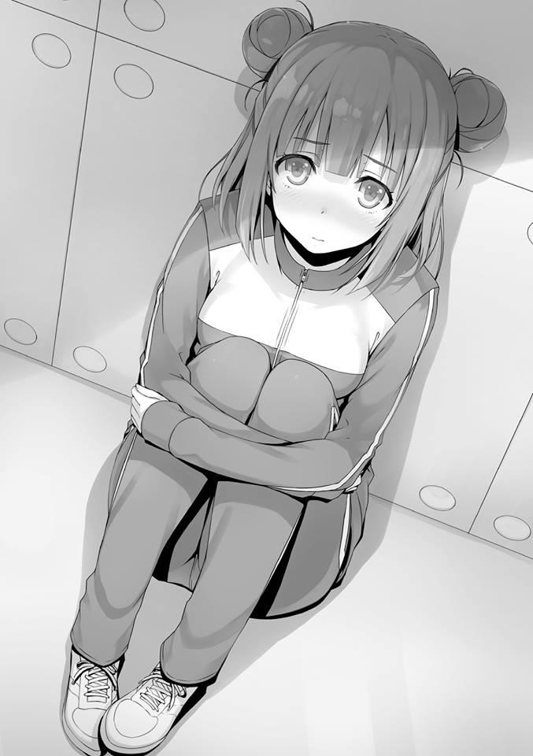
— Ciertamente no tenemos mucho tiempo privado para nosotros, ¿verdad?
Un descanso para ir al baño es el único momento para eso, pero aun así, es anormal usarlo por largos períodos de tiempo. También habría más de unos cuantos estudiantes que te verían entrar y salir.
— Para que conste, también estoy del lado del Presidente Horikita.
Eso es una mentira. Pero si digo eso, Tachibana confiará más en mí.
— Aun así, no serías de ninguna ayuda.
Bueno......si ella está de acuerdo con eso, entonces realmente no tengo una respuesta. Al contrario, nos arriesgaríamos a que se filtre información.
— Por favor, considérate afortunada de que no hayamos terminado como enemigos.
— Por favor, deja de hablar tan despreocupadamente con tus superiores. No dije nada hasta ahora porque Horikita-kun también estaba allí pero...
Y lo que es más importante, sentí curiosidad por saber cómo se refería a él como “Horikita-kun”. También es extraño cómo continúa refiriéndose a él como
“Presidente Horikita” a pesar de que él ha dejado ese puesto.
También podría llamarlo “ex”, pero la forma en que Tachibana se refiere a él no es normal.
— Tú... debe ser bueno ser de primer año. Tan optimista.
— Esa es una afirmación bastante temeraria. ¿Estás ansiosa por el examen de mañana?
— No siento nada en particular. Está la líder y todo, pero no es como si hubiera mala voluntad dentro de nuestro grupo o algo así. Al contrario, las cosas van a la perfección.
— ¿Entonces por qué lloras aquí?
— Te lo dije, no estaba llorando.
Cuando señalé a los ojos de Tachibana, se asustó y usó su mano para comprobar si sus ojos aún estaban húmedos. Después de darse cuenta de que estaban secos, se volvió para mirarme con una expresión de enfado.
— Horikita-kun es de quien estoy ansiosa... preocupada.
Es una mentira que no es del todo mentira. No voy a ir allí todavía.
— Preocupada, ¿eh? ¿Hay algo de qué preocuparse cuando se trata de ese hombre?
— Horikita-kun......Horikita-kun siempre ha estado luchando solo. Hasta ahora, ha estado luchando contra el segundo y tercer año. No podrías entender lo que es luchar contra todos en solitario y lo difícil que debe ser.
Aunque tratara de entender, no hay forma de que lo entienda.
— Sé un poco sobre cómo Nagumo y el segundo año dirigido por él son el enemigo, pero no sabía que también había enemigos entre los de tercer años. No puede haber tanta gente rebelándose contra el hombre que asumió el papel de presidente del consejo estudiantil, ¿verdad?
— ¿No estás malinterpretando a Horikita-kun como una especie de dictador?
Aunque era el presidente del consejo estudiantil, no abusó de su autoridad, a diferencia de Nagumo-kun. Porque no hay lugar para relajarse en ningún examen.
Aunque diga todo eso, nunca tuve la oportunidad de familiarizarme con los asuntos internos del tercer año y mucho menos de tener una pista sobre los antecedentes del mayor de los Horikita.
Pero al decir que no hay lugar para relajarse en ningún examen significa.......
— ¿Podría ser que el conflicto de clases entre el tercer año siga en pie?
— Por lo menos.... si Horikita-kun cae, la Clase A definitivamente caerá también.
— Heh...
Eso es también lo que Nagumo ha estado diciendo. Que la diferencia entre la clase A y la clase B del tercer año es de sólo 312. Definitivamente es posible si el Horikita mayor es su única fortaleza o si la Clase B posee estudiantes talentosos.
— Así que eso significa que al final sólo es un estudiante normal, ¿eh?
— ¡Horikita-kun es-----------!... no es nada.
Se detiene como si intentara contenerse para no levantar la voz.
Pero como si estuviera escupiendo sus frustraciones, poco a poco continuó.
— Debido a que los otros estudiantes de clase A siempre fueron una carga....
perdimos muchos puntos de clase que no debimos haber perdido e incluso nuestros puntos privados... siempre se ha sacrificado para proteger a sus camaradas.
Si lo que dice Tachibana es cierto, entonces eso significa que el Horikita mayor es del tipo Hirata. Para ser honesto, no me parece que sea así. Por supuesto, eso es lo que la única persona que realmente forma parte de la Clase A de tercer año, Tachibana, está diciendo, así que debe haber un grado de verdad en ello. Con toda probabilidad, hubo muchos casos en los que se ocupó de asuntos en un segundo plano sin revelar su virtuosismo.
La persona que ha visto esas cosas más que nadie a su lado es esta chica de aquí.
— En otras palabras, ¿te sientes deprimida por la situación actual?
— Hasta yo soy consciente de la situación de los chicos. El hecho de que Nagumo-kun desafió a Horikita-kun y que no puede hacer un movimiento debido a eso. Y también, que no podemos hacer nada para ayudarlo.
— Que puedas o no ayudarlo también depende de tu tenacidad, ¿no?
— Ya lo sé.
Puede que las lágrimas volviesen a brotar en sus ojos, Tachibana las secó una vez más con su brazo.
Sus pensamientos sobre el mayor de los Horikita pueden ser la razón de esas lágrimas, pero también hay otras razones.
— Estás metida en algún tipo de problema, ¿verdad?
— ...No. No realmente.
Ella lo negó.
— ¿Es eso realmente cierto?
— Eres persistente, ¿no? No estoy en problemas ni nada por el estilo.
— Si... no, si dices eso entonces debo haber entendido mal.
— Sí, lo malinterpretaste. Por favor, no le digas nada raro a Horikita-kun.
— Claro.
Después de advertirme con dureza, Tachibana volvió a la cafetería. Por si acaso, no quiere que el Horikita mayor sepa la verdad.
Pero estás cometiendo un error, Tachibana. Este no es un problema que puedas resolver sacrificándote.
— Supongo que esto significa que va a ser jaque mate a menos que haga un movimiento.
Después de ver la frágil espalda de Tachibana, me lo confirmé a mí mismo.
PARTE 4
Medianoche. Me desperté al oír un ligero crujido al salir de la cama. Un estudiante solitario se mueve en la oscuridad. Por supuesto, aunque la visibilidad sea nula, sé quién es.
Es Hashimoto quien se supone que debe estar profundamente dormido en la parte de arriba. Bajó silenciosamente usando la escalera de la litera y sin siquiera llevar una linterna, salió de la habitación.
Después de eso, me levanté lentamente.
Pienso que lo más probable es que vaya al baño, pero también hay otras posibilidades. Porque me di cuenta de que a lo largo de toda esta semana, no ha habido ni una sola vez en la que Hashimoto haya ido al baño en mitad de la noche.
Sólo le di una pequeña ventaja antes de levantarme y seguirlo. En el caso de que esté parado justo afuera de la puerta y me vea, puedo decir que también voy al baño.
Precisamente porque compartimos la misma cama, Hashimoto también pensará que acaba de despertarme. Escondí mi presencia y me dirigí al pasillo.
Sólo está la luz de emergencia y la luz de la luna que entra desde el exterior, pero es posible caminar sin una linterna. Vi a Hashimoto yendo hacia el baño.
Lo seguí. Y cuando lo hice, se giró a la izquierda en lugar de continuar por el pasillo. No parece que simplemente vaya al baño. Hashimoto, después de bajar al primer piso, salió al exterior con los zapatos puestos. Cuando me acerqué a él, me oculté usando la pared de mi lado. No hay nadie más que Hashimoto allí. A lo mejor vino a tomar un poco de aire fresco antes del examen.
¿O quizás está esperando a alguien? Me di cuenta de la respuesta a esa pregunta de inmediato.
Al sentir que estaba a punto de girar hacia mí, me moví a otro lugar. Porque vi otra sombra que creo que es su objetivo. Esa sombra siguió el camino que Hashimoto tomó y salió.
En una situación como ésta, en la que ni siquiera los sonidos de los insectos están presentes, se puede escuchar la voz de una persona con mucha más claridad de la que se espera.
— Hola, Ryuuen.
— ¿Qué demonios quieres de mí?
— Sólo quiero tener una charla contigo. Destacas demasiado en la cafetería.
La única ocasión en que podemos encontrarnos es en medio de la noche,
¿verdad?
— ¿En el último día?
— Precisamente porque es el último día. Todos los demás deben estar profundamente dormidos ahora mismo.
— ...ya veo. Supongo que eso es cierto.
No hay estudiantes que se queden despiertos hasta tan tarde en la noche cuando hay un examen al día siguiente. Por eso Hashimoto eligió un momento como este para tener su reunión secreta con Ryuuen.
Pero Ryuuen y Hashimoto son una combinación bastante inesperada.... o no, supongo. Durante nuestra estancia en la isla deshabitada, Ryuuen cultivó una relación con la Clase A.
No sería extraño que Hashimoto desempeñara el papel de intermediario en aquel entonces.
— Hacer las cosas de forma indirecta no es como yo las hago. Dímelo sin rodeos. ¿Realmente renunciaste como líder de la clase?
— Kuku. No parece que te lo estés creyendo.
— Al menos no puedo creer que Ishizaki y los demás te hayan derrotado.
Hashimoto le cuenta cómo ese punto le llamó la atención. Es cierto que ser golpeado por Ishizaki suena bastante estúpido.
— Dejándolo a un lado, Albert es un tipo problemático. Si me enfrento a ese tipo, será difícil.
— Ya veo. Bueno, supongo que Albert es una amenaza. Pero el Ryuuen Kakeru que conozco nunca se escondería ante un enemigo como ese. Al contrario, siempre tendría una medida preventiva planeada, ¿verdad?
En lugar de apaciguar sus dudas, eso sólo pareció hacerlo aún más desconfiado.
— Me cansé de liderar a un grupo de gente que se rebelaba contra mí.
Mientras los siga explotando, siempre estaré en un lugar seguro. No estoy obligado a salvar a esos tipos.
— Ya veo. Así que esa es la verdad.
— ¿Te he convencido?
— No lo sé. Para ser honesto, sigue siendo el cincuenta por ciento. Además, personalmente me gustaría que te defendieras de la situación en la que te encuentras ahora mismo.
— Para que puedas conseguir más ingresos, ¿es eso?
— Exactamente. Al igual que tú, deseo la “promesa de la Clase A”.
Si puedes ahorrar 20 millones de puntos, tienes derecho a pasar a la clase A.
Cualquier estudiante que posea los medios para hacerlo puede estar tranquilo.
Una situación que sería la envidia de todos los demás.
Pero hacer eso una realidad es difícil. Aparentemente, Hashimoto también es uno de los estudiantes que quiere eso.
— Supongo que estás preparado para traicionar a Sakayanagi si lo que quieres es la promesa de la victoria.
— Si es necesario, sí.
Hashimoto respondió así, pero inmediatamente añadió esto.
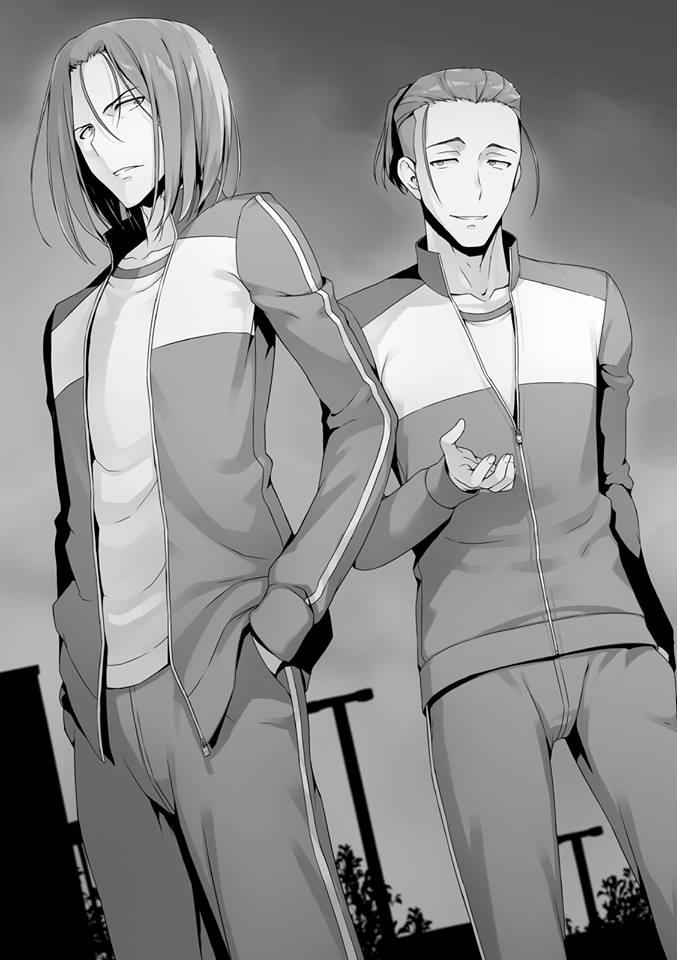
— Vender a Sakayanagi no es barato, Ryuuen. Porque ahora mismo, Sakayanagi está en lo más alto de nuestra clase. Estoy en el equipo ganador, ¿lo entiendes?
— Me gustaría ver cuánto tiempo funcionará este tipo de diplomacia.
— Soy bastante bueno labrando mi lugar. Le haré saber que soy más capaz de lo que parezco. Pero me alegro de haber podido hablar directamente contigo así. Tus ojos aún no están muertos.
Después de bostezar, Hashimoto finalmente añadió eso.
— Cuando la clase de Hirata superó a la tuya, me pregunté qué diablos estabas haciendo, pero puede que seas más duro de lo que pareces.
— ¿Eh?
— Si miras a cada miembro con calma, todo se aclara. Y empiezas a querer aplastarlos desde el principio.
— Pensar que los evaluarías. ¿Hay algún hombre en el que estés interesado o algo así?
— Al menos, Kouenji es una amenaza. Si actúa por el bien de la clase, no hay forma de saber lo que sucederá ni siquiera con la clase A. Además, hay estudiantes como Hirata y Yukimura que sobresalen académicamente.
También está Sudou, que es uno de los mejores físicamente en nuestro año escolar.
— No sé los otros, pero no creo que ese hombre actúe.
Hashimoto se rió, y luego estuvo de acuerdo con él.
— A pesar de todo, no se sabe qué pasará ni cuándo. Pero lo tendré en cuenta, por si acaso. Aunque Hirata y su clase consigan ascender a la clase A, no hay problema, siempre y cuando haya espacio para que yo me meta.
— Para empezar, dudo que tengas tanto poder, pero haz lo mejor que puedas para no quemarte, ¿bien?
Ryuuen se burla de Hashimoto e intenta acortar la conversación.
— Incluso si es mierda, alargar esto es problemático.
— Sí.
Anticipé que habían terminado su conversación y así que intenté irme a otra parte. Hashimoto regresará a nuestra habitación de inmediato. Sería sospechoso a menos que esté durmiendo en la cama para entonces.
Pero entonces sentí que alguien más se acercaba y me abstuve de regresar.
Esa persona inmediatamente se fijó en Ryuuen y Hashimoto y les llamó.
— Hey, chicos de primer año, ¿tienen una reunión secreta en un momento como este?
— ¿Eh?
Los que se pararon delante de Ryuuen y Hashimoto y que se dirigían de nuevo al edificio de la escuela eran Nagumo Miyabi y Horikita Manabu. Ryuuen dejó de caminar durante un instante pero inmediatamente perdió el interés y empezó a caminar de nuevo.
Hacia Nagumo. Pero Nagumo no se movió de allí.
— Fuera de mi camino.
En respuesta a la mirada de Ryuuen, Nagumo se rió como si eso le fascinara.
Hashimoto también, habiendo regresado al pasillo para ver lo que estaba pasando, se encontró con la mirada de Nagumo.
— He oído que eres un delincuente. Eres Ryuuen, ¿verdad? Voy a tener una pequeña charla con Horikita-senpai ahora, pero tú también deberías acompañarme.
Tú también, como si dijera que también hablaba con Hashimoto.
— No me interesa.
El hombro de Ryuuen chocó a Nagumo.
— Audaz, ¿no? ¿No me tienes miedo, Ryuuen?
— Presidente del consejo estudiantil o lo que sea que seas, aplastaré a cualquiera que se interponga en mi camino.
— Heh.
Nagumo parece ahora albergar un cierto grado de interés en Ryuuen, que no cedió ni un ápice.
— No me desagrada mucho tu tipo. Pero no estás hecho para ser parte de mi consejo estudiantil.
Cuando Ryuuen intentó irse, Nagumo volvió a llamarle.
— Como persona ajena, ¿por qué no haces una apuesta? En el examen especial de hoy, entre mi grupo y el grupo de Horikita-senpai, ¿cuál crees que se clasificará mejor? 10.000 puntos por apuesta. ¿Qué te parece eso?
No importa a qué bando apuestes, siempre y cuando aciertes, yo pagaré esa cantidad. Si te equivocas, te haré pagar.
— Eso es estúpido. No me interesa esa cantidad de dinero.
— 10.000 es “esa cantidad de dinero” para ti, ¿eh? Eres de la Clase D, así que siempre estás corto de dinero, ¿no? Podrías ganar un poco más,
¿sabes?
— Entonces vayamos con un millón. Aceptaré si estás dispuesto a pagar eso.
Ryuuen dijo eso y se dio la vuelta.
— Jajaja. Eres muy gracioso, Ryuuen. Una broma atrevida. Ya puedes irte.
Aparentemente cree que la propuesta de Ryuuen era una broma.
— Si no tienes las pelotas para pagar al menos eso, no te molestes en pedirme que haga una apuesta.
— Oye tú, ese primer año de allí. ¿Crees que Ryuuen pueda pagar?
Preguntó Nagumo a Hashimoto.
Hashimoto, que es consciente del acuerdo secreto que hizo con la clase A, debería saber que es definitivamente capaz de hacerlo pero...
— No estoy seguro....estamos en clases diferentes así que no puedo decirlo.
— Si tuviéramos nuestros teléfonos y pudiéramos comprobarlo, no me importaría seguirte el juego. Lástima.
Al final, la apuesta fue cancelada. Y en ese momento, Hashimoto intentó irse.
Quizás porque ya estaban fuera de su vista, Nagumo se apartó de ellos y miró al mayor de los Horikita.
— Horikita-senpai, por favor, abstente del examen de mañana.
De repente, interrumpió con esas palabras.
Ryuuen se fue desinteresadamente pero Hashimoto inesperadamente dejó de caminar.
— ¿Abstenerme?
— Así es.
— Esto es incluso peor que la broma que Ryuuen acaba de hacer.
— Lo digo en serio.
Pero añadió esto.
— Digo esto por tu bien, senpai.
— Sólo ponlo simple. Sé que tienes el hábito de hacer monólogos en tu cabeza, parece que no fuiste capaz de arreglar ese hábito.
— Lo siento. Poder ver el futuro con demasiada claridad también es algo que hay que tener en cuenta. Si no te abstienes, senpai, te arrepentirás. En otras palabras, te estoy mostrando piedad ahora mismo. Podría dejarte caer sin previo aviso, pero eso sería demasiado cruel, ¿no?
— ¿Qué estás planeando? Dependiendo de lo que sea, no lo aceptaré.
— Entiendo. Las reglas de nuestra lucha son hacerlo de manera honesta y justa sin involucrar a nadie. Pero con el examen yendo como va, no hay forma de saber quién de nosotros ha ganado hasta que abramos la tapa para comprobarlo. Por supuesto, espero que sea una batalla reñida, así que me gustaría ganar. Por eso he hecho algo.
— ¿Tiene eso algo que ver con que me pidas que me abstenga?
— Porque al hacerlo, estarías minimizando el daño que sufrirás, senpai.
¿Puedes ver qué preparativos he hecho? No, no puedes. No hay ni un solo estudiante en esta escuela capaz de leer mi tren de pensamientos. Así son las cosas. Incluso tu favorito es igual... ¿cuál era de primer año?
Nagumo miró a su alrededor y deliberadamente miró a Hashimoto. Pero no hay forma de que Hashimoto pueda entenderlo.
— Sí, así es. Si mal no recuerdo, está en el mismo grupo que este de primer año de aquí. Ayanokouji Kiyotaka, ¿verdad?
Para que Hashimoto se diera cuenta de ello, Nagumo enfatizó claramente mi nombre.
— ¿Qué opinas, Hashimoto? Sobre Ayanokouji.
— ¿Qué...? No, creo que es un estudiante normal...
Hashimoto está desconcertado después de haber escuchado inesperadamente mi nombre.
— ¿Verdad? Pero Horikita-senpai parece clasificar a Ayanokouji por encima de todos los otros estudiantes del primer año.
— ¿No es porque dio un buen espectáculo durante el relevo del festival deportivo?
— Normalmente hablando, sí. Pero eso no parece ser todo lo que hay que decir. Horikita-senpai coloca a Ayanokouji por encima de Sakayanagi, de Ryuuen y de Ichinose. Ya que están en el mismo grupo, pensé que podrían haber sido capaces de percibir algo.
— No.......
— ¿Por qué exactamente es eso, senpai? Por favor, dinos ya la razón.
— Estás exagerando, Nagumo. ¿Cuándo te conté mi opinión sobre Ayanokouji? No hay nada que ganar en distorsionar la verdad. Deja de burlarte del chico de primer año.
— Lo siento, senpai. Supongo que tienes razón. Lo siento, Hashimoto. Eso de hace un momento era una broma.
— Eso....
El tema de su discusión es un poco preocupante, pero decidí concluirlo. Los tres están bloqueando el pasillo, así que tendré que usar la escalera en el extremo opuesto para volver a nuestra habitación. Significaba tomar un desvío, pero decidí volver por una ruta alternativa. Si no estoy allí para cuando Hashimoto regrese, podría levantar sospechas.
Unos minutos después de que volví, Hashimoto regresó tranquilamente a la habitación. En la oscuridad, sentí una mirada dirigida hacia mí, pero eso fue todo.
Después, Hashimoto se durmió en silencio.
LA SEGUNDA MITAD DE LA BATALLA DE LAS CHICAS - HORIKITA SUZUNE
El examen se realizará mañana.
En este momento, los estudiantes deben tener una cena para chuparse los dedos.
Yo, Horikita Suzune, me puse en contacto con la persona que está dentro de nuestra habitación.
Ya que todos los estudiantes deben estar en la cafetería en este momento, fue muy sencillo reunirnos a solas.
— Verás, Horikita-san. Para ser honesta contigo, no creo que entiendas la situación actual.
Ante mí, Kushida-san me mira con ojos serios. Sin embargo, ahora mismo estamos en una escuela al aire libre.
No sé quién tenga ojos y oídos en dónde. Al menos no puedo permitirme el lujo de dejar de mirar a Kushida-san, cuya imagen pública está ante mis ojos.
— No entiendo la situación actual. ¿Qué quieres decir exactamente con eso?
— Para mantenerme vigilada.... o, por el contrario, para que te reconozca como camarada, me arrastraste por la fuerza al mismo grupo ¿Verdad?
Siempre asumiendo que alguien vendrá, Kushida-san me contestó con una actitud que no está muy lejos de la habitual.
Pero hay fuerza detrás de esa forma de hablar.
Seguramente porque esta es una situación en la que no es posible utilizar trucos como el de grabar con un teléfono.
Pero eso también es un alivio para mí.
Si sigue ocultando su verdadera naturaleza, nunca llegaremos a nada.
— No negaré que esos objetivos son parte de la razón.
“Parte” es la palabra en la que insistí, pero a Kushida-san no parece importarle.
— Pareces estar actuando en base a sentimientos personales, pero me pregunto cómo resultará eso en una estrategia. Desde luego, Horikita-san y yo no nos llevamos bien. Pero en cuanto a los resultados del grupo... no, si has estado pensando en la clase, ¿no deberías hacer a un lado tus sentimientos personales?
Dijo Kushida-san mientras suspiraba y cruzaba los brazos, proclamando la veracidad de sus palabras.
— Tu prioridad soy yo y sólo yo, por eso la victoria o la derrota es una preocupación secundaria para ti. ¿Estoy equivocada?
— Así es. Tampoco puedo negar eso.
— Así que lo admites.
De hecho, no tengo nada con qué negarlo.
Desde que se decidió que se iba a producir el Paper Shuffle, he estado tomando medidas mientras pensaba únicamente en Kushida-san.
También es el caso cuando la invité a tomar el té durante las vacaciones de invierno.
Estoy haciendo cosas que no había hecho en toda mi vida hasta ahora.
— No importa lo que hagas. Me gustaría que ya te lo metieras en la cabeza.
— Desafortunadamente, es una petición imposible.
Hasta que no resuelva el problema con Kushida-san, no podré seguir adelante.
— No me corresponde a mí decirlo, pero ¿has olvidado la promesa hecha ante el presidente del consejo estudiantil ante el que me arrastraste a la fuerza? Dejando de lado mis sentimientos, que no se calmarán, he dado mi palabra de que no volveré a sabotear a Horikita-san. Pensé que al menos entenderías que no actuaría descuidadamente. ¿O es que pensaste que rompería mi promesa de inmediato?
No podía responder a esa pregunta con palabras. Es muy probable que Kushida-san también conozca mis sentimientos. La mitad de eso podría ser cierto.
Aunque tenía la esperanza de que Kushida-san fuera el tipo de persona que cumple su promesa de mala gana, todavía hay una parte de mí que cree que se está moviendo discretamente para expulsarme, y esos dos sentimientos están entrelazados.
Si no sospechara de Kushida-san, entonces no habría necesidad de que me quedara con ella todo el día y toda la noche.
Además, Nii-san no es el tipo de persona que lo revele a los demás, así que en cuanto se gradúe, la promesa es prácticamente nula.
Si voy a tomar cartas en el asunto, tiene que ser antes de que Nii-san se marche después de su graduación.
Queda poco tiempo.
— Quiero que confíes en mí.
Decidí ser franca con ella.
— Estás siendo muy honesta.
Aceptándolo de frente, Kushida-san sonrió un poco. Pero no fue una sonrisa positiva. Por esta razón, no puedo permitirme el lujo de equivocarme.
— Pase lo que pase, no revelaré tu pasado. ¿Qué debo hacer para que me creas?
— Lo siento, pero nunca te creeré.
Dijo Kushida-san tan fácilmente.
— No me interesa ganar nada revelándolo.
— Puede que sea así. Si alguna vez me entero de que se lo contaste a alguien, no te daré cuartel. Puede que incluso piense en derrumbar la clase como lo hice en la secundaria. Alguien como tú, Horikita-san, que
aspira a la Clase A, no cometerá un acto que tenga nada más que inconvenientes. Es natural pensar así.
Me pareció que mis sentimientos se transmitían tal como se transmiten a Kushida-san.
Pero aun así, debe haber una razón por la que todavía no puede ceder.
— Pero verás, si me preguntas, diría que nuestras circunstancias actuales son bastante inflexibles.
— ¿Inflexibles....?
— Por ejemplo, tienes un cuchillo apuntando a la parte de atrás de tu cabeza y se te pide que cooperes porque no te lastimarás de esa manera,
¿obedecerías a esa persona entonces? Hay una diferencia entre una situación en la que no puedes ser lastimada incluso si quisieran lastimarte y una situación en la que pueden lastimarte fácilmente si quieren hacerlo.
Lo entiendes, ¿verdad?
Kushida-san no confía en nadie.
No toma sus decisiones basándose en los pros y los contras, sino que simplemente no puede soportar el hecho de que alguien más que ella posea información que le da ventaja.
Así que por eso intenta deshacerse de mí. El problema es que yo tampoco puedo soltar ese cuchillo.
— ¿Pero no te estás estrangulando por eso? De hecho, el número de personas que saben de ti está aumentando lentamente.
— Así es. Admito que la situación se ha vuelto difícil.
— Eres inteligente. Estás por encima del promedio cuando se trata de habilidades académicas y atléticas y eres la número uno en nuestro año escolar cuando se trata de habilidades de comunicación... no, dependiendo de la situación, incluso puedes ser la número uno en toda la escuela. Mientras te hablo así, me impresiona lo bien que puedes pensar sobre la marcha. Serías un gran recurso para la clase si cooperaras como compañera. De este modo, serías más apreciada por los demás.
— ¿No sabes que ese tono de sabelotodo tuyo me molesta más que cualquier otra cosa? Esta propuesta tuya proviene porque conoces mi verdadera personalidad. No puedo soportarlo. Si fueras una persona que no supiera nada, ni siquiera estarías hablando en ese tono conmigo.
— Eso es...
Nunca aceptaré a alguien que sepa de mi pasado. Esa determinación suya me fue transmitida intensamente.
— Eres más inteligente que yo, ¿no te iría bien en cualquier otra escuela?
Además, por lo que puedo decir, Horikita-san vino aquí porque quería asistir a la misma escuela que su hermano, ¿verdad? Pero tu hermano se graduará pronto, así que, ya no necesitarás forzarte a quedarte aquí. Ve a estudiar a otra escuela y vete a la universidad o búscate un trabajo. ¿No está bien?
Como si dijera que cualquier otra conversación sería una pérdida de tiempo, Kushida dio muestras de cortar nuestra conversación. No pude mantenerla bajo control, así que suspiré en silencio.
— Por ahora permaneceré callada. Pero nunca confiaré en ti ni te ayudaré, Horikita-san. Hasta que una de nosotras desaparezca de esta escuela, esta conversación se mantendrá por siempre igual Te hará bien recordarlo.
— ...Lo entiendo. Entonces lo dejaré así por hoy.
— No sólo hoy, que sea la última vez.
Dejando atrás esas palabras, Kushida-san se fue por el pasillo.
— Soy impotente.
No tengo muchos camaradas en los que pueda confiar.
Ayanokouji-kun parece ser la persona en la que más puedo confiar en un momento como éste, pero nos hemos distanciado.
Puede que fuera porque le obligué a decir lo que pensaba sobre el consejo estudiantil delante de Kushida-san.
Pero hay cosas de las que no puedo retractarme.
Mi conflicto con ella es algo que sólo puede ser resuelto a través del contacto repetido.
Aunque tenga que perder su ayuda, seguiré eligiendo a Kushida-san.
No, tengo que elegirla.
PUNTO CIEGO
El último día del campo de entrenamiento. En otras palabras, ha llegado el día en que nuestros grupos serán evaluados en este examen especial. Ha pasado una semana y en este tiempo, tanto los chicos como las chicas de todos los años escolares, que constituyen aproximadamente 36 grupos pequeños, se han dedicado a sus propias actividades. Hay grupos en los que los miembros han logrado profundizar la relación entre ellos y también hay grupos que están al borde del colapso.
También hay grupos en los que los miembros hacían indiferentemente lo que tenían que hacer sin molestarse en profundizar las relaciones entre ellos. Al principio, nadie en nuestro grupo pensó que estaríamos de acuerdo. Sin embargo, al final logramos estrechar la distancia que existía entre nosotros. No perfectamente, por supuesto.
En el mejor de los casos, es un grupo improvisado. Mañana volveremos a ser enemigos. Sólo fuimos aliados temporales. Sin embargo, todavía hay cierta sensación de soledad cuando recuerdas que nuestras actividades en grupo han llegado a su fin.
— Hasta ahora, hemos hecho lo que era necesario hacer. No importa cuál sea el resultado, este grupo no se arrepiente de nada.
— Yo también lo creo. Gracias por ser nuestro líder durante una semana, Yukimura.
Ishizaki y Keisei, ambos por voluntad propia, extendieron sus manos e intercambiaron un ligero apretón de manos.
— No importa cuál sea el resultado, hagámoslo lo mejor que podamos.
— Contaré contigo.
Los otros también se felicitan e intercambian apretones de manos. Después, nos dirigimos al aula a la que nuestro grupo fue asignado. No hay nada que criticar en cuanto a nuestra unión. Nuestra mayor preocupación ahora mismo es cómo actuará Kouenji.
En este momento nos está siguiendo con calma. Pero no se sabe cuándo perderemos su control.
El segundo y tercer año de nuestro grupo ya están aquí y por eso nos sentamos presas del pánico. Después de eso, sonó la campana y un profesor vino al mismo tiempo para empezar a explicarnos el contenido del examen.
Aunque somos un grupo grande compuesto por todos los años escolares, el examen en sí se realizará en base a los grupos pequeños o a nuestro año escolar.
En el mejor de los casos, los grupos grandes sólo contribuirán a nuestra calificación general. No importa lo espaciosa que sea la escuela al aire libre, si todos estamos haciendo lo mismo de forma simultánea, entonces no será suficiente.
Como era de esperar, el examen abarca cuatro temas, nada inesperado.
“Zen”. “Discurso”. “Relevo de larga distancia”. “Examen escrito”. Estas son las cuatro evaluaciones que se llevarán a cabo. El primer año comenzará con Zazen.
Y luego pasaremos al examen escrito. Luego el relevo de larga distancia y finalmente daremos nuestros discursos.
Por el contrario, los de segundo año tienen un comienzo más difícil al tener el relevo de larga distancia primero. El tercer año comienza con sus discursos.
PARTE 1
Después del desayuno, nos dirigimos al dojo Zazen. Estamos exentos de la limpieza esta mañana, ya que el examen comenzará de inmediato. Todos los chicos de primer año están reunidos aquí.
— Ahora, comencemos la evaluación de Zazen. La puntuación se basa en dos criterios. Sus acciones y modales después de entrar en este dojo y cualquier apariencia de malestar durante Zazen mismo. Después de Zazen, esperen en sus salones asignados hasta que se les den las instrucciones para la siguiente evaluación. Llamaré a cada estudiante por su nombre e
iremos en ese orden. Formarán una fila y comenzaremos la evaluación en ese orden. Empezaré ahora mismo. Clase A, Katsuragi Kouhei. Clase D, Ishizaki Daichi--
El maestro sigue leyendo los nombres. Después de Katsuragi apareció Ishizaki, un orden inesperado. Las charlas provenían de los estudiantes que nos rodeaban.
— Date prisa, Ishizaki. Siguiente. Primer año Clase B, Beppu Ryouta.
Desconcertado, Ishizaki se dirige con pánico a la fila.
— Así que no vamos a seguir el orden habitual...
Keisei se puso nervioso y rápidamente se preparó. Admito que esto no es lo que habíamos imaginado. Hemos realizado Zazen una y otra vez a lo largo de esta semana, pero todos lo hicimos en nuestros grupos pequeños.
Nos sentábamos al lado de un miembro del grupo de nuestra elección en ese entonces, pero esta vez, parece que la escuela nos está distribuyendo al azar.
Tendremos que sentarnos al lado de estudiantes que no están en nuestra zona de confort.
Eso puede parecer trivial, pero ahora mismo, cuando nos enfrentamos a ello de improviso, no hace más que aumentar la lista de obstáculos. El intento de la escuela de conmocionarnos tuvo un efecto en una porción de los estudiantes de inmediato.
Una gran mano descansa sobre el agitado hombro de Keisei. Es la mano de Albert. Habiendo recibido esa preocupada advertencia de que se mantuviese en calma, parece que Keisei consiguió recuperar algo de su serenidad.
— Lo siento. Si me comporto así en la primera evaluación, tendrá un impacto en la moral del grupo.
Keisei no pensaba que la carga de un líder fuera un punto negativo, sino positivo.
Después, el nombre de Keisei es pronunciado y se dirigió con obediencia al dojo.
En última instancia, de nuestro grupo me llamaron antes que Albert, como el penúltimo. Muchos maestros se pararon dentro del dojo sosteniendo tablas y
bolígrafos. Además, tal vez para estar absolutamente seguros, hay casi una cantidad desproporcionada de cámaras instaladas dentro del dojo.
Ya tengo lo básico de Zazen en mi cabeza para no cometer errores.
Ya que el sistema de puntuación se basa principalmente en dar penalizaciones, primero me aseguraré de obtener una calificación perfecta. Concluí que no hay razón para contenerse en Zazen, así que decidí que definitivamente conseguiría una puntuación perfecta.
Un poco más lejos, Kouenji también está realizando Zazen. No hay un solo error en su postura. Una postura realmente hermosa. Continuó mostrando esa postura perfecta e impecable.
Este hombre nunca fue serio durante el entrenamiento, pero supongo que eso es de esperar.
Mantenemos los ojos cerrados durante la evaluación, así que no pude ver los detalles, pero parece que podrá hacerlo sin problemas.
PARTE 2
Después de Zazen, todo el mundo empezó a salir de la habitación sin hablar.
Por supuesto, es muy probable que aún estemos siendo evaluados hasta que estemos fuera del dojo. Mientras son observados por los maestros, los estudiantes salen de la habitación y se dirigen a sus salones de clase asignados según las instrucciones.
Una vez que todos en nuestro grupo se reunieron en el aula, Keisei se sentó aliviado.
— La pierna se sentía adormecida durante todo este tiempo...
— ¿Te las arreglaste para soportarlo?
Quizás Ishizaki está igual porque le preguntó a Keisei mientras se frotaba la pierna.
— De alguna manera. Pero tal vez tengo unas cuantas sanciones.
— Bueno, es inútil quejarse por lo que ya está hecho. No puedes hacer nada ahora que se acabó. Tú también lo crees, ¿verdad Ayanokouji?
Diciendo eso, Hashimoto me miró.
— Así es. El siguiente es el examen escrito, la especialidad de Keisei. Será mejor centrarse en eso.
Lo que escuchó de Nagumo anoche aún debe estar en su mente. Pero eso no significa que vaya a preguntarme directamente sobre ello o algo así.
Porque Hashimoto ni siquiera sabe qué parte de mí el Horikita mayor considera especial.
Aparte de nosotros, dos grupos pequeños de primer año más se juntaron. Uno de ellos es el grupo liderado por Akito del que Ryuuen es miembro. Pude ver a Ishizaki y a Albert girándose para mirar a Ryuuen.
Pero en vez de mirarnos, Ryuuen simplemente se sentó solo. No hablándole a nadie más. Solo. Es parte del grupo, pero al mismo tiempo, no lo es. Está dando la sensación de estar completamente aislado.
— Eso es extraño, ¿no?
A mi lado, Hashimoto susurra como si estuviera hablando consigo mismo. Sería tan fácil ignorarle, pero supongo que le seguiré la corriente.
— ¿Qué cosa?
— Hablo de los ojos de Ishizaki y Albert. Están mirando a alguien que odian, pero no siento eso de ellos. Es casi como si fueran mascotas tiradas por su amo, mirándolo con ojos doloridos.
— No lo entiendo muy bien. ¿No empezaron la pelea Ishizaki y los otros después de estar hartos de la tiranía?
— Eso es cierto, pero.... tal vez, ¿hay algo más detrás de la caída de Ryuuen?
Hashimoto no tiene ni una pizca de evidencia que me vincule con Ryuuen. Sin embargo, teniendo en cuenta el interés de Nagumo en Ryuuen, no es extraño que sus pensamientos le llevaran hasta allí.
— No lo sé.... no estoy familiarizado con los asuntos de otras clases.
— Ya veo. Siento haber sacado a colación un tema tan extraño.
No mucho tiempo después, al terminar el descanso de 10 minutos, pasamos a la parte escrita del examen. No hay nada particularmente digno de mención. Las cosas que aprendimos en el campo de entrenamiento son las que se evalúan.
Siempre y cuando entienda lo básico, definitivamente podría obtener una puntuación perfecta, pero para un estudiante con dificultades, 50~70 por ciento sería lo correcto. Me pregunto qué debo hacer......
Mientras todos los demás dan lo mejor de si en este examen, traté de averiguar cuántos puntos debería perder. No creo que anuncien resultados individuales, pero tampoco es muy conveniente dejar que la escuela me vea obtener resultados perfectos. Últimamente ya hay demasiados estudiantes que intentan sondearme. No estoy mintiendo cuando digo que quiero abstenerme de obtener una calificación alta.
Y entonces llegué a una conclusión.
Decidí responder mal a propósito a una pregunta que parezca difícil. Esto significa que será difícil para mí conseguir más del 95 por ciento. Cuando terminé de escribir todos los exámenes, sentí ganas de mirar por la ventana.
Pero sería problemático si pensaran que estoy haciendo trampa, así que decidí cerrar los ojos en silencio y esperar el final.
Después de la prueba, los grupos se reúnen de nuevo y nos evaluamos a nosotros mismos. Bueno, no es que nada vaya a cambiar sólo porque tengamos que calificar nosotros mismos, pero no puedo evitar preguntarme si he acertado o no en esa pregunta.
Supongo que cambiar tus pensamientos ayuda hasta cierto punto. Sin embargo, nos falta una persona puesto que Kouenji dejó el aula tan pronto como terminó el examen. Como de costumbre, Ishizaki parece haber fallado en muchas preguntas. Parece que hice bien en asegurarme contra eso.
No obstante, el examen escrito fue bastante fácil en general, por lo que cada grupo debería obtener una buena calificación. Y por lo que pude ver de los otros
estudiantes en el dojo, no hay una brecha significativa que se forme tanto en las partes de “Zazen” como en el “Examen escrito”. Todo el mundo parecía estar ejecutando Zazen relativamente bien.
Ya que tanto la parte de “Discurso” como la de “Zazen” involucran simplemente repetir lo que ya hemos aprendido, es poco probable que surjan diferencias en los puntos, siempre y cuando se hagan correctamente. Esto significa que la parte de “relevo de larga distancia” será la que más influya en la clasificación del grupo en este examen.
Si las puntuaciones se traducen directamente a las clasificaciones, el mejor grupo tendría que tener el 100 por ciento, pero..... el número uno = 100 por ciento podría ser demasiado sencillo. Nuestros tiempos también tendrán su impacto.
Por ejemplo, podrás ganar puntos adicionales incluso si estás en la sexta posición siempre y cuando tu tiempo sea bueno.
Todo depende de la rapidez con la que termines y de lo alto que llegues a un puesto. Cuando salí, vi muchas camionetas estacionadas. Parece que usarán estas camionetas para llevar a cada estudiante a donde se supone que deben recibir el testigo.
Recibimos instrucciones del personal para subir a las camionetas. El requisito mínimo para cada estudiante es correr por lo menos 1.2 kilómetros.
El testigo puede pasarse a otro estudiante cada 1,2 kilómetros. Si debido a un accidente, el estudiante no puede continuar corriendo o no puede cumplir con los requisitos mínimos, será descalificado.
Después de informarnos cuidadosamente de esas tres cosas, dejaron a Keisei, que será el primero en correr, y luego nos fuimos.
Eso es porque nuestro plan es que los estudiantes no atléticos corran primero.
Keisei irá primero y después Sumida, Tokitou y luego Moriyama, de la clase B.
Yahiko es quinto.
Esto se debe a que la fase de apertura no tendrá demasiados altibajos, además de que no hay mucha presión sobre ti para que no te superen. Estos cinco
correrán la longitud mínima de 1,2 kilómetros cada uno. 6 kilómetros en total. Y
luego el testigo pasará a Hashimoto y le haremos darlo todo en una carrera de 3,6 kilómetros, incluyendo el punto de regreso. Luego Albert tomará el testigo y correrá 1,2 kilómetros antes de pasárselo a Ishizaki, que entonces correrá 3,6
kilómetros. Hubiera estado de acuerdo en tomar el relevo después de Albert, pero Keisei insistió en que conectarse con un compañero de clase haría que la transición fuera más fácil. Kouenji sólo correrá 1,2 kilómetros, así que le pasaré el testigo al final después de correr 2,4 kilómetros yo mismo.
Esa es la conclusión a la que llegó Keisei. La razón por la que colocó a Kouenji en último lugar es para tentarlo con el anzuelo de la meta y para calmar la ansiedad de que no lleve el testigo.
En el caso de que se contenga, podemos ser golpeados con una falta si no son capaces de determinar quién corrió lentamente. Ishizaki se bajó de la camioneta y ahora sólo estoy yo, con el profesor que conducía la camioneta y Kouenji.
Como hay un punto de retorno a considerar, no hubiera sido extraño que nos dejaran primero, pero parece que nos están dejando en el orden exacto en el que vamos a correr.
Lo único que me queda ahora es estar a 3,6 kilómetros de la meta. La camioneta comienza a moverse en la dirección de la que venimos.
— Ayanokouji Boy, déjame preguntarte esto directamente. Si conseguimos el primer puesto en el relevo de larga distancia, ¿cuál será el resultado general?
— ...No hay forma de que lo sepa aunque me lo preguntes. En primer lugar, los resultados del examen dependerán de la puntuación media de nuestro grupo grande. Todo depende de lo bien que se desempeñen nuestros mayores, ¿verdad?
Por mucho que lo intentemos, si el resto de ellos no cargan su parte, nos será difícil conseguir el primer puesto.
— ¿Así que no dirás que hay una posibilidad de que estemos en primer lugar, aunque sea una mentira?
— No eres el tipo de hombre al que podría animar diciendo eso, ¿no?
— ¿Quién sabe? ¿Qué tal si me das 1,2 kilómetros de tu distancia? Si corro con todo lo que tengo, hay muchas posibilidades de que gane el resto del grupo.
Después de levantarse, Kouenji me susurró eso al oído.
— ¿Qué te pasa?
— Sólo un capricho. Estoy diciendo que este capricho mío puede ayudarte.
No es un mal trato, ¿verdad?
— En otras palabras, ¿estás diciendo que te harás responsable de 2,4
kilómetros y nos darás resultados?
— No hace falta ser tan formal. Es sólo un capricho mío después de todo.
— Ya veo. Lo siento, pero me niego. No pretendo cambiar la estrategia de Keisei por mi cuenta.
— Fu. Fu. Fu. ¿En serio? Eso es desafortunado.
Kouenji dijo eso y luego volvió a su asiento.
No sé qué está tramando, pero no tengo intención de correr ningún riesgo. Si nos está ayudando por capricho, eso significa que podría contenerse durante la carrera por otro capricho. Lo único que Kouenji ha prometido hacer es correr la distancia mínima requerida.
En otras palabras, puede contenerse una vez que esté corriendo los 1,2
kilómetros extra. La prueba está en cómo me hizo a un lado cuando le pregunté si asumiría la responsabilidad.
Además, si ocurre algún tipo de problema debido a una decisión que tomé, eso puede llamar la atención sobre mí.
— Parece que eres más listo de lo que pensaba. Pero al mismo tiempo, también eres un hombre aburrido.
Si esta evaluación de mí lo lleva a tratarme de la misma manera que trata a los otros estudiantes, entonces eso es algo por lo que hay que estar agradecido.
Bajé de la furgoneta y esperé a 3,6 kilómetros de la meta a Ishizaki.
— Hey, Ayanokouji-kun.
Por supuesto, también hay otros chicos en este lugar y Hirata es quien dijo mi nombre.
— ¿No eres el ancla?
— No. Kouenji se hará cargo después de mí. ¿Qué hay de ti? ¿Irás con Sudou?
— Sí. Después de todo, parece que tiene ganas de correr. Pero con 15
personas, las cosas no siempre salen como uno quiere.
En estos momentos, durante los últimos 1,2 kilómetros, la rivalidad de Sudou con Kouenji seguramente alcanzará su punto álgido.
— Personalmente hubiera preferido tener más gente. Hubiera sido un poco más fácil.
— De todos modos, hagámoslo lo mejor que podamos. Porque mientras estemos sobre el límite, nadie será expulsado.
— Sí.
Mientras esperamos, todo el mundo es libre de charlar o permanecer en silencio.
Como los puntos de suministro de agua se encuentran cada 1,2 kilómetros, también es posible ir a tomar algo de beber.
Bueno, si bebes agua antes de correr corres el riesgo de que te duela el estómago... Un estudiante, ignorando por completo mis preocupaciones, bebe agua de una botella.
— Ahh-- Me estoy poniendo nervioso...
Ese estudiante susurró antes de darse la vuelta y mirarme a los ojos. Es el Profesor.
Se me acercó. Tal vez quiere alguien con quien hablar.
— Así que tú también estás en esta posición, Ayanokouji-kun.
— ¿A-Ayanokouji-kun? ¿En esta posición...?
No podía creer lo que escuchaba por la forma en que habla el Profesor. El Profesor habitual habría dicho “Ayanokouji-dono~ Te han destinado a este lugar también~” o algo así.
— Ahh....no, dejé de hablar así. Lo hacía para imitar a un personaje, pero después de que me advirtieron durante Zazen, pensé que simplemente debía dejar de hacerlo.
— Ya veo.
No podía ocultar mi sorpresa por el discurso normal del Profesor. Es como si hubiera perdido su singularidad. Me está dando la sensación de ser un estudiante de primera.
Después, tuve una conversación normal con el Profesor, pero para ser honesto, apenas puedo recordar nada de eso. Cambiar tu forma de hablar puede cambiar muchas cosas, así que no hay forma de saberlo.
De todos modos, me pregunto si Keisei ha pasado con éxito la prueba. No importa cuánto tiempo tarde, lo importante es permanecer en la carrera.
Esto puede no sonar bien, pero incluso si nuestro grupo grande llega en último lugar y nuestro grupo cae por debajo del límite, no hay absolutamente ninguna posibilidad de que me ocurra algún daño.
Pero creo sinceramente que sería mejor si nadie fuera expulsado. Me pregunto cuántos minutos han pasado pero, finalmente, pude ver a un estudiante que venía. Pero resultó ser del grupo de Kanzaki y no Ishizaki.
Uno por uno, los estudiantes continuaron llegando después de eso. Ishizaki ha llegado en cuarto lugar tras una reñida lucha contra el corredor del tercer puesto.
— Hah, haaah. ¡Tómalo, Ayanokouji! ¡Consigue el primer lugar!
Gritó y me dio el testigo. Que podamos o no tomar la iniciativa depende de Kouenji, pero lo acepté en silencio y empecé a correr.
— ¡Te mataré si te contienes!
Después de darme el testigo, Ishizaki me gritó con sus últimas fuerzas antes de desplomarse. Supongo que es natural, ya que acaba de recorrer más de 3
kilómetros a través de un terreno montañoso.
Decidí cerrar lentamente la distancia que me separaba de los que estaban delante corriendo más rápido que la gente que me rodeaba, sin dejar que eso afectara mi respiración. En lugar de atacarlos a un ritmo rápido, dejé que su resistencia se perdiera antes de adelantarlos. Al hacerlo, es más fácil engañarlos para que piensen que fueron superados porque fueron lentos.
A pesar de los altibajos, una distancia de unos 2 kilómetros no es suficiente para hacerme jadear. Y así de fácil, acabé superando a un corredor y terminé tercero, no muy lejos del segundo puesto. Entonces le di el testigo a Kouenji.
El testigo que pasó por nueve manos antes de llegar a este punto. Su destino depende ahora del hombre que tengo delante.
— Ahora, vamos a sudar un poco.
Cepillándose el pelo, Kouenji aceptó el testigo y empezó a correr con una mirada inocente en su cara. Probablemente no está haciendo lo mejor que puede, pero es más que rápido.
Si es así, debería estar bien. Por supuesto, eso es sólo si no empieza a caminar una vez que esté fuera de nuestra vista. Después, a pesar de preocuparnos, Kouenji alcanzó la meta y se clasificó segundo.
No sé si no pudo igualar al corredor en primer lugar o simplemente no se molestó. Probablemente esto último.
El discurso que tendrá lugar después de esta carrera puede ser un infierno por encima de todos los demás para el primer año. Porque deberán hablar después de haberse agotado aquí.
Sin embargo, se podría decir que no hay nada más particularmente digno de mención. Porque a pesar de que Kouenji tiene un don para lo dramático, estoy seguro de que todos los demás serán capaces de vencer esto con seguridad.
PARTE 3
Así de fácil, nuestro largo día de exámenes terminó. El grupo, no, todo el cuerpo estudiantil está agotado. Nuestro grupo se clasificará definitivamente muy por encima de lo que esperábamos que se clasificara al principio.
Mientras la calificación promedio nos favorezca, nuestro grupo definitivamente tendrá más que una buena oportunidad. El resto depende de lo bien que se desempeñen el grupo de Nagumo y el grupo de tercer año.
Al menos deberíamos estar por encima de la media. Al igual que nuestro primer día aquí, todos los chicos se reunieron dentro del gimnasio. Después, las chicas también empezaron a reunirse. Los resultados del examen especial tanto para los chicos como para las chicas se anunciarán ahora.
Son casi las cinco de la tarde. Para cuando volvamos a la escuela, probablemente sea de noche.
— Todos lo hicieron bien en los últimos ocho días de este campamento de entrenamiento. El contenido del examen es diferente, por supuesto, pero este es un examen especial que se realiza cada pocos años. En general, todos ustedes lo hicieron mejor que los estudiantes que tomaron este examen especial la última vez. Supongo que se podría atribuir a que todos tienen un mejor trabajo en equipo.
El hombre anciano que no he visto antes lo decía con una sonrisa constante en la cara. Parece que es el encargado de este campo de entrenamiento.
— En primer lugar, anunciaré los resultados. Para los chicos, todos los grupos están por encima de la media fijada por la escuela, por lo que no habrá expulsados.
En el momento en que se anunció, pude oír a los muchachos dar un suspiro de alivio.
— Ya veo, así que no hay expulsados...
Dándose palmaditas en el pecho, Keisei suspiró. Ishizaki le da un golpecito en la espalda.
— Nunca pensé que nos expulsarían. Porque aspirábamos al primer puesto.
— Sí.
No importa cuáles sean sus sentimientos, el hecho de que hayamos evitado la expulsión es muy importante. Sin embargo, algo en la forma en que el anciano lo expresó me pareció extraño. Si no hay expulsados entre todo el cuerpo estudiantil, entonces no habría razón para decir "chicos" en particular. En otras palabras—
— En cuanto al grupo de chicos que obtuvo el primer lugar, sólo anunciaré el nombre de su líder de tercer año. Para el primer, segundo y tercer año de ese grupo, sus recompensas se les entregarán en una fecha posterior.
Después de explicarlo, el anciano leyó lentamente el nombre.
— Tercero, Clase C. El grupo de Ninomiya Kuranosuke-kun obtuvo el primer lugar.
Ese anuncio causó que una parte de los alumnos del tercer año lo celebraran.
Por un momento no supe qué grupo era, pero inmediatamente me di cuenta de que era el grupo en el que estaba el Horikita mayor.
Parece que el Horikita mayor ha dominado la batalla contra Nagumo.
— Lo lograste, Horikita. Como se esperaba de ti.
Después, se anunciaron los grupos que empezaban desde el segundo hasta el último puesto, pero para los mayores eso no es más que un bono. Fujimaki, sin prestarle atención, elogió al mayor de los Horikita.
— Oye, Yukimura. Estamos en segundo lugar. ¡Lo logramos!
— Sí, es un alivio. Es un verdadero alivio.
No sé por cuánto, ya que no anunciaron la diferencia en puntos pero Nagumo está en segundo lugar. Eso significa que estuvo cerca, pero perdió. Aunque quedara segundo, significa que Nagumo perdió, así que se quedó un poco tranquilo. Eso es lo que todos pensaban. Para ser honesto, no sabía qué táctica triunfaría en esta lucha. ¿Por qué? Porque no estaba particularmente interesado en ello.
Sin embargo, Nagumo ha estado sonriendo constantemente a mi lado sin mostrar ningún signo de agitación.
Este no es un hombre que desafía y pierde. Supongo que era de esperar.
Porque este hombre ha estado haciendo algo ridículamente malvado detrás de escena.
— Primer lugar asegurado. Felicidades, Horikita-senpai. Como se esperaba de ti.
Nagumo levantó la voz y felicitó al Horikita mayor. El Horikita mayor no contestó ni celebró, permaneciendo en silencio durante el resto del comunicado.
No, tal vez está empezando a sentir algo raro por esto.
— Perdiste, Nagumo.
El chico de tercer año, Fujimaki, que no sabe nada, se lo dijo a Nagumo. Tal vez sienta que acaba de humillar a un novato prometedor.
— Veamos, el anuncio del resultado acaba de empezar.
— Oh, por favor, la pelea ya ha terminado.
— Claro, se acabó para los “chicos”.
— ¿Chicos? Las chicas no tienen nada que ver con esto. Nagumo, esa era la regla, ¿verdad?
— Sí, no tienen nada que ver con esto. Nada que ver con mi lucha contra Horikita-senpai, eso es.
La expresión de Fujimaki se volvió sombría al escuchar esas crípticas palabras de Nagumo. Observó silenciosamente a Ishikura de la clase B de tercer año a su lado.
— A continuación anunciaré los resultados de los grupos de chicas. El grupo en primer lugar es el grupo liderado por Ayase Natsu-san de tercer año de la Clase C.
Esta vez, una parte de las chicas empieza a celebrar. El grupo pequeño que forma parte del grupo grande de Ayase del tercer año es el construido alrededor
de Horikita y Kushida de la Clase C. Puede que hayan ganado muchos puntos para ellas. Pero después de la alegría viene el problema.
— Umm... esto es realmente desafortunado pero hay un grupo pequeño que ha caído por debajo del promedio.
Tanto los chicos como las chicas se congelaron con ese anuncio. Las estudiantes que estaban celebrando también se quedaron en silencio.
Todos hicieron lo mejor que pudieron en el examen especial y trabajaron duro para asegurarse de que estuvieran por encima del promedio. Sin embargo, los resultados a veces pueden ser crueles. Esto quiere decir que alguien va a ser expulsada.
La pregunta es si va a ser una estudiante de primer año o una estudiante mayor, o quizás ambas cosas. Aún no se sabe nada. El Horikita mayor miró a Nagumo como si acabase de darse cuenta de algo.
Como si intentara averiguar la razón detrás de esa constante sonrisa deformada en su cara. Pero ya es demasiado tarde.
— En primer lugar, anunciaré el grupo que está más abajo... es el grupo liderado por Ikari Momoko-san de tercer año de la clase B.
Al principio, los chicos no sabían quién estaba en ese grupo. Pero pudieron escuchar los gritos de algunas de las chicas y empezaron a darse cuenta de quién pertenece a ese grupo. El grupo grande perdedor ya está decidido. Ahora todo se basa en cuál grupo pequeño cayó por debajo del promedio.
En el peor de los casos, podría haber expulsados de los tres años a la vez.
— Ahora, en cuanto al grupo que cayó por debajo del promedio...
El silencio cayó sobre el gimnasio casi como si estuviéramos en medio de Zazen.
Todos, deseosos de conocer los resultados lo más rápido posible, se concentraron en la boca de ese hombre.
— Igual que antes, tercer año...
Lo leyó en voz alta. Y el gimnasio se dividió en los que empiezan a sonreír y los que empiezan a ponerse nerviosos.
— El líder del grupo es Ikari Momoko-san. Eso es todo.
En el momento en que fue declarado, Nagumo empezó a reír felizmente como si hubiese estado conteniéndose todo este tiempo.
El tiempo que pasó como si estuviéramos en cámara lenta se reanudó de nuevo.
Pero muchos de los estudiantes aún no han comprendido la situación. Nagumo no se ríe porque una estudiante cuya cara ni siquiera conoce acaba de ser expulsada. Todo esto significa que han expulsado a una estudiante de tercer año de la clase B, eso es todo....pero se ríe porque eso no es todo lo que hay.
— ¿Qué hiciste, Nagumo?
El estudiante de tercer año Fujimaki de la clase A se le acercó como si acabara de darse cuenta de lo que está pasando. El Horikita mayor no hizo lo mismo, pero su expresión se volvió sombría.
— El anuncio sigue en curso, senpai. Por favor, cálmate. Por ahora esto no tiene nada que ver contigo, Fujimaki-senpai. Una alumna de la Clase B fue expulsada, eso es todo. De hecho, ¿no es genial que una de tus rivales haya caído?
Contestó con una risa despreciativa.
— Umm, por favor, guarda silencio. Esto es realmente desafortunado, pero al asumir la responsabilidad, Ikari tendrá que ser expulsada. Además, dado que el grupo puede optar por la corresponsabilidad, por favor, consúltenme más tarde. Siguiendo adelante, anunciaré qué grupo de chicas obtuvo el primer lugar.
A pesar de decir lo desafortunado que fue, los anuncios continuaron solemnemente. Sin embargo, al Horikita mayor ya no le importaba haber obtenido el primer lugar. Quedó atrapado en él tal como estaba destinado a ser.
Es precisamente porque es una persona excepcional y ejemplar que fue derrotado por Nagumo Miyabi. Un ataque inesperado.
— Ayanokouji, ¿por qué está Fujimaki-senpai tan enfadado...? Como dijo Nagumo-senpai, la líder es una estudiante de la clase B. ¿No es una gran noticia para la clase A?
Keisei me susurró sus dudas al oído.
— No, no se trata de la líder. Creo que se trata de quién va a ser hundida con ella.
— ¿Ehh?
Nos ordenaron que nos retiráramos y mientras preparan el autobús para el viaje de regreso, nos dieron tiempo libre para cambiarnos de ropa. Nagumo se puso en pie audazmente y llamó a una chica.
— Ikari-senpai, por favor, dinos. Todo el mundo tiene curiosidad por saber a quién vas a hundir contigo.
Ikari, de la clase B de tercer año y que va a ser expulsada, parece tranquila. Por el contrario, las que se preocupan son las chicas que comparten el grupo con ella.
El grupo de Ikari consiste principalmente en las Clases B y D. No hay duda de ello, ya que es información dada por Asahina y Kei.
Además, entre ellas.... también está la imagen de la única participante de la clase A, Tachibana Akane.
Miré al Horikita mayor. Y entonces me dirigí a él lentamente en mi mente.
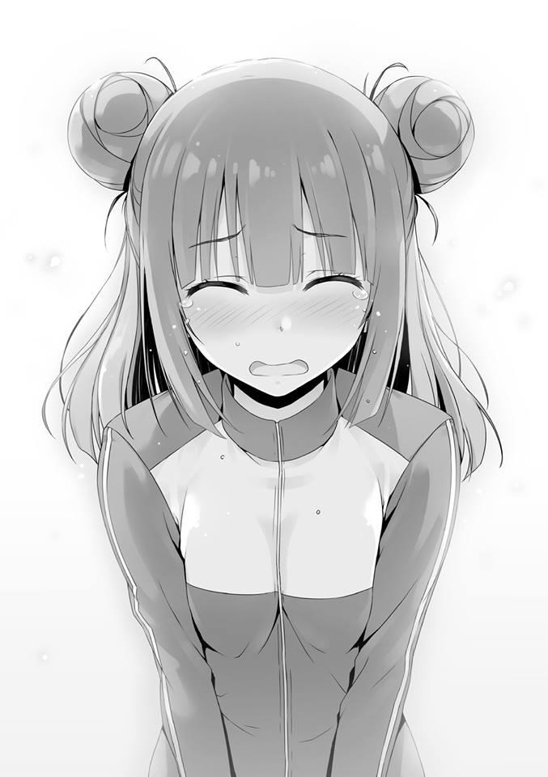
Entiendo. Para asegurar tu graduación como Clase A, para actuar en contra de Nagumo, instruiste a los estudiantes de la Clase A, tanto chicos como chicas, para que no dejasen que ninguno de ellos acabase como líder, ¿verdad?
Porque si mantienes una calificación constante, no serás expulsado. Sin embargo, sabías que ni siquiera eso sería una defensa absoluta.
Por eso aceptaste el reto de Nagumo y creaste el escenario para una lucha justa.
Para mantener a raya la “malicia”.
Y también evitaste hacer contacto descuidado con las chicas.
Para reducir el riesgo de que Nagumo se aproveche de esa apertura y se dirija a ellas.
Amigablemente, has agotado todas las medidas posibles, lo reconozco.
Pero aun así, la malicia de Nagumo excede todo eso.
Ni siquiera hay necesidad de hablar de ello en profundidad. Este examen especial es una trampa que Nagumo puso sin que la escuela se diera cuenta.
Las personas atrapadas en la trampa están empezando a darse cuenta de su situación.
Sus expresiones, aún ahora, han palidecido hasta el punto que parece que están a punto de colapsar.
— ¿No es obvio? Perturbaste la paz de nuestro grupo, Tachibana Akane-san de la Clase A.
Para que todos lo escucharan, Ikari lo dijo con agresividad.
— Nagumo... la promesa hecha a Horikita era que no involucraríamos a un tercero en esto, ¿verdad? —Fujimaki se acerca, parece que va a golpear a alguien.
— Espera, por favor. No tengo nada que ver con esto.
— ¡Desvergonzado!
Es obvio que se enfadaría. No importa quién lo mire, él está involucrado, es el estado de ánimo de transparencia que él mismo está creando.
— Entonces, daré el aviso de caída mutua.
Diciendo eso con indiferencia, Ikari se dirigió a los maestros.
Al mismo tiempo, el compañero de clase de Ikari, Ishikura, también la siguió para mantenerse unidos.
Nadie se atrevía a reconocerlo.
Eso incluye también a la facción de Hashimoto.
— Tachibana-senpai frenó al grupo de Ikari-senpai. Como resultado, la puntuación promedio cayó por debajo del límite, y ella también será hundida. ¿No es así de simple?
A diferencia de Fujimaki, el mayor de los Horikita llamó a Tachibana, que estaba quieta, antes de acercarse a Nagumo.
Una parte de los estudiantes de tercer año se fue con expresiones de impotencia.
— ¡Horikita-kun, lo siento....!
— Tachibana, ¿por qué no me consultaste antes? Debiste ser capaz de notar la anomalía.
— Eso es......porque sabía que sólo agobiaría a Horikita-kun...
Tachibana se disculpa mientras llora.
Es muy probable que no se diera cuenta al principio. El hecho de que la trampa surgió desde el momento en que se establecieron los grupos.
Sin embargo, con el paso del tiempo debe haberlo sentido. El hecho de que el grupo en el que estaba era un grupo para hundir a “Tachibana”.
Y Tachibana se enfrentó al examen, esperando un milagro. Sin embargo, como era de esperar, la realidad es cruel.
Pero Tachibana también debió decidir aceptarlo. Que incluso si ella era expulsada, terminaría con la pérdida de sólo 100 puntos de clase.
— Hermosa amistad, o tal vez el amor encaje mejor. Felicidades, Horikita-senpai. Una vez más, por favor, déjame felicitarte. Es mi derrota.
Nagumo dio sus felicitaciones en un tono que apenas suena como el discurso de un perdedor. No hay nadie que las acepte con gratitud.
— Una idea fantástica, no, ¿debería decir que fue una estrategia que estaba más allá de lo normal? No hay una sola persona capaz de leerme. Horikita-senpai, eso te incluye a ti también.
Riendo a carcajadas, Nagumo no dejó de atacar a su herido oponente.
— Por favor, dime, Tachibana-senpai. Cumpliendo con tus deberes como parte del consejo estudiantil, y tan cerca de tu graduación como Clase A de tercer año, ¿cómo te sientes exactamente al ser expulsada? También Horikita-senpai, ¿cuáles son tus sentimientos ahora? Seguramente estás consumido por una sensación de irritación que no has sentido antes.
Al dirigirle esas palabras, el mayor de los Horikita exhaló en silencio.
— ¿Por qué no me atacaste?
— Aunque usara una estrategia como esta contra ti, senpai, nunca he considerado expulsarte. Podrías haberme detenido con una estrategia imprevista y estaba asustado de eso. Pero más que eso, nunca pensé en expulsarte, Horikita-senpai. Al contrario, si te expulsaran, no podríamos vernos más, ¿cierto? Y es por eso que cuando elegí uno de muchos, terminó siendo Tachibana-senpai. Quería ver qué cara pondrías cuando me deshiciera de ella.
Luego se rió como si dijera que sólo era curiosidad, puro interés.
— Mis políticas difieren de las tuyas, pero confié en ti. En cuanto a nuestra competencia, pensé que eras el tipo de hombre capaz de enfrentarme de frente. Parece que me equivoqué.
Nagumo no se inmutó en respuesta a esas palabras de Horikita.
— La confianza es similar a los puntos de experiencia. Los acumulas y gradualmente se hace más y más grande. Su forma última, creo, es la
familia. Si sales de noche y te encuentras con un extraño, serás cauteloso.
Pero si se tratara de la familia, bajarás la guardia por completo. Yo diría que es algo parecido a eso. Durante estos dos años, aunque estoy seguro de que no le caía bien a Horikita-senpai, me gané un cierto grado de su confianza. Nuestros valores son diferentes, pero todo es porque cumplí mis promesas. En cuanto a nuestra relación, obedecí tus instrucciones y mantuve las reglas. Pero aun así, estamos hablando de un senpai tan agudo como tú, no es como si confiaras en mí al 100%, ¿verdad?
Debería saber al menos que el Horikita mayor había dado instrucciones para la defensa, así como el hecho de que había estado reuniendo información.
— Pero... aunque dudaras de mí, no es como si pudieras tomar la iniciativa de traicionarme, senpai.
Es uno de los puntos fuertes de la defensa no agresiva.
— Por esa curiosidad que tenías, has perdido mucho tiempo, Nagumo.
— Cosas como la confianza, las he tirado a un lado yo mismo. Para ser entendido por el senpai que cuida de sus kouhais.
Cumplir promesas y haberlas cumplido.
Nagumo fácilmente pintó sobre esos cimientos.
Confianza y respeto. Desear una lucha que derribe semejantes barreras. Este es un reto de Nagumo, que piensa así.
— He logrado entender bien tu modus operandi.
— Eso es un alivio. Porque esto es, a lo sumo, una mera escaramuza.
Diciendo eso, pregunta Nagumo.
— Si es necesario, sólo tengo que expulsar a tanta gente como sea necesario.
Ese es el modus operandi original de esta escuela.
— Parece que continúas esta conversación asumiendo que Tachibana será expulsada.
Mientras su entorno entraba en pánico, el Horikita mayor solo prosiguió tranquilamente con la conversación.
— ¡Espera, Horikita-kun!
Tachibana grita.
Pero los ojos del Horikita mayor ya mostraban una firme determinación.
— Heh. Pensé que sería un empate, pero ¿realmente vas a soltarlos? Con esta sincronización, esa gran cantidad de dinero y puntos de clase, quiero decir.
Cancelación de la expulsión.
Siempre y cuando se cumplan los criterios, es el método definitivo disponible para ser utilizado por cualquier persona.
— Por favor, detente, te lo ruego. Mi inutilidad es mi propia responsabilidad...
por eso...
Tachibana intentó desesperadamente detenerlo.
Sin embargo, parece que Fujimaki también comparte la misma opinión que el Horikita mayor, ya que habló con los estudiantes de la clase A.
— Hasta ahora, la razón por la que la Clase A podía funcionar como Clase A es algo que la gente de la clase entiende mejor que nadie. ¿No es cierto?
— Exactamente, Horikita. No hay necesidad de contenerse, úsalos, úsalos.
Sus compañeros de la Clase A lo dijeron al mismo tiempo.
— ¿Está eso realmente bien, Horikita-senpai? Para los de tercer año “salvar”
a un expulsado en este momento significa que la Clase A tendría que renunciar a su lugar. ¿Sabes?
— Aunque tengamos que dejarlo una vez, sólo tenemos que recuperarlo de nuevo. Utilizando el modus operandi de esta escuela que has mencionado.
— ¿Es eso cierto? Bueno, supongo que también está bien.
Con toda probabilidad, a partir de este momento, Miyabi discutirá gustosamente la estrategia que él mismo formuló.
No hay necesidad de que escuche algo que ya sé sin siquiera tener que preguntar.
Me distancié como si fuera a dejar este lugar. Es porque no hay nada que pueda hacer aunque me quede aquí más tiempo.
Horikita estaba observando ansiosamente la situación, toda la historia.
Estaba mirando a su hermano tan intensamente que ni siquiera se dio cuenta de mi existencia.
Cuando salí del gimnasio sin prestar atención, Kei estaba parada a un lado de la entrada y me esperaba.
Mientras caminaba por el pasillo, ella empezó a caminar detrás de mí con una ligera demora.
— Resultó ser exactamente como Kiyotaka dijo que sería. Lo sabías en serio.
Que Tachibana-senpai sería el objetivo. Aunque si hablamos de expulsiones, cualquier otra persona que no sea Horikita-senpai podría haber cumplido con los requisitos....
— Las reglas para este examen especial. Tan pronto como supe que el consejo estudiantil estaba involucrado en su concepción y formación, lo pensé. Sin duda, cualquiera podría haber encajado si estuviéramos hablando de ser el objetivo. Pero después de tomarse la molestia de poner en marcha esta trampa a gran escala. Si tiene la intención de lograr un rendimiento mucho más eficaz, los objetivos para ello serían muy pocos.
La única alumna que ha tenido un contacto extenso con él es Tachibana.
Esa fue la conclusión a la que llegué tras conectar los puntos de la información que obtuve de Kei, Ichinose y Asahina.
La milagrosa armonía entre Nagumo e Ishikura de la Clase B del tercer año insinuó claramente la conexión entre los dos.
Nagumo ha tomado bajo su ala no sólo la totalidad de los estudiantes de segundo año, sino también a los que no pertenecen a la Clase A de tercer año.
— Todos los grupos grandes se confabularon para conseguir puntuaciones bajas, y los miembros del grupo al que pertenecía Tachibana también debieron estar considerablemente reprimidos. Al hacerlo, es una tarea fácil trazar la frontera.
Fue como lo expliqué, pero parece que todavía hay algo de lo que Kei no está convencida.
— ¿Pero por qué usó a la clase B? Aunque hubiera estado bien que un estudiante de la clase D fuera el líder. ¿Por qué usó a la clase B?, en última instancia, Horikita-senpai sigue siendo de la Clase A, ¿verdad? Si querías llevarlo a la clase B, ¿no es eso lo que deberías haber hecho?
El punto de vista de Kei es bueno. Ciertamente, eso es correcto.
Si voy a llevar a cabo esta estrategia con determinación, entonces debería haber hecho que el líder fuera un estudiante de la clase D y reducir la brecha entre la clase A y la clase B de esa manera. Es lo que yo habría considerado normalmente.
— Es precisamente porque es Clase B que esto fue posible. Si Tachibana completara las tareas del examen especial de forma impecable, entonces no sería una tarea sencilla que la hundieran. A menos que las otras tres clases, excluyendo la A, se unan, no es una trampa viable. Considera que la Clase D, cuya probabilidad de llegar a la Clase A es la más baja en este momento, para ascender incluso una clase pueden decidir, en el último momento, hundir a los estudiantes de la Clase C o de la Clase B. Pero si una estudiante de la Clase B se convirtiera en la líder, ese no sería en absoluto el caso. Porque sería inútil hundir a los estudiantes de una clase inferior en un momento como éste.
Por otro lado, mirándolo desde la perspectiva de la Clase D o de la Clase C, si esto resultara en la expulsión de los estudiantes de las Clases A y B y que se desmoronaran, entonces, naturalmente, cooperarían con gusto.
Y el grupo de Ikari, que compartía un destino común, echó toda la culpa a Tachibana.
Si algo pasaba, seguro que la hostigarían cruelmente. Tachibana se quedó sin poder dormir por la noche a causa de la conmoción.
Como resultado de obedecer las instrucciones de Tachibana, sus calificaciones no mejoraron. Si sólo observas los resultados del examen especial, a pesar de
que son mediocres, si pueden incriminarla por haberlas frenado durante toda la semana, entonces eso será más que suficiente para hundirla.
Si se presentaran alegatos, entonces ellas deliberarían, pero si todo el grupo pequeño se confabulaba para afirmar que ella las había obstaculizado, entonces no habría más remedio que reconocer eso.
Por supuesto, sentaría un precedente malévolo, pero el examen especial de la escuela al aire libre que tendrá lugar dentro de unos años debería tener algunas modificaciones en sus normas.
Y así de fácil, la elaborada estrategia de Nagumo la envolvió y logró llevar a cabo medidas para la expulsión de Tachibana.
— ....Pero, por ejemplo, ¿cómo se le ocurrió una estrategia como ésta? Si yo fuera una estudiante de la clase B, no podría soportar que me expulsaran por el bien de mis camaradas. ¿Dónde está la recompensa en eso?
— No sé cuál es exactamente la recompensa, pero al menos, Ikari no será expulsada.
— ¿Ehh? Pero, ella es la líder, ¿verdad?
— Seguro predijeron que el Horikita mayor utilizaría eso. 20 millones de puntos y 300 puntos de clase. Si se pagan, puedes cancelar la expulsión.
En otras palabras, puedes extender una línea de vida. Es porque va a utilizar eso.
— De alguna manera, no puedo decir si eso es una ganancia o no. Más bien,
¿no sería una pérdida?
— Es un golpe tener que gastar puntos de clase, pero si la Clase A también extiende una línea de vida, entonces no se formará una brecha. En comparación, no sufrirán ningún daño en lo que respecta a los puntos privados.
— ¿Significa eso que la clase B de tercer año es así de rica?
— No. La condición absoluta para que Nagumo proponga esta estrategia es que pague todos los puntos privados. Si no lo hace, es probable que ni siquiera cooperen con él.
Posiblemente, en el autobús, Nagumo se puso en contacto con Ishikura y le pagó 20 millones de puntos por adelantado. La prueba está en Ikari, que siempre estuvo tranquila, e Ishikura que actuaba al lado de ella.
— Los estudiantes de segundo año están unidos. Si él recauda dinero de todo el segundo año, entonces ni siquiera necesitaría 50.000 puntos por persona. Salvar a un expulsado ni siquiera sería caro.
— Qué forma de pelear más sucia. Eso no es en absoluto normal.
— Así es como opera Nagumo Miyabi, eso es lo que es.
No pensó en la estrategia después de ver el examen. Pensó en la estrategia antes de crear el examen.
La clase A, liderada por el Horikita mayor, tendría que pagar un total de 20
millones de puntos privados como clase.
Se podría decir que es una cantidad extrema de daño.
Antes de uno o dos exámenes especiales más que se realizarán antes de su graduación, han perdido una tremenda cantidad de dinero.
Si el Horikita mayor fuera expulsado en el próximo examen, entonces lo más probable es que no le quedara suficiente dinero para sí mismo.
La cuerda de salvamento fallaría.
— Deberíamos separarnos.
— Una cosa más, por favor, dime una cosa más.
Tal vez todavía hay algo que le despierte curiosidad, ya que Kei me detuvo.
— La manera de pensar de Nagumo-senpai, parece que no hay manera de detener el método que usó para expulsar a Tachibana-senpai. ¿Cómo decirlo, una trampa perfecta? ¿Es por eso que Kiyotaka no hizo nada?
— No hay duda de que es una estrategia formidable. Ya es más o menos jaque mate en el momento en que hace que el enemigo entre en ella.
Él estableció un buen predecente de que los puntos privados pueden convertirse en armas poderosas.
— ¿Si yo estuviera en una situación similar a la de Tachibana-senpai...? ¿Si es una situación en la que ni siquiera se puede usar una cuerda de salvamento? Como pensaba, en un momento así, ¿no sería imposible hacer algo?
Kei me lo pregunta en voz baja.
— Ni siquiera necesitas oír mi respuesta, ya lo sabes, ¿verdad? No dejaré que te expulsen. No importa el método que tenga que usar.
Después de eso, Horikita Manabu pagó los puntos de clase y los puntos privados que poseía la Clase A y decidió extender una línea de vida a Tachibana Akane.
Y tal y como predije, Ishikura de la Clase B también extendió una cuerda de salvamento a Ikari.
Ocurrió un escenario inusual en el que dos clases ejercieron el derecho a utilizar una cuerda de salvamento al mismo tiempo. Y también desde este punto en adelante, una tras otra, ocurrirán expulsiones en todos los años escolares en la Advanced Nurturing High School.
PALABRAS DEL AUTOR
La próxima vez con seguridad, albergar esos sentimientos en mi corazón mientras doy un anuncio de la fecha de lanzamiento, pero que aun así se está retrasando por completo. Aquí Kinugasa.
Ahora que mi afirmación es tan falsa, no puedo evitar sentir que esto es extraño.
Debería haber sido capaz de lanzarlo ya, debería ser capaz de lanzarlo ya, pero cada vez hay un retraso en mis anuncios.
¡Es terrible!
Por la presente declaro en términos inequívocos que ya no mencionaré la fecha de lanzamiento en las palabras del autor.
Han pasado aproximadamente 7~8 semanas desde que me lastimé los dedos.....
ha pasado mucho tiempo y sin embargo todavía estoy lejos de lograr una recuperación completa....
Estoy recibiendo tratamiento mientras me cuido paulatinamente y me pregunto si puedo mantener el ritmo de 4 meses que he mantenido hasta ahora.
Aun así, para cuando me di cuenta ya era mayo.
El tiempo vuela, ¿verdad?
Ha pasado bastante rápido considerando que han pasado casi 3 años desde que Youkoso Jitsuryoku Shijou Shugi no Kyoshitsu e fue lanzado por primera vez.
Al principio, durante el volumen 1, hubo momentos en los que no esperaba seguir vendiendo y escribiendo esto, así que estoy muy contento, pero en estos días no son sólo mis dedos, sino todo mi cuerpo el que cruje en las articulaciones. Soy muy consciente de ello.
De verdad, debo ser cauteloso.
Sólo será ligeramente, pero también me referiré al contenido del volumen 8.
El volumen 8 de Youjitsu es una historia donde los estudiantes mayores aparecen uno tras otro.
Desde estudiantes mayores buenos para nada hasta estudiantes mayores sospechosos, incluso estudiantes mayores poco confiables aparecerán extensamente.
Sería estupendo que disfrutaras también de este volumen.
Ahora sobre el volumen 9, umm, en otras palabras, en S-S-Septiembre saldrá a la venta........gu, gugigi, no, ¡ya he decidido que no voy a hacer esa aseveración!
¡Detente!
Voy a cortar con lo infantil....
Personalmente hablando, hay una cosa que siempre he querido.
Llámenlo un deseo mío, pero quiero un sillón de masaje. De verdad, de verdad quiero uno.
Pero es caro.
Además, como ocupa espacio, no tendré el espacio para acomodarlo en mi casa.
Los primeros años donde las preocupaciones continúan.
Al final no puedo tomar una decisión. ¿El día que compre uno llegará o no?
Bueno, no importa cuánto tiempo pase, seguiré soñando sobre esto y lo otro y no terminaré comprándolo.
Si hay alguien que sepa de un maravilloso sillón de masaje, por favor dígamelo.
HISTORIAS CORTAS
KARUIZAWA HISTORIA CORTA
UN COMPAÑERO BROMISTA
Poco después de que comenzara la escuela al aire libre, recibí una petición de Kiyotaka y me comprometí a la comprensión del grupo de las chicas.
Y hoy por fin he podido ver a Kiyotaka.
Kiyotaka me miró una vez.
Inmediatamente lo entendí.
El hecho de que se va a poner en contacto conmigo ahora.
Y pude sentirlo sentado detrás de mí.
—Hnn---
Le envié una señal con un ronroneo para que Kiyotaka supiera que me fijé en él sin que mis amigas y los demás se dieran cuenta de ello.
Y luego comencé a conversar sin reservas con mis amigas.
Si hago algo problemático, me haría levantar sospechas. Luego, unos tres minutos más tarde, conseguí salir de allí diciendo que tenía un compromiso con otra chica.
—¿Y? ¿Por fin tienes ganas de confiar en mí al tercer día?
Llamé a Kiyotaka, que estaba sentado detrás de mí. Sin embargo, no me di la vuelta para mirar.
En momentos como éste, las espías no hacen tonterías.
—Así es, más o menos. Hay muy poca información sobre las chicas.
En estos días, Horikita-san también parece un poco distante. Soy la única persona de la clase en la que puede confiar.
Estaba muy feliz de que en el fondo, Kiyotaka confiaba en mí como si se me aferrara.... no, no. ¿Qué es lo que me pasa? Estar complacida de que me hagan trabajar al máximo.
—Bueno, no se puede evitar, ¿verdad? Para alguien con un trastorno de comunicación como tú, sólo hay unas pocas chicas con las que podrías hacer contacto.
Pero actué altivamente, sólo un poco, para burlarme de él.
—Entonces, incluso sin mi consejo, ¿puedes superar este examen especial?
Recibí un contragolpe de su parte.
Debí haberme aprovechado, pero con ese golpe, me dejaron tambaleando.
—Por supuesto. ¿Quién te crees que soy?
Intenté hacer un farol, pero sin duda, el hecho de que me sacudí debió transmitirse a Kiyotaka.
—Ya veo. Entonces no hay nada que temer.
¿Puedo encargarme del resto yo sola? Recibí ese tipo de presión y me di por vencida.
Si alguna vez me meto en un apuro, no es como si pudiera hacer algo al respecto por mi cuenta.
—....Después, al menos analiza mi situación para ver si hay algún peligro o no, ¿bien?
Le pedí eso dócilmente.
—Por ahora, escuchemos las noticias partiendo de la división de los grupos de las chicas.
—Ahh, antes de que hablemos de eso hay algo que me ha estado molestando.
—Seamos breves.
Por supuesto que lo entiendo. No quiero que nadie empiece a prestarle atención a Kiyotaka porque yo meta la pata.
—Es algo muy importante.... o más bien, ¿qué está pasando con ese tipo Ryuuen?
—¿Estás preocupada?
—Es decir, sí. Se ha convertido en un tema incluso entre las chicas. Por qué ese tipo dejó de ser el líder, pero parece que nadie sabe la verdad.
No hay manera de que no sienta curiosidad por saber qué está pasando con el hombre que me hizo todas esas cosas horribles.
—Siendo tan manso como un cordero, esa expresión no le queda muy bien a Ryuuen... pero ahora mismo parece que está actuando muy maduro.
—¿Significa eso que tu escarmiento funcionó?
—Escarmiento, ¿eh?
En un futuro cercano, no seré el objetivo de ese hombre.
Me sentí realmente feliz por eso.
—No te preocupes por Ryuuen. No actuará descuidadamente. Como mínimo, puedo decir que no le hará nada a Kei de ahora en adelante.
¡Buuu!
Un ataque sorpresa. Me llamó "Kei".
Como todavía no estoy acostumbrada a que me llame por mi nombre, de repente me puse nerviosa.
Pero, es patético ponerse nerviosa por que te llamen por tu nombre.
Estabilicé mi respiración.
—....Lo siento, no fue nada.
Le puse esa excusa y volví a nuestra conversación.
—Eso no parecía nada, Kei.
Me llamó por mi nombre otra vez. Cada vez, mi pobre corazón da un gran salto.
Luego, después de unos segundos, comienza a latir rápidamente.
—Estoy diciendo que no es nada.
Cálmate, cálmate, Kei. No soy una mujer que se conmueva sólo porque la llamen por su nombre.
Soy una gyaru popular que puede superar fácilmente cosas triviales como esta.
Aún así, aunque hasta ahora no se refería a mí de esa manera, ¿por qué me llama así una y otra vez?
—¿Es verdad, Kei?
La tercera vez me confirmó honestamente que me están tomando el pelo.
—.... Espera un momento. ¡Lo estás haciendo a propósito!
Quería dar la vuelta, pero no puedo.
Porque más importante que el hecho de que los demás se fijen en nosotros, está el hecho de que soy consciente de que mi cara está roja como una remolacha.
—Ahh, cielos. En realidad, no debí darte permiso para que me llames por mi nombre...
Aunque quería despedirme de él mientras escondía mi cara, no puedo hacerlo en la cafetería.
El dolor de tener que interpretar el papel de la chica comiendo lentamente su comida.
—Tú eres la que me llamó aquí.
—Sí. No se puede evitar.
No se puede evitar.... es una mentira.
El que se enamora pierde.
No sé quién lo dijo, pero creo que es un dicho inteligente.
ICHINOSE HISTORIA CORTA
CANSANCIO DEL CORAZÓN
—Estoy exhausta.
Después de separarme de Asako-chan y las demás, me apoyé con la parte superior de mi cuerpo en la amplia mesa de la cafetería.
Sentí como si toda la fatiga que había acumulado durante el día se desvaneciera.
Sería genial si me quedara dormida de esta manera.
Cerré los ojos y lo pensé.
No, no, no. Si me quedo dormida en un lugar como éste, molestaría a los demás.
Pero mis párpados ya están tan pesados.
Cuando hice todo lo que pude para abrirlos de nuevo, Ayanokouji-kun se reflejó en mis ojos.
A una distancia sorprendentemente cercana.
Levanté abruptamente la parte superior de mi cuerpo y lo llamé.
—Ayanokouji-kuuuuun, yaho~.
—Te estabas divirtiendo.
Aparentemente escuchó mi conversación con Asako-chan y las otras.
—Las charlas de las chicas pueden o no ser su fuente de poder.
Tal vez aún no me he cargado lo suficiente, la verdad es que no tenía fuerzas y tuve que usar la mesa como almohada de repuesto.
Como Ayanokouji-kun tenía una mirada de asombro en su cara, añadí.
—Ahh, ¿no puedo hacer esto?
Puede ser una actitud demasiado grosera al hablar con otra persona...
—Es normal hacer algo así cuando estás cansado.
Parecía sorprendido, pero dio su consentimiento.
—Lo siento... Por ponerte un poco incómodo.
—Se ha convertido en un grupo bastante difícil, ¿no?
—Fue difícil hasta que formamos el grupo actual, tal vez debería decirlo así.
Las chicas saben muy bien lo que les gusta y lo que no les gusta, o más bien, hay más de unas cuantas chicas que están dispuestas a decir que no les gusta otra chica directamente en su cara. En ese sentido, cuando se trata de sentimientos personales, ¿no son muchos los chicos a los que les gusta complicar las cosas?
Bueno, he escuchado bastantes veces que estallan peleas por pequeños detalles. Si puedo escuchar varias cosas de Ayanokouji-kun, entonces me gustaría recopilar información.
—Pero a Ryuuen no le gusta mucho.
—Es malo reírse de eso, pero no se puede evitar, ¿verdad? ¿Pero no está Ryuuen-kun cansado también? Ser odiado por todos debe ser agotador.
Habría estado bien si se hubiera conectado más con otros para poder llevarse bien con ellos.
Aunque ahora pase la página, ¿no será difícil hacer que las cosas vayan bien?
—No te entusiasmes demasiado.
Quizás estaba siendo considerado conmigo, ya que Ayanokouji-kun rápidamente se levantó de su asiento.
Parece que no podré sacarle información, pero no se puede evitar.
De todos modos, yo también quería relajarme a solas.
—Está bien, está bien. Ser enérgica es lo único que tengo a mi favor.
Hasta luego, Ayanokouji-kun.
Además, de cualquier manera, todo lo que puedo hacer cuando se trata de un examen como éste es afrontarlo con seriedad.
Un examen especial en el que tendré que unirme a otras personas que no son mis compañeros de clase no es realmente un examen sobre el que pueda hacer algo....
Cómo decirlo, si aumento el número de cosas que tengo que proteger, terminaré siendo incapaz de seguir el ritmo de todo esto.
Alguien que normalmente sería mi enemigo se convierte en mi aliado. Algo así significa que algún día, mi enemigo puede terminar siendo mi aliado.
Si algo así ocurriera, tarde o temprano podría explotar.
Pensé eso mientras miraba la espalda de Ayanokouji-kun cuando se marchó.
—....Así que subieron a la clase C. Aunque todo lo que he escuchado son los logros de Horikita-san......
Ayanokouji-kun, que siempre está en una posición perfecta.
Exactamente cuánta influencia ejerce todavía es una completa incógnita.
Pero... sólo hay unas pocas personas que saben que poseo una enorme suma de puntos.
¿Un estudiante de la clase B lo filtró, o podría ser......Ayanokouji-kun?
Tendré que averiguarlo muy pronto.
Si resulta que es alguien superior a Horikita-san, significa que puede ser una amenaza para la Clase B, a la que debo proteger.
NAZUNA (AMULETO-CHAN) HISTORIA CORTA
ESE CHICO DE PRIMER AÑO
Ese encuentro tuvo lugar cuando salí del baño y volvía a la cafetería.
—¿Hmm?
Cuando pasé junto a ese chico, escuché esa voz. ¿Podría ser que esté hablando conmigo?
Mientras reflexionaba sobre si debía o no dejar de caminar, ese muchacho me llamó.
—Ahh, lo siento. Sólo pensé que había visto ese amuleto hace un tiempo.
Por favor, no te preocupes por mí.
Ese chico dijo algo así. Así como pensé que lo había visto antes en alguna parte, resultó ser el estudiante de primer año con el que Miyabi habló hace un tiempo.
Si mal no recuerdo, se enfrentó muy bien a Horikita-senpai durante el relevo.
Un chico lamentable que atrajo la atención por eso, fue la impresión que tenía de él.
—Este amuleto ya no está disponible en la escuela.
Dudo que este sea el caso, pero ¿podría estar coqueteando conmigo mientras pone esa cara ingenua suya?
—¿Es en serio? Por casualidad, ¿se te cayó este amuleto en algún lugar hace un tiempo?
—¿Podría ser..... tú eres el que recogió mi amuleto?
—No lo sé. Lo recogí en mi camino de regreso durante las vacaciones de invierno...
Se me había caído mi amuleto en alguna parte y me había dado por vencida. Me sentí agradecida con la persona que lo recogió y me avergoncé de haber imaginado algo grosero.
—No creo que me equivoque. Ya veo, así que fuiste tú.
Me acerqué al chico y le mostré mi amuleto.
Tal vez sea porque lo entregó inmediatamente, ya que no se había dado cuenta.
—Este amuleto es algo que compré en esta escuela. Así que no es como si tuviera un fuerte apego a él en particular. Es sólo que, ¿cómo debería decirlo, es como mi apoyo psicológico? Cuando tengo esto en mis manos me siento realmente tranquila. Por eso, cuando lo perdí, se sentía como un presagio de que iban a pasar cosas malas y eso me puso nerviosa. Por eso estaba muy contenta de saber que alguien lo recogió y lo entregó.
Inconscientemente, terminé hablando de cosas que no tienen nada que ver, pero esto debería ser suficiente.
—Pensar que la persona que lo recogió eres tú.
A esto también se le podría llamar un extraño encuentro casual. O más bien, puede ser algo parecido al destino.
Este amuleto protege a su dueño y al mismo tiempo, es el precursor del destino.
No se trata sólo de amor, sino también de unir a la gente.
Tal vez haya un destino significativo que él y yo compartimos.
Tal vez por eso se me cayó el amuleto.
Pensando en eso, comencé a tener ganas de apreciar este extraño y precioso destino.
Es cierto.
Para mí, así fue como conocí a Ayanokouji Kiyotaka-kun. El día en que el destino levantó la cabeza.
SAKAYANAGI HISTORIA CORTA
EL VERDADERO SIGNIFICADO ES…
Ese chico que caminaba hacia mí lo hacía mientras miraba hacia otro lado.
Pude ver fácilmente que estaba ocupado en una agradable charla con sus amigos y que, por lo tanto, estaba descuidando lo que tenía delante de él.
A este ritmo, chocaremos.
Sin embargo, incluso alguien con piernas de minusválido como yo puede ajustar suficientemente el curso teniendo en cuenta la posición.
Pero hay veces en que me duelen las piernas y es más difícil de lo normal hacer que se muevan.
Y eso sucedió ahora.
Por eso no tuve más remedio que elegir la opción de llamarlo.
—Umm---por favor, ten cuidado.
Sin embargo, mi voz se ahogó por la risa de los chicos.
Sin tener en cuenta el hecho de que había elaborado una medida para evitarlos por segunda vez, ésta resultó ineficaz.
Ya que hemos llegado a este punto, no tengo ganas de hacer una tercera maniobra.
Me decidí y me preparé para la conclusión que seguiría poco después.
El muchacho no se dio cuenta de mí y su hombro, con algo de fuerza, me golpeó.
Intenté aguantarlo, pero no había forma de que saliera bien y todo lo que pude hacer fue sentarme allí mismo como si estuviera colapsando.
—Lo siento, lo siento. ¿Estás bien?
El nombre del chico que se percató de mí por primera vez después de tropezar conmigo es Yamauchi Haruki. Un estudiante de la Clase C.
Para que conste, tengo esta información presente, pero en lo que a mí respecta, es una existencia insignificante.
—Sí... no hay necesidad de preocuparse.
No tomé la mano que me había extendido, sino que usé la pared para levantarme lentamente.
—Entonces, umm, ¿me voy?
Yamauchi-kun finalizó con una sencilla y no muy seria disculpa.
En cierto modo, se podría decir que es un chico agradable.
—Sí. Por favor, no te preocupes por mí
Mientras respondía educadamente de esa manera, Yamauchi-kun volvió inmediatamente a charlar con sus amigos y se marchó.
—En serio, Sakayanagi-chan es linda, pero ¿no es un poco torpe?
A pesar de no haberse alejado mucho de mí todavía, sin siquiera saber que lo están escuchando, Yamauchi-kun dejó atrás esas palabras y desapareció.
Probablemente no lo vio todo, pero parece que Ayanokouji-kun también ha estado observando mi interacción con él.
Terminé dejándole ver algo desagradable.
—¿Estás bien?
—Gracias por tu preocupación, pero no es gran cosa.
—Le daré a Yamauchi un sermón más tarde.
—No es como si lo hubiera hecho a propósito, sólo me caí como mucho.
Sin embargo, ahora que he caído una vez, también significa que he ganado el derecho de hacer que él también caiga.
—Bueno, por favor, discúlpame.
Tarde o temprano, tendré que entregarle un regalo especial.
SAKAYANAGI HISTORIA CORTA 2
ESE DÍA DE VERANO
A principios de febrero. Justo cuando podía sentir el aliento de la primavera.
Tenía una lata de café caliente en las manos. Como la lata está muy caliente, saqué mi pañuelo y lo envolví alrededor de la lata.
—Oye, quiero escucharlo directamente.
—Ara. ¿Cuál podría ser el problema?
Mientras me miraba, Masumi-san lo dijo.
—Parece que llevas muchas cosas, pero, ¿no es ese un pañuelo marrón para chicos?
—¿No me sienta bien?
—Para ser honesta, no.
—Me gusta mucho que Masumi-san sea una persona que no se anda con rodeos.
Me reí un poco y miré el pañuelo. Sin duda, es muy sencillo y simple, pensado para los chicos, es difícil decir que normalmente me interesaría.
—Esto no es mío. Así que no me sorprende que no me quede bien. ¿Debo decir que es algo que tomé prestado?
—Tomar prestado un pañuelo... ¿qué pasa con eso? ¿No es un poco espeluznante?
—Fufu. Tal vez.
—Pero te estás riendo...
Encontré este pañuelo por primera vez antes de inscribirme en la Advanced Nurturing High School. Volvamos a cuando estaba en tercer año de secundaria y a las vacaciones de verano de esa época.
Llamándola una aventura de verano, me subí a un tren sola y viajé a un mar lejano. Un lugar que solía visitar muchas veces cuando era niña, pero que fue alejándose a medida que crecía. Como no sé nadar, es un lugar en el que no tenía nada que hacer. Solía pensar eso en aquellos días, pero ahora que me he matriculado en la preparatoria, eso se ha convertido en un buen recuerdo para mí.
Me di cuenta de que hay mucho valor incluso en simplemente admirar las ondulantes olas del mar. Pero también me doy cuenta de que a una lisiada como yo le resultaría difícil caminar por la playa, así que me conformé con contemplar la playa desde la carretera pavimentada a lo largo de la costa. Para protegerme del sol abrasador del verano, me aseguré de usar un sombrero blanco.
Sin embargo--
—Ahh----------.
Poco después, junto con una brisa, el sombrero blanco que llevaba puesto voló hacia el cielo. Me asusté y me acerqué, pero una lisiada como yo no pudo alcanzarlo y voló hacia la playa.
—....Una travesura del viento, ¿supongo? No hay otra opción entonces.
Ese sombrero es una valiosa pertenencia mía que mi padre me compró.
Necesito ir a recogerlo de alguna manera.
Decidí tomar un desvío hacia la playa mientras me bañaba directamente bajo los rayos del sol a los que no estoy acostumbrada. Sin embargo, el sol abrasador me quitó más fuerzas de las que esperaba.
—Honestamente.... no soy buena cuando se trata de hacer algo físico.
Sintiéndome muy mareada, me desplomé tan pronto como llegué a una banca con un techo sobre ella cerca del faro.
Incluso en este mismo momento, mi sombrero puede volar más lejos hacia el mar. Eso era lo que pensaba, pero mi cuerpo simplemente no me escucha.
Entonces tomemos un pequeño descanso.
Lo pensé y decidí refrescarme en la banca. Me pregunto cuánto tiempo ha pasado desde entonces. Sentí una sensación de frescor en el cuello y abrí los ojos. Parece que me quedé dormida.
El hecho de que haya caminado largas distancias debe ser una de las causas de ello.
—........Esto es.....
Tanto el sombrero que se me había caído como un pañuelo mojado que me colocaron en el cuello estaban allí.
Para evitar que el sombrero volara de nuevo, colocaron una botella de agua mineral sin abrir en el borde del sombrero.
Cuando miré a mi alrededor, vi a un chico alejándose solo. A juzgar por su físico y su altura, tiene mi edad o tal vez un poco más. Al parecer, ha tomado las medidas apropiadas para protegerse contra el riesgo de una insolación, pero...
ese chico se fue sin siquiera pedirme las gracias.
Por alguna razón, su espalda no me resultaba familiar, así que eliminé esa posibilidad.
Porque no hay forma de que “él” pueda estar aquí en el mundo exterior.
—Quiero verte...... Ayanokouji-kun.
Inconscientemente susurré eso.
Quiero verlo con mis propios ojos ya que sólo pude verlo a través del cristal.
Quiero oír su voz.
Quiero tocarlo.
Y luego quiero quebrarlo.
Me pregunto qué es esta emoción, este impulso que llena mi corazón. Estoy segura de que la respuesta a eso sólo la encontraré al hacer contacto con Ayanokouji-kun.
Por favor.... espero volver a verte algún día.
Mientras miraba la espalda de ese chico, recé.


VISÍTANOS EN NUESTROS
DIFERENTES SITIOS
http://gladheimtranslations.blogspot.mx/
https://twitter.com/GladheimT
https://mastodon.social/@GladheimT
Si alguien desea hacer una donación
https://ko-fi.com/gladheimtranslation
https://www.buymeacoffee.com/gladheimtls
https://patreon.com/GladheimT